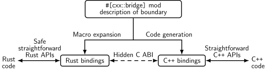

Welcome to Comprehensive Rust ü¶Ä


This is a free Rust course developed by the Android team at Google. The course covers the full spectrum of Rust, from basic syntax to advanced topics like generics and error handling.
The latest version of the course can be found at https://google.github.io/comprehensive-rust/. If you are reading somewhere else, please check there for updates.
The course is available in other languages. Select your preferred language in the top right corner of the page or check the Translations page for a list of all available translations.
The course is also available as a PDF.
The goal of the course is to teach you Rust. We assume you don't know anything about Rust and hope to:
- Give you a comprehensive understanding of the Rust syntax and language.
- Enable you to modify existing programs and write new programs in Rust.
- Show you common Rust idioms.
We call the first four course days Rust Fundamentals.
Building on this, you're invited to dive into one or more specialized topics:
- Android: a half-day course on using Rust for Android platform development (AOSP). This includes interoperability with C, C++, and Java.
- Chromium: a half-day course on using Rust within Chromium based browsers. This includes interoperability with C++ and how to include third-party crates in Chromium.
- Bare-metal: a whole-day class on using Rust for bare-metal (embedded) development. Both microcontrollers and application processors are covered.
- Concurrency: a whole-day class on concurrency in Rust. We cover both classical concurrency (preemptively scheduling using threads and mutexes) and async/await concurrency (cooperative multitasking using futures).
Non-Goals
Rust is a large language and we won't be able to cover all of it in a few days. Some non-goals of this course are:
- Learning how to develop macros: please see Chapter 19.5 in the Rust Book and Rust by Example instead.
Assumptions
The course assumes that you already know how to program. Rust is a statically-typed language and we will sometimes make comparisons with C and C++ to better explain or contrast the Rust approach.
If you know how to program in a dynamically-typed language such as Python or JavaScript, then you will be able to follow along just fine too.
This is an example of a speaker note. We will use these to add additional information to the slides. This could be key points which the instructor should cover as well as answers to typical questions which come up in class.
Running the Course
This page is for the course instructor.
Here is a bit of background information about how we've been running the course internally at Google.
We typically run classes from 9:00 am to 4:00 pm, with a 1 hour lunch break in the middle. This leaves 3 hours for the morning class and 3 hours for the afternoon class. Both sessions contain multiple breaks and time for students to work on exercises.
Before you run the course, you will want to:
-
Make yourself familiar with the course material. We've included speaker notes to help highlight the key points (please help us by contributing more speaker notes!). When presenting, you should make sure to open the speaker notes in a popup (click the link with a little arrow next to "Speaker Notes"). This way you have a clean screen to present to the class.
-
Decide on the dates. Since the course takes four days, we recommend that you schedule the days over two weeks. Course participants have said that they find it helpful to have a gap in the course since it helps them process all the information we give them.
-
Find a room large enough for your in-person participants. We recommend a class size of 15-25 people. That's small enough that people are comfortable asking questions --- it's also small enough that one instructor will have time to answer the questions. Make sure the room has desks for yourself and for the students: you will all need to be able to sit and work with your laptops. In particular, you will be doing a lot of live-coding as an instructor, so a lectern won't be very helpful for you.
-
On the day of your course, show up to the room a little early to set things up. We recommend presenting directly using
mdbook serverunning on your laptop (see the installation instructions). This ensures optimal performance with no lag as you change pages. Using your laptop will also allow you to fix typos as you or the course participants spot them. -
Let people solve the exercises by themselves or in small groups. We typically spend 30-45 minutes on exercises in the morning and in the afternoon (including time to review the solutions). Make sure to ask people if they're stuck or if there is anything you can help with. When you see that several people have the same problem, call it out to the class and offer a solution, e.g., by showing people where to find the relevant information in the standard library.
That is all, good luck running the course! We hope it will be as much fun for you as it has been for us!
Please provide feedback afterwards so that we can keep improving the course. We would love to hear what worked well for you and what can be made better. Your students are also very welcome to send us feedback!
Course Structure
This page is for the course instructor.
Rust Fundamentals
The first four days make up Rust Fundamentals. The days are fast paced and we cover a lot of ground!
Course schedule:
- Day 1 Morning (2 hours and 5 minutes, including breaks)
| Segment | Duration |
|---|---|
| Welcome | 5 minutes |
| Hello, World | 15 minutes |
| Types and Values | 40 minutes |
| Control Flow Basics | 40 minutes |
- Day 1 Afternoon (2 hours and 35 minutes, including breaks)
| Segment | Duration |
|---|---|
| Tuples and Arrays | 35 minutes |
| References | 55 minutes |
| User-Defined Types | 50 minutes |
- Day 2 Morning (2 hours and 10 minutes, including breaks)
| Segment | Duration |
|---|---|
| Welcome | 3 minutes |
| Pattern Matching | 1 hour |
| Methods and Traits | 50 minutes |
- Day 2 Afternoon (3 hours and 15 minutes, including breaks)
| Segment | Duration |
|---|---|
| Generics | 45 minutes |
| Standard Library Types | 1 hour |
| Standard Library Traits | 1 hour and 10 minutes |
- Day 3 Morning (2 hours and 20 minutes, including breaks)
| Segment | Duration |
|---|---|
| Welcome | 3 minutes |
| Memory Management | 1 hour |
| Smart Pointers | 55 minutes |
- Day 3 Afternoon (1 hour and 55 minutes, including breaks)
| Segment | Duration |
|---|---|
| Borrowing | 55 minutes |
| Lifetimes | 50 minutes |
- Day 4 Morning (2 hours and 40 minutes, including breaks)
| Segment | Duration |
|---|---|
| Welcome | 3 minutes |
| Iterators | 45 minutes |
| Modules | 40 minutes |
| Testing | 45 minutes |
- Day 4 Afternoon (2 hours and 15 minutes, including breaks)
| Segment | Duration |
|---|---|
| Error Handling | 1 hour |
| Unsafe Rust | 1 hour and 5 minutes |
Deep Dives
In addition to the 4-day class on Rust Fundamentals, we cover some more specialized topics:
Rust in Android
The Rust in Android deep dive is a half-day course on using Rust for Android platform development. This includes interoperability with C, C++, and Java.
You will need an AOSP checkout. Make a checkout of the
course repository on the same machine and move the src/android/ directory
into the root of your AOSP checkout. This will ensure that the Android build
system sees the Android.bp files in src/android/.
Ensure that adb sync works with your emulator or real device and pre-build all
Android examples using src/android/build_all.sh. Read the script to see the
commands it runs and make sure they work when you run them by hand.
Rust in Chromium
The Rust in Chromium deep dive is a half-day course on using
Rust as part of the Chromium browser. It includes using Rust in Chromium's gn
build system, bringing in third-party libraries ("crates") and C++
interoperability.
You will need to be able to build Chromium --- a debug, component build is recommended for speed but any build will work. Ensure that you can run the Chromium browser that you've built.
Bare-Metal Rust
The Bare-Metal Rust deep dive is a full day class on using Rust for bare-metal (embedded) development. Both microcontrollers and application processors are covered.
For the microcontroller part, you will need to buy the BBC micro:bit v2 development board ahead of time. Everybody will need to install a number of packages as described on the welcome page.
Concurrency in Rust
The Concurrency in Rust deep dive is a full day
class on classical as well as async/await concurrency.
You will need a fresh crate set up and the dependencies downloaded and ready to
go. You can then copy/paste the examples into src/main.rs to experiment with
them:
cargo init concurrency
cd concurrency
cargo add tokio --features full
cargo run
Course schedule:
- Morning (3 hours and 20 minutes, including breaks)
| Segment | Duration |
|---|---|
| Threads | 30 minutes |
| Channels | 20 minutes |
| Send and Sync | 15 minutes |
| Shared State | 30 minutes |
| Exercises | 1 hour and 10 minutes |
- Afternoon (3 hours and 20 minutes, including breaks)
| Segment | Duration |
|---|---|
| Async Basics | 30 minutes |
| Channels and Control Flow | 20 minutes |
| Pitfalls | 55 minutes |
| Exercises | 1 hour and 10 minutes |
Format
The course is meant to be very interactive and we recommend letting the questions drive the exploration of Rust!
Keyboard Shortcuts
There are several useful keyboard shortcuts in mdBook:
- Arrow-Left: Navigate to the previous page.
- Arrow-Right: Navigate to the next page.
- Ctrl + Enter: Execute the code sample that has focus.
- s: Activate the search bar.
Translations
The course has been translated into other languages by a set of wonderful volunteers:
- Brazilian Portuguese by @rastringer, @hugojacob, @joaovicmendes, and @henrif75.
- Chinese (Simplified) by @suetfei, @wnghl, @anlunx, @kongy, @noahdragon, @superwhd, @SketchK, and @nodmp.
- Chinese (Traditional) by @hueich, @victorhsieh, @mingyc, @kuanhungchen, and @johnathan79717.
- Japanese by @CoinEZ-JPN, @momotaro1105, @HidenoriKobayashi and @kantasv.
- Korean by @keispace, @jiyongp, @jooyunghan, and @namhyung.
- Spanish by @deavid.
- Ukrainian by @git-user-cpp, @yaremam and @reta.
Use the language picker in the top-right corner to switch between languages.
Incomplete Translations
There is a large number of in-progress translations. We link to the most recently updated translations:
- Arabic by @younies
- Bengali by @raselmandol.
- French by @KookaS, @vcaen and @AdrienBaudemont.
- German by @Throvn and @ronaldfw.
- Italian by @henrythebuilder and @detro.
The full list of translations with their current status is also available either as of their last update or synced to the latest version of the course.
If you want to help with this effort, please see our instructions for how to get going. Translations are coordinated on the issue tracker.
Using Cargo
When you start reading about Rust, you will soon meet Cargo, the standard tool used in the Rust ecosystem to build and run Rust applications. Here we want to give a brief overview of what Cargo is and how it fits into the wider ecosystem and how it fits into this training.
Installation
Please follow the instructions on https://rustup.rs/.
This will give you the Cargo build tool (cargo) and the Rust compiler
(rustc). You will also get rustup, a command line utility that you can use
to install to different compiler versions.
After installing Rust, you should configure your editor or IDE to work with Rust. Most editors do this by talking to rust-analyzer, which provides auto-completion and jump-to-definition functionality for VS Code, Emacs, Vim/Neovim, and many others. There is also a different IDE available called RustRover.
-
On Debian/Ubuntu, you can also install Cargo, the Rust source and the Rust formatter via
apt. However, this gets you an outdated rust version and may lead to unexpected behavior. The command would be:sudo apt install cargo rust-src rustfmt -
On macOS, you can use Homebrew to install Rust, but this may provide an outdated version. Therefore, it is recommended to install Rust from the official site.
The Rust Ecosystem
The Rust ecosystem consists of a number of tools, of which the main ones are:
-
rustc: the Rust compiler which turns.rsfiles into binaries and other intermediate formats. -
cargo: the Rust dependency manager and build tool. Cargo knows how to download dependencies, usually hosted on https://crates.io, and it will pass them torustcwhen building your project. Cargo also comes with a built-in test runner which is used to execute unit tests. -
rustup: the Rust toolchain installer and updater. This tool is used to install and updaterustcandcargowhen new versions of Rust are released. In addition,rustupcan also download documentation for the standard library. You can have multiple versions of Rust installed at once andrustupwill let you switch between them as needed.
Key points:
-
Rust has a rapid release schedule with a new release coming out every six weeks. New releases maintain backwards compatibility with old releases --- plus they enable new functionality.
-
There are three release channels: "stable", "beta", and "nightly".
-
New features are being tested on "nightly", "beta" is what becomes "stable" every six weeks.
-
Dependencies can also be resolved from alternative registries, git, folders, and more.
-
Rust also has editions: the current edition is Rust 2021. Previous editions were Rust 2015 and Rust 2018.
-
The editions are allowed to make backwards incompatible changes to the language.
-
To prevent breaking code, editions are opt-in: you select the edition for your crate via the
Cargo.tomlfile. -
To avoid splitting the ecosystem, Rust compilers can mix code written for different editions.
-
Mention that it is quite rare to ever use the compiler directly not through
cargo(most users never do). -
It might be worth alluding that Cargo itself is an extremely powerful and comprehensive tool. It is capable of many advanced features including but not limited to:
- Project/package structure
- workspaces
- Dev Dependencies and Runtime Dependency management/caching
- build scripting
- global installation
- It is also extensible with sub command plugins as well (such as cargo clippy).
-
Read more from the official Cargo Book
-
Code Samples in This Training
For this training, we will mostly explore the Rust language through examples which can be executed through your browser. This makes the setup much easier and ensures a consistent experience for everyone.
Installing Cargo is still encouraged: it will make it easier for you to do the exercises. On the last day, we will do a larger exercise which shows you how to work with dependencies and for that you need Cargo.
The code blocks in this course are fully interactive:
fn main() { println!("Edit me!"); }
You can use Ctrl + Enter to execute the code when focus is in the text box.
Most code samples are editable like shown above. A few code samples are not editable for various reasons:
-
The embedded playgrounds cannot execute unit tests. Copy-paste the code and open it in the real Playground to demonstrate unit tests.
-
The embedded playgrounds lose their state the moment you navigate away from the page! This is the reason that the students should solve the exercises using a local Rust installation or via the Playground.
Running Code Locally with Cargo
If you want to experiment with the code on your own system, then you will need
to first install Rust. Do this by following the
instructions in the Rust Book. This should give you a working rustc and
cargo. At the time of writing, the latest stable Rust release has these
version numbers:
% rustc --version
rustc 1.69.0 (84c898d65 2023-04-16)
% cargo --version
cargo 1.69.0 (6e9a83356 2023-04-12)
You can use any later version too since Rust maintains backwards compatibility.
With this in place, follow these steps to build a Rust binary from one of the examples in this training:
-
Click the "Copy to clipboard" button on the example you want to copy.
-
Use
cargo new exerciseto create a newexercise/directory for your code:$ cargo new exercise Created binary (application) `exercise` package -
Navigate into
exercise/and usecargo runto build and run your binary:$ cd exercise $ cargo run Compiling exercise v0.1.0 (/home/mgeisler/tmp/exercise) Finished dev [unoptimized + debuginfo] target(s) in 0.75s Running `target/debug/exercise` Hello, world! -
Replace the boiler-plate code in
src/main.rswith your own code. For example, using the example on the previous page, makesrc/main.rslook likefn main() { println!("Edit me!"); } -
Use
cargo runto build and run your updated binary:$ cargo run Compiling exercise v0.1.0 (/home/mgeisler/tmp/exercise) Finished dev [unoptimized + debuginfo] target(s) in 0.24s Running `target/debug/exercise` Edit me! -
Use
cargo checkto quickly check your project for errors, usecargo buildto compile it without running it. You will find the output intarget/debug/for a normal debug build. Usecargo build --releaseto produce an optimized release build intarget/release/. -
You can add dependencies for your project by editing
Cargo.toml. When you runcargocommands, it will automatically download and compile missing dependencies for you.
Try to encourage the class participants to install Cargo and use a local editor. It will make their life easier since they will have a normal development environment.
Welcome to Day 1
This is the first day of Rust Fundamentals. We will cover a lot of ground today:
- Basic Rust syntax: variables, scalar and compound types, enums, structs, references, functions, and methods.
- Types and type inference.
- Control flow constructs: loops, conditionals, and so on.
- User-defined types: structs and enums.
- Pattern matching: destructuring enums, structs, and arrays.
Schedule
Including 10 minute breaks, this session should take about 2 hours and 5 minutes. It contains:
| Segment | Duration |
|---|---|
| Welcome | 5 minutes |
| Hello, World | 15 minutes |
| Types and Values | 40 minutes |
| Control Flow Basics | 40 minutes |
Please remind the students that:
- They should ask questions when they get them, don't save them to the end.
- The class is meant to be interactive and discussions are very much encouraged!
- As an instructor, you should try to keep the discussions relevant, i.e., keep the discussions related to how Rust does things vs some other language. It can be hard to find the right balance, but err on the side of allowing discussions since they engage people much more than one-way communication.
- The questions will likely mean that we talk about things ahead of the slides.
- This is perfectly okay! Repetition is an important part of learning. Remember that the slides are just a support and you are free to skip them as you like.
The idea for the first day is to show the "basic" things in Rust that should have immediate parallels in other languages. The more advanced parts of Rust come on the subsequent days.
If you're teaching this in a classroom, this is a good place to go over the schedule. Note that there is an exercise at the end of each segment, followed by a break. Plan to cover the exercise solution after the break. The times listed here are a suggestion in order to keep the course on schedule. Feel free to be flexible and adjust as necessary!
Hello, World
This segment should take about 15 minutes. It contains:
| Slide | Duration |
|---|---|
| What is Rust? | 10 minutes |
| Benefits of Rust | 3 minutes |
| Playground | 2 minutes |
What is Rust?
Rust is a new programming language which had its 1.0 release in 2015:
- Rust is a statically compiled language in a similar role as C++
rustcuses LLVM as its backend.
- Rust supports many
platforms and architectures:
- x86, ARM, WebAssembly, ...
- Linux, Mac, Windows, ...
- Rust is used for a wide range of devices:
- firmware and boot loaders,
- smart displays,
- mobile phones,
- desktops,
- servers.
Rust fits in the same area as C++:
- High flexibility.
- High level of control.
- Can be scaled down to very constrained devices such as microcontrollers.
- Has no runtime or garbage collection.
- Focuses on reliability and safety without sacrificing performance.
Benefits of Rust
Some unique selling points of Rust:
-
Compile time memory safety - whole classes of memory bugs are prevented at compile time
- No uninitialized variables.
- No double-frees.
- No use-after-free.
- No
NULLpointers. - No forgotten locked mutexes.
- No data races between threads.
- No iterator invalidation.
-
No undefined runtime behavior - what a Rust statement does is never left unspecified
- Array access is bounds checked.
- Integer overflow is defined (panic or wrap-around).
-
Modern language features - as expressive and ergonomic as higher-level languages
- Enums and pattern matching.
- Generics.
- No overhead FFI.
- Zero-cost abstractions.
- Great compiler errors.
- Built-in dependency manager.
- Built-in support for testing.
- Excellent Language Server Protocol support.
Do not spend much time here. All of these points will be covered in more depth later.
Make sure to ask the class which languages they have experience with. Depending on the answer you can highlight different features of Rust:
-
Experience with C or C++: Rust eliminates a whole class of runtime errors via the borrow checker. You get performance like in C and C++, but you don't have the memory unsafety issues. In addition, you get a modern language with constructs like pattern matching and built-in dependency management.
-
Experience with Java, Go, Python, JavaScript...: You get the same memory safety as in those languages, plus a similar high-level language feeling. In addition you get fast and predictable performance like C and C++ (no garbage collector) as well as access to low-level hardware (should you need it).
Playground
The Rust Playground provides an easy way to run short Rust programs, and is the basis for the examples and exercises in this course. Try running the "hello-world" program it starts with. It comes with a few handy features:
-
Under "Tools", use the
rustfmtoption to format your code in the "standard" way. -
Rust has two main "profiles" for generating code: Debug (extra runtime checks, less optimization) and Release (fewer runtime checks, lots of optimization). These are accessible under "Debug" at the top.
-
If you're interested, use "ASM" under "..." to see the generated assembly code.
As students head into the break, encourage them to open up the playground and experiment a little. Encourage them to keep the tab open and try things out during the rest of the course. This is particularly helpful for advanced students who want to know more about Rust's optimizations or generated assembly.
Types and Values
This segment should take about 40 minutes. It contains:
| Slide | Duration |
|---|---|
| Hello, World | 5 minutes |
| Variables | 5 minutes |
| Values | 5 minutes |
| Arithmetic | 3 minutes |
| Type Inference | 3 minutes |
| Exercise: Fibonacci | 15 minutes |
Hello, World
Let us jump into the simplest possible Rust program, a classic Hello World program:
fn main() { println!("Hello üåç!"); }
What you see:
- Functions are introduced with
fn. - Blocks are delimited by curly braces like in C and C++.
- The
mainfunction is the entry point of the program. - Rust has hygienic macros,
println!is an example of this. - Rust strings are UTF-8 encoded and can contain any Unicode character.
This slide tries to make the students comfortable with Rust code. They will see a ton of it over the next four days so we start small with something familiar.
Key points:
-
Rust is very much like other languages in the C/C++/Java tradition. It is imperative and it doesn't try to reinvent things unless absolutely necessary.
-
Rust is modern with full support for things like Unicode.
-
Rust uses macros for situations where you want to have a variable number of arguments (no function overloading).
-
Macros being 'hygienic' means they don't accidentally capture identifiers from the scope they are used in. Rust macros are actually only partially hygienic.
-
Rust is multi-paradigm. For example, it has powerful object-oriented programming features, and, while it is not a functional language, it includes a range of functional concepts.
Variables
Rust provides type safety via static typing. Variable bindings are made with
let:
fn main() { let x: i32 = 10; println!("x: {x}"); // x = 20; // println!("x: {x}"); }
-
Uncomment the
x = 20to demonstrate that variables are immutable by default. Add themutkeyword to allow changes. -
The
i32here is the type of the variable. This must be known at compile time, but type inference (covered later) allows the programmer to omit it in many cases.
Values
Here are some basic built-in types, and the syntax for literal values of each type.
| Types | Literals | |
|---|---|---|
| Signed integers | i8, i16, i32, i64, i128, isize | -10, 0, 1_000, 123_i64 |
| Unsigned integers | u8, u16, u32, u64, u128, usize | 0, 123, 10_u16 |
| Floating point numbers | f32, f64 | 3.14, -10.0e20, 2_f32 |
| Unicode scalar values | char | 'a', 'α', '∞' |
| Booleans | bool | true, false |
The types have widths as follows:
iN,uN, andfNare N bits wide,isizeandusizeare the width of a pointer,charis 32 bits wide,boolis 8 bits wide.
There are a few syntaxes which are not shown above:
- All underscores in numbers can be left out, they are for legibility only. So
1_000can be written as1000(or10_00), and123_i64can be written as123i64.
Arithmetic
fn interproduct(a: i32, b: i32, c: i32) -> i32 { return a * b + b * c + c * a; } fn main() { println!("result: {}", interproduct(120, 100, 248)); }
This is the first time we've seen a function other than main, but the meaning
should be clear: it takes three integers, and returns an integer. Functions will
be covered in more detail later.
Arithmetic is very similar to other languages, with similar precedence.
What about integer overflow? In C and C++ overflow of signed integers is actually undefined, and might do unknown things at runtime. In Rust, it's defined.
Change the i32's to i16 to see an integer overflow, which panics (checked)
in a debug build and wraps in a release build. There are other options, such as
overflowing, saturating, and carrying. These are accessed with method syntax,
e.g., (a * b).saturating_add(b * c).saturating_add(c * a).
In fact, the compiler will detect overflow of constant expressions, which is why the example requires a separate function.
Type Inference
Rust will look at how the variable is used to determine the type:
fn takes_u32(x: u32) { println!("u32: {x}"); } fn takes_i8(y: i8) { println!("i8: {y}"); } fn main() { let x = 10; let y = 20; takes_u32(x); takes_i8(y); // takes_u32(y); }
This slide demonstrates how the Rust compiler infers types based on constraints given by variable declarations and usages.
It is very important to emphasize that variables declared like this are not of some sort of dynamic "any type" that can hold any data. The machine code generated by such declaration is identical to the explicit declaration of a type. The compiler does the job for us and helps us write more concise code.
When nothing constrains the type of an integer literal, Rust defaults to i32.
This sometimes appears as {integer} in error messages. Similarly,
floating-point literals default to f64.
fn main() { let x = 3.14; let y = 20; assert_eq!(x, y); // ERROR: no implementation for `{float} == {integer}` }
Exercise: Fibonacci
The Fibonacci sequence begins with [0,1]. For n>1, the n'th Fibonacci number
is calculated recursively as the sum of the n-1'th and n-2'th Fibonacci numbers.
Write a function fib(n) that calculates the n'th Fibonacci number. When will
this function panic?
fn fib(n: u32) -> u32 { if n < 2 { // The base case. todo!("Implement this") } else { // The recursive case. todo!("Implement this") } } fn main() { let n = 20; println!("fib({n}) = {}", fib(n)); }
Solution
fn fib(n: u32) -> u32 { if n < 2 { return n; } else { return fib(n - 1) + fib(n - 2); } } fn main() { let n = 20; println!("fib({n}) = {}", fib(n)); }
Control Flow Basics
This segment should take about 40 minutes. It contains:
| Slide | Duration |
|---|---|
| if Expressions | 4 minutes |
| Loops | 5 minutes |
| break and continue | 4 minutes |
| Blocks and Scopes | 5 minutes |
| Functions | 3 minutes |
| Macros | 2 minutes |
| Exercise: Collatz Sequence | 15 minutes |
if expressions
You use
if expressions
exactly like if statements in other languages:
fn main() { let x = 10; if x == 0 { println!("zero!"); } else if x < 100 { println!("biggish"); } else { println!("huge"); } }
In addition, you can use if as an expression. The last expression of each
block becomes the value of the if expression:
fn main() { let x = 10; let size = if x < 20 { "small" } else { "large" }; println!("number size: {}", size); }
Because if is an expression and must have a particular type, both of its
branch blocks must have the same type. Show what happens if you add ; after
"small" in the second example.
When if is used in an expression, the expression must have a ; to separate
it from the next statement. Remove the ; before println! to see the compiler
error.
Loops
There are three looping keywords in Rust: while, loop, and for:
while
The
while keyword
works much like in other languages, executing the loop body as long as the
condition is true.
fn main() { let mut x = 200; while x >= 10 { x = x / 2; } println!("Final x: {x}"); }
for
The for loop iterates over
ranges of values or the items in a collection:
fn main() { for x in 1..5 { println!("x: {x}"); } for elem in [1, 2, 3, 4, 5] { println!("elem: {elem}"); } }
- Under the hood
forloops use a concept called "iterators" to handle iterating over different kinds of ranges/collections. Iterators will be discussed in more detail later. - Note that the first
forloop only iterates to4. Show the1..=5syntax for an inclusive range.
loop
The loop statement just
loops forever, until a break.
fn main() { let mut i = 0; loop { i += 1; println!("{i}"); if i > 100 { break; } } }
break and continue
If you want to immediately start the next iteration use
continue.
If you want to exit any kind of loop early, use
break.
With loop, this can take an optional expression that becomes the value of the
loop expression.
fn main() { let mut i = 0; loop { i += 1; if i > 5 { break; } if i % 2 == 0 { continue; } println!("{}", i); } }
Labels
Both continue and break can optionally take a label argument which is used
to break out of nested loops:
fn main() { let s = [[5, 6, 7], [8, 9, 10], [21, 15, 32]]; let mut elements_searched = 0; let target_value = 10; 'outer: for i in 0..=2 { for j in 0..=2 { elements_searched += 1; if s[i][j] == target_value { break 'outer; } } } print!("elements searched: {elements_searched}"); }
- Note that
loopis the only looping construct which returns a non-trivial value. This is because it's guaranteed to be entered at least once (unlikewhileandforloops).
Blocks and Scopes
Blocks
A block in Rust contains a sequence of expressions, enclosed by braces {}.
Each block has a value and a type, which are those of the last expression of the
block:
fn main() { let z = 13; let x = { let y = 10; println!("y: {y}"); z - y }; println!("x: {x}"); }
If the last expression ends with ;, then the resulting value and type is ().
- You can show how the value of the block changes by changing the last line in
the block. For instance, adding/removing a semicolon or using a
return.
Scopes and Shadowing
A variable's scope is limited to the enclosing block.
You can shadow variables, both those from outer scopes and variables from the same scope:
fn main() { let a = 10; println!("before: {a}"); { let a = "hello"; println!("inner scope: {a}"); let a = true; println!("shadowed in inner scope: {a}"); } println!("after: {a}"); }
- Show that a variable's scope is limited by adding a
bin the inner block in the last example, and then trying to access it outside that block. - Shadowing is different from mutation, because after shadowing both variable's memory locations exist at the same time. Both are available under the same name, depending where you use it in the code.
- A shadowing variable can have a different type.
- Shadowing looks obscure at first, but is convenient for holding on to values
after
.unwrap().
Functions
fn gcd(a: u32, b: u32) -> u32 { if b > 0 { gcd(b, a % b) } else { a } } fn main() { println!("gcd: {}", gcd(143, 52)); }
- Declaration parameters are followed by a type (the reverse of some programming languages), then a return type.
- The last expression in a function body (or any block) becomes the return
value. Simply omit the
;at the end of the expression. Thereturnkeyword can be used for early return, but the "bare value" form is idiomatic at the end of a function (refactorgcdto use areturn). - Some functions have no return value, and return the 'unit type',
(). The compiler will infer this if the-> ()return type is omitted. - Overloading is not supported -- each function has a single implementation.
- Always takes a fixed number of parameters. Default arguments are not supported. Macros can be used to support variadic functions.
- Always takes a single set of parameter types. These types can be generic, which will be covered later.
Macros
Macros are expanded into Rust code during compilation, and can take a variable
number of arguments. They are distinguished by a ! at the end. The Rust
standard library includes an assortment of useful macros.
println!(format, ..)prints a line to standard output, applying formatting described instd::fmt.format!(format, ..)works just likeprintln!but returns the result as a string.dbg!(expression)logs the value of the expression and returns it.todo!()marks a bit of code as not-yet-implemented. If executed, it will panic.unreachable!()marks a bit of code as unreachable. If executed, it will panic.
fn factorial(n: u32) -> u32 { let mut product = 1; for i in 1..=n { product *= dbg!(i); } product } fn fizzbuzz(n: u32) -> u32 { todo!() } fn main() { let n = 4; println!("{n}! = {}", factorial(n)); }
The takeaway from this section is that these common conveniences exist, and how to use them. Why they are defined as macros, and what they expand to, is not especially critical.
The course does not cover defining macros, but a later section will describe use of derive macros.
Exercise: Collatz Sequence
The Collatz Sequence is defined as follows, for an arbitrary n1 greater than zero:
- If ni is 1, then the sequence terminates at ni.
- If ni is even, then ni+1 = ni / 2.
- If ni is odd, then ni+1 = 3 * ni + 1.
For example, beginning with n1 = 3:
- 3 is odd, so n2 = 3 * 3 + 1 = 10;
- 10 is even, so n3 = 10 / 2 = 5;
- 5 is odd, so n4 = 3 * 5 + 1 = 16;
- 16 is even, so n5 = 16 / 2 = 8;
- 8 is even, so n6 = 8 / 2 = 4;
- 4 is even, so n7 = 4 / 2 = 2;
- 2 is even, so n8 = 1; and
- the sequence terminates.
Write a function to calculate the length of the collatz sequence for a given
initial n.
/// Determine the length of the collatz sequence beginning at `n`. fn collatz_length(mut n: i32) -> u32 { todo!("Implement this") } fn main() { todo!("Implement this") }
Solution
/// Determine the length of the collatz sequence beginning at `n`. fn collatz_length(mut n: i32) -> u32 { let mut len = 1; while n > 1 { n = if n % 2 == 0 { n / 2 } else { 3 * n + 1 }; len += 1; } len } #[test] fn test_collatz_length() { assert_eq!(collatz_length(11), 15); } fn main() { println!("Length: {}", collatz_length(11)); }
Welcome Back
Including 10 minute breaks, this session should take about 2 hours and 35 minutes. It contains:
| Segment | Duration |
|---|---|
| Tuples and Arrays | 35 minutes |
| References | 55 minutes |
| User-Defined Types | 50 minutes |
Tuples and Arrays
This segment should take about 35 minutes. It contains:
| Slide | Duration |
|---|---|
| Arrays | 5 minutes |
| Tuples | 5 minutes |
| Array Iteration | 3 minutes |
| Patterns and Destructuring | 5 minutes |
| Exercise: Nested Arrays | 15 minutes |
Arrays
fn main() { let mut a: [i8; 10] = [42; 10]; a[5] = 0; println!("a: {a:?}"); }
-
A value of the array type
[T; N]holdsN(a compile-time constant) elements of the same typeT. Note that the length of the array is part of its type, which means that[u8; 3]and[u8; 4]are considered two different types. Slices, which have a size determined at runtime, are covered later. -
Try accessing an out-of-bounds array element. Array accesses are checked at runtime. Rust can usually optimize these checks away, and they can be avoided using unsafe Rust.
-
We can use literals to assign values to arrays.
-
The
println!macro asks for the debug implementation with the?format parameter:{}gives the default output,{:?}gives the debug output. Types such as integers and strings implement the default output, but arrays only implement the debug output. This means that we must use debug output here. -
Adding
#, eg{a:#?}, invokes a "pretty printing" format, which can be easier to read.
Tuples
fn main() { let t: (i8, bool) = (7, true); println!("t.0: {}", t.0); println!("t.1: {}", t.1); }
-
Like arrays, tuples have a fixed length.
-
Tuples group together values of different types into a compound type.
-
Fields of a tuple can be accessed by the period and the index of the value, e.g.
t.0,t.1. -
The empty tuple
()is referred to as the "unit type" and signifies absence of a return value, akin tovoidin other languages.
Array Iteration
The for statement supports iterating over arrays (but not tuples).
fn main() { let primes = [2, 3, 5, 7, 11, 13, 17, 19]; for prime in primes { for i in 2..prime { assert_ne!(prime % i, 0); } } }
This functionality uses the IntoIterator trait, but we haven't covered that
yet.
The assert_ne! macro is new here. There are also assert_eq! and assert!
macros. These are always checked, while debug-only variants like debug_assert!
compile to nothing in release builds.
Patterns and Destructuring
When working with tuples and other structured values it's common to want to extract the inner values into local variables. This can be done manually by directly accessing the inner values:
fn print_tuple(tuple: (i32, i32)) { let left = tuple.0; let right = tuple.1; println!("left: {left}, right: {right}"); }
However, Rust also supports using pattern matching to destructure a larger value into its constituent parts:
fn print_tuple(tuple: (i32, i32)) { let (left, right) = tuple; println!("left: {left}, right: {right}"); }
- The patterns used here are "irrefutable", meaning that the compiler can
statically verify that the value on the right of
=has the same structure as the pattern. - A variable name is an irrefutable pattern that always matches any value, hence
why we can also use
letto declare a single variable. - Rust also supports using patterns in conditionals, allowing for equality comparison and destructuring to happen at the same time. This form of pattern matching will be discussed in more detail later.
- Edit the examples above to show the compiler error when the pattern doesn't match the value being matched on.
Exercise: Nested Arrays
Arrays can contain other arrays:
#![allow(unused)] fn main() { let array = [[1, 2, 3], [4, 5, 6], [7, 8, 9]]; }
What is the type of this variable?
Use an array such as the above to write a function transpose which will
transpose a matrix (turn rows into columns):
Copy the code below to https://play.rust-lang.org/ and implement the function. This function only operates on 3x3 matrices.
// TODO: remove this when you're done with your implementation. #![allow(unused_variables, dead_code)] fn transpose(matrix: [[i32; 3]; 3]) -> [[i32; 3]; 3] { unimplemented!() } #[test] fn test_transpose() { let matrix = [ [101, 102, 103], // [201, 202, 203], [301, 302, 303], ]; let transposed = transpose(matrix); assert_eq!( transposed, [ [101, 201, 301], // [102, 202, 302], [103, 203, 303], ] ); } fn main() { let matrix = [ [101, 102, 103], // <-- the comment makes rustfmt add a newline [201, 202, 203], [301, 302, 303], ]; println!("matrix: {:#?}", matrix); let transposed = transpose(matrix); println!("transposed: {:#?}", transposed); }
Solution
fn transpose(matrix: [[i32; 3]; 3]) -> [[i32; 3]; 3] { let mut result = [[0; 3]; 3]; for i in 0..3 { for j in 0..3 { result[j][i] = matrix[i][j]; } } result } #[test] fn test_transpose() { let matrix = [ [101, 102, 103], // [201, 202, 203], [301, 302, 303], ]; let transposed = transpose(matrix); assert_eq!( transposed, [ [101, 201, 301], // [102, 202, 302], [103, 203, 303], ] ); } fn main() { let matrix = [ [101, 102, 103], // <-- the comment makes rustfmt add a newline [201, 202, 203], [301, 302, 303], ]; println!("matrix: {:#?}", matrix); let transposed = transpose(matrix); println!("transposed: {:#?}", transposed); }
References
This segment should take about 55 minutes. It contains:
| Slide | Duration |
|---|---|
| Shared References | 10 minutes |
| Exclusive References | 10 minutes |
| Slices: &[T] | 10 minutes |
| Strings | 10 minutes |
| Exercise: Geometry | 15 minutes |
Shared References
A reference provides a way to access another value without taking responsibility for the value, and is also called "borrowing". Shared references are read-only, and the referenced data cannot change.
fn main() { let a = 'A'; let b = 'B'; let mut r: &char = &a; println!("r: {}", *r); r = &b; println!("r: {}", *r); }
A shared reference to a type T has type &T. A reference value is made with
the & operator. The * operator "dereferences" a reference, yielding its
value.
Rust will statically forbid dangling references:
fn x_axis(x: &i32) -> &(i32, i32) { let point = (*x, 0); return &point; }
-
A reference is said to "borrow" the value it refers to, and this is a good model for students not familiar with pointers: code can use the reference to access the value, but is still "owned" by the original variable. The course will get into more detail on ownership in day 3.
-
References are implemented as pointers, and a key advantage is that they can be much smaller than the thing they point to. Students familiar with C or C++ will recognize references as pointers. Later parts of the course will cover how Rust prevents the memory-safety bugs that come from using raw pointers.
-
Rust does not automatically create references for you - the
&is always required. -
Rust will auto-dereference in some cases, in particular when invoking methods (try
r.is_ascii()). There is no need for an->operator like in C++. -
In this example,
ris mutable so that it can be reassigned (r = &b). Note that this re-bindsr, so that it refers to something else. This is different from C++, where assignment to a reference changes the referenced value. -
A shared reference does not allow modifying the value it refers to, even if that value was mutable. Try
*r = 'X'. -
Rust is tracking the lifetimes of all references to ensure they live long enough. Dangling references cannot occur in safe Rust.
x_axiswould return a reference topoint, butpointwill be deallocated when the function returns, so this will not compile. -
We will talk more about borrowing when we get to ownership.
Exclusive References
Exclusive references, also known as mutable references, allow changing the value
they refer to. They have type &mut T.
fn main() { let mut point = (1, 2); let x_coord = &mut point.0; *x_coord = 20; println!("point: {point:?}"); }
Key points:
-
"Exclusive" means that only this reference can be used to access the value. No other references (shared or exclusive) can exist at the same time, and the referenced value cannot be accessed while the exclusive reference exists. Try making an
&point.0or changingpoint.0whilex_coordis alive. -
Be sure to note the difference between
let mut x_coord: &i32andlet x_coord: &mut i32. The first one represents a shared reference which can be bound to different values, while the second represents an exclusive reference to a mutable value.
Slices
A slice gives you a view into a larger collection:
fn main() { let mut a: [i32; 6] = [10, 20, 30, 40, 50, 60]; println!("a: {a:?}"); let s: &[i32] = &a[2..4]; println!("s: {s:?}"); }
- Slices borrow data from the sliced type.
- Question: What happens if you modify
a[3]right before printings?
-
We create a slice by borrowing
aand specifying the starting and ending indexes in brackets. -
If the slice starts at index 0, Rust’s range syntax allows us to drop the starting index, meaning that
&a[0..a.len()]and&a[..a.len()]are identical. -
The same is true for the last index, so
&a[2..a.len()]and&a[2..]are identical. -
To easily create a slice of the full array, we can therefore use
&a[..]. -
sis a reference to a slice ofi32s. Notice that the type ofs(&[i32]) no longer mentions the array length. This allows us to perform computation on slices of different sizes. -
Slices always borrow from another object. In this example,
ahas to remain 'alive' (in scope) for at least as long as our slice. -
The question about modifying
a[3]can spark an interesting discussion, but the answer is that for memory safety reasons you cannot do it throughaat this point in the execution, but you can read the data from bothaandssafely. It works before you created the slice, and again after theprintln, when the slice is no longer used.
Strings
We can now understand the two string types in Rust:
&stris a slice of UTF-8 encoded bytes, similar to&[u8].Stringis an owned buffer of UTF-8 encoded bytes, similar toVec<T>.
fn main() { let s1: &str = "World"; println!("s1: {s1}"); let mut s2: String = String::from("Hello "); println!("s2: {s2}"); s2.push_str(s1); println!("s2: {s2}"); let s3: &str = &s2[s2.len() - s1.len()..]; println!("s3: {s3}"); }
-
&strintroduces a string slice, which is an immutable reference to UTF-8 encoded string data stored in a block of memory. String literals ("Hello"), are stored in the program’s binary. -
Rust's
Stringtype is a wrapper around a vector of bytes. As with aVec<T>, it is owned. -
As with many other types
String::from()creates a string from a string literal;String::new()creates a new empty string, to which string data can be added using thepush()andpush_str()methods. -
The
format!()macro is a convenient way to generate an owned string from dynamic values. It accepts the same format specification asprintln!(). -
You can borrow
&strslices fromStringvia&and optionally range selection. If you select a byte range that is not aligned to character boundaries, the expression will panic. Thecharsiterator iterates over characters and is preferred over trying to get character boundaries right. -
For C++ programmers: think of
&strasstd::string_viewfrom C++, but the one that always points to a valid string in memory. RustStringis a rough equivalent ofstd::stringfrom C++ (main difference: it can only contain UTF-8 encoded bytes and will never use a small-string optimization). -
Byte strings literals allow you to create a
&[u8]value directly:fn main() { println!("{:?}", b"abc"); println!("{:?}", &[97, 98, 99]); } -
Raw strings allow you to create a
&strvalue with escapes disabled:r"\n" == "\\n". You can embed double-quotes by using an equal amount of#on either side of the quotes:fn main() { println!(r#"<a href="link.html">link</a>"#); println!("<a href=\"link.html\">link</a>"); }
Exercise: Geometry
We will create a few utility functions for 3-dimensional geometry, representing
a point as [f64;3]. It is up to you to determine the function signatures.
// Calculate the magnitude of a vector by summing the squares of its coordinates // and taking the square root. Use the `sqrt()` method to calculate the square // root, like `v.sqrt()`. fn magnitude(...) -> f64 { todo!() } // Normalize a vector by calculating its magnitude and dividing all of its // coordinates by that magnitude. fn normalize(...) { todo!() } // Use the following `main` to test your work. fn main() { println!("Magnitude of a unit vector: {}", magnitude(&[0.0, 1.0, 0.0])); let mut v = [1.0, 2.0, 9.0]; println!("Magnitude of {v:?}: {}", magnitude(&v)); normalize(&mut v); println!("Magnitude of {v:?} after normalization: {}", magnitude(&v)); }
Solution
/// Calculate the magnitude of the given vector. fn magnitude(vector: &[f64; 3]) -> f64 { let mut mag_squared = 0.0; for coord in vector { mag_squared += coord * coord; } mag_squared.sqrt() } /// Change the magnitude of the vector to 1.0 without changing its direction. fn normalize(vector: &mut [f64; 3]) { let mag = magnitude(vector); for item in vector { *item /= mag; } } fn main() { println!("Magnitude of a unit vector: {}", magnitude(&[0.0, 1.0, 0.0])); let mut v = [1.0, 2.0, 9.0]; println!("Magnitude of {v:?}: {}", magnitude(&v)); normalize(&mut v); println!("Magnitude of {v:?} after normalization: {}", magnitude(&v)); }
User-Defined Types
This segment should take about 50 minutes. It contains:
| Slide | Duration |
|---|---|
| Named Structs | 10 minutes |
| Tuple Structs | 10 minutes |
| Enums | 5 minutes |
| Static | 5 minutes |
| Type Aliases | 2 minutes |
| Exercise: Elevator Events | 15 minutes |
Named Structs
Like C and C++, Rust has support for custom structs:
struct Person { name: String, age: u8, } fn describe(person: &Person) { println!("{} is {} years old", person.name, person.age); } fn main() { let mut peter = Person { name: String::from("Peter"), age: 27 }; describe(&peter); peter.age = 28; describe(&peter); let name = String::from("Avery"); let age = 39; let avery = Person { name, age }; describe(&avery); let jackie = Person { name: String::from("Jackie"), ..avery }; describe(&jackie); }
Key Points:
- Structs work like in C or C++.
- Like in C++, and unlike in C, no typedef is needed to define a type.
- Unlike in C++, there is no inheritance between structs.
- This may be a good time to let people know there are different types of
structs.
- Zero-sized structs (e.g.
struct Foo;) might be used when implementing a trait on some type but don’t have any data that you want to store in the value itself. - The next slide will introduce Tuple structs, used when the field names are not important.
- Zero-sized structs (e.g.
- If you already have variables with the right names, then you can create the struct using a shorthand.
- The syntax
..averyallows us to copy the majority of the fields from the old struct without having to explicitly type it all out. It must always be the last element.
Tuple Structs
If the field names are unimportant, you can use a tuple struct:
struct Point(i32, i32); fn main() { let p = Point(17, 23); println!("({}, {})", p.0, p.1); }
This is often used for single-field wrappers (called newtypes):
struct PoundsOfForce(f64); struct Newtons(f64); fn compute_thruster_force() -> PoundsOfForce { todo!("Ask a rocket scientist at NASA") } fn set_thruster_force(force: Newtons) { // ... } fn main() { let force = compute_thruster_force(); set_thruster_force(force); }
- Newtypes are a great way to encode additional information about the value in a
primitive type, for example:
- The number is measured in some units:
Newtonsin the example above. - The value passed some validation when it was created, so you no longer have
to validate it again at every use:
PhoneNumber(String)orOddNumber(u32).
- The number is measured in some units:
- Demonstrate how to add a
f64value to aNewtonstype by accessing the single field in the newtype.- Rust generally doesn’t like inexplicit things, like automatic unwrapping or for instance using booleans as integers.
- Operator overloading is discussed on Day 3 (generics).
- The example is a subtle reference to the Mars Climate Orbiter failure.
Enums
The enum keyword allows the creation of a type which has a few different
variants:
#[derive(Debug)] enum Direction { Left, Right, } #[derive(Debug)] enum PlayerMove { Pass, // Simple variant Run(Direction), // Tuple variant Teleport { x: u32, y: u32 }, // Struct variant } fn main() { let m: PlayerMove = PlayerMove::Run(Direction::Left); println!("On this turn: {:?}", m); }
Key Points:
- Enumerations allow you to collect a set of values under one type.
Directionis a type with variants. There are two values ofDirection:Direction::LeftandDirection::Right.PlayerMoveis a type with three variants. In addition to the payloads, Rust will store a discriminant so that it knows at runtime which variant is in aPlayerMovevalue.- This might be a good time to compare structs and enums:
- In both, you can have a simple version without fields (unit struct) or one with different types of fields (variant payloads).
- You could even implement the different variants of an enum with separate structs but then they wouldn’t be the same type as they would if they were all defined in an enum.
- Rust uses minimal space to store the discriminant.
-
If necessary, it stores an integer of the smallest required size
-
If the allowed variant values do not cover all bit patterns, it will use invalid bit patterns to encode the discriminant (the "niche optimization"). For example,
Option<&u8>stores either a pointer to an integer orNULLfor theNonevariant. -
You can control the discriminant if needed (e.g., for compatibility with C):
#[repr(u32)] enum Bar { A, // 0 B = 10000, C, // 10001 } fn main() { println!("A: {}", Bar::A as u32); println!("B: {}", Bar::B as u32); println!("C: {}", Bar::C as u32); }Without
repr, the discriminant type takes 2 bytes, because 10001 fits 2 bytes.
-
More to Explore
Rust has several optimizations it can employ to make enums take up less space.
-
Null pointer optimization: For some types, Rust guarantees that
size_of::<T>()equalssize_of::<Option<T>>().Example code if you want to show how the bitwise representation may look like in practice. It's important to note that the compiler provides no guarantees regarding this representation, therefore this is totally unsafe.
use std::mem::transmute; macro_rules! dbg_bits { ($e:expr, $bit_type:ty) => { println!("- {}: {:#x}", stringify!($e), transmute::<_, $bit_type>($e)); }; } fn main() { unsafe { println!("bool:"); dbg_bits!(false, u8); dbg_bits!(true, u8); println!("Option<bool>:"); dbg_bits!(None::<bool>, u8); dbg_bits!(Some(false), u8); dbg_bits!(Some(true), u8); println!("Option<Option<bool>>:"); dbg_bits!(Some(Some(false)), u8); dbg_bits!(Some(Some(true)), u8); dbg_bits!(Some(None::<bool>), u8); dbg_bits!(None::<Option<bool>>, u8); println!("Option<&i32>:"); dbg_bits!(None::<&i32>, usize); dbg_bits!(Some(&0i32), usize); } }
static
Static variables will live during the whole execution of the program, and therefore will not move:
static BANNER: &str = "Welcome to RustOS 3.14"; fn main() { println!("{BANNER}"); }
As noted in the Rust RFC Book, these are not inlined upon use and have an
actual associated memory location. This is useful for unsafe and embedded code,
and the variable lives through the entirety of the program execution. When a
globally-scoped value does not have a reason to need object identity, const is
generally preferred.
staticis similar to mutable global variables in C++.staticprovides object identity: an address in memory and state as required by types with interior mutability such asMutex<T>.
More to Explore
Because static variables are accessible from any thread, they must be Sync.
Interior mutability is possible through a
Mutex, atomic or
similar.
Thread-local data can be created with the macro std::thread_local.
const
Constants are evaluated at compile time and their values are inlined wherever they are used:
const DIGEST_SIZE: usize = 3; const ZERO: Option<u8> = Some(42); fn compute_digest(text: &str) -> [u8; DIGEST_SIZE] { let mut digest = [ZERO.unwrap_or(0); DIGEST_SIZE]; for (idx, &b) in text.as_bytes().iter().enumerate() { digest[idx % DIGEST_SIZE] = digest[idx % DIGEST_SIZE].wrapping_add(b); } digest } fn main() { let digest = compute_digest("Hello"); println!("digest: {digest:?}"); }
According to the Rust RFC Book these are inlined upon use.
Only functions marked const can be called at compile time to generate const
values. const functions can however be called at runtime.
- Mention that
constbehaves semantically similar to C++'sconstexpr - It isn't super common that one would need a runtime evaluated constant, but it is helpful and safer than using a static.
Type Aliases
A type alias creates a name for another type. The two types can be used interchangeably.
enum CarryableConcreteItem { Left, Right, } type Item = CarryableConcreteItem; // Aliases are more useful with long, complex types: use std::cell::RefCell; use std::sync::{Arc, RwLock}; type PlayerInventory = RwLock<Vec<Arc<RefCell<Item>>>>;
C programmers will recognize this as similar to a typedef.
Exercise: Elevator Events
We will create a data structure to represent an event in an elevator control
system. It is up to you to define the types and functions to construct various
events. Use #[derive(Debug)] to allow the types to be formatted with {:?}.
This exercise only requires creating and populating data structures so that
main runs without errors. The next part of the course will cover getting data
out of these structures.
#[derive(Debug)] /// An event in the elevator system that the controller must react to. enum Event { // TODO: add required variants } /// A direction of travel. #[derive(Debug)] enum Direction { Up, Down, } /// The car has arrived on the given floor. fn car_arrived(floor: i32) -> Event { todo!() } /// The car doors have opened. fn car_door_opened() -> Event { todo!() } /// The car doors have closed. fn car_door_closed() -> Event { todo!() } /// A directional button was pressed in an elevator lobby on the given floor. fn lobby_call_button_pressed(floor: i32, dir: Direction) -> Event { todo!() } /// A floor button was pressed in the elevator car. fn car_floor_button_pressed(floor: i32) -> Event { todo!() } fn main() { println!( "A ground floor passenger has pressed the up button: {:?}", lobby_call_button_pressed(0, Direction::Up) ); println!("The car has arrived on the ground floor: {:?}", car_arrived(0)); println!("The car door opened: {:?}", car_door_opened()); println!( "A passenger has pressed the 3rd floor button: {:?}", car_floor_button_pressed(3) ); println!("The car door closed: {:?}", car_door_closed()); println!("The car has arrived on the 3rd floor: {:?}", car_arrived(3)); }
Solution
#[derive(Debug)] /// An event in the elevator system that the controller must react to. enum Event { /// A button was pressed. ButtonPressed(Button), /// The car has arrived at the given floor. CarArrived(Floor), /// The car's doors have opened. CarDoorOpened, /// The car's doors have closed. CarDoorClosed, } /// A floor is represented as an integer. type Floor = i32; /// A direction of travel. #[derive(Debug)] enum Direction { Up, Down, } /// A user-accessible button. #[derive(Debug)] enum Button { /// A button in the elevator lobby on the given floor. LobbyCall(Direction, Floor), /// A floor button within the car. CarFloor(Floor), } /// The car has arrived on the given floor. fn car_arrived(floor: i32) -> Event { Event::CarArrived(floor) } /// The car doors have opened. fn car_door_opened() -> Event { Event::CarDoorOpened } /// The car doors have closed. fn car_door_closed() -> Event { Event::CarDoorClosed } /// A directional button was pressed in an elevator lobby on the given floor. fn lobby_call_button_pressed(floor: i32, dir: Direction) -> Event { Event::ButtonPressed(Button::LobbyCall(dir, floor)) } /// A floor button was pressed in the elevator car. fn car_floor_button_pressed(floor: i32) -> Event { Event::ButtonPressed(Button::CarFloor(floor)) } fn main() { println!( "A ground floor passenger has pressed the up button: {:?}", lobby_call_button_pressed(0, Direction::Up) ); println!("The car has arrived on the ground floor: {:?}", car_arrived(0)); println!("The car door opened: {:?}", car_door_opened()); println!( "A passenger has pressed the 3rd floor button: {:?}", car_floor_button_pressed(3) ); println!("The car door closed: {:?}", car_door_closed()); println!("The car has arrived on the 3rd floor: {:?}", car_arrived(3)); }
Welcome to Day 2
Now that we have seen a fair amount of Rust, today will focus on Rust's type system:
- Pattern matching: extracting data from structures.
- Methods: associating functions with types.
- Traits: behaviors shared by multiple types.
- Generics: parameterizing types on other types.
- Standard library types and traits: a tour of Rust's rich standard library.
Schedule
Including 10 minute breaks, this session should take about 2 hours and 10 minutes. It contains:
| Segment | Duration |
|---|---|
| Welcome | 3 minutes |
| Pattern Matching | 1 hour |
| Methods and Traits | 50 minutes |
Pattern Matching
This segment should take about 1 hour. It contains:
| Slide | Duration |
|---|---|
| Matching Values | 10 minutes |
| Destructuring Structs | 4 minutes |
| Destructuring Enums | 4 minutes |
| Let Control Flow | 10 minutes |
| Exercise: Expression Evaluation | 30 minutes |
Matching Values
The match keyword lets you match a value against one or more patterns. The
comparisons are done from top to bottom and the first match wins.
The patterns can be simple values, similarly to switch in C and C++:
#[rustfmt::skip] fn main() { let input = 'x'; match input { 'q' => println!("Quitting"), 'a' | 's' | 'w' | 'd' => println!("Moving around"), '0'..='9' => println!("Number input"), key if key.is_lowercase() => println!("Lowercase: {key}"), _ => println!("Something else"), } }
The _ pattern is a wildcard pattern which matches any value. The expressions
must be exhaustive, meaning that it covers every possibility, so _ is often
used as the final catch-all case.
Match can be used as an expression. Just like if, each match arm must have the
same type. The type is the last expression of the block, if any. In the example
above, the type is ().
A variable in the pattern (key in this example) will create a binding that can
be used within the match arm.
A match guard causes the arm to match only if the condition is true.
Key Points:
-
You might point out how some specific characters are being used when in a pattern
|as anor..can expand as much as it needs to be1..=5represents an inclusive range_is a wild card
-
Match guards as a separate syntax feature are important and necessary when we wish to concisely express more complex ideas than patterns alone would allow.
-
They are not the same as separate
ifexpression inside of the match arm. Anifexpression inside of the branch block (after=>) happens after the match arm is selected. Failing theifcondition inside of that block won't result in other arms of the originalmatchexpression being considered. -
The condition defined in the guard applies to every expression in a pattern with an
|.
Structs
Like tuples, Struct can also be destructured by matching:
struct Foo { x: (u32, u32), y: u32, } #[rustfmt::skip] fn main() { let foo = Foo { x: (1, 2), y: 3 }; match foo { Foo { x: (1, b), y } => println!("x.0 = 1, b = {b}, y = {y}"), Foo { y: 2, x: i } => println!("y = 2, x = {i:?}"), Foo { y, .. } => println!("y = {y}, other fields were ignored"), } }
- Change the literal values in
footo match with the other patterns. - Add a new field to
Fooand make changes to the pattern as needed. - The distinction between a capture and a constant expression can be hard to
spot. Try changing the
2in the second arm to a variable, and see that it subtly doesn't work. Change it to aconstand see it working again.
Enums
Like tuples, enums can also be destructured by matching:
Patterns can also be used to bind variables to parts of your values. This is how
you inspect the structure of your types. Let us start with a simple enum type:
enum Result { Ok(i32), Err(String), } fn divide_in_two(n: i32) -> Result { if n % 2 == 0 { Result::Ok(n / 2) } else { Result::Err(format!("cannot divide {n} into two equal parts")) } } fn main() { let n = 100; match divide_in_two(n) { Result::Ok(half) => println!("{n} divided in two is {half}"), Result::Err(msg) => println!("sorry, an error happened: {msg}"), } }
Here we have used the arms to destructure the Result value. In the first
arm, half is bound to the value inside the Ok variant. In the second arm,
msg is bound to the error message.
- The
if/elseexpression is returning an enum that is later unpacked with amatch. - You can try adding a third variant to the enum definition and displaying the errors when running the code. Point out the places where your code is now inexhaustive and how the compiler tries to give you hints.
- The values in the enum variants can only be accessed after being pattern matched.
- Demonstrate what happens when the search is inexhaustive. Note the advantage the Rust compiler provides by confirming when all cases are handled.
- Save the result of
divide_in_twoin theresultvariable andmatchit in a loop. That won't compile becausemsgis consumed when matched. To fix it, match&resultinstead ofresult. That will makemsga reference so it won't be consumed. This "match ergonomics" appeared in Rust 2018. If you want to support older Rust, replacemsgwithref msgin the pattern.
Let Control Flow
Rust has a few control flow constructs which differ from other languages. They are used for pattern matching:
if letexpressionslet elseexpressionswhile letexpressions
if let expressions
The
if let expression
lets you execute different code depending on whether a value matches a pattern:
use std::time::Duration; fn sleep_for(secs: f32) { if let Ok(dur) = Duration::try_from_secs_f32(secs) { std::thread::sleep(dur); println!("slept for {:?}", dur); } } fn main() { sleep_for(-10.0); sleep_for(0.8); }
let else expressions
For the common case of matching a pattern and returning from the function, use
let else.
The "else" case must diverge (return, break, or panic - anything but falling
off the end of the block).
fn hex_or_die_trying(maybe_string: Option<String>) -> Result<u32, String> { if let Some(s) = maybe_string { if let Some(first_byte_char) = s.chars().next() { if let Some(digit) = first_byte_char.to_digit(16) { Ok(digit) } else { return Err(String::from("not a hex digit")); } } else { return Err(String::from("got empty string")); } } else { return Err(String::from("got None")); } } fn main() { println!("result: {:?}", hex_or_die_trying(Some(String::from("foo")))); }
Like with if let, there is a
while let
variant which repeatedly tests a value against a pattern:
fn main() { let mut name = String::from("Comprehensive Rust ü¶Ä"); while let Some(c) = name.pop() { println!("character: {c}"); } // (There are more efficient ways to reverse a string!) }
Here
String::pop
returns Some(c) until the string is empty, after which it will return None.
The while let lets us keep iterating through all items.
if-let
- Unlike
match,if letdoes not have to cover all branches. This can make it more concise thanmatch. - A common usage is handling
Somevalues when working withOption. - Unlike
match,if letdoes not support guard clauses for pattern matching.
let-else
if-lets can pile up, as shown. The let-else construct supports flattening
this nested code. Rewrite the awkward version for students, so they can see the
transformation.
The rewritten version is:
#![allow(unused)] fn main() { fn hex_or_die_trying(maybe_string: Option<String>) -> Result<u32, String> { let Some(s) = maybe_string else { return Err(String::from("got None")); }; let Some(first_byte_char) = s.chars().next() else { return Err(String::from("got empty string")); }; let Some(digit) = first_byte_char.to_digit(16) else { return Err(String::from("not a hex digit")); }; return Ok(digit); } }
while-let
- Point out that the
while letloop will keep going as long as the value matches the pattern. - You could rewrite the
while letloop as an infinite loop with an if statement that breaks when there is no value to unwrap forname.pop(). Thewhile letprovides syntactic sugar for the above scenario.
Exercise: Expression Evaluation
Let's write a simple recursive evaluator for arithmetic expressions.
The Box type here is a smart pointer, and will be covered in detail later in
the course. An expression can be "boxed" with Box::new as seen in the tests.
To evaluate a boxed expression, use the deref operator (*) to "unbox" it:
eval(*boxed_expr).
Some expressions cannot be evaluated and will return an error. The standard
Result<Value, String>
type is an enum that represents either a successful value (Ok(Value)) or an
error (Err(String)). We will cover this type in detail later.
Copy and paste the code into the Rust playground, and begin implementing eval.
The final product should pass the tests. It may be helpful to use todo!() and
get the tests to pass one-by-one. You can also skip a test temporarily with
#[ignore]:
#[test]
#[ignore]
fn test_value() { .. }
If you finish early, try writing a test that results in division by zero or
integer overflow. How could you handle this with Result instead of a panic?
#![allow(unused)] fn main() { /// An operation to perform on two subexpressions. #[derive(Debug)] enum Operation { Add, Sub, Mul, Div, } /// An expression, in tree form. #[derive(Debug)] enum Expression { /// An operation on two subexpressions. Op { op: Operation, left: Box<Expression>, right: Box<Expression> }, /// A literal value Value(i64), } fn eval(e: Expression) -> Result<i64, String> { todo!() } #[test] fn test_value() { assert_eq!(eval(Expression::Value(19)), Ok(19)); } #[test] fn test_sum() { assert_eq!( eval(Expression::Op { op: Operation::Add, left: Box::new(Expression::Value(10)), right: Box::new(Expression::Value(20)), }), Ok(30) ); } #[test] fn test_recursion() { let term1 = Expression::Op { op: Operation::Mul, left: Box::new(Expression::Value(10)), right: Box::new(Expression::Value(9)), }; let term2 = Expression::Op { op: Operation::Mul, left: Box::new(Expression::Op { op: Operation::Sub, left: Box::new(Expression::Value(3)), right: Box::new(Expression::Value(4)), }), right: Box::new(Expression::Value(5)), }; assert_eq!( eval(Expression::Op { op: Operation::Add, left: Box::new(term1), right: Box::new(term2), }), Ok(85) ); } #[test] fn test_error() { assert_eq!( eval(Expression::Op { op: Operation::Div, left: Box::new(Expression::Value(99)), right: Box::new(Expression::Value(0)), }), Err(String::from("division by zero")) ); } }
Solution
/// An operation to perform on two subexpressions. #[derive(Debug)] enum Operation { Add, Sub, Mul, Div, } /// An expression, in tree form. #[derive(Debug)] enum Expression { /// An operation on two subexpressions. Op { op: Operation, left: Box<Expression>, right: Box<Expression> }, /// A literal value Value(i64), } fn eval(e: Expression) -> Result<i64, String> { match e { Expression::Op { op, left, right } => { let left = match eval(*left) { Ok(v) => v, e @ Err(_) => return e, }; let right = match eval(*right) { Ok(v) => v, e @ Err(_) => return e, }; Ok(match op { Operation::Add => left + right, Operation::Sub => left - right, Operation::Mul => left * right, Operation::Div => { if right == 0 { return Err(String::from("division by zero")); } else { left / right } } }) } Expression::Value(v) => Ok(v), } } #[test] fn test_value() { assert_eq!(eval(Expression::Value(19)), Ok(19)); } #[test] fn test_sum() { assert_eq!( eval(Expression::Op { op: Operation::Add, left: Box::new(Expression::Value(10)), right: Box::new(Expression::Value(20)), }), Ok(30) ); } #[test] fn test_recursion() { let term1 = Expression::Op { op: Operation::Mul, left: Box::new(Expression::Value(10)), right: Box::new(Expression::Value(9)), }; let term2 = Expression::Op { op: Operation::Mul, left: Box::new(Expression::Op { op: Operation::Sub, left: Box::new(Expression::Value(3)), right: Box::new(Expression::Value(4)), }), right: Box::new(Expression::Value(5)), }; assert_eq!( eval(Expression::Op { op: Operation::Add, left: Box::new(term1), right: Box::new(term2), }), Ok(85) ); } #[test] fn test_error() { assert_eq!( eval(Expression::Op { op: Operation::Div, left: Box::new(Expression::Value(99)), right: Box::new(Expression::Value(0)), }), Err(String::from("division by zero")) ); } fn main() { let expr = Expression::Op { op: Operation::Sub, left: Box::new(Expression::Value(20)), right: Box::new(Expression::Value(10)), }; println!("expr: {:?}", expr); println!("result: {:?}", eval(expr)); }
Methods and Traits
This segment should take about 50 minutes. It contains:
| Slide | Duration |
|---|---|
| Methods | 10 minutes |
| Traits | 15 minutes |
| Deriving | 3 minutes |
| Exercise: Generic Logger | 20 minutes |
Methods
Rust allows you to associate functions with your new types. You do this with an
impl block:
#[derive(Debug)] struct Race { name: String, laps: Vec<i32>, } impl Race { // No receiver, a static method fn new(name: &str) -> Self { Self { name: String::from(name), laps: Vec::new() } } // Exclusive borrowed read-write access to self fn add_lap(&mut self, lap: i32) { self.laps.push(lap); } // Shared and read-only borrowed access to self fn print_laps(&self) { println!("Recorded {} laps for {}:", self.laps.len(), self.name); for (idx, lap) in self.laps.iter().enumerate() { println!("Lap {idx}: {lap} sec"); } } // Exclusive ownership of self fn finish(self) { let total: i32 = self.laps.iter().sum(); println!("Race {} is finished, total lap time: {}", self.name, total); } } fn main() { let mut race = Race::new("Monaco Grand Prix"); race.add_lap(70); race.add_lap(68); race.print_laps(); race.add_lap(71); race.print_laps(); race.finish(); // race.add_lap(42); }
The self arguments specify the "receiver" - the object the method acts on.
There are several common receivers for a method:
&self: borrows the object from the caller using a shared and immutable reference. The object can be used again afterwards.&mut self: borrows the object from the caller using a unique and mutable reference. The object can be used again afterwards.self: takes ownership of the object and moves it away from the caller. The method becomes the owner of the object. The object will be dropped (deallocated) when the method returns, unless its ownership is explicitly transmitted. Complete ownership does not automatically mean mutability.mut self: same as above, but the method can mutate the object.- No receiver: this becomes a static method on the struct. Typically used to
create constructors which are called
newby convention.
Key Points:
- It can be helpful to introduce methods by comparing them to functions.
- Methods are called on an instance of a type (such as a struct or enum), the
first parameter represents the instance as
self. - Developers may choose to use methods to take advantage of method receiver syntax and to help keep them more organized. By using methods we can keep all the implementation code in one predictable place.
- Methods are called on an instance of a type (such as a struct or enum), the
first parameter represents the instance as
- Point out the use of the keyword
self, a method receiver.- Show that it is an abbreviated term for
self: Selfand perhaps show how the struct name could also be used. - Explain that
Selfis a type alias for the type theimplblock is in and can be used elsewhere in the block. - Note how
selfis used like other structs and dot notation can be used to refer to individual fields. - This might be a good time to demonstrate how the
&selfdiffers fromselfby trying to runfinishtwice. - Beyond variants on
self, there are also special wrapper types allowed to be receiver types, such asBox<Self>.
- Show that it is an abbreviated term for
Traits
Rust lets you abstract over types with traits. They're similar to interfaces:
trait Pet { /// Return a sentence from this pet. fn talk(&self) -> String; /// Print a string to the terminal greeting this pet. fn greet(&self); }
-
A trait defines a number of methods that types must have in order to implement the trait.
-
In the "Generics" segment, next, we will see how to build functionality that is generic over all types implementing a trait.
Implementing Traits
trait Pet { fn talk(&self) -> String; fn greet(&self) { println!("Oh you're a cutie! What's your name? {}", self.talk()); } } struct Dog { name: String, age: i8, } impl Pet for Dog { fn talk(&self) -> String { format!("Woof, my name is {}!", self.name) } } fn main() { let fido = Dog { name: String::from("Fido"), age: 5 }; fido.greet(); }
-
To implement
TraitforType, you use animpl Trait for Type { .. }block. -
Unlike Go interfaces, just having matching methods is not enough: a
Cattype with atalk()method would not automatically satisfyPetunless it is in animpl Petblock. -
Traits may provide default implementations of some methods. Default implementations can rely on all the methods of the trait. In this case,
greetis provided, and relies ontalk.
Supertraits
A trait can require that types implementing it also implement other traits,
called supertraits. Here, any type implementing Pet must implement Animal.
trait Animal { fn leg_count(&self) -> u32; } trait Pet: Animal { fn name(&self) -> String; } struct Dog(String); impl Animal for Dog { fn leg_count(&self) -> u32 { 4 } } impl Pet for Dog { fn name(&self) -> String { self.0.clone() } } fn main() { let puppy = Dog(String::from("Rex")); println!("{} has {} legs", puppy.name(), puppy.leg_count()); }
This is sometimes called "trait inheritance" but students should not expect this to behave like OO inheritance. It just specifies an additional requirement on implementations of a trait.
Associated Types
Associated types are placeholder types which are supplied by the trait implementation.
#[derive(Debug)] struct Meters(i32); #[derive(Debug)] struct MetersSquared(i32); trait Multiply { type Output; fn multiply(&self, other: &Self) -> Self::Output; } impl Multiply for Meters { type Output = MetersSquared; fn multiply(&self, other: &Self) -> Self::Output { MetersSquared(self.0 * other.0) } } fn main() { println!("{:?}", Meters(10).multiply(&Meters(20))); }
-
Associated types are sometimes also called "output types". The key observation is that the implementer, not the caller, chooses this type.
-
Many standard library traits have associated types, including arithmetic operators and
Iterator.
Deriving
Supported traits can be automatically implemented for your custom types, as follows:
#[derive(Debug, Clone, Default)] struct Player { name: String, strength: u8, hit_points: u8, } fn main() { let p1 = Player::default(); // Default trait adds `default` constructor. let mut p2 = p1.clone(); // Clone trait adds `clone` method. p2.name = String::from("EldurScrollz"); // Debug trait adds support for printing with `{:?}`. println!("{:?} vs. {:?}", p1, p2); }
Derivation is implemented with macros, and many crates provide useful derive
macros to add useful functionality. For example, serde can derive
serialization support for a struct using #[derive(Serialize)].
Exercise: Logger Trait
Let's design a simple logging utility, using a trait Logger with a log
method. Code which might log its progress can then take an &impl Logger. In
testing, this might put messages in the test logfile, while in a production
build it would send messages to a log server.
However, the StderrLogger given below logs all messages, regardless of
verbosity. Your task is to write a VerbosityFilter type that will ignore
messages above a maximum verbosity.
This is a common pattern: a struct wrapping a trait implementation and implementing that same trait, adding behavior in the process. What other kinds of wrappers might be useful in a logging utility?
use std::fmt::Display; pub trait Logger { /// Log a message at the given verbosity level. fn log(&self, verbosity: u8, message: impl Display); } struct StderrLogger; impl Logger for StderrLogger { fn log(&self, verbosity: u8, message: impl Display) { eprintln!("verbosity={verbosity}: {message}"); } } fn do_things(logger: &impl Logger) { logger.log(5, "FYI"); logger.log(2, "Uhoh"); } // TODO: Define and implement `VerbosityFilter`. fn main() { let l = VerbosityFilter { max_verbosity: 3, inner: StderrLogger }; do_things(&l); }
Solution
use std::fmt::Display; pub trait Logger { /// Log a message at the given verbosity level. fn log(&self, verbosity: u8, message: impl Display); } struct StderrLogger; impl Logger for StderrLogger { fn log(&self, verbosity: u8, message: impl Display) { eprintln!("verbosity={verbosity}: {message}"); } } fn do_things(logger: &impl Logger) { logger.log(5, "FYI"); logger.log(2, "Uhoh"); } /// Only log messages up to the given verbosity level. struct VerbosityFilter { max_verbosity: u8, inner: StderrLogger, } impl Logger for VerbosityFilter { fn log(&self, verbosity: u8, message: impl Display) { if verbosity <= self.max_verbosity { self.inner.log(verbosity, message); } } } fn main() { let l = VerbosityFilter { max_verbosity: 3, inner: StderrLogger }; do_things(&l); }
Welcome Back
Including 10 minute breaks, this session should take about 3 hours and 15 minutes. It contains:
| Segment | Duration |
|---|---|
| Generics | 45 minutes |
| Standard Library Types | 1 hour |
| Standard Library Traits | 1 hour and 10 minutes |
Generics
This segment should take about 45 minutes. It contains:
| Slide | Duration |
|---|---|
| Generic Functions | 5 minutes |
| Generic Data Types | 10 minutes |
| Trait Bounds | 10 minutes |
| impl Trait | 5 minutes |
| dyn Trait | 5 minutes |
| Exercise: Generic min | 10 minutes |
Generic Functions
Rust supports generics, which lets you abstract algorithms or data structures (such as sorting or a binary tree) over the types used or stored.
/// Pick `even` or `odd` depending on the value of `n`. fn pick<T>(n: i32, even: T, odd: T) -> T { if n % 2 == 0 { even } else { odd } } fn main() { println!("picked a number: {:?}", pick(97, 222, 333)); println!("picked a tuple: {:?}", pick(28, ("dog", 1), ("cat", 2))); }
-
Rust infers a type for T based on the types of the arguments and return value.
-
This is similar to C++ templates, but Rust partially compiles the generic function immediately, so that function must be valid for all types matching the constraints. For example, try modifying
pickto returneven + oddifn == 0. Even if only thepickinstantiation with integers is used, Rust still considers it invalid. C++ would let you do this. -
Generic code is turned into non-generic code based on the call sites. This is a zero-cost abstraction: you get exactly the same result as if you had hand-coded the data structures without the abstraction.
Generic Data Types
You can use generics to abstract over the concrete field type:
#[derive(Debug)] struct Point<T> { x: T, y: T, } impl<T> Point<T> { fn coords(&self) -> (&T, &T) { (&self.x, &self.y) } fn set_x(&mut self, x: T) { self.x = x; } } fn main() { let integer = Point { x: 5, y: 10 }; let float = Point { x: 1.0, y: 4.0 }; println!("{integer:?} and {float:?}"); println!("coords: {:?}", integer.coords()); }
-
Q: Why
Tis specified twice inimpl<T> Point<T> {}? Isn't that redundant?- This is because it is a generic implementation section for generic type. They are independently generic.
- It means these methods are defined for any
T. - It is possible to write
impl Point<u32> { .. }.Pointis still generic and you can usePoint<f64>, but methods in this block will only be available forPoint<u32>.
-
Try declaring a new variable
let p = Point { x: 5, y: 10.0 };. Update the code to allow points that have elements of different types, by using two type variables, e.g.,TandU.
Generic Traits
Traits can also be generic, just like types and functions. A trait's parameters get concrete types when it is used.
#[derive(Debug)] struct Foo(String); impl From<u32> for Foo { fn from(from: u32) -> Foo { Foo(format!("Converted from integer: {from}")) } } impl From<bool> for Foo { fn from(from: bool) -> Foo { Foo(format!("Converted from bool: {from}")) } } fn main() { let from_int = Foo::from(123); let from_bool = Foo::from(true); println!("{from_int:?}, {from_bool:?}"); }
-
The
Fromtrait will be covered later in the course, but its definition in thestddocs is simple. -
Implementations of the trait do not need to cover all possible type parameters. Here,
Foo::from("hello")would not compile because there is noFrom<&str>implementation forFoo. -
Generic traits take types as "input", while associated types are a kind of "output" type. A trait can have multiple implementations for different input types.
-
In fact, Rust requires that at most one implementation of a trait match for any type T. Unlike some other languages, Rust has no heuristic for choosing the "most specific" match. There is work on adding this support, called specialization.
Trait Bounds
When working with generics, you often want to require the types to implement some trait, so that you can call this trait's methods.
You can do this with T: Trait or impl Trait:
fn duplicate<T: Clone>(a: T) -> (T, T) { (a.clone(), a.clone()) } // struct NotClonable; fn main() { let foo = String::from("foo"); let pair = duplicate(foo); println!("{pair:?}"); }
-
Try making a
NonClonableand passing it toduplicate. -
When multiple traits are necessary, use
+to join them. -
Show a
whereclause, students will encounter it when reading code.fn duplicate<T>(a: T) -> (T, T) where T: Clone, { (a.clone(), a.clone()) }- It declutters the function signature if you have many parameters.
- It has additional features making it more powerful.
- If someone asks, the extra feature is that the type on the left of ":" can
be arbitrary, like
Option<T>.
- If someone asks, the extra feature is that the type on the left of ":" can
be arbitrary, like
-
Note that Rust does not (yet) support specialization. For example, given the original
duplicate, it is invalid to add a specializedduplicate(a: u32).
impl Trait
Similar to trait bounds, an impl Trait syntax can be used in function
arguments and return values:
// Syntactic sugar for: // fn add_42_millions<T: Into<i32>>(x: T) -> i32 { fn add_42_millions(x: impl Into<i32>) -> i32 { x.into() + 42_000_000 } fn pair_of(x: u32) -> impl std::fmt::Debug { (x + 1, x - 1) } fn main() { let many = add_42_millions(42_i8); println!("{many}"); let many_more = add_42_millions(10_000_000); println!("{many_more}"); let debuggable = pair_of(27); println!("debuggable: {debuggable:?}"); }
impl Trait allows you to work with types which you cannot name. The meaning of
impl Trait is a bit different in the different positions.
-
For a parameter,
impl Traitis like an anonymous generic parameter with a trait bound. -
For a return type, it means that the return type is some concrete type that implements the trait, without naming the type. This can be useful when you don't want to expose the concrete type in a public API.
Inference is hard in return position. A function returning
impl Foopicks the concrete type it returns, without writing it out in the source. A function returning a generic type likecollect<B>() -> Bcan return any type satisfyingB, and the caller may need to choose one, such as withlet x: Vec<_> = foo.collect()or with the turbofish,foo.collect::<Vec<_>>().
What is the type of debuggable? Try let debuggable: () = .. to see what the
error message shows.
dyn Trait
In addition to using traits for static dispatch via generics, Rust also supports using them for type-erased, dynamic dispatch via trait objects:
struct Dog { name: String, age: i8, } struct Cat { lives: i8, } trait Pet { fn talk(&self) -> String; } impl Pet for Dog { fn talk(&self) -> String { format!("Woof, my name is {}!", self.name) } } impl Pet for Cat { fn talk(&self) -> String { String::from("Miau!") } } // Uses generics and static dispatch. fn generic(pet: &impl Pet) { println!("Hello, who are you? {}", pet.talk()); } // Uses type-erasure and dynamic dispatch. fn dynamic(pet: &dyn Pet) { println!("Hello, who are you? {}", pet.talk()); } fn main() { let cat = Cat { lives: 9 }; let dog = Dog { name: String::from("Fido"), age: 5 }; generic(&cat); generic(&dog); dynamic(&cat); dynamic(&dog); }
-
Generics, including
impl Trait, use monomorphization to create a specialized instance of the function for each different type that the generic is instantiated with. This means that calling a trait method from within a generic function still uses static dispatch, as the compiler has full type information and can resolve which type's trait implementation to use. -
When using
dyn Trait, it instead uses dynamic dispatch through a virtual method table (vtable). This means that there's a single version offn dynamicthat is used regardless of what type ofPetis passed in. -
When using
dyn Trait, the trait object needs to be behind some kind of indirection. In this case it's a reference, though smart pointer types likeBoxcan also be used (this will be demonstrated on day 3). -
At runtime, a
&dyn Petis represented as a "fat pointer", i.e. a pair of two pointers: One pointer points to the concrete object that implementsPet, and the other points to the vtable for the trait implementation for that type. When calling thetalkmethod on&dyn Petthe compiler looks up the function pointer fortalkin the vtable and then invokes the function, passing the pointer to theDogorCatinto that function. The compiler doesn't need to know the concrete type of thePetin order to do this. -
A
dyn Traitis considered to be "type-erased", because we no longer have compile-time knowledge of what the concrete type is.
Exercise: Generic min
In this short exercise, you will implement a generic min function that
determines the minimum of two values, using the Ord trait.
use std::cmp::Ordering; // TODO: implement the `min` function used in `main`. fn main() { assert_eq!(min(0, 10), 0); assert_eq!(min(500, 123), 123); assert_eq!(min('a', 'z'), 'a'); assert_eq!(min('7', '1'), '1'); assert_eq!(min("hello", "goodbye"), "goodbye"); assert_eq!(min("bat", "armadillo"), "armadillo"); }
Solution
use std::cmp::Ordering; fn min<T: Ord>(l: T, r: T) -> T { match l.cmp(&r) { Ordering::Less | Ordering::Equal => l, Ordering::Greater => r, } } fn main() { assert_eq!(min(0, 10), 0); assert_eq!(min(500, 123), 123); assert_eq!(min('a', 'z'), 'a'); assert_eq!(min('7', '1'), '1'); assert_eq!(min("hello", "goodbye"), "goodbye"); assert_eq!(min("bat", "armadillo"), "armadillo"); }
Standard Library Types
This segment should take about 1 hour. It contains:
| Slide | Duration |
|---|---|
| Standard Library | 3 minutes |
| Documentation | 5 minutes |
| Option | 10 minutes |
| Result | 5 minutes |
| String | 5 minutes |
| Vec | 5 minutes |
| HashMap | 5 minutes |
| Exercise: Counter | 20 minutes |
For each of the slides in this section, spend some time reviewing the documentation pages, highlighting some of the more common methods.
Standard Library
Rust comes with a standard library which helps establish a set of common types
used by Rust libraries and programs. This way, two libraries can work together
smoothly because they both use the same String type.
In fact, Rust contains several layers of the Standard Library: core, alloc
and std.
coreincludes the most basic types and functions that don't depend onlibc, allocator or even the presence of an operating system.allocincludes types which require a global heap allocator, such asVec,BoxandArc.- Embedded Rust applications often only use
core, and sometimesalloc.
Documentation
Rust comes with extensive documentation. For example:
- All of the details about loops.
- Primitive types like
u8. - Standard library types like
OptionorBinaryHeap.
In fact, you can document your own code:
/// Determine whether the first argument is divisible by the second argument. /// /// If the second argument is zero, the result is false. fn is_divisible_by(lhs: u32, rhs: u32) -> bool { if rhs == 0 { return false; } lhs % rhs == 0 }
The contents are treated as Markdown. All published Rust library crates are
automatically documented at docs.rs using the
rustdoc tool. It is
idiomatic to document all public items in an API using this pattern.
To document an item from inside the item (such as inside a module), use //! or
/*! .. */, called "inner doc comments":
//! This module contains functionality relating to divisibility of integers.
- Show students the generated docs for the
randcrate at https://docs.rs/rand.
Option
We have already seen some use of Option<T>. It stores either a value of type
T or nothing. For example,
String::find
returns an Option<usize>.
fn main() { let name = "Löwe 老虎 Léopard Gepardi"; let mut position: Option<usize> = name.find('é'); println!("find returned {position:?}"); assert_eq!(position.unwrap(), 14); position = name.find('Z'); println!("find returned {position:?}"); assert_eq!(position.expect("Character not found"), 0); }
Optionis widely used, not just in the standard library.unwrapwill return the value in anOption, or panic.expectis similar but takes an error message.- You can panic on None, but you can't "accidentally" forget to check for None.
- It's common to
unwrap/expectall over the place when hacking something together, but production code typically handlesNonein a nicer fashion.
- The niche optimization means that
Option<T>often has the same size in memory asT.
Result
Result is similar to Option, but indicates the success or failure of an
operation, each with a different enum variant. It is generic: Result<T, E>
where T is used in the Ok variant and E appears in the Err variant.
use std::fs::File; use std::io::Read; fn main() { let file: Result<File, std::io::Error> = File::open("diary.txt"); match file { Ok(mut file) => { let mut contents = String::new(); if let Ok(bytes) = file.read_to_string(&mut contents) { println!("Dear diary: {contents} ({bytes} bytes)"); } else { println!("Could not read file content"); } } Err(err) => { println!("The diary could not be opened: {err}"); } } }
- As with
Option, the successful value sits inside ofResult, forcing the developer to explicitly extract it. This encourages error checking. In the case where an error should never happen,unwrap()orexpect()can be called, and this is a signal of the developer intent too. Resultdocumentation is a recommended read. Not during the course, but it is worth mentioning. It contains a lot of convenience methods and functions that help functional-style programming.Resultis the standard type to implement error handling as we will see on Day 4.
String
String is a growable UTF-8 encoded string:
fn main() { let mut s1 = String::new(); s1.push_str("Hello"); println!("s1: len = {}, capacity = {}", s1.len(), s1.capacity()); let mut s2 = String::with_capacity(s1.len() + 1); s2.push_str(&s1); s2.push('!'); println!("s2: len = {}, capacity = {}", s2.len(), s2.capacity()); let s3 = String::from("üá®üá≠"); println!("s3: len = {}, number of chars = {}", s3.len(), s3.chars().count()); }
String implements Deref<Target = str>, which means that you can call
all str methods on a String.
String::newreturns a new empty string, useString::with_capacitywhen you know how much data you want to push to the string.String::lenreturns the size of theStringin bytes (which can be different from its length in characters).String::charsreturns an iterator over the actual characters. Note that acharcan be different from what a human will consider a "character" due to grapheme clusters.- When people refer to strings they could either be talking about
&strorString. - When a type implements
Deref<Target = T>, the compiler will let you transparently call methods fromT.- We haven't discussed the
Dereftrait yet, so at this point this mostly explains the structure of the sidebar in the documentation. StringimplementsDeref<Target = str>which transparently gives it access tostr's methods.- Write and compare
let s3 = s1.deref();andlet s3 = &*s1;.
- We haven't discussed the
Stringis implemented as a wrapper around a vector of bytes, many of the operations you see supported on vectors are also supported onString, but with some extra guarantees.- Compare the different ways to index a
String:- To a character by using
s3.chars().nth(i).unwrap()whereiis in-bound, out-of-bounds. - To a substring by using
s3[0..4], where that slice is on character boundaries or not.
- To a character by using
- Many types can be converted to a string with the
to_stringmethod. This trait is automatically implemented for all types that implementDisplay, so anything that can be formatted can also be converted to a string.
Vec
Vec is the standard resizable heap-allocated buffer:
fn main() { let mut v1 = Vec::new(); v1.push(42); println!("v1: len = {}, capacity = {}", v1.len(), v1.capacity()); let mut v2 = Vec::with_capacity(v1.len() + 1); v2.extend(v1.iter()); v2.push(9999); println!("v2: len = {}, capacity = {}", v2.len(), v2.capacity()); // Canonical macro to initialize a vector with elements. let mut v3 = vec![0, 0, 1, 2, 3, 4]; // Retain only the even elements. v3.retain(|x| x % 2 == 0); println!("{v3:?}"); // Remove consecutive duplicates. v3.dedup(); println!("{v3:?}"); }
Vec implements Deref<Target = [T]>, which means that you can call slice
methods on a Vec.
Vecis a type of collection, along withStringandHashMap. The data it contains is stored on the heap. This means the amount of data doesn't need to be known at compile time. It can grow or shrink at runtime.- Notice how
Vec<T>is a generic type too, but you don't have to specifyTexplicitly. As always with Rust type inference, theTwas established during the firstpushcall. vec![...]is a canonical macro to use instead ofVec::new()and it supports adding initial elements to the vector.- To index the vector you use
[], but they will panic if out of bounds. Alternatively, usinggetwill return anOption. Thepopfunction will remove the last element. - Slices are covered on day 3. For now, students only need to know that a value
of type
Vecgives access to all of the documented slice methods, too.
HashMap
Standard hash map with protection against HashDoS attacks:
use std::collections::HashMap; fn main() { let mut page_counts = HashMap::new(); page_counts.insert("Adventures of Huckleberry Finn", 207); page_counts.insert("Grimms' Fairy Tales", 751); page_counts.insert("Pride and Prejudice", 303); if !page_counts.contains_key("Les Misérables") { println!( "We know about {} books, but not Les Misérables.", page_counts.len() ); } for book in ["Pride and Prejudice", "Alice's Adventure in Wonderland"] { match page_counts.get(book) { Some(count) => println!("{book}: {count} pages"), None => println!("{book} is unknown."), } } // Use the .entry() method to insert a value if nothing is found. for book in ["Pride and Prejudice", "Alice's Adventure in Wonderland"] { let page_count: &mut i32 = page_counts.entry(book).or_insert(0); *page_count += 1; } println!("{page_counts:#?}"); }
-
HashMapis not defined in the prelude and needs to be brought into scope. -
Try the following lines of code. The first line will see if a book is in the hashmap and if not return an alternative value. The second line will insert the alternative value in the hashmap if the book is not found.
let pc1 = page_counts .get("Harry Potter and the Sorcerer's Stone") .unwrap_or(&336); let pc2 = page_counts .entry("The Hunger Games".to_string()) .or_insert(374); -
Unlike
vec!, there is unfortunately no standardhashmap!macro.-
Although, since Rust 1.56, HashMap implements
From<[(K, V); N]>, which allows us to easily initialize a hash map from a literal array:let page_counts = HashMap::from([ ("Harry Potter and the Sorcerer's Stone".to_string(), 336), ("The Hunger Games".to_string(), 374), ]);
-
-
Alternatively HashMap can be built from any
Iteratorwhich yields key-value tuples. -
We are showing
HashMap<String, i32>, and avoid using&stras key to make examples easier. Using references in collections can, of course, be done, but it can lead into complications with the borrow checker.- Try removing
to_string()from the example above and see if it still compiles. Where do you think we might run into issues?
- Try removing
-
This type has several "method-specific" return types, such as
std::collections::hash_map::Keys. These types often appear in searches of the Rust docs. Show students the docs for this type, and the helpful link back to thekeysmethod.
Exercise: Counter
In this exercise you will take a very simple data structure and make it generic.
It uses a
std::collections::HashMap
to keep track of which values have been seen and how many times each one has
appeared.
The initial version of Counter is hard coded to only work for u32 values.
Make the struct and its methods generic over the type of value being tracked,
that way Counter can track any type of value.
If you finish early, try using the
entry
method to halve the number of hash lookups required to implement the count
method.
use std::collections::HashMap; /// Counter counts the number of times each value of type T has been seen. struct Counter { values: HashMap<u32, u64>, } impl Counter { /// Create a new Counter. fn new() -> Self { Counter { values: HashMap::new(), } } /// Count an occurrence of the given value. fn count(&mut self, value: u32) { if self.values.contains_key(&value) { *self.values.get_mut(&value).unwrap() += 1; } else { self.values.insert(value, 1); } } /// Return the number of times the given value has been seen. fn times_seen(&self, value: u32) -> u64 { self.values.get(&value).copied().unwrap_or_default() } } fn main() { let mut ctr = Counter::new(); ctr.count(13); ctr.count(14); ctr.count(16); ctr.count(14); ctr.count(14); ctr.count(11); for i in 10..20 { println!("saw {} values equal to {}", ctr.times_seen(i), i); } let mut strctr = Counter::new(); strctr.count("apple"); strctr.count("orange"); strctr.count("apple"); println!("got {} apples", strctr.times_seen("apple")); }
Solution
use std::collections::HashMap; use std::hash::Hash; /// Counter counts the number of times each value of type T has been seen. struct Counter<T> { values: HashMap<T, u64>, } impl<T: Eq + Hash> Counter<T> { /// Create a new Counter. fn new() -> Self { Counter { values: HashMap::new() } } /// Count an occurrence of the given value. fn count(&mut self, value: T) { *self.values.entry(value).or_default() += 1; } /// Return the number of times the given value has been seen. fn times_seen(&self, value: T) -> u64 { self.values.get(&value).copied().unwrap_or_default() } } fn main() { let mut ctr = Counter::new(); ctr.count(13); ctr.count(14); ctr.count(16); ctr.count(14); ctr.count(14); ctr.count(11); for i in 10..20 { println!("saw {} values equal to {}", ctr.times_seen(i), i); } let mut strctr = Counter::new(); strctr.count("apple"); strctr.count("orange"); strctr.count("apple"); println!("got {} apples", strctr.times_seen("apple")); }
Standard Library Traits
This segment should take about 1 hour and 10 minutes. It contains:
| Slide | Duration |
|---|---|
| Comparisons | 5 minutes |
| Operators | 5 minutes |
| From and Into | 5 minutes |
| Casting | 5 minutes |
| Read and Write | 5 minutes |
| Default, struct update syntax | 5 minutes |
| Closures | 10 minutes |
| Exercise: ROT13 | 30 minutes |
As with the standard-library types, spend time reviewing the documentation for each trait.
This section is long. Take a break midway through.
Comparisons
These traits support comparisons between values. All traits can be derived for types containing fields that implement these traits.
PartialEq and Eq
PartialEq is a partial equivalence relation, with required method eq and
provided method ne. The == and != operators will call these methods.
struct Key { id: u32, metadata: Option<String>, } impl PartialEq for Key { fn eq(&self, other: &Self) -> bool { self.id == other.id } }
Eq is a full equivalence relation (reflexive, symmetric, and transitive) and
implies PartialEq. Functions that require full equivalence will use Eq as a
trait bound.
PartialOrd and Ord
PartialOrd defines a partial ordering, with a partial_cmp method. It is used
to implement the <, <=, >=, and > operators.
use std::cmp::Ordering; #[derive(Eq, PartialEq)] struct Citation { author: String, year: u32, } impl PartialOrd for Citation { fn partial_cmp(&self, other: &Self) -> Option<Ordering> { match self.author.partial_cmp(&other.author) { Some(Ordering::Equal) => self.year.partial_cmp(&other.year), author_ord => author_ord, } } }
Ord is a total ordering, with cmp returning Ordering.
PartialEq can be implemented between different types, but Eq cannot, because
it is reflexive:
struct Key { id: u32, metadata: Option<String>, } impl PartialEq<u32> for Key { fn eq(&self, other: &u32) -> bool { self.id == *other } }
In practice, it's common to derive these traits, but uncommon to implement them.
Operators
Operator overloading is implemented via traits in std::ops:
#[derive(Debug, Copy, Clone)] struct Point { x: i32, y: i32, } impl std::ops::Add for Point { type Output = Self; fn add(self, other: Self) -> Self { Self { x: self.x + other.x, y: self.y + other.y } } } fn main() { let p1 = Point { x: 10, y: 20 }; let p2 = Point { x: 100, y: 200 }; println!("{:?} + {:?} = {:?}", p1, p2, p1 + p2); }
Discussion points:
- You could implement
Addfor&Point. In which situations is that useful?- Answer:
Add:addconsumesself. If typeTfor which you are overloading the operator is notCopy, you should consider overloading the operator for&Tas well. This avoids unnecessary cloning on the call site.
- Answer:
- Why is
Outputan associated type? Could it be made a type parameter of the method?- Short answer: Function type parameters are controlled by the caller, but
associated types (like
Output) are controlled by the implementer of a trait.
- Short answer: Function type parameters are controlled by the caller, but
associated types (like
- You could implement
Addfor two different types, e.g.impl Add<(i32, i32)> for Pointwould add a tuple to aPoint.
The Not trait (! operator) is notable because it does not "boolify" like the
same operator in C-family languages; instead, for integer types it negates each
bit of the number, which arithmetically is equivalent to subtracting it from -1:
!5 == -6.
From and Into
Types implement From and Into to facilitate type conversions.
Unlike as, these traits correspond to lossless, infallible conversions.
fn main() { let s = String::from("hello"); let addr = std::net::Ipv4Addr::from([127, 0, 0, 1]); let one = i16::from(true); let bigger = i32::from(123_i16); println!("{s}, {addr}, {one}, {bigger}"); }
Into is automatically implemented when From is implemented:
fn main() { let s: String = "hello".into(); let addr: std::net::Ipv4Addr = [127, 0, 0, 1].into(); let one: i16 = true.into(); let bigger: i32 = 123_i16.into(); println!("{s}, {addr}, {one}, {bigger}"); }
- That's why it is common to only implement
From, as your type will getIntoimplementation too. - When declaring a function argument input type like "anything that can be
converted into a
String", the rule is opposite, you should useInto. Your function will accept types that implementFromand those that only implementInto.
Casting
Rust has no implicit type conversions, but does support explicit casts with
as. These generally follow C semantics where those are defined.
fn main() { let value: i64 = 1000; println!("as u16: {}", value as u16); println!("as i16: {}", value as i16); println!("as u8: {}", value as u8); }
The results of as are always defined in Rust and consistent across
platforms. This might not match your intuition for changing sign or casting to a
smaller type -- check the docs, and comment for clarity.
Casting with as is a relatively sharp tool that is easy to use incorrectly,
and can be a source of subtle bugs as future maintenance work changes the types
that are used or the ranges of values in types. Casts are best used only when
the intent is to indicate unconditional truncation (e.g. selecting the bottom 32
bits of a u64 with as u32, regardless of what was in the high bits).
For infallible casts (e.g. u32 to u64), prefer using From or Into over
as to confirm that the cast is in fact infallible. For fallible casts,
TryFrom and TryInto are available when you want to handle casts that fit
differently from those that don't.
Consider taking a break after this slide.
as is similar to a C++ static cast. Use of as in cases where data might be
lost is generally discouraged, or at least deserves an explanatory comment.
This is common in casting integers to usize for use as an index.
Read and Write
Using Read and BufRead, you can abstract over u8 sources:
use std::io::{BufRead, BufReader, Read, Result}; fn count_lines<R: Read>(reader: R) -> usize { let buf_reader = BufReader::new(reader); buf_reader.lines().count() } fn main() -> Result<()> { let slice: &[u8] = b"foo\nbar\nbaz\n"; println!("lines in slice: {}", count_lines(slice)); let file = std::fs::File::open(std::env::current_exe()?)?; println!("lines in file: {}", count_lines(file)); Ok(()) }
Similarly, Write lets you abstract over u8 sinks:
use std::io::{Result, Write}; fn log<W: Write>(writer: &mut W, msg: &str) -> Result<()> { writer.write_all(msg.as_bytes())?; writer.write_all("\n".as_bytes()) } fn main() -> Result<()> { let mut buffer = Vec::new(); log(&mut buffer, "Hello")?; log(&mut buffer, "World")?; println!("Logged: {:?}", buffer); Ok(()) }
The Default Trait
Default trait produces a default value for a type.
#[derive(Debug, Default)] struct Derived { x: u32, y: String, z: Implemented, } #[derive(Debug)] struct Implemented(String); impl Default for Implemented { fn default() -> Self { Self("John Smith".into()) } } fn main() { let default_struct = Derived::default(); println!("{default_struct:#?}"); let almost_default_struct = Derived { y: "Y is set!".into(), ..Derived::default() }; println!("{almost_default_struct:#?}"); let nothing: Option<Derived> = None; println!("{:#?}", nothing.unwrap_or_default()); }
- It can be implemented directly or it can be derived via
#[derive(Default)]. - A derived implementation will produce a value where all fields are set to
their default values.
- This means all types in the struct must implement
Defaulttoo.
- This means all types in the struct must implement
- Standard Rust types often implement
Defaultwith reasonable values (e.g.0,"", etc). - The partial struct initialization works nicely with default.
- The Rust standard library is aware that types can implement
Defaultand provides convenience methods that use it. - The
..syntax is called struct update syntax.
Closures
Closures or lambda expressions have types which cannot be named. However, they
implement special Fn,
FnMut, and
FnOnce traits:
fn apply_with_log(func: impl FnOnce(i32) -> i32, input: i32) -> i32 { println!("Calling function on {input}"); func(input) } fn main() { let add_3 = |x| x + 3; println!("add_3: {}", apply_with_log(add_3, 10)); println!("add_3: {}", apply_with_log(add_3, 20)); let mut v = Vec::new(); let mut accumulate = |x: i32| { v.push(x); v.iter().sum::<i32>() }; println!("accumulate: {}", apply_with_log(&mut accumulate, 4)); println!("accumulate: {}", apply_with_log(&mut accumulate, 5)); let multiply_sum = |x| x * v.into_iter().sum::<i32>(); println!("multiply_sum: {}", apply_with_log(multiply_sum, 3)); }
An Fn (e.g. add_3) neither consumes nor mutates captured values, or perhaps
captures nothing at all. It can be called multiple times concurrently.
An FnMut (e.g. accumulate) might mutate captured values. You can call it
multiple times, but not concurrently.
If you have an FnOnce (e.g. multiply_sum), you may only call it once. It
might consume captured values.
FnMut is a subtype of FnOnce. Fn is a subtype of FnMut and FnOnce.
I.e. you can use an FnMut wherever an FnOnce is called for, and you can use
an Fn wherever an FnMut or FnOnce is called for.
When you define a function that takes a closure, you should take FnOnce if you
can (i.e. you call it once), or FnMut else, and last Fn. This allows the
most flexibility for the caller.
In contrast, when you have a closure, the most flexible you can have is Fn (it
can be passed everywhere), then FnMut, and lastly FnOnce.
The compiler also infers Copy (e.g. for add_3) and Clone (e.g.
multiply_sum), depending on what the closure captures.
By default, closures will capture by reference if they can. The move keyword
makes them capture by value.
fn make_greeter(prefix: String) -> impl Fn(&str) { return move |name| println!("{} {}", prefix, name); } fn main() { let hi = make_greeter("Hi".to_string()); hi("Greg"); }
Exercise: ROT13
In this example, you will implement the classic "ROT13" cipher. Copy this code to the playground, and implement the missing bits. Only rotate ASCII alphabetic characters, to ensure the result is still valid UTF-8.
use std::io::Read; struct RotDecoder<R: Read> { input: R, rot: u8, } // Implement the `Read` trait for `RotDecoder`. fn main() { let mut rot = RotDecoder { input: "Gb trg gb gur bgure fvqr!".as_bytes(), rot: 13 }; let mut result = String::new(); rot.read_to_string(&mut result).unwrap(); println!("{}", result); } #[cfg(test)] mod test { use super::*; #[test] fn joke() { let mut rot = RotDecoder { input: "Gb trg gb gur bgure fvqr!".as_bytes(), rot: 13 }; let mut result = String::new(); rot.read_to_string(&mut result).unwrap(); assert_eq!(&result, "To get to the other side!"); } #[test] fn binary() { let input: Vec<u8> = (0..=255u8).collect(); let mut rot = RotDecoder::<&[u8]> { input: input.as_ref(), rot: 13 }; let mut buf = [0u8; 256]; assert_eq!(rot.read(&mut buf).unwrap(), 256); for i in 0..=255 { if input[i] != buf[i] { assert!(input[i].is_ascii_alphabetic()); assert!(buf[i].is_ascii_alphabetic()); } } } }
What happens if you chain two RotDecoder instances together, each rotating by
13 characters?
Solution
use std::io::Read; struct RotDecoder<R: Read> { input: R, rot: u8, } impl<R: Read> Read for RotDecoder<R> { fn read(&mut self, buf: &mut [u8]) -> std::io::Result<usize> { let size = self.input.read(buf)?; for b in &mut buf[..size] { if b.is_ascii_alphabetic() { let base = if b.is_ascii_uppercase() { 'A' } else { 'a' } as u8; *b = (*b - base + self.rot) % 26 + base; } } Ok(size) } } fn main() { let mut rot = RotDecoder { input: "Gb trg gb gur bgure fvqr!".as_bytes(), rot: 13 }; let mut result = String::new(); rot.read_to_string(&mut result).unwrap(); println!("{}", result); } #[cfg(test)] mod test { use super::*; #[test] fn joke() { let mut rot = RotDecoder { input: "Gb trg gb gur bgure fvqr!".as_bytes(), rot: 13 }; let mut result = String::new(); rot.read_to_string(&mut result).unwrap(); assert_eq!(&result, "To get to the other side!"); } #[test] fn binary() { let input: Vec<u8> = (0..=255u8).collect(); let mut rot = RotDecoder::<&[u8]> { input: input.as_ref(), rot: 13 }; let mut buf = [0u8; 256]; assert_eq!(rot.read(&mut buf).unwrap(), 256); for i in 0..=255 { if input[i] != buf[i] { assert!(input[i].is_ascii_alphabetic()); assert!(buf[i].is_ascii_alphabetic()); } } } }
Welcome to Day 3
Today, we will cover:
- Memory management, lifetimes, and the borrow checker: how Rust ensures memory safety.
- Smart pointers: standard library pointer types.
Schedule
Including 10 minute breaks, this session should take about 2 hours and 20 minutes. It contains:
| Segment | Duration |
|---|---|
| Welcome | 3 minutes |
| Memory Management | 1 hour |
| Smart Pointers | 55 minutes |
Memory Management
This segment should take about 1 hour. It contains:
| Slide | Duration |
|---|---|
| Review of Program Memory | 5 minutes |
| Approaches to Memory Management | 10 minutes |
| Ownership | 5 minutes |
| Move Semantics | 5 minutes |
| Clone | 2 minutes |
| Copy Types | 5 minutes |
| Drop | 10 minutes |
| Exercise: Builder Type | 20 minutes |
Review of Program Memory
Programs allocate memory in two ways:
-
Stack: Continuous area of memory for local variables.
- Values have fixed sizes known at compile time.
- Extremely fast: just move a stack pointer.
- Easy to manage: follows function calls.
- Great memory locality.
-
Heap: Storage of values outside of function calls.
- Values have dynamic sizes determined at runtime.
- Slightly slower than the stack: some book-keeping needed.
- No guarantee of memory locality.
Example
Creating a String puts fixed-sized metadata on the stack and dynamically sized
data, the actual string, on the heap:
fn main() { let s1 = String::from("Hello"); }
-
Mention that a
Stringis backed by aVec, so it has a capacity and length and can grow if mutable via reallocation on the heap. -
If students ask about it, you can mention that the underlying memory is heap allocated using the System Allocator and custom allocators can be implemented using the Allocator API
More to Explore
We can inspect the memory layout with unsafe Rust. However, you should point
out that this is rightfully unsafe!
fn main() { let mut s1 = String::from("Hello"); s1.push(' '); s1.push_str("world"); // DON'T DO THIS AT HOME! For educational purposes only. // String provides no guarantees about its layout, so this could lead to // undefined behavior. unsafe { let (capacity, ptr, len): (usize, usize, usize) = std::mem::transmute(s1); println!("capacity = {capacity}, ptr = {ptr:#x}, len = {len}"); } }
Approaches to Memory Management
Traditionally, languages have fallen into two broad categories:
- Full control via manual memory management: C, C++, Pascal, ...
- Programmer decides when to allocate or free heap memory.
- Programmer must determine whether a pointer still points to valid memory.
- Studies show, programmers make mistakes.
- Full safety via automatic memory management at runtime: Java, Python, Go,
Haskell, ...
- A runtime system ensures that memory is not freed until it can no longer be referenced.
- Typically implemented with reference counting, garbage collection, or RAII.
Rust offers a new mix:
Full control and safety via compile time enforcement of correct memory management.
It does this with an explicit ownership concept.
This slide is intended to help students coming from other languages to put Rust in context.
-
C must manage heap manually with
mallocandfree. Common errors include forgetting to callfree, calling it multiple times for the same pointer, or dereferencing a pointer after the memory it points to has been freed. -
C++ has tools like smart pointers (
unique_ptr,shared_ptr) that take advantage of language guarantees about calling destructors to ensure memory is freed when a function returns. It is still quite easy to mis-use these tools and create similar bugs to C. -
Java, Go, and Python rely on the garbage collector to identify memory that is no longer reachable and discard it. This guarantees that any pointer can be dereferenced, eliminating use-after-free and other classes of bugs. But, GC has a runtime cost and is difficult to tune properly.
Rust's ownership and borrowing model can, in many cases, get the performance of C, with alloc and free operations precisely where they are required -- zero cost. It also provides tools similar to C++'s smart pointers. When required, other options such as reference counting are available, and there are even third-party crates available to support runtime garbage collection (not covered in this class).
Ownership
All variable bindings have a scope where they are valid and it is an error to use a variable outside its scope:
struct Point(i32, i32); fn main() { { let p = Point(3, 4); println!("x: {}", p.0); } println!("y: {}", p.1); }
We say that the variable owns the value. Every Rust value has precisely one owner at all times.
At the end of the scope, the variable is dropped and the data is freed. A destructor can run here to free up resources.
Students familiar with garbage-collection implementations will know that a garbage collector starts with a set of "roots" to find all reachable memory. Rust's "single owner" principle is a similar idea.
Move Semantics
An assignment will transfer ownership between variables:
fn main() { let s1: String = String::from("Hello!"); let s2: String = s1; println!("s2: {s2}"); // println!("s1: {s1}"); }
- The assignment of
s1tos2transfers ownership. - When
s1goes out of scope, nothing happens: it does not own anything. - When
s2goes out of scope, the string data is freed.
Before move to s2:
After move to s2:
When you pass a value to a function, the value is assigned to the function parameter. This transfers ownership:
fn say_hello(name: String) { println!("Hello {name}") } fn main() { let name = String::from("Alice"); say_hello(name); // say_hello(name); }
-
Mention that this is the opposite of the defaults in C++, which copies by value unless you use
std::move(and the move constructor is defined!). -
It is only the ownership that moves. Whether any machine code is generated to manipulate the data itself is a matter of optimization, and such copies are aggressively optimized away.
-
Simple values (such as integers) can be marked
Copy(see later slides). -
In Rust, clones are explicit (by using
clone).
In the say_hello example:
- With the first call to
say_hello,maingives up ownership ofname. Afterwards,namecannot be used anymore withinmain. - The heap memory allocated for
namewill be freed at the end of thesay_hellofunction. maincan retain ownership if it passesnameas a reference (&name) and ifsay_helloaccepts a reference as a parameter.- Alternatively,
maincan pass a clone ofnamein the first call (name.clone()). - Rust makes it harder than C++ to inadvertently create copies by making move semantics the default, and by forcing programmers to make clones explicit.
More to Explore
Defensive Copies in Modern C++
Modern C++ solves this differently:
std::string s1 = "Cpp";
std::string s2 = s1; // Duplicate the data in s1.
- The heap data from
s1is duplicated ands2gets its own independent copy. - When
s1ands2go out of scope, they each free their own memory.
Before copy-assignment:
After copy-assignment:
Key points:
-
C++ has made a slightly different choice than Rust. Because
=copies data, the string data has to be cloned. Otherwise we would get a double-free when either string goes out of scope. -
C++ also has
std::move, which is used to indicate when a value may be moved from. If the example had beens2 = std::move(s1), no heap allocation would take place. After the move,s1would be in a valid but unspecified state. Unlike Rust, the programmer is allowed to keep usings1. -
Unlike Rust,
=in C++ can run arbitrary code as determined by the type which is being copied or moved.
Clone
Sometimes you want to make a copy of a value. The Clone trait accomplishes
this.
fn say_hello(name: String) { println!("Hello {name}") } fn main() { let name = String::from("Alice"); say_hello(name.clone()); say_hello(name); }
-
The idea of
Cloneis to make it easy to spot where heap allocations are occurring. Look for.clone()and a few others likevec!orBox::new. -
It's common to "clone your way out" of problems with the borrow checker, and return later to try to optimize those clones away.
-
clonegenerally performs a deep copy of the value, meaning that if you e.g. clone an array, all of the elements of the array are cloned as well. -
The behavior for
cloneis user-defined, so it can perform custom cloning logic if needed.
Copy Types
While move semantics are the default, certain types are copied by default:
fn main() { let x = 42; let y = x; println!("x: {x}"); // would not be accessible if not Copy println!("y: {y}"); }
These types implement the Copy trait.
You can opt-in your own types to use copy semantics:
#[derive(Copy, Clone, Debug)] struct Point(i32, i32); fn main() { let p1 = Point(3, 4); let p2 = p1; println!("p1: {p1:?}"); println!("p2: {p2:?}"); }
- After the assignment, both
p1andp2own their own data. - We can also use
p1.clone()to explicitly copy the data.
Copying and cloning are not the same thing:
- Copying refers to bitwise copies of memory regions and does not work on arbitrary objects.
- Copying does not allow for custom logic (unlike copy constructors in C++).
- Cloning is a more general operation and also allows for custom behavior by
implementing the
Clonetrait. - Copying does not work on types that implement the
Droptrait.
In the above example, try the following:
- Add a
Stringfield tostruct Point. It will not compile becauseStringis not aCopytype. - Remove
Copyfrom thederiveattribute. The compiler error is now in theprintln!forp1. - Show that it works if you clone
p1instead.
More to Explore
- Shared references are
Copy/Clone, mutable references are not. This is because rust requires that mutable references be exclusive, so while it's valid to make a copy of a shared reference, creating a copy of a mutable reference would violate Rust's borrowing rules.
The Drop Trait
Values which implement Drop can specify code to run when they go out of
scope:
struct Droppable { name: &'static str, } impl Drop for Droppable { fn drop(&mut self) { println!("Dropping {}", self.name); } } fn main() { let a = Droppable { name: "a" }; { let b = Droppable { name: "b" }; { let c = Droppable { name: "c" }; let d = Droppable { name: "d" }; println!("Exiting block B"); } println!("Exiting block A"); } drop(a); println!("Exiting main"); }
- Note that
std::mem::dropis not the same asstd::ops::Drop::drop. - Values are automatically dropped when they go out of scope.
- When a value is dropped, if it implements
std::ops::Dropthen itsDrop::dropimplementation will be called. - All its fields will then be dropped too, whether or not it implements
Drop. std::mem::dropis just an empty function that takes any value. The significance is that it takes ownership of the value, so at the end of its scope it gets dropped. This makes it a convenient way to explicitly drop values earlier than they would otherwise go out of scope.- This can be useful for objects that do some work on
drop: releasing locks, closing files, etc.
- This can be useful for objects that do some work on
Discussion points:
- Why doesn't
Drop::droptakeself?- Short-answer: If it did,
std::mem::dropwould be called at the end of the block, resulting in another call toDrop::drop, and a stack overflow!
- Short-answer: If it did,
- Try replacing
drop(a)witha.drop().
Exercise: Builder Type
In this example, we will implement a complex data type that owns all of its data. We will use the "builder pattern" to support building a new value piece-by-piece, using convenience functions.
Fill in the missing pieces.
#[derive(Debug)] enum Language { Rust, Java, Perl, } #[derive(Clone, Debug)] struct Dependency { name: String, version_expression: String, } /// A representation of a software package. #[derive(Debug)] struct Package { name: String, version: String, authors: Vec<String>, dependencies: Vec<Dependency>, language: Option<Language>, } impl Package { /// Return a representation of this package as a dependency, for use in /// building other packages. fn as_dependency(&self) -> Dependency { todo!("1") } } /// A builder for a Package. Use `build()` to create the `Package` itself. struct PackageBuilder(Package); impl PackageBuilder { fn new(name: impl Into<String>) -> Self { todo!("2") } /// Set the package version. fn version(mut self, version: impl Into<String>) -> Self { self.0.version = version.into(); self } /// Set the package authors. fn authors(mut self, authors: Vec<String>) -> Self { todo!("3") } /// Add an additional dependency. fn dependency(mut self, dependency: Dependency) -> Self { todo!("4") } /// Set the language. If not set, language defaults to None. fn language(mut self, language: Language) -> Self { todo!("5") } fn build(self) -> Package { self.0 } } fn main() { let base64 = PackageBuilder::new("base64").version("0.13").build(); println!("base64: {base64:?}"); let log = PackageBuilder::new("log").version("0.4").language(Language::Rust).build(); println!("log: {log:?}"); let serde = PackageBuilder::new("serde") .authors(vec!["djmitche".into()]) .version(String::from("4.0")) .dependency(base64.as_dependency()) .dependency(log.as_dependency()) .build(); println!("serde: {serde:?}"); }
Solution
#[derive(Debug)] enum Language { Rust, Java, Perl, } #[derive(Clone, Debug)] struct Dependency { name: String, version_expression: String, } /// A representation of a software package. #[derive(Debug)] struct Package { name: String, version: String, authors: Vec<String>, dependencies: Vec<Dependency>, language: Option<Language>, } impl Package { /// Return a representation of this package as a dependency, for use in /// building other packages. fn as_dependency(&self) -> Dependency { Dependency { name: self.name.clone(), version_expression: self.version.clone(), } } } /// A builder for a Package. Use `build()` to create the `Package` itself. struct PackageBuilder(Package); impl PackageBuilder { fn new(name: impl Into<String>) -> Self { Self(Package { name: name.into(), version: "0.1".into(), authors: vec![], dependencies: vec![], language: None, }) } /// Set the package version. fn version(mut self, version: impl Into<String>) -> Self { self.0.version = version.into(); self } /// Set the package authors. fn authors(mut self, authors: Vec<String>) -> Self { self.0.authors = authors; self } /// Add an additional dependency. fn dependency(mut self, dependency: Dependency) -> Self { self.0.dependencies.push(dependency); self } /// Set the language. If not set, language defaults to None. fn language(mut self, language: Language) -> Self { self.0.language = Some(language); self } fn build(self) -> Package { self.0 } } fn main() { let base64 = PackageBuilder::new("base64").version("0.13").build(); println!("base64: {base64:?}"); let log = PackageBuilder::new("log").version("0.4").language(Language::Rust).build(); println!("log: {log:?}"); let serde = PackageBuilder::new("serde") .authors(vec!["djmitche".into()]) .version(String::from("4.0")) .dependency(base64.as_dependency()) .dependency(log.as_dependency()) .build(); println!("serde: {serde:?}"); }
Smart Pointers
This segment should take about 55 minutes. It contains:
| Slide | Duration |
|---|---|
| Box | 10 minutes |
| Rc | 5 minutes |
| Owned Trait Objects | 10 minutes |
| Exercise: Binary Tree | 30 minutes |
Box<T>
Box is an owned pointer
to data on the heap:
fn main() { let five = Box::new(5); println!("five: {}", *five); }
Box<T> implements Deref<Target = T>, which means that you can
call methods
from T directly on a Box<T>.
Recursive data types or data types with dynamic sizes cannot be stored inline
without a pointer indirection, which can be worked around using Box:
#[derive(Debug)] enum List<T> { /// A non-empty list: first element and the rest of the list. Element(T, Box<List<T>>), /// An empty list. Nil, } fn main() { let list: List<i32> = List::Element(1, Box::new(List::Element(2, Box::new(List::Nil)))); println!("{list:?}"); }
-
Boxis likestd::unique_ptrin C++, except that it's guaranteed to be not null. -
A
Boxcan be useful when you:- have a type whose size that can't be known at compile time, but the Rust compiler wants to know an exact size.
- want to transfer ownership of a large amount of data. To avoid copying large
amounts of data on the stack, instead store the data on the heap in a
Boxso only the pointer is moved.
-
If
Boxwas not used and we attempted to embed aListdirectly into theList, the compiler would not be able to compute a fixed size for the struct in memory (theListwould be of infinite size). -
Boxsolves this problem as it has the same size as a regular pointer and just points at the next element of theListin the heap. -
Remove the
Boxin the List definition and show the compiler error. We get the message "recursive without indirection", because for data recursion, we have to use indirection, aBoxor reference of some kind, instead of storing the value directly.
More to Explore
Niche Optimization
Though Box looks like std::unique_ptr in C++, it cannot be empty/null. This
makes Box one of the types that allow the compiler to optimize storage of some
enums.
For example, Option<Box<T>> has the same size, as just Box<T>, because
compiler uses NULL-value to discriminate variants instead of using explicit tag
("Null Pointer Optimization"):
use std::mem::size_of_val; struct Item(String); fn main() { let just_box: Box<Item> = Box::new(Item("Just box".into())); let optional_box: Option<Box<Item>> = Some(Box::new(Item("Optional box".into()))); let none: Option<Box<Item>> = None; assert_eq!(size_of_val(&just_box), size_of_val(&optional_box)); assert_eq!(size_of_val(&just_box), size_of_val(&none)); println!("Size of just_box: {}", size_of_val(&just_box)); println!("Size of optional_box: {}", size_of_val(&optional_box)); println!("Size of none: {}", size_of_val(&none)); }
Rc
Rc is a reference-counted shared pointer. Use this when you need to refer
to the same data from multiple places:
use std::rc::Rc; fn main() { let a = Rc::new(10); let b = Rc::clone(&a); println!("a: {a}"); println!("b: {b}"); }
- See
ArcandMutexif you are in a multi-threaded context. - You can downgrade a shared pointer into a
Weakpointer to create cycles that will get dropped.
Rc's count ensures that its contained value is valid for as long as there are references.Rcin Rust is likestd::shared_ptrin C++.Rc::cloneis cheap: it creates a pointer to the same allocation and increases the reference count. Does not make a deep clone and can generally be ignored when looking for performance issues in code.make_mutactually clones the inner value if necessary ("clone-on-write") and returns a mutable reference.- Use
Rc::strong_countto check the reference count. Rc::downgradegives you a weakly reference-counted object to create cycles that will be dropped properly (likely in combination withRefCell).
Owned Trait Objects
We previously saw how trait objects can be used with references, e.g &dyn Pet.
However, we can also use trait objects with smart pointers like Box to create
an owned trait object: Box<dyn Pet>.
struct Dog { name: String, age: i8, } struct Cat { lives: i8, } trait Pet { fn talk(&self) -> String; } impl Pet for Dog { fn talk(&self) -> String { format!("Woof, my name is {}!", self.name) } } impl Pet for Cat { fn talk(&self) -> String { String::from("Miau!") } } fn main() { let pets: Vec<Box<dyn Pet>> = vec![ Box::new(Cat { lives: 9 }), Box::new(Dog { name: String::from("Fido"), age: 5 }), ]; for pet in pets { println!("Hello, who are you? {}", pet.talk()); } }
Memory layout after allocating pets:
- Types that implement a given trait may be of different sizes. This makes it
impossible to have things like
Vec<dyn Pet>in the example above. dyn Petis a way to tell the compiler about a dynamically sized type that implementsPet.- In the example,
petsis allocated on the stack and the vector data is on the heap. The two vector elements are fat pointers:- A fat pointer is a double-width pointer. It has two components: a pointer to
the actual object and a pointer to the virtual method table (vtable) for
the
Petimplementation of that particular object. - The data for the
Dognamed Fido is thenameandagefields. TheCathas alivesfield.
- A fat pointer is a double-width pointer. It has two components: a pointer to
the actual object and a pointer to the virtual method table (vtable) for
the
- Compare these outputs in the above example:
println!("{} {}", std::mem::size_of::<Dog>(), std::mem::size_of::<Cat>()); println!("{} {}", std::mem::size_of::<&Dog>(), std::mem::size_of::<&Cat>()); println!("{}", std::mem::size_of::<&dyn Pet>()); println!("{}", std::mem::size_of::<Box<dyn Pet>>());
Exercise: Binary Tree
A binary tree is a tree-type data structure where every node has two children (left and right). We will create a tree where each node stores a value. For a given node N, all nodes in a N's left subtree contain smaller values, and all nodes in N's right subtree will contain larger values.
Implement the following types, so that the given tests pass.
Extra Credit: implement an iterator over a binary tree that returns the values in order.
/// A node in the binary tree.
#[derive(Debug)]
struct Node<T: Ord> {
value: T,
left: Subtree<T>,
right: Subtree<T>,
}
/// A possibly-empty subtree.
#[derive(Debug)]
struct Subtree<T: Ord>(Option<Box<Node<T>>>);
/// A container storing a set of values, using a binary tree.
///
/// If the same value is added multiple times, it is only stored once.
#[derive(Debug)]
pub struct BinaryTree<T: Ord> {
root: Subtree<T>,
}
impl<T: Ord> BinaryTree<T> {
fn new() -> Self {
Self { root: Subtree::new() }
}
fn insert(&mut self, value: T) {
self.root.insert(value);
}
fn has(&self, value: &T) -> bool {
self.root.has(value)
}
fn len(&self) -> usize {
self.root.len()
}
}
// Implement `new`, `insert`, `len`, and `has` for `Subtree`.
#[cfg(test)]
mod tests {
use super::*;
#[test]
fn len() {
let mut tree = BinaryTree::new();
assert_eq!(tree.len(), 0);
tree.insert(2);
assert_eq!(tree.len(), 1);
tree.insert(1);
assert_eq!(tree.len(), 2);
tree.insert(2); // not a unique item
assert_eq!(tree.len(), 2);
}
#[test]
fn has() {
let mut tree = BinaryTree::new();
fn check_has(tree: &BinaryTree<i32>, exp: &[bool]) {
let got: Vec<bool> =
(0..exp.len()).map(|i| tree.has(&(i as i32))).collect();
assert_eq!(&got, exp);
}
check_has(&tree, &[false, false, false, false, false]);
tree.insert(0);
check_has(&tree, &[true, false, false, false, false]);
tree.insert(4);
check_has(&tree, &[true, false, false, false, true]);
tree.insert(4);
check_has(&tree, &[true, false, false, false, true]);
tree.insert(3);
check_has(&tree, &[true, false, false, true, true]);
}
#[test]
fn unbalanced() {
let mut tree = BinaryTree::new();
for i in 0..100 {
tree.insert(i);
}
assert_eq!(tree.len(), 100);
assert!(tree.has(&50));
}
}Solution
use std::cmp::Ordering; /// A node in the binary tree. #[derive(Debug)] struct Node<T: Ord> { value: T, left: Subtree<T>, right: Subtree<T>, } /// A possibly-empty subtree. #[derive(Debug)] struct Subtree<T: Ord>(Option<Box<Node<T>>>); /// A container storing a set of values, using a binary tree. /// /// If the same value is added multiple times, it is only stored once. #[derive(Debug)] pub struct BinaryTree<T: Ord> { root: Subtree<T>, } impl<T: Ord> BinaryTree<T> { fn new() -> Self { Self { root: Subtree::new() } } fn insert(&mut self, value: T) { self.root.insert(value); } fn has(&self, value: &T) -> bool { self.root.has(value) } fn len(&self) -> usize { self.root.len() } } impl<T: Ord> Subtree<T> { fn new() -> Self { Self(None) } fn insert(&mut self, value: T) { match &mut self.0 { None => self.0 = Some(Box::new(Node::new(value))), Some(n) => match value.cmp(&n.value) { Ordering::Less => n.left.insert(value), Ordering::Equal => {} Ordering::Greater => n.right.insert(value), }, } } fn has(&self, value: &T) -> bool { match &self.0 { None => false, Some(n) => match value.cmp(&n.value) { Ordering::Less => n.left.has(value), Ordering::Equal => true, Ordering::Greater => n.right.has(value), }, } } fn len(&self) -> usize { match &self.0 { None => 0, Some(n) => 1 + n.left.len() + n.right.len(), } } } impl<T: Ord> Node<T> { fn new(value: T) -> Self { Self { value, left: Subtree::new(), right: Subtree::new() } } } fn main() { let mut tree = BinaryTree::new(); tree.insert("foo"); assert_eq!(tree.len(), 1); tree.insert("bar"); assert!(tree.has(&"foo")); } #[cfg(test)] mod tests { use super::*; #[test] fn len() { let mut tree = BinaryTree::new(); assert_eq!(tree.len(), 0); tree.insert(2); assert_eq!(tree.len(), 1); tree.insert(1); assert_eq!(tree.len(), 2); tree.insert(2); // not a unique item assert_eq!(tree.len(), 2); } #[test] fn has() { let mut tree = BinaryTree::new(); fn check_has(tree: &BinaryTree<i32>, exp: &[bool]) { let got: Vec<bool> = (0..exp.len()).map(|i| tree.has(&(i as i32))).collect(); assert_eq!(&got, exp); } check_has(&tree, &[false, false, false, false, false]); tree.insert(0); check_has(&tree, &[true, false, false, false, false]); tree.insert(4); check_has(&tree, &[true, false, false, false, true]); tree.insert(4); check_has(&tree, &[true, false, false, false, true]); tree.insert(3); check_has(&tree, &[true, false, false, true, true]); } #[test] fn unbalanced() { let mut tree = BinaryTree::new(); for i in 0..100 { tree.insert(i); } assert_eq!(tree.len(), 100); assert!(tree.has(&50)); } }
Welcome Back
Including 10 minute breaks, this session should take about 1 hour and 55 minutes. It contains:
| Segment | Duration |
|---|---|
| Borrowing | 55 minutes |
| Lifetimes | 50 minutes |
Borrowing
This segment should take about 55 minutes. It contains:
| Slide | Duration |
|---|---|
| Borrowing a Value | 10 minutes |
| Borrow Checking | 10 minutes |
| Borrow Errors | 3 minutes |
| Interior Mutability | 10 minutes |
| Exercise: Health Statistics | 20 minutes |
Borrowing a Value
As we saw before, instead of transferring ownership when calling a function, you can let a function borrow the value:
#[derive(Debug)] struct Point(i32, i32); fn add(p1: &Point, p2: &Point) -> Point { Point(p1.0 + p2.0, p1.1 + p2.1) } fn main() { let p1 = Point(3, 4); let p2 = Point(10, 20); let p3 = add(&p1, &p2); println!("{p1:?} + {p2:?} = {p3:?}"); }
- The
addfunction borrows two points and returns a new point. - The caller retains ownership of the inputs.
This slide is a review of the material on references from day 1, expanding slightly to include function arguments and return values.
More to Explore
Notes on stack returns and inlining:
-
Demonstrate that the return from
addis cheap because the compiler can eliminate the copy operation, by inlining the call to add into main. Change the above code to print stack addresses and run it on the Playground or look at the assembly in Godbolt. In the "DEBUG" optimization level, the addresses should change, while they stay the same when changing to the "RELEASE" setting:#[derive(Debug)] struct Point(i32, i32); fn add(p1: &Point, p2: &Point) -> Point { let p = Point(p1.0 + p2.0, p1.1 + p2.1); println!("&p.0: {:p}", &p.0); p } pub fn main() { let p1 = Point(3, 4); let p2 = Point(10, 20); let p3 = add(&p1, &p2); println!("&p3.0: {:p}", &p3.0); println!("{p1:?} + {p2:?} = {p3:?}"); } -
The Rust compiler can do automatic inlining, that can be disabled on a function level with
#[inline(never)]. -
Once disabled, the printed address will change on all optimization levels. Looking at Godbolt or Playground, one can see that in this case, the return of the value depends on the ABI, e.g. on amd64 the two i32 that is making up the point will be returned in 2 registers (eax and edx).
Borrow Checking
Rust's borrow checker puts constraints on the ways you can borrow values. For a given value, at any time:
- You can have one or more shared references to the value, or
- You can have exactly one exclusive reference to the value.
fn main() { let mut a: i32 = 10; let b: &i32 = &a; { let c: &mut i32 = &mut a; *c = 20; } println!("a: {a}"); println!("b: {b}"); }
- Note that the requirement is that conflicting references not exist at the same point. It does not matter where the reference is dereferenced.
- The above code does not compile because
ais borrowed as mutable (throughc) and as immutable (throughb) at the same time. - Move the
println!statement forbbefore the scope that introducescto make the code compile. - After that change, the compiler realizes that
bis only ever used before the new mutable borrow ofathroughc. This is a feature of the borrow checker called "non-lexical lifetimes". - The exclusive reference constraint is quite strong. Rust uses it to ensure that data races do not occur. Rust also relies on this constraint to optimize code. For example, a value behind a shared reference can be safely cached in a register for the lifetime of that reference.
- The borrow checker is designed to accommodate many common patterns, such as taking exclusive references to different fields in a struct at the same time. But, there are some situations where it doesn't quite "get it" and this often results in "fighting with the borrow checker."
Borrow Errors
As a concrete example of how these borrowing rules prevent memory errors, consider the case of modifying a collection while there are references to its elements:
fn main() { let mut vec = vec![1, 2, 3, 4, 5]; let elem = &vec[2]; vec.push(6); println!("{elem}"); }
Similarly, consider the case of iterator invalidation:
fn main() { let mut vec = vec![1, 2, 3, 4, 5]; for elem in &vec { vec.push(elem * 2); } }
- In both of these cases, modifying the collection by pushing new elements into it can potentially invalidate existing references to the collection's elements if the collection has to reallocate.
Interior Mutability
In some situations, it's necessary to modify data behind a shared (read-only) reference. For example, a shared data structure might have an internal cache, and wish to update that cache from read-only methods.
The "interior mutability" pattern allows exclusive (mutable) access behind a shared reference. The standard library provides several ways to do this, all while still ensuring safety, typically by performing a runtime check.
RefCell
use std::cell::RefCell; fn main() { // Note that `cell` is NOT declared as mutable. let cell = RefCell::new(5); { let mut cell_ref = cell.borrow_mut(); *cell_ref = 123; // This triggers an error at runtime. // let other = cell.borrow(); // println!("{}", *other); } println!("{cell:?}"); }
Cell
Cell wraps a value and allows getting or setting the value, even with a shared
reference to the Cell. However, it does not allow any references to the value.
Since there are no references, borrowing rules cannot be broken.
use std::cell::Cell; fn main() { // Note that `cell` is NOT declared as mutable. let cell = Cell::new(5); cell.set(123); println!("{}", cell.get()); }
The main thing to take away from this slide is that Rust provides safe ways to
modify data behind a shared reference. There are a variety of ways to ensure
that safety, and RefCell and Cell are two of them.
-
RefCellenforces Rust's usual borrowing rules (either multiple shared references or a single exclusive reference) with a runtime check. In this case, all borrows are very short and never overlap, so the checks always succeed.- The extra block in the
RefCellexample is to end the borrow created by the call toborrow_mutbefore we print the cell. Trying to print a borrowedRefCelljust shows the message"{borrowed}".
- The extra block in the
-
Cellis a simpler means to ensure safety: it has asetmethod that takes&self. This needs no runtime check, but requires moving values, which can have its own cost. -
Both
RefCellandCellare!Sync, which means&RefCelland&Cellcan't be passed between threads. This prevents two threads trying to access the cell at once.
Exercise: Health Statistics
You're working on implementing a health-monitoring system. As part of that, you need to keep track of users' health statistics.
You'll start with a stubbed function in an impl block as well as a User
struct definition. Your goal is to implement the stubbed out method on the
User struct defined in the impl block.
Copy the code below to https://play.rust-lang.org/ and fill in the missing method:
// TODO: remove this when you're done with your implementation. #![allow(unused_variables, dead_code)] #![allow(dead_code)] pub struct User { name: String, age: u32, height: f32, visit_count: usize, last_blood_pressure: Option<(u32, u32)>, } pub struct Measurements { height: f32, blood_pressure: (u32, u32), } pub struct HealthReport<'a> { patient_name: &'a str, visit_count: u32, height_change: f32, blood_pressure_change: Option<(i32, i32)>, } impl User { pub fn new(name: String, age: u32, height: f32) -> Self { Self { name, age, height, visit_count: 0, last_blood_pressure: None } } pub fn visit_doctor(&mut self, measurements: Measurements) -> HealthReport { todo!("Update a user's statistics based on measurements from a visit to the doctor") } } fn main() { let bob = User::new(String::from("Bob"), 32, 155.2); println!("I'm {} and my age is {}", bob.name, bob.age); } #[test] fn test_visit() { let mut bob = User::new(String::from("Bob"), 32, 155.2); assert_eq!(bob.visit_count, 0); let report = bob.visit_doctor(Measurements { height: 156.1, blood_pressure: (120, 80) }); assert_eq!(report.patient_name, "Bob"); assert_eq!(report.visit_count, 1); assert_eq!(report.blood_pressure_change, None); assert!((report.height_change - 0.9).abs() < 0.00001); let report = bob.visit_doctor(Measurements { height: 156.1, blood_pressure: (115, 76) }); assert_eq!(report.visit_count, 2); assert_eq!(report.blood_pressure_change, Some((-5, -4))); assert_eq!(report.height_change, 0.0); }
Solution
#![allow(dead_code)] pub struct User { name: String, age: u32, height: f32, visit_count: usize, last_blood_pressure: Option<(u32, u32)>, } pub struct Measurements { height: f32, blood_pressure: (u32, u32), } pub struct HealthReport<'a> { patient_name: &'a str, visit_count: u32, height_change: f32, blood_pressure_change: Option<(i32, i32)>, } impl User { pub fn new(name: String, age: u32, height: f32) -> Self { Self { name, age, height, visit_count: 0, last_blood_pressure: None } } pub fn visit_doctor(&mut self, measurements: Measurements) -> HealthReport { self.visit_count += 1; let bp = measurements.blood_pressure; let report = HealthReport { patient_name: &self.name, visit_count: self.visit_count as u32, height_change: measurements.height - self.height, blood_pressure_change: match self.last_blood_pressure { Some(lbp) => { Some((bp.0 as i32 - lbp.0 as i32, bp.1 as i32 - lbp.1 as i32)) } None => None, }, }; self.height = measurements.height; self.last_blood_pressure = Some(bp); report } } fn main() { let bob = User::new(String::from("Bob"), 32, 155.2); println!("I'm {} and my age is {}", bob.name, bob.age); } #[test] fn test_visit() { let mut bob = User::new(String::from("Bob"), 32, 155.2); assert_eq!(bob.visit_count, 0); let report = bob.visit_doctor(Measurements { height: 156.1, blood_pressure: (120, 80) }); assert_eq!(report.patient_name, "Bob"); assert_eq!(report.visit_count, 1); assert_eq!(report.blood_pressure_change, None); assert!((report.height_change - 0.9).abs() < 0.00001); let report = bob.visit_doctor(Measurements { height: 156.1, blood_pressure: (115, 76) }); assert_eq!(report.visit_count, 2); assert_eq!(report.blood_pressure_change, Some((-5, -4))); assert_eq!(report.height_change, 0.0); }
Lifetimes
This segment should take about 50 minutes. It contains:
| Slide | Duration |
|---|---|
| Lifetime Annotations | 10 minutes |
| Lifetime Elision | 5 minutes |
| Struct Lifetimes | 5 minutes |
| Exercise: Protobuf Parsing | 30 minutes |
Lifetime Annotations
A reference has a lifetime, which must not "outlive" the value it refers to. This is verified by the borrow checker.
The lifetime can be implicit - this is what we have seen so far. Lifetimes can
also be explicit: &'a Point, &'document str. Lifetimes start with ' and
'a is a typical default name. Read &'a Point as "a borrowed Point which is
valid for at least the lifetime a".
Lifetimes are always inferred by the compiler: you cannot assign a lifetime yourself. Explicit lifetime annotations create constraints where there is ambiguity; the compiler verifies that there is a valid solution.
Lifetimes become more complicated when considering passing values to and returning values from functions.
#[derive(Debug)] struct Point(i32, i32); fn left_most(p1: &Point, p2: &Point) -> &Point { if p1.0 < p2.0 { p1 } else { p2 } } fn main() { let p1: Point = Point(10, 10); let p2: Point = Point(20, 20); let p3 = left_most(&p1, &p2); // What is the lifetime of p3? println!("p3: {p3:?}"); }
In this example, the compiler does not know what lifetime to infer for p3.
Looking inside the function body shows that it can only safely assume that
p3's lifetime is the shorter of p1 and p2. But just like types, Rust
requires explicit annotations of lifetimes on function arguments and return
values.
Add 'a appropriately to left_most:
fn left_most<'a>(p1: &'a Point, p2: &'a Point) -> &'a Point {This says, "given p1 and p2 which both outlive 'a, the return value lives for
at least 'a.
In common cases, lifetimes can be elided, as described on the next slide.
Lifetimes in Function Calls
Lifetimes for function arguments and return values must be fully specified, but Rust allows lifetimes to be elided in most cases with a few simple rules. This is not inference -- it is just a syntactic shorthand.
- Each argument which does not have a lifetime annotation is given one.
- If there is only one argument lifetime, it is given to all un-annotated return values.
- If there are multiple argument lifetimes, but the first one is for
self, that lifetime is given to all un-annotated return values.
#[derive(Debug)] struct Point(i32, i32); fn cab_distance(p1: &Point, p2: &Point) -> i32 { (p1.0 - p2.0).abs() + (p1.1 - p2.1).abs() } fn nearest<'a>(points: &'a [Point], query: &Point) -> Option<&'a Point> { let mut nearest = None; for p in points { if let Some((_, nearest_dist)) = nearest { let dist = cab_distance(p, query); if dist < nearest_dist { nearest = Some((p, dist)); } } else { nearest = Some((p, cab_distance(p, query))); }; } nearest.map(|(p, _)| p) } fn main() { println!( "{:?}", nearest( &[Point(1, 0), Point(1, 0), Point(-1, 0), Point(0, -1),], &Point(0, 2) ) ); }
In this example, cab_distance is trivially elided.
The nearest function provides another example of a function with multiple
references in its arguments that requires explicit annotation.
Try adjusting the signature to "lie" about the lifetimes returned:
fn nearest<'a, 'q>(points: &'a [Point], query: &'q Point) -> Option<&'q Point> {This won't compile, demonstrating that the annotations are checked for validity by the compiler. Note that this is not the case for raw pointers (unsafe), and this is a common source of errors with unsafe Rust.
Students may ask when to use lifetimes. Rust borrows always have lifetimes. Most of the time, elision and type inference mean these don't need to be written out. In more complicated cases, lifetime annotations can help resolve ambiguity. Often, especially when prototyping, it's easier to just work with owned data by cloning values where necessary.
Lifetimes in Data Structures
If a data type stores borrowed data, it must be annotated with a lifetime:
#[derive(Debug)] struct Highlight<'doc>(&'doc str); fn erase(text: String) { println!("Bye {text}!"); } fn main() { let text = String::from("The quick brown fox jumps over the lazy dog."); let fox = Highlight(&text[4..19]); let dog = Highlight(&text[35..43]); // erase(text); println!("{fox:?}"); println!("{dog:?}"); }
- In the above example, the annotation on
Highlightenforces that the data underlying the contained&strlives at least as long as any instance ofHighlightthat uses that data. - If
textis consumed before the end of the lifetime offox(ordog), the borrow checker throws an error. - Types with borrowed data force users to hold on to the original data. This can be useful for creating lightweight views, but it generally makes them somewhat harder to use.
- When possible, make data structures own their data directly.
- Some structs with multiple references inside can have more than one lifetime annotation. This can be necessary if there is a need to describe lifetime relationships between the references themselves, in addition to the lifetime of the struct itself. Those are very advanced use cases.
Exercise: Protobuf Parsing
In this exercise, you will build a parser for the protobuf binary encoding. Don't worry, it's simpler than it seems! This illustrates a common parsing pattern, passing slices of data. The underlying data itself is never copied.
Fully parsing a protobuf message requires knowing the types of the fields,
indexed by their field numbers. That is typically provided in a proto file. In
this exercise, we'll encode that information into match statements in
functions that get called for each field.
We'll use the following proto:
message PhoneNumber {
optional string number = 1;
optional string type = 2;
}
message Person {
optional string name = 1;
optional int32 id = 2;
repeated PhoneNumber phones = 3;
}
A proto message is encoded as a series of fields, one after the next. Each is
implemented as a "tag" followed by the value. The tag contains a field number
(e.g., 2 for the id field of a Person message) and a wire type defining
how the payload should be determined from the byte stream.
Integers, including the tag, are represented with a variable-length encoding
called VARINT. Luckily, parse_varint is defined for you below. The given code
also defines callbacks to handle Person and PhoneNumber fields, and to parse
a message into a series of calls to those callbacks.
What remains for you is to implement the parse_field function and the
ProtoMessage trait for Person and PhoneNumber.
/// A wire type as seen on the wire. enum WireType { /// The Varint WireType indicates the value is a single VARINT. Varint, //I64, -- not needed for this exercise /// The Len WireType indicates that the value is a length represented as a /// VARINT followed by exactly that number of bytes. Len, /// The I32 WireType indicates that the value is precisely 4 bytes in /// little-endian order containing a 32-bit signed integer. I32, } #[derive(Debug)] /// A field's value, typed based on the wire type. enum FieldValue<'a> { Varint(u64), //I64(i64), -- not needed for this exercise Len(&'a [u8]), I32(i32), } #[derive(Debug)] /// A field, containing the field number and its value. struct Field<'a> { field_num: u64, value: FieldValue<'a>, } trait ProtoMessage<'a>: Default { fn add_field(&mut self, field: Field<'a>); } impl From<u64> for WireType { fn from(value: u64) -> Self { match value { 0 => WireType::Varint, //1 => WireType::I64, -- not needed for this exercise 2 => WireType::Len, 5 => WireType::I32, _ => panic!("Invalid wire type: {value}"), } } } impl<'a> FieldValue<'a> { fn as_string(&self) -> &'a str { let FieldValue::Len(data) = self else { panic!("Expected string to be a `Len` field"); }; std::str::from_utf8(data).expect("Invalid string") } fn as_bytes(&self) -> &'a [u8] { let FieldValue::Len(data) = self else { panic!("Expected bytes to be a `Len` field"); }; data } fn as_u64(&self) -> u64 { let FieldValue::Varint(value) = self else { panic!("Expected `u64` to be a `Varint` field"); }; *value } #[allow(dead_code)] fn as_i32(&self) -> i32 { let FieldValue::I32(value) = self else { panic!("Expected `i32` to be an `I32` field"); }; *value } } /// Parse a VARINT, returning the parsed value and the remaining bytes. fn parse_varint(data: &[u8]) -> (u64, &[u8]) { for i in 0..7 { let Some(b) = data.get(i) else { panic!("Not enough bytes for varint"); }; if b & 0x80 == 0 { // This is the last byte of the VARINT, so convert it to // a u64 and return it. let mut value = 0u64; for b in data[..=i].iter().rev() { value = (value << 7) | (b & 0x7f) as u64; } return (value, &data[i + 1..]); } } // More than 7 bytes is invalid. panic!("Too many bytes for varint"); } /// Convert a tag into a field number and a WireType. fn unpack_tag(tag: u64) -> (u64, WireType) { let field_num = tag >> 3; let wire_type = WireType::from(tag & 0x7); (field_num, wire_type) } /// Parse a field, returning the remaining bytes fn parse_field(data: &[u8]) -> (Field, &[u8]) { let (tag, remainder) = parse_varint(data); let (field_num, wire_type) = unpack_tag(tag); let (fieldvalue, remainder) = match wire_type { _ => todo!("Based on the wire type, build a Field, consuming as many bytes as necessary.") }; todo!("Return the field, and any un-consumed bytes.") } /// Parse a message in the given data, calling `T::add_field` for each field in /// the message. /// /// The entire input is consumed. fn parse_message<'a, T: ProtoMessage<'a>>(mut data: &'a [u8]) -> T { let mut result = T::default(); while !data.is_empty() { let parsed = parse_field(data); result.add_field(parsed.0); data = parsed.1; } result } #[derive(Debug, Default)] struct PhoneNumber<'a> { number: &'a str, type_: &'a str, } #[derive(Debug, Default)] struct Person<'a> { name: &'a str, id: u64, phone: Vec<PhoneNumber<'a>>, } // TODO: Implement ProtoMessage for Person and PhoneNumber. fn main() { let person: Person = parse_message(&[ 0x0a, 0x07, 0x6d, 0x61, 0x78, 0x77, 0x65, 0x6c, 0x6c, 0x10, 0x2a, 0x1a, 0x16, 0x0a, 0x0e, 0x2b, 0x31, 0x32, 0x30, 0x32, 0x2d, 0x35, 0x35, 0x35, 0x2d, 0x31, 0x32, 0x31, 0x32, 0x12, 0x04, 0x68, 0x6f, 0x6d, 0x65, 0x1a, 0x18, 0x0a, 0x0e, 0x2b, 0x31, 0x38, 0x30, 0x30, 0x2d, 0x38, 0x36, 0x37, 0x2d, 0x35, 0x33, 0x30, 0x38, 0x12, 0x06, 0x6d, 0x6f, 0x62, 0x69, 0x6c, 0x65, ]); println!("{:#?}", person); }
- In this exercise there are various cases where protobuf parsing might fail,
e.g. if you try to parse an
i32when there are fewer than 4 bytes left in the data buffer. In normal Rust code we'd handle this with theResultenum, but for simplicity in this exercise we panic if any errors are encountered. On day 4 we'll cover error handling in Rust in more detail.
Solution
/// A wire type as seen on the wire. enum WireType { /// The Varint WireType indicates the value is a single VARINT. Varint, //I64, -- not needed for this exercise /// The Len WireType indicates that the value is a length represented as a /// VARINT followed by exactly that number of bytes. Len, /// The I32 WireType indicates that the value is precisely 4 bytes in /// little-endian order containing a 32-bit signed integer. I32, } #[derive(Debug)] /// A field's value, typed based on the wire type. enum FieldValue<'a> { Varint(u64), //I64(i64), -- not needed for this exercise Len(&'a [u8]), I32(i32), } #[derive(Debug)] /// A field, containing the field number and its value. struct Field<'a> { field_num: u64, value: FieldValue<'a>, } trait ProtoMessage<'a>: Default { fn add_field(&mut self, field: Field<'a>); } impl From<u64> for WireType { fn from(value: u64) -> Self { match value { 0 => WireType::Varint, //1 => WireType::I64, -- not needed for this exercise 2 => WireType::Len, 5 => WireType::I32, _ => panic!("Invalid wire type: {value}"), } } } impl<'a> FieldValue<'a> { fn as_string(&self) -> &'a str { let FieldValue::Len(data) = self else { panic!("Expected string to be a `Len` field"); }; std::str::from_utf8(data).expect("Invalid string") } fn as_bytes(&self) -> &'a [u8] { let FieldValue::Len(data) = self else { panic!("Expected bytes to be a `Len` field"); }; data } fn as_u64(&self) -> u64 { let FieldValue::Varint(value) = self else { panic!("Expected `u64` to be a `Varint` field"); }; *value } #[allow(dead_code)] fn as_i32(&self) -> i32 { let FieldValue::I32(value) = self else { panic!("Expected `i32` to be an `I32` field"); }; *value } } /// Parse a VARINT, returning the parsed value and the remaining bytes. fn parse_varint(data: &[u8]) -> (u64, &[u8]) { for i in 0..7 { let Some(b) = data.get(i) else { panic!("Not enough bytes for varint"); }; if b & 0x80 == 0 { // This is the last byte of the VARINT, so convert it to // a u64 and return it. let mut value = 0u64; for b in data[..=i].iter().rev() { value = (value << 7) | (b & 0x7f) as u64; } return (value, &data[i + 1..]); } } // More than 7 bytes is invalid. panic!("Too many bytes for varint"); } /// Convert a tag into a field number and a WireType. fn unpack_tag(tag: u64) -> (u64, WireType) { let field_num = tag >> 3; let wire_type = WireType::from(tag & 0x7); (field_num, wire_type) } /// Parse a field, returning the remaining bytes fn parse_field(data: &[u8]) -> (Field, &[u8]) { let (tag, remainder) = parse_varint(data); let (field_num, wire_type) = unpack_tag(tag); let (fieldvalue, remainder) = match wire_type { WireType::Varint => { let (value, remainder) = parse_varint(remainder); (FieldValue::Varint(value), remainder) } WireType::Len => { let (len, remainder) = parse_varint(remainder); let len: usize = len.try_into().expect("len not a valid `usize`"); if remainder.len() < len { panic!("Unexpected EOF"); } let (value, remainder) = remainder.split_at(len); (FieldValue::Len(value), remainder) } WireType::I32 => { if remainder.len() < 4 { panic!("Unexpected EOF"); } let (value, remainder) = remainder.split_at(4); // Unwrap error because `value` is definitely 4 bytes long. let value = i32::from_le_bytes(value.try_into().unwrap()); (FieldValue::I32(value), remainder) } }; (Field { field_num, value: fieldvalue }, remainder) } /// Parse a message in the given data, calling `T::add_field` for each field in /// the message. /// /// The entire input is consumed. fn parse_message<'a, T: ProtoMessage<'a>>(mut data: &'a [u8]) -> T { let mut result = T::default(); while !data.is_empty() { let parsed = parse_field(data); result.add_field(parsed.0); data = parsed.1; } result } #[derive(Debug, Default)] struct PhoneNumber<'a> { number: &'a str, type_: &'a str, } #[derive(Debug, Default)] struct Person<'a> { name: &'a str, id: u64, phone: Vec<PhoneNumber<'a>>, } impl<'a> ProtoMessage<'a> for Person<'a> { fn add_field(&mut self, field: Field<'a>) { match field.field_num { 1 => self.name = field.value.as_string(), 2 => self.id = field.value.as_u64(), 3 => self.phone.push(parse_message(field.value.as_bytes())), _ => {} // skip everything else } } } impl<'a> ProtoMessage<'a> for PhoneNumber<'a> { fn add_field(&mut self, field: Field<'a>) { match field.field_num { 1 => self.number = field.value.as_string(), 2 => self.type_ = field.value.as_string(), _ => {} // skip everything else } } } fn main() { let person: Person = parse_message(&[ 0x0a, 0x07, 0x6d, 0x61, 0x78, 0x77, 0x65, 0x6c, 0x6c, 0x10, 0x2a, 0x1a, 0x16, 0x0a, 0x0e, 0x2b, 0x31, 0x32, 0x30, 0x32, 0x2d, 0x35, 0x35, 0x35, 0x2d, 0x31, 0x32, 0x31, 0x32, 0x12, 0x04, 0x68, 0x6f, 0x6d, 0x65, 0x1a, 0x18, 0x0a, 0x0e, 0x2b, 0x31, 0x38, 0x30, 0x30, 0x2d, 0x38, 0x36, 0x37, 0x2d, 0x35, 0x33, 0x30, 0x38, 0x12, 0x06, 0x6d, 0x6f, 0x62, 0x69, 0x6c, 0x65, ]); println!("{:#?}", person); }
Welcome to Day 4
Today we will cover topics relating to building large-scale software in Rust:
- Iterators: a deep dive on the
Iteratortrait. - Modules and visibility.
- Testing.
- Error handling: panics,
Result, and the try operator?. - Unsafe Rust: the escape hatch when you can't express yourself in safe Rust.
Schedule
Including 10 minute breaks, this session should take about 2 hours and 40 minutes. It contains:
| Segment | Duration |
|---|---|
| Welcome | 3 minutes |
| Iterators | 45 minutes |
| Modules | 40 minutes |
| Testing | 45 minutes |
Iterators
This segment should take about 45 minutes. It contains:
| Slide | Duration |
|---|---|
| Iterator | 5 minutes |
| IntoIterator | 5 minutes |
| FromIterator | 5 minutes |
| Exercise: Iterator Method Chaining | 30 minutes |
Iterator
The Iterator trait supports iterating over values in a collection. It
requires a next method and provides lots of methods. Many standard library
types implement Iterator, and you can implement it yourself, too:
struct Fibonacci { curr: u32, next: u32, } impl Iterator for Fibonacci { type Item = u32; fn next(&mut self) -> Option<Self::Item> { let new_next = self.curr + self.next; self.curr = self.next; self.next = new_next; Some(self.curr) } } fn main() { let fib = Fibonacci { curr: 0, next: 1 }; for (i, n) in fib.enumerate().take(5) { println!("fib({i}): {n}"); } }
-
The
Iteratortrait implements many common functional programming operations over collections (e.g.map,filter,reduce, etc). This is the trait where you can find all the documentation about them. In Rust these functions should produce the code as efficient as equivalent imperative implementations. -
IntoIteratoris the trait that makes for loops work. It is implemented by collection types such asVec<T>and references to them such as&Vec<T>and&[T]. Ranges also implement it. This is why you can iterate over a vector withfor i in some_vec { .. }butsome_vec.next()doesn't exist.
IntoIterator
The Iterator trait tells you how to iterate once you have created an
iterator. The related trait
IntoIterator
defines how to create an iterator for a type. It is used automatically by the
for loop.
struct Grid { x_coords: Vec<u32>, y_coords: Vec<u32>, } impl IntoIterator for Grid { type Item = (u32, u32); type IntoIter = GridIter; fn into_iter(self) -> GridIter { GridIter { grid: self, i: 0, j: 0 } } } struct GridIter { grid: Grid, i: usize, j: usize, } impl Iterator for GridIter { type Item = (u32, u32); fn next(&mut self) -> Option<(u32, u32)> { if self.i >= self.grid.x_coords.len() { self.i = 0; self.j += 1; if self.j >= self.grid.y_coords.len() { return None; } } let res = Some((self.grid.x_coords[self.i], self.grid.y_coords[self.j])); self.i += 1; res } } fn main() { let grid = Grid { x_coords: vec![3, 5, 7, 9], y_coords: vec![10, 20, 30, 40] }; for (x, y) in grid { println!("point = {x}, {y}"); } }
Click through to the docs for IntoIterator. Every implementation of
IntoIterator must declare two types:
Item: the type to iterate over, such asi8,IntoIter: theIteratortype returned by theinto_itermethod.
Note that IntoIter and Item are linked: the iterator must have the same
Item type, which means that it returns Option<Item>
The example iterates over all combinations of x and y coordinates.
Try iterating over the grid twice in main. Why does this fail? Note that
IntoIterator::into_iter takes ownership of self.
Fix this issue by implementing IntoIterator for &Grid and storing a
reference to the Grid in GridIter.
The same problem can occur for standard library types: for e in some_vector
will take ownership of some_vector and iterate over owned elements from that
vector. Use for e in &some_vector instead, to iterate over references to
elements of some_vector.
FromIterator
FromIterator lets you build a collection from an Iterator.
fn main() { let primes = vec![2, 3, 5, 7]; let prime_squares = primes.into_iter().map(|p| p * p).collect::<Vec<_>>(); println!("prime_squares: {prime_squares:?}"); }
Iterator implements
fn collect<B>(self) -> B
where
B: FromIterator<Self::Item>,
Self: SizedThere are two ways to specify B for this method:
- With the "turbofish":
some_iterator.collect::<COLLECTION_TYPE>(), as shown. The_shorthand used here lets Rust infer the type of theVecelements. - With type inference:
let prime_squares: Vec<_> = some_iterator.collect(). Rewrite the example to use this form.
There are basic implementations of FromIterator for Vec, HashMap, etc.
There are also more specialized implementations which let you do cool things
like convert an Iterator<Item = Result<V, E>> into a Result<Vec<V>, E>.
Exercise: Iterator Method Chaining
In this exercise, you will need to find and use some of the provided methods in
the Iterator trait to implement a complex calculation.
Copy the following code to https://play.rust-lang.org/ and make the tests
pass. Use an iterator expression and collect the result to construct the
return value.
#![allow(unused)] fn main() { /// Calculate the differences between elements of `values` offset by `offset`, /// wrapping around from the end of `values` to the beginning. /// /// Element `n` of the result is `values[(n+offset)%len] - values[n]`. fn offset_differences<N>(offset: usize, values: Vec<N>) -> Vec<N> where N: Copy + std::ops::Sub<Output = N>, { unimplemented!() } #[test] fn test_offset_one() { assert_eq!(offset_differences(1, vec![1, 3, 5, 7]), vec![2, 2, 2, -6]); assert_eq!(offset_differences(1, vec![1, 3, 5]), vec![2, 2, -4]); assert_eq!(offset_differences(1, vec![1, 3]), vec![2, -2]); } #[test] fn test_larger_offsets() { assert_eq!(offset_differences(2, vec![1, 3, 5, 7]), vec![4, 4, -4, -4]); assert_eq!(offset_differences(3, vec![1, 3, 5, 7]), vec![6, -2, -2, -2]); assert_eq!(offset_differences(4, vec![1, 3, 5, 7]), vec![0, 0, 0, 0]); assert_eq!(offset_differences(5, vec![1, 3, 5, 7]), vec![2, 2, 2, -6]); } #[test] fn test_custom_type() { assert_eq!( offset_differences(1, vec![1.0, 11.0, 5.0, 0.0]), vec![10.0, -6.0, -5.0, 1.0] ); } #[test] fn test_degenerate_cases() { assert_eq!(offset_differences(1, vec![0]), vec![0]); assert_eq!(offset_differences(1, vec![1]), vec![0]); let empty: Vec<i32> = vec![]; assert_eq!(offset_differences(1, empty), vec![]); } }
Solution
/// Calculate the differences between elements of `values` offset by `offset`, /// wrapping around from the end of `values` to the beginning. /// /// Element `n` of the result is `values[(n+offset)%len] - values[n]`. fn offset_differences<N>(offset: usize, values: Vec<N>) -> Vec<N> where N: Copy + std::ops::Sub<Output = N>, { let a = (&values).into_iter(); let b = (&values).into_iter().cycle().skip(offset); a.zip(b).map(|(a, b)| *b - *a).collect() } #[test] fn test_offset_one() { assert_eq!(offset_differences(1, vec![1, 3, 5, 7]), vec![2, 2, 2, -6]); assert_eq!(offset_differences(1, vec![1, 3, 5]), vec![2, 2, -4]); assert_eq!(offset_differences(1, vec![1, 3]), vec![2, -2]); } #[test] fn test_larger_offsets() { assert_eq!(offset_differences(2, vec![1, 3, 5, 7]), vec![4, 4, -4, -4]); assert_eq!(offset_differences(3, vec![1, 3, 5, 7]), vec![6, -2, -2, -2]); assert_eq!(offset_differences(4, vec![1, 3, 5, 7]), vec![0, 0, 0, 0]); assert_eq!(offset_differences(5, vec![1, 3, 5, 7]), vec![2, 2, 2, -6]); } #[test] fn test_custom_type() { assert_eq!( offset_differences(1, vec![1.0, 11.0, 5.0, 0.0]), vec![10.0, -6.0, -5.0, 1.0] ); } #[test] fn test_degenerate_cases() { assert_eq!(offset_differences(1, vec![0]), vec![0]); assert_eq!(offset_differences(1, vec![1]), vec![0]); let empty: Vec<i32> = vec![]; assert_eq!(offset_differences(1, empty), vec![]); } fn main() {}
Modules
This segment should take about 40 minutes. It contains:
| Slide | Duration |
|---|---|
| Modules | 3 minutes |
| Filesystem Hierarchy | 5 minutes |
| Visibility | 5 minutes |
| use, super, self | 10 minutes |
| Exercise: Modules for a GUI Library | 15 minutes |
Modules
We have seen how impl blocks let us namespace functions to a type.
Similarly, mod lets us namespace types and functions:
mod foo { pub fn do_something() { println!("In the foo module"); } } mod bar { pub fn do_something() { println!("In the bar module"); } } fn main() { foo::do_something(); bar::do_something(); }
- Packages provide functionality and include a
Cargo.tomlfile that describes how to build a bundle of 1+ crates. - Crates are a tree of modules, where a binary crate creates an executable and a library crate compiles to a library.
- Modules define organization, scope, and are the focus of this section.
Filesystem Hierarchy
Omitting the module content will tell Rust to look for it in another file:
mod garden;
This tells rust that the garden module content is found at src/garden.rs.
Similarly, a garden::vegetables module can be found at
src/garden/vegetables.rs.
The crate root is in:
src/lib.rs(for a library crate)src/main.rs(for a binary crate)
Modules defined in files can be documented, too, using "inner doc comments". These document the item that contains them -- in this case, a module.
//! This module implements the garden, including a highly performant germination //! implementation. // Re-export types from this module. pub use garden::Garden; pub use seeds::SeedPacket; /// Sow the given seed packets. pub fn sow(seeds: Vec<SeedPacket>) { todo!() } /// Harvest the produce in the garden that is ready. pub fn harvest(garden: &mut Garden) { todo!() }
-
Before Rust 2018, modules needed to be located at
module/mod.rsinstead ofmodule.rs, and this is still a working alternative for editions after 2018. -
The main reason to introduce
filename.rsas alternative tofilename/mod.rswas because many files namedmod.rscan be hard to distinguish in IDEs. -
Deeper nesting can use folders, even if the main module is a file:
src/ ├── main.rs ├── top_module.rs └── top_module/ └── sub_module.rs -
The place rust will look for modules can be changed with a compiler directive:
#[path = "some/path.rs"] mod some_module;This is useful, for example, if you would like to place tests for a module in a file named
some_module_test.rs, similar to the convention in Go.
Visibility
Modules are a privacy boundary:
- Module items are private by default (hides implementation details).
- Parent and sibling items are always visible.
- In other words, if an item is visible in module
foo, it's visible in all the descendants offoo.
mod outer { fn private() { println!("outer::private"); } pub fn public() { println!("outer::public"); } mod inner { fn private() { println!("outer::inner::private"); } pub fn public() { println!("outer::inner::public"); super::private(); } } } fn main() { outer::public(); }
- Use the
pubkeyword to make modules public.
Additionally, there are advanced pub(...) specifiers to restrict the scope of
public visibility.
- See the Rust Reference.
- Configuring
pub(crate)visibility is a common pattern. - Less commonly, you can give visibility to a specific path.
- In any case, visibility must be granted to an ancestor module (and all of its descendants).
use, super, self
A module can bring symbols from another module into scope with use. You will
typically see something like this at the top of each module:
use std::collections::HashSet; use std::process::abort;
Paths
Paths are resolved as follows:
-
As a relative path:
fooorself::foorefers tofooin the current module,super::foorefers tofooin the parent module.
-
As an absolute path:
crate::foorefers tofooin the root of the current crate,bar::foorefers tofooin thebarcrate.
-
It is common to "re-export" symbols at a shorter path. For example, the top-level
lib.rsin a crate might havemod storage; pub use storage::disk::DiskStorage; pub use storage::network::NetworkStorage;making
DiskStorageandNetworkStorageavailable to other crates with a convenient, short path. -
For the most part, only items that appear in a module need to be
use'd. However, a trait must be in scope to call any methods on that trait, even if a type implementing that trait is already in scope. For example, to use theread_to_stringmethod on a type implementing theReadtrait, you need touse std::io::Read. -
The
usestatement can have a wildcard:use std::io::*. This is discouraged because it is not clear which items are imported, and those might change over time.
Exercise: Modules for a GUI Library
In this exercise, you will reorganize a small GUI Library implementation. This
library defines a Widget trait and a few implementations of that trait, as
well as a main function.
It is typical to put each type or set of closely-related types into its own module, so each widget type should get its own module.
Cargo Setup
The Rust playground only supports one file, so you will need to make a Cargo project on your local filesystem:
cargo init gui-modules
cd gui-modules
cargo run
Edit the resulting src/main.rs to add mod statements, and add additional
files in the src directory.
Source
Here's the single-module implementation of the GUI library:
pub trait Widget { /// Natural width of `self`. fn width(&self) -> usize; /// Draw the widget into a buffer. fn draw_into(&self, buffer: &mut dyn std::fmt::Write); /// Draw the widget on standard output. fn draw(&self) { let mut buffer = String::new(); self.draw_into(&mut buffer); println!("{buffer}"); } } pub struct Label { label: String, } impl Label { fn new(label: &str) -> Label { Label { label: label.to_owned() } } } pub struct Button { label: Label, } impl Button { fn new(label: &str) -> Button { Button { label: Label::new(label) } } } pub struct Window { title: String, widgets: Vec<Box<dyn Widget>>, } impl Window { fn new(title: &str) -> Window { Window { title: title.to_owned(), widgets: Vec::new() } } fn add_widget(&mut self, widget: Box<dyn Widget>) { self.widgets.push(widget); } fn inner_width(&self) -> usize { std::cmp::max( self.title.chars().count(), self.widgets.iter().map(|w| w.width()).max().unwrap_or(0), ) } } impl Widget for Window { fn width(&self) -> usize { // Add 4 paddings for borders self.inner_width() + 4 } fn draw_into(&self, buffer: &mut dyn std::fmt::Write) { let mut inner = String::new(); for widget in &self.widgets { widget.draw_into(&mut inner); } let inner_width = self.inner_width(); // TODO: Change draw_into to return Result<(), std::fmt::Error>. Then use the // ?-operator here instead of .unwrap(). writeln!(buffer, "+-{:-<inner_width$}-+", "").unwrap(); writeln!(buffer, "| {:^inner_width$} |", &self.title).unwrap(); writeln!(buffer, "+={:=<inner_width$}=+", "").unwrap(); for line in inner.lines() { writeln!(buffer, "| {:inner_width$} |", line).unwrap(); } writeln!(buffer, "+-{:-<inner_width$}-+", "").unwrap(); } } impl Widget for Button { fn width(&self) -> usize { self.label.width() + 8 // add a bit of padding } fn draw_into(&self, buffer: &mut dyn std::fmt::Write) { let width = self.width(); let mut label = String::new(); self.label.draw_into(&mut label); writeln!(buffer, "+{:-<width$}+", "").unwrap(); for line in label.lines() { writeln!(buffer, "|{:^width$}|", &line).unwrap(); } writeln!(buffer, "+{:-<width$}+", "").unwrap(); } } impl Widget for Label { fn width(&self) -> usize { self.label.lines().map(|line| line.chars().count()).max().unwrap_or(0) } fn draw_into(&self, buffer: &mut dyn std::fmt::Write) { writeln!(buffer, "{}", &self.label).unwrap(); } } fn main() { let mut window = Window::new("Rust GUI Demo 1.23"); window.add_widget(Box::new(Label::new("This is a small text GUI demo."))); window.add_widget(Box::new(Button::new("Click me!"))); window.draw(); }
Encourage students to divide the code in a way that feels natural for them, and
get accustomed to the required mod, use, and pub declarations. Afterward,
discuss what organizations are most idiomatic.
Solution
src
├── main.rs
├── widgets
│   ├── button.rs
│   ├── label.rs
│   └── window.rs
└── widgets.rs
// ---- src/widgets.rs ----
mod button;
mod label;
mod window;
pub trait Widget {
/// Natural width of `self`.
fn width(&self) -> usize;
/// Draw the widget into a buffer.
fn draw_into(&self, buffer: &mut dyn std::fmt::Write);
/// Draw the widget on standard output.
fn draw(&self) {
let mut buffer = String::new();
self.draw_into(&mut buffer);
println!("{buffer}");
}
}
pub use button::Button;
pub use label::Label;
pub use window::Window;// ---- src/widgets/label.rs ----
use super::Widget;
pub struct Label {
label: String,
}
impl Label {
pub fn new(label: &str) -> Label {
Label { label: label.to_owned() }
}
}
impl Widget for Label {
fn width(&self) -> usize {
// ANCHOR_END: Label-width
self.label.lines().map(|line| line.chars().count()).max().unwrap_or(0)
}
// ANCHOR: Label-draw_into
fn draw_into(&self, buffer: &mut dyn std::fmt::Write) {
// ANCHOR_END: Label-draw_into
writeln!(buffer, "{}", &self.label).unwrap();
}
}// ---- src/widgets/button.rs ----
use super::{Label, Widget};
pub struct Button {
label: Label,
}
impl Button {
pub fn new(label: &str) -> Button {
Button { label: Label::new(label) }
}
}
impl Widget for Button {
fn width(&self) -> usize {
// ANCHOR_END: Button-width
self.label.width() + 8 // add a bit of padding
}
// ANCHOR: Button-draw_into
fn draw_into(&self, buffer: &mut dyn std::fmt::Write) {
// ANCHOR_END: Button-draw_into
let width = self.width();
let mut label = String::new();
self.label.draw_into(&mut label);
writeln!(buffer, "+{:-<width$}+", "").unwrap();
for line in label.lines() {
writeln!(buffer, "|{:^width$}|", &line).unwrap();
}
writeln!(buffer, "+{:-<width$}+", "").unwrap();
}
}// ---- src/widgets/window.rs ----
use super::Widget;
pub struct Window {
title: String,
widgets: Vec<Box<dyn Widget>>,
}
impl Window {
pub fn new(title: &str) -> Window {
Window { title: title.to_owned(), widgets: Vec::new() }
}
pub fn add_widget(&mut self, widget: Box<dyn Widget>) {
self.widgets.push(widget);
}
fn inner_width(&self) -> usize {
std::cmp::max(
self.title.chars().count(),
self.widgets.iter().map(|w| w.width()).max().unwrap_or(0),
)
}
}
impl Widget for Window {
fn width(&self) -> usize {
// ANCHOR_END: Window-width
// Add 4 paddings for borders
self.inner_width() + 4
}
// ANCHOR: Window-draw_into
fn draw_into(&self, buffer: &mut dyn std::fmt::Write) {
// ANCHOR_END: Window-draw_into
let mut inner = String::new();
for widget in &self.widgets {
widget.draw_into(&mut inner);
}
let inner_width = self.inner_width();
// TODO: after learning about error handling, you can change
// draw_into to return Result<(), std::fmt::Error>. Then use
// the ?-operator here instead of .unwrap().
writeln!(buffer, "+-{:-<inner_width$}-+", "").unwrap();
writeln!(buffer, "| {:^inner_width$} |", &self.title).unwrap();
writeln!(buffer, "+={:=<inner_width$}=+", "").unwrap();
for line in inner.lines() {
writeln!(buffer, "| {:inner_width$} |", line).unwrap();
}
writeln!(buffer, "+-{:-<inner_width$}-+", "").unwrap();
}
}// ---- src/main.rs ----
mod widgets;
use widgets::Widget;
fn main() {
let mut window = widgets::Window::new("Rust GUI Demo 1.23");
window
.add_widget(Box::new(widgets::Label::new("This is a small text GUI demo.")));
window.add_widget(Box::new(widgets::Button::new("Click me!")));
window.draw();
}Testing
This segment should take about 45 minutes. It contains:
| Slide | Duration |
|---|---|
| Test Modules | 5 minutes |
| Other Types of Tests | 5 minutes |
| Compiler Lints and Clippy | 3 minutes |
| Exercise: Luhn Algorithm | 30 minutes |
Unit Tests
Rust and Cargo come with a simple unit test framework:
-
Unit tests are supported throughout your code.
-
Integration tests are supported via the
tests/directory.
Tests are marked with #[test]. Unit tests are often put in a nested tests
module, using #[cfg(test)] to conditionally compile them only when building
tests.
fn first_word(text: &str) -> &str {
match text.find(' ') {
Some(idx) => &text[..idx],
None => &text,
}
}
#[cfg(test)]
mod tests {
use super::*;
#[test]
fn test_empty() {
assert_eq!(first_word(""), "");
}
#[test]
fn test_single_word() {
assert_eq!(first_word("Hello"), "Hello");
}
#[test]
fn test_multiple_words() {
assert_eq!(first_word("Hello World"), "Hello");
}
}- This lets you unit test private helpers.
- The
#[cfg(test)]attribute is only active when you runcargo test.
Run the tests in the playground in order to show their results.
Other Types of Tests
Integration Tests
If you want to test your library as a client, use an integration test.
Create a .rs file under tests/:
// tests/my_library.rs
use my_library::init;
#[test]
fn test_init() {
assert!(init().is_ok());
}These tests only have access to the public API of your crate.
Documentation Tests
Rust has built-in support for documentation tests:
#![allow(unused)] fn main() { /// Shortens a string to the given length. /// /// ``` /// # use playground::shorten_string; /// assert_eq!(shorten_string("Hello World", 5), "Hello"); /// assert_eq!(shorten_string("Hello World", 20), "Hello World"); /// ``` pub fn shorten_string(s: &str, length: usize) -> &str { &s[..std::cmp::min(length, s.len())] } }
- Code blocks in
///comments are automatically seen as Rust code. - The code will be compiled and executed as part of
cargo test. - Adding
#in the code will hide it from the docs, but will still compile/run it. - Test the above code on the Rust Playground.
Compiler Lints and Clippy
The Rust compiler produces fantastic error messages, as well as helpful built-in lints. Clippy provides even more lints, organized into groups that can be enabled per-project.
#[deny(clippy::cast_possible_truncation)] fn main() { let x = 3; while (x < 70000) { x *= 2; } println!("X probably fits in a u16, right? {}", x as u16); }
Run the code sample and examine the error message. There are also lints visible here, but those will not be shown once the code compiles. Switch to the Playground site to show those lints.
After resolving the lints, run clippy on the playground site to show clippy
warnings. Clippy has extensive documentation of its lints, and adds new lints
(including default-deny lints) all the time.
Note that errors or warnings with help: ... can be fixed with cargo fix or
via your editor.
Exercise: Luhn Algorithm
Luhn Algorithm
The Luhn algorithm is used to validate credit card numbers. The algorithm takes a string as input and does the following to validate the credit card number:
-
Ignore all spaces. Reject numbers with fewer than two digits.
-
Moving from right to left, double every second digit: for the number
1234, we double3and1. For the number98765, we double6and8. -
After doubling a digit, sum the digits if the result is greater than 9. So doubling
7becomes14which becomes1 + 4 = 5. -
Sum all the undoubled and doubled digits.
-
The credit card number is valid if the sum ends with
0.
The provided code provides a buggy implementation of the luhn algorithm, along with two basic unit tests that confirm that most of the algorithm is implemented correctly.
Copy the code below to https://play.rust-lang.org/ and write additional tests to uncover bugs in the provided implementation, fixing any bugs you find.
#![allow(unused)] fn main() { pub fn luhn(cc_number: &str) -> bool { let mut sum = 0; let mut double = false; for c in cc_number.chars().rev() { if let Some(digit) = c.to_digit(10) { if double { let double_digit = digit * 2; sum += if double_digit > 9 { double_digit - 9 } else { double_digit }; } else { sum += digit; } double = !double; } else { continue; } } sum % 10 == 0 } #[cfg(test)] mod test { use super::*; #[test] fn test_valid_cc_number() { assert!(luhn("4263 9826 4026 9299")); assert!(luhn("4539 3195 0343 6467")); assert!(luhn("7992 7398 713")); } #[test] fn test_invalid_cc_number() { assert!(!luhn("4223 9826 4026 9299")); assert!(!luhn("4539 3195 0343 6476")); assert!(!luhn("8273 1232 7352 0569")); } } }
Solution
// This is the buggy version that appears in the problem. #[cfg(never)] pub fn luhn(cc_number: &str) -> bool { let mut sum = 0; let mut double = false; for c in cc_number.chars().rev() { if let Some(digit) = c.to_digit(10) { if double { let double_digit = digit * 2; sum += if double_digit > 9 { double_digit - 9 } else { double_digit }; } else { sum += digit; } double = !double; } else { continue; } } sum % 10 == 0 } // This is the solution and passes all of the tests below. pub fn luhn(cc_number: &str) -> bool { let mut sum = 0; let mut double = false; let mut digits = 0; for c in cc_number.chars().rev() { if let Some(digit) = c.to_digit(10) { digits += 1; if double { let double_digit = digit * 2; sum += if double_digit > 9 { double_digit - 9 } else { double_digit }; } else { sum += digit; } double = !double; } else if c.is_whitespace() { continue; } else { return false; } } digits >= 2 && sum % 10 == 0 } fn main() { let cc_number = "1234 5678 1234 5670"; println!( "Is {cc_number} a valid credit card number? {}", if luhn(cc_number) { "yes" } else { "no" } ); } #[cfg(test)] mod test { use super::*; #[test] fn test_valid_cc_number() { assert!(luhn("4263 9826 4026 9299")); assert!(luhn("4539 3195 0343 6467")); assert!(luhn("7992 7398 713")); } #[test] fn test_invalid_cc_number() { assert!(!luhn("4223 9826 4026 9299")); assert!(!luhn("4539 3195 0343 6476")); assert!(!luhn("8273 1232 7352 0569")); } #[test] fn test_non_digit_cc_number() { assert!(!luhn("foo")); assert!(!luhn("foo 0 0")); } #[test] fn test_empty_cc_number() { assert!(!luhn("")); assert!(!luhn(" ")); assert!(!luhn(" ")); assert!(!luhn(" ")); } #[test] fn test_single_digit_cc_number() { assert!(!luhn("0")); } #[test] fn test_two_digit_cc_number() { assert!(luhn(" 0 0 ")); } }
Welcome Back
Including 10 minute breaks, this session should take about 2 hours and 15 minutes. It contains:
| Segment | Duration |
|---|---|
| Error Handling | 1 hour |
| Unsafe Rust | 1 hour and 5 minutes |
Error Handling
This segment should take about 1 hour. It contains:
| Slide | Duration |
|---|---|
| Panics | 3 minutes |
| Result | 5 minutes |
| Try Operator | 5 minutes |
| Try Conversions | 5 minutes |
| Error Trait | 5 minutes |
| thiserror and anyhow | 5 minutes |
| Exercise: Rewriting with Result | 30 minutes |
Panics
Rust handles fatal errors with a "panic".
Rust will trigger a panic if a fatal error happens at runtime:
fn main() { let v = vec![10, 20, 30]; println!("v[100]: {}", v[100]); }
- Panics are for unrecoverable and unexpected errors.
- Panics are symptoms of bugs in the program.
- Runtime failures like failed bounds checks can panic
- Assertions (such as
assert!) panic on failure - Purpose-specific panics can use the
panic!macro.
- A panic will "unwind" the stack, dropping values just as if the functions had returned.
- Use non-panicking APIs (such as
Vec::get) if crashing is not acceptable.
By default, a panic will cause the stack to unwind. The unwinding can be caught:
use std::panic; fn main() { let result = panic::catch_unwind(|| "No problem here!"); println!("{result:?}"); let result = panic::catch_unwind(|| { panic!("oh no!"); }); println!("{result:?}"); }
- Catching is unusual; do not attempt to implement exceptions with
catch_unwind! - This can be useful in servers which should keep running even if a single request crashes.
- This does not work if
panic = 'abort'is set in yourCargo.toml.
Result
Our primary mechanism for error handling in Rust is the Result enum, which
we briefly saw when discussing standard library types.
use std::fs::File; use std::io::Read; fn main() { let file: Result<File, std::io::Error> = File::open("diary.txt"); match file { Ok(mut file) => { let mut contents = String::new(); if let Ok(bytes) = file.read_to_string(&mut contents) { println!("Dear diary: {contents} ({bytes} bytes)"); } else { println!("Could not read file content"); } } Err(err) => { println!("The diary could not be opened: {err}"); } } }
-
Resulthas two variants:Okwhich contains the success value, andErrwhich contains an error value of some kind. -
Whether or not a function can produce an error is encoded in the function's type signature by having the function return a
Resultvalue. -
Like with
Option, there is no way to forget to handle an error: You cannot access either the success value or the error value without first pattern matching on theResultto check which variant you have. Methods likeunwrapmake it easier to write quick-and-dirty code that doesn't do robust error handling, but means that you can always see in your source code where proper error handling is being skipped.
More to Explore
It may be helpful to compare error handling in Rust to error handling conventions that students may be familiar with from other programming languages.
Exceptions
-
Many languages use exceptions, e.g. C++, Java, Python.
-
In most languages with exceptions, whether or not a function can throw an exception is not visible as part of its type signature. This generally means that you can't tell when calling a function if it may throw an exception or not.
-
Exceptions generally unwind the call stack, propagating upward until a
tryblock is reached. An error originating deep in the call stack may impact an unrelated function further up.
Error Numbers
-
Some languages have functions return an error number (or some other error value) separately from the successful return value of the function. Examples include C and Go.
-
Depending on the language it may be possible to forget to check the error value, in which case you may be accessing an uninitialized or otherwise invalid success value.
Try Operator
Runtime errors like connection-refused or file-not-found are handled with the
Result type, but matching this type on every call can be cumbersome. The
try-operator ? is used to return errors to the caller. It lets you turn the
common
match some_expression {
Ok(value) => value,
Err(err) => return Err(err),
}into the much simpler
some_expression?We can use this to simplify our error handling code:
use std::io::Read; use std::{fs, io}; fn read_username(path: &str) -> Result<String, io::Error> { let username_file_result = fs::File::open(path); let mut username_file = match username_file_result { Ok(file) => file, Err(err) => return Err(err), }; let mut username = String::new(); match username_file.read_to_string(&mut username) { Ok(_) => Ok(username), Err(err) => Err(err), } } fn main() { //fs::write("config.dat", "alice").unwrap(); let username = read_username("config.dat"); println!("username or error: {username:?}"); }
Simplify the read_username function to use ?.
Key points:
- The
usernamevariable can be eitherOk(string)orErr(error). - Use the
fs::writecall to test out the different scenarios: no file, empty file, file with username. - Note that
maincan return aResult<(), E>as long as it implementsstd::process::Termination. In practice, this means thatEimplementsDebug. The executable will print theErrvariant and return a nonzero exit status on error.
Try Conversions
The effective expansion of ? is a little more complicated than previously
indicated:
expression?works the same as
match expression {
Ok(value) => value,
Err(err) => return Err(From::from(err)),
}The From::from call here means we attempt to convert the error type to the
type returned by the function. This makes it easy to encapsulate errors into
higher-level errors.
Example
use std::error::Error; use std::fmt::{self, Display, Formatter}; use std::fs::File; use std::io::{self, Read}; #[derive(Debug)] enum ReadUsernameError { IoError(io::Error), EmptyUsername(String), } impl Error for ReadUsernameError {} impl Display for ReadUsernameError { fn fmt(&self, f: &mut Formatter) -> fmt::Result { match self { Self::IoError(e) => write!(f, "IO error: {e}"), Self::EmptyUsername(path) => write!(f, "Found no username in {path}"), } } } impl From<io::Error> for ReadUsernameError { fn from(err: io::Error) -> Self { Self::IoError(err) } } fn read_username(path: &str) -> Result<String, ReadUsernameError> { let mut username = String::with_capacity(100); File::open(path)?.read_to_string(&mut username)?; if username.is_empty() { return Err(ReadUsernameError::EmptyUsername(String::from(path))); } Ok(username) } fn main() { //std::fs::write("config.dat", "").unwrap(); let username = read_username("config.dat"); println!("username or error: {username:?}"); }
The ? operator must return a value compatible with the return type of the
function. For Result, it means that the error types have to be compatible. A
function that returns Result<T, ErrorOuter> can only use ? on a value of
type Result<U, ErrorInner> if ErrorOuter and ErrorInner are the same type
or if ErrorOuter implements From<ErrorInner>.
A common alternative to a From implementation is Result::map_err, especially
when the conversion only happens in one place.
There is no compatibility requirement for Option. A function returning
Option<T> can use the ? operator on Option<U> for arbitrary T and U
types.
A function that returns Result cannot use ? on Option and vice versa.
However, Option::ok_or converts Option to Result whereas Result::ok
turns Result into Option.
Dynamic Error Types
Sometimes we want to allow any type of error to be returned without writing our
own enum covering all the different possibilities. The std::error::Error trait
makes it easy to create a trait object that can contain any error.
use std::error::Error; use std::fs; use std::io::Read; fn read_count(path: &str) -> Result<i32, Box<dyn Error>> { let mut count_str = String::new(); fs::File::open(path)?.read_to_string(&mut count_str)?; let count: i32 = count_str.parse()?; Ok(count) } fn main() { fs::write("count.dat", "1i3").unwrap(); match read_count("count.dat") { Ok(count) => println!("Count: {count}"), Err(err) => println!("Error: {err}"), } }
The read_count function can return std::io::Error (from file operations) or
std::num::ParseIntError (from String::parse).
Boxing errors saves on code, but gives up the ability to cleanly handle
different error cases differently in the program. As such it's generally not a
good idea to use Box<dyn Error> in the public API of a library, but it can be
a good option in a program where you just want to display the error message
somewhere.
Make sure to implement the std::error::Error trait when defining a custom
error type so it can be boxed. But if you need to support the no_std
attribute, keep in mind that the std::error::Error trait is currently
compatible with no_std in
nightly only.
thiserror and anyhow
The thiserror and
anyhow crates are widely used to simplify error
handling.
thiserroris often used in libraries to create custom error types that implementFrom<T>.anyhowis often used by applications to help with error handling in functions, including adding contextual information to your errors.
use anyhow::{bail, Context, Result}; use std::fs; use std::io::Read; use thiserror::Error; #[derive(Clone, Debug, Eq, Error, PartialEq)] #[error("Found no username in {0}")] struct EmptyUsernameError(String); fn read_username(path: &str) -> Result<String> { let mut username = String::with_capacity(100); fs::File::open(path) .with_context(|| format!("Failed to open {path}"))? .read_to_string(&mut username) .context("Failed to read")?; if username.is_empty() { bail!(EmptyUsernameError(path.to_string())); } Ok(username) } fn main() { //fs::write("config.dat", "").unwrap(); match read_username("config.dat") { Ok(username) => println!("Username: {username}"), Err(err) => println!("Error: {err:?}"), } }
thiserror
- The
Errorderive macro is provided bythiserror, and has lots of useful attributes to help define error types in a compact way. - The
std::error::Errortrait is derived automatically. - The message from
#[error]is used to derive theDisplaytrait.
anyhow
anyhow::Erroris essentially a wrapper aroundBox<dyn Error>. As such it's again generally not a good choice for the public API of a library, but is widely used in applications.anyhow::Result<V>is a type alias forResult<V, anyhow::Error>.- Actual error type inside of it can be extracted for examination if necessary.
- Functionality provided by
anyhow::Result<T>may be familiar to Go developers, as it provides similar usage patterns and ergonomics to(T, error)from Go. anyhow::Contextis a trait implemented for the standardResultandOptiontypes.use anyhow::Contextis necessary to enable.context()and.with_context()on those types.
Exercise: Rewriting with Result
The following implements a very simple parser for an expression language.
However, it handles errors by panicking. Rewrite it to instead use idiomatic
error handling and propagate errors to a return from main. Feel free to use
thiserror and anyhow.
HINT: start by fixing error handling in the parse function. Once that is
working correctly, update Tokenizer to implement
Iterator<Item=Result<Token, TokenizerError>> and handle that in the parser.
use std::iter::Peekable; use std::str::Chars; /// An arithmetic operator. #[derive(Debug, PartialEq, Clone, Copy)] enum Op { Add, Sub, } /// A token in the expression language. #[derive(Debug, PartialEq)] enum Token { Number(String), Identifier(String), Operator(Op), } /// An expression in the expression language. #[derive(Debug, PartialEq)] enum Expression { /// A reference to a variable. Var(String), /// A literal number. Number(u32), /// A binary operation. Operation(Box<Expression>, Op, Box<Expression>), } fn tokenize(input: &str) -> Tokenizer { return Tokenizer(input.chars().peekable()); } struct Tokenizer<'a>(Peekable<Chars<'a>>); impl<'a> Tokenizer<'a> { fn collect_number(&mut self, first_char: char) -> Token { let mut num = String::from(first_char); while let Some(&c @ '0'..='9') = self.0.peek() { num.push(c); self.0.next(); } Token::Number(num) } fn collect_identifier(&mut self, first_char: char) -> Token { let mut ident = String::from(first_char); while let Some(&c @ ('a'..='z' | '_' | '0'..='9')) = self.0.peek() { ident.push(c); self.0.next(); } Token::Identifier(ident) } } impl<'a> Iterator for Tokenizer<'a> { type Item = Token; fn next(&mut self) -> Option<Token> { let c = self.0.next()?; match c { '0'..='9' => Some(self.collect_number(c)), 'a'..='z' => Some(self.collect_identifier(c)), '+' => Some(Token::Operator(Op::Add)), '-' => Some(Token::Operator(Op::Sub)), _ => panic!("Unexpected character {c}"), } } } fn parse(input: &str) -> Expression { let mut tokens = tokenize(input); fn parse_expr<'a>(tokens: &mut Tokenizer<'a>) -> Expression { let Some(tok) = tokens.next() else { panic!("Unexpected end of input"); }; let expr = match tok { Token::Number(num) => { let v = num.parse().expect("Invalid 32-bit integer'"); Expression::Number(v) } Token::Identifier(ident) => Expression::Var(ident), Token::Operator(_) => panic!("Unexpected token {tok:?}"), }; // Look ahead to parse a binary operation if present. match tokens.next() { None => expr, Some(Token::Operator(op)) => Expression::Operation( Box::new(expr), op, Box::new(parse_expr(tokens)), ), Some(tok) => panic!("Unexpected token {tok:?}"), } } parse_expr(&mut tokens) } fn main() { let expr = parse("10+foo+20-30"); println!("{expr:?}"); }
Solution
use thiserror::Error; use std::iter::Peekable; use std::str::Chars; /// An arithmetic operator. #[derive(Debug, PartialEq, Clone, Copy)] enum Op { Add, Sub, } /// A token in the expression language. #[derive(Debug, PartialEq)] enum Token { Number(String), Identifier(String), Operator(Op), } /// An expression in the expression language. #[derive(Debug, PartialEq)] enum Expression { /// A reference to a variable. Var(String), /// A literal number. Number(u32), /// A binary operation. Operation(Box<Expression>, Op, Box<Expression>), } fn tokenize(input: &str) -> Tokenizer { return Tokenizer(input.chars().peekable()); } #[derive(Debug, Error)] enum TokenizerError { #[error("Unexpected character '{0}' in input")] UnexpectedCharacter(char), } struct Tokenizer<'a>(Peekable<Chars<'a>>); impl<'a> Tokenizer<'a> { fn collect_number(&mut self, first_char: char) -> Token { let mut num = String::from(first_char); while let Some(&c @ '0'..='9') = self.0.peek() { num.push(c); self.0.next(); } Token::Number(num) } fn collect_identifier(&mut self, first_char: char) -> Token { let mut ident = String::from(first_char); while let Some(&c @ ('a'..='z' | '_' | '0'..='9')) = self.0.peek() { ident.push(c); self.0.next(); } Token::Identifier(ident) } } impl<'a> Iterator for Tokenizer<'a> { type Item = Result<Token, TokenizerError>; fn next(&mut self) -> Option<Result<Token, TokenizerError>> { let c = self.0.next()?; match c { '0'..='9' => Some(Ok(self.collect_number(c))), 'a'..='z' | '_' => Some(Ok(self.collect_identifier(c))), '+' => Some(Ok(Token::Operator(Op::Add))), '-' => Some(Ok(Token::Operator(Op::Sub))), _ => Some(Err(TokenizerError::UnexpectedCharacter(c))), } } } #[derive(Debug, Error)] enum ParserError { #[error("Tokenizer error: {0}")] TokenizerError(#[from] TokenizerError), #[error("Unexpected end of input")] UnexpectedEOF, #[error("Unexpected token {0:?}")] UnexpectedToken(Token), #[error("Invalid number")] InvalidNumber(#[from] std::num::ParseIntError), } fn parse(input: &str) -> Result<Expression, ParserError> { let mut tokens = tokenize(input); fn parse_expr<'a>( tokens: &mut Tokenizer<'a>, ) -> Result<Expression, ParserError> { let tok = tokens.next().ok_or(ParserError::UnexpectedEOF)??; let expr = match tok { Token::Number(num) => { let v = num.parse()?; Expression::Number(v) } Token::Identifier(ident) => Expression::Var(ident), Token::Operator(_) => return Err(ParserError::UnexpectedToken(tok)), }; // Look ahead to parse a binary operation if present. Ok(match tokens.next() { None => expr, Some(Ok(Token::Operator(op))) => Expression::Operation( Box::new(expr), op, Box::new(parse_expr(tokens)?), ), Some(Err(e)) => return Err(e.into()), Some(Ok(tok)) => return Err(ParserError::UnexpectedToken(tok)), }) } parse_expr(&mut tokens) } fn main() -> anyhow::Result<()> { let expr = parse("10+foo+20-30")?; println!("{expr:?}"); Ok(()) }
Unsafe Rust
This segment should take about 1 hour and 5 minutes. It contains:
| Slide | Duration |
|---|---|
| Unsafe | 5 minutes |
| Dereferencing Raw Pointers | 10 minutes |
| Mutable Static Variables | 5 minutes |
| Unions | 5 minutes |
| Unsafe Functions | 5 minutes |
| Unsafe Traits | 5 minutes |
| Exercise: FFI Wrapper | 30 minutes |
Unsafe Rust
The Rust language has two parts:
- Safe Rust: memory safe, no undefined behavior possible.
- Unsafe Rust: can trigger undefined behavior if preconditions are violated.
We saw mostly safe Rust in this course, but it's important to know what Unsafe Rust is.
Unsafe code is usually small and isolated, and its correctness should be carefully documented. It is usually wrapped in a safe abstraction layer.
Unsafe Rust gives you access to five new capabilities:
- Dereference raw pointers.
- Access or modify mutable static variables.
- Access
unionfields. - Call
unsafefunctions, includingexternfunctions. - Implement
unsafetraits.
We will briefly cover unsafe capabilities next. For full details, please see Chapter 19.1 in the Rust Book and the Rustonomicon.
Unsafe Rust does not mean the code is incorrect. It means that developers have turned off some compiler safety features and have to write correct code by themselves. It means the compiler no longer enforces Rust's memory-safety rules.
Dereferencing Raw Pointers
Creating pointers is safe, but dereferencing them requires unsafe:
fn main() { let mut s = String::from("careful!"); let r1 = &mut s as *mut String; let r2 = r1 as *const String; // SAFETY: r1 and r2 were obtained from references and so are guaranteed to // be non-null and properly aligned, the objects underlying the references // from which they were obtained are live throughout the whole unsafe // block, and they are not accessed either through the references or // concurrently through any other pointers. unsafe { println!("r1 is: {}", *r1); *r1 = String::from("uhoh"); println!("r2 is: {}", *r2); } // NOT SAFE. DO NOT DO THIS. /* let r3: &String = unsafe { &*r1 }; drop(s); println!("r3 is: {}", *r3); */ }
It is good practice (and required by the Android Rust style guide) to write a
comment for each unsafe block explaining how the code inside it satisfies the
safety requirements of the unsafe operations it is doing.
In the case of pointer dereferences, this means that the pointers must be valid, i.e.:
- The pointer must be non-null.
- The pointer must be dereferenceable (within the bounds of a single allocated object).
- The object must not have been deallocated.
- There must not be concurrent accesses to the same location.
- If the pointer was obtained by casting a reference, the underlying object must be live and no reference may be used to access the memory.
In most cases the pointer must also be properly aligned.
The "NOT SAFE" section gives an example of a common kind of UB bug: *r1 has
the 'static lifetime, so r3 has type &'static String, and thus outlives
s. Creating a reference from a pointer requires great care.
Mutable Static Variables
It is safe to read an immutable static variable:
static HELLO_WORLD: &str = "Hello, world!"; fn main() { println!("HELLO_WORLD: {HELLO_WORLD}"); }
However, since data races can occur, it is unsafe to read and write mutable static variables:
static mut COUNTER: u32 = 0; fn add_to_counter(inc: u32) { // SAFETY: There are no other threads which could be accessing `COUNTER`. unsafe { COUNTER += inc; } } fn main() { add_to_counter(42); // SAFETY: There are no other threads which could be accessing `COUNTER`. unsafe { println!("COUNTER: {COUNTER}"); } }
-
The program here is safe because it is single-threaded. However, the Rust compiler is conservative and will assume the worst. Try removing the
unsafeand see how the compiler explains that it is undefined behavior to mutate a static from multiple threads. -
Using a mutable static is generally a bad idea, but there are some cases where it might make sense in low-level
no_stdcode, such as implementing a heap allocator or working with some C APIs.
Unions
Unions are like enums, but you need to track the active field yourself:
#[repr(C)] union MyUnion { i: u8, b: bool, } fn main() { let u = MyUnion { i: 42 }; println!("int: {}", unsafe { u.i }); println!("bool: {}", unsafe { u.b }); // Undefined behavior! }
Unions are very rarely needed in Rust as you can usually use an enum. They are occasionally needed for interacting with C library APIs.
If you just want to reinterpret bytes as a different type, you probably want
std::mem::transmute
or a safe wrapper such as the zerocopy
crate.
Unsafe Functions
Calling Unsafe Functions
A function or method can be marked unsafe if it has extra preconditions you
must uphold to avoid undefined behaviour:
extern "C" { fn abs(input: i32) -> i32; } fn main() { let emojis = "üóª‚ààüåè"; // SAFETY: The indices are in the correct order, within the bounds of the // string slice, and lie on UTF-8 sequence boundaries. unsafe { println!("emoji: {}", emojis.get_unchecked(0..4)); println!("emoji: {}", emojis.get_unchecked(4..7)); println!("emoji: {}", emojis.get_unchecked(7..11)); } println!("char count: {}", count_chars(unsafe { emojis.get_unchecked(0..7) })); // SAFETY: `abs` doesn't deal with pointers and doesn't have any safety // requirements. unsafe { println!("Absolute value of -3 according to C: {}", abs(-3)); } // Not upholding the UTF-8 encoding requirement breaks memory safety! // println!("emoji: {}", unsafe { emojis.get_unchecked(0..3) }); // println!("char count: {}", count_chars(unsafe { // emojis.get_unchecked(0..3) })); } fn count_chars(s: &str) -> usize { s.chars().count() }
Writing Unsafe Functions
You can mark your own functions as unsafe if they require particular
conditions to avoid undefined behaviour.
/// Swaps the values pointed to by the given pointers. /// /// # Safety /// /// The pointers must be valid and properly aligned. unsafe fn swap(a: *mut u8, b: *mut u8) { let temp = *a; *a = *b; *b = temp; } fn main() { let mut a = 42; let mut b = 66; // SAFETY: ... unsafe { swap(&mut a, &mut b); } println!("a = {}, b = {}", a, b); }
Calling Unsafe Functions
get_unchecked, like most _unchecked functions, is unsafe, because it can
create UB if the range is incorrect. abs is incorrect for a different reason:
it is an external function (FFI). Calling external functions is usually only a
problem when those functions do things with pointers which might violate Rust's
memory model, but in general any C function might have undefined behaviour under
any arbitrary circumstances.
The "C" in this example is the ABI;
other ABIs are available too.
Writing Unsafe Functions
We wouldn't actually use pointers for a swap function - it can be done safely
with references.
Note that unsafe code is allowed within an unsafe function without an unsafe
block. We can prohibit this with #[deny(unsafe_op_in_unsafe_fn)]. Try adding
it and see what happens. This will likely change in a future Rust edition.
Implementing Unsafe Traits
Like with functions, you can mark a trait as unsafe if the implementation must
guarantee particular conditions to avoid undefined behaviour.
For example, the zerocopy crate has an unsafe trait that looks
something like this:
use std::mem::size_of_val; use std::slice; /// ... /// # Safety /// The type must have a defined representation and no padding. pub unsafe trait AsBytes { fn as_bytes(&self) -> &[u8] { unsafe { slice::from_raw_parts( self as *const Self as *const u8, size_of_val(self), ) } } } // SAFETY: `u32` has a defined representation and no padding. unsafe impl AsBytes for u32 {}
There should be a # Safety section on the Rustdoc for the trait explaining the
requirements for the trait to be safely implemented.
The actual safety section for AsBytes is rather longer and more complicated.
The built-in Send and Sync traits are unsafe.
Safe FFI Wrapper
Rust has great support for calling functions through a foreign function
interface (FFI). We will use this to build a safe wrapper for the libc
functions you would use from C to read the names of files in a directory.
You will want to consult the manual pages:
You will also want to browse the std::ffi module. There you find a number of
string types which you need for the exercise:
| Types | Encoding | Use |
|---|---|---|
str and String | UTF-8 | Text processing in Rust |
CStr and CString | NUL-terminated | Communicating with C functions |
OsStr and OsString | OS-specific | Communicating with the OS |
You will convert between all these types:
&strtoCString: you need to allocate space for a trailing\0character,CStringto*const i8: you need a pointer to call C functions,*const i8to&CStr: you need something which can find the trailing\0character,&CStrto&[u8]: a slice of bytes is the universal interface for "some unknown data",&[u8]to&OsStr:&OsStris a step towardsOsString, useOsStrExtto create it,&OsStrtoOsString: you need to clone the data in&OsStrto be able to return it and callreaddiragain.
The Nomicon also has a very useful chapter about FFI.
Copy the code below to https://play.rust-lang.org/ and fill in the missing functions and methods:
// TODO: remove this when you're done with your implementation. #![allow(unused_imports, unused_variables, dead_code)] mod ffi { use std::os::raw::{c_char, c_int}; #[cfg(not(target_os = "macos"))] use std::os::raw::{c_long, c_uchar, c_ulong, c_ushort}; // Opaque type. See https://doc.rust-lang.org/nomicon/ffi.html. #[repr(C)] pub struct DIR { _data: [u8; 0], _marker: core::marker::PhantomData<(*mut u8, core::marker::PhantomPinned)>, } // Layout according to the Linux man page for readdir(3), where ino_t and // off_t are resolved according to the definitions in // /usr/include/x86_64-linux-gnu/{sys/types.h, bits/typesizes.h}. #[cfg(not(target_os = "macos"))] #[repr(C)] pub struct dirent { pub d_ino: c_ulong, pub d_off: c_long, pub d_reclen: c_ushort, pub d_type: c_uchar, pub d_name: [c_char; 256], } // Layout according to the macOS man page for dir(5). #[cfg(all(target_os = "macos"))] #[repr(C)] pub struct dirent { pub d_fileno: u64, pub d_seekoff: u64, pub d_reclen: u16, pub d_namlen: u16, pub d_type: u8, pub d_name: [c_char; 1024], } extern "C" { pub fn opendir(s: *const c_char) -> *mut DIR; #[cfg(not(all(target_os = "macos", target_arch = "x86_64")))] pub fn readdir(s: *mut DIR) -> *const dirent; // See https://github.com/rust-lang/libc/issues/414 and the section on // _DARWIN_FEATURE_64_BIT_INODE in the macOS man page for stat(2). // // "Platforms that existed before these updates were available" refers // to macOS (as opposed to iOS / wearOS / etc.) on Intel and PowerPC. #[cfg(all(target_os = "macos", target_arch = "x86_64"))] #[link_name = "readdir$INODE64"] pub fn readdir(s: *mut DIR) -> *const dirent; pub fn closedir(s: *mut DIR) -> c_int; } } use std::ffi::{CStr, CString, OsStr, OsString}; use std::os::unix::ffi::OsStrExt; #[derive(Debug)] struct DirectoryIterator { path: CString, dir: *mut ffi::DIR, } impl DirectoryIterator { fn new(path: &str) -> Result<DirectoryIterator, String> { // Call opendir and return a Ok value if that worked, // otherwise return Err with a message. unimplemented!() } } impl Iterator for DirectoryIterator { type Item = OsString; fn next(&mut self) -> Option<OsString> { // Keep calling readdir until we get a NULL pointer back. unimplemented!() } } impl Drop for DirectoryIterator { fn drop(&mut self) { // Call closedir as needed. unimplemented!() } } fn main() -> Result<(), String> { let iter = DirectoryIterator::new(".")?; println!("files: {:#?}", iter.collect::<Vec<_>>()); Ok(()) }
Solution
mod ffi { use std::os::raw::{c_char, c_int}; #[cfg(not(target_os = "macos"))] use std::os::raw::{c_long, c_uchar, c_ulong, c_ushort}; // Opaque type. See https://doc.rust-lang.org/nomicon/ffi.html. #[repr(C)] pub struct DIR { _data: [u8; 0], _marker: core::marker::PhantomData<(*mut u8, core::marker::PhantomPinned)>, } // Layout according to the Linux man page for readdir(3), where ino_t and // off_t are resolved according to the definitions in // /usr/include/x86_64-linux-gnu/{sys/types.h, bits/typesizes.h}. #[cfg(not(target_os = "macos"))] #[repr(C)] pub struct dirent { pub d_ino: c_ulong, pub d_off: c_long, pub d_reclen: c_ushort, pub d_type: c_uchar, pub d_name: [c_char; 256], } // Layout according to the macOS man page for dir(5). #[cfg(all(target_os = "macos"))] #[repr(C)] pub struct dirent { pub d_fileno: u64, pub d_seekoff: u64, pub d_reclen: u16, pub d_namlen: u16, pub d_type: u8, pub d_name: [c_char; 1024], } extern "C" { pub fn opendir(s: *const c_char) -> *mut DIR; #[cfg(not(all(target_os = "macos", target_arch = "x86_64")))] pub fn readdir(s: *mut DIR) -> *const dirent; // See https://github.com/rust-lang/libc/issues/414 and the section on // _DARWIN_FEATURE_64_BIT_INODE in the macOS man page for stat(2). // // "Platforms that existed before these updates were available" refers // to macOS (as opposed to iOS / wearOS / etc.) on Intel and PowerPC. #[cfg(all(target_os = "macos", target_arch = "x86_64"))] #[link_name = "readdir$INODE64"] pub fn readdir(s: *mut DIR) -> *const dirent; pub fn closedir(s: *mut DIR) -> c_int; } } use std::ffi::{CStr, CString, OsStr, OsString}; use std::os::unix::ffi::OsStrExt; #[derive(Debug)] struct DirectoryIterator { path: CString, dir: *mut ffi::DIR, } impl DirectoryIterator { fn new(path: &str) -> Result<DirectoryIterator, String> { // Call opendir and return a Ok value if that worked, // otherwise return Err with a message. let path = CString::new(path).map_err(|err| format!("Invalid path: {err}"))?; // SAFETY: path.as_ptr() cannot be NULL. let dir = unsafe { ffi::opendir(path.as_ptr()) }; if dir.is_null() { Err(format!("Could not open {:?}", path)) } else { Ok(DirectoryIterator { path, dir }) } } } impl Iterator for DirectoryIterator { type Item = OsString; fn next(&mut self) -> Option<OsString> { // Keep calling readdir until we get a NULL pointer back. // SAFETY: self.dir is never NULL. let dirent = unsafe { ffi::readdir(self.dir) }; if dirent.is_null() { // We have reached the end of the directory. return None; } // SAFETY: dirent is not NULL and dirent.d_name is NUL // terminated. let d_name = unsafe { CStr::from_ptr((*dirent).d_name.as_ptr()) }; let os_str = OsStr::from_bytes(d_name.to_bytes()); Some(os_str.to_owned()) } } impl Drop for DirectoryIterator { fn drop(&mut self) { // Call closedir as needed. if !self.dir.is_null() { // SAFETY: self.dir is not NULL. if unsafe { ffi::closedir(self.dir) } != 0 { panic!("Could not close {:?}", self.path); } } } } fn main() -> Result<(), String> { let iter = DirectoryIterator::new(".")?; println!("files: {:#?}", iter.collect::<Vec<_>>()); Ok(()) } #[cfg(test)] mod tests { use super::*; use std::error::Error; #[test] fn test_nonexisting_directory() { let iter = DirectoryIterator::new("no-such-directory"); assert!(iter.is_err()); } #[test] fn test_empty_directory() -> Result<(), Box<dyn Error>> { let tmp = tempfile::TempDir::new()?; let iter = DirectoryIterator::new( tmp.path().to_str().ok_or("Non UTF-8 character in path")?, )?; let mut entries = iter.collect::<Vec<_>>(); entries.sort(); assert_eq!(entries, &[".", ".."]); Ok(()) } #[test] fn test_nonempty_directory() -> Result<(), Box<dyn Error>> { let tmp = tempfile::TempDir::new()?; std::fs::write(tmp.path().join("foo.txt"), "The Foo Diaries\n")?; std::fs::write(tmp.path().join("bar.png"), "<PNG>\n")?; std::fs::write(tmp.path().join("crab.rs"), "//! Crab\n")?; let iter = DirectoryIterator::new( tmp.path().to_str().ok_or("Non UTF-8 character in path")?, )?; let mut entries = iter.collect::<Vec<_>>(); entries.sort(); assert_eq!(entries, &[".", "..", "bar.png", "crab.rs", "foo.txt"]); Ok(()) } }
Welcome to Rust in Android
Rust is supported for system software on Android. This means that you can write new services, libraries, drivers or even firmware in Rust (or improve existing code as needed).
We will attempt to call Rust from one of your own projects today. So try to find a little corner of your code base where we can move some lines of code to Rust. The fewer dependencies and "exotic" types the better. Something that parses some raw bytes would be ideal.
The speaker may mention any of the following given the increased use of Rust in Android:
-
Service example: DNS over HTTP
-
Libraries: Rutabaga Virtual Graphics Interface
-
Kernel Drivers: Binder
-
Firmware: pKVM firmware
Setup
We will be using a Cuttlefish Android Virtual Device to test our code. Make sure you have access to one or create a new one with:
source build/envsetup.sh
lunch aosp_cf_x86_64_phone-trunk_staging-userdebug
acloud create
Please see the Android Developer Codelab for details.
Key points:
-
Cuttlefish is a reference Android device designed to work on generic Linux desktops. MacOS support is also planned.
-
The Cuttlefish system image maintains high fidelity to real devices, and is the ideal emulator to run many Rust use cases.
Build Rules
The Android build system (Soong) supports Rust via a number of modules:
| Module Type | Description |
|---|---|
rust_binary | Produces a Rust binary. |
rust_library | Produces a Rust library, and provides both rlib and dylib variants. |
rust_ffi | Produces a Rust C library usable by cc modules, and provides both static and shared variants. |
rust_proc_macro | Produces a proc-macro Rust library. These are analogous to compiler plugins. |
rust_test | Produces a Rust test binary that uses the standard Rust test harness. |
rust_fuzz | Produces a Rust fuzz binary leveraging libfuzzer. |
rust_protobuf | Generates source and produces a Rust library that provides an interface for a particular protobuf. |
rust_bindgen | Generates source and produces a Rust library containing Rust bindings to C libraries. |
We will look at rust_binary and rust_library next.
Additional items speaker may mention:
-
Cargo is not optimized for multi-language repos, and also downloads packages from the internet.
-
For compliance and performance, Android must have crates in-tree. It must also interop with C/C++/Java code. Soong fills that gap.
-
Soong has many similarities to Bazel, which is the open-source variant of Blaze (used in google3).
-
There is a plan to transition Android, ChromeOS, and Fuchsia to Bazel.
-
Learning Bazel-like build rules is useful for all Rust OS developers.
-
Fun fact: Data from Star Trek is a Soong-type Android.
Rust Binaries
Let us start with a simple application. At the root of an AOSP checkout, create the following files:
hello_rust/Android.bp:
rust_binary {
name: "hello_rust",
crate_name: "hello_rust",
srcs: ["src/main.rs"],
}
hello_rust/src/main.rs:
//! Rust demo. /// Prints a greeting to standard output. fn main() { println!("Hello from Rust!"); }
You can now build, push, and run the binary:
m hello_rust
adb push "$ANDROID_PRODUCT_OUT/system/bin/hello_rust" /data/local/tmp
adb shell /data/local/tmp/hello_rust
Hello from Rust!
Rust Libraries
You use rust_library to create a new Rust library for Android.
Here we declare a dependency on two libraries:
libgreeting, which we define below,libtextwrap, which is a crate already vendored inexternal/rust/crates/.
hello_rust/Android.bp:
rust_binary {
name: "hello_rust_with_dep",
crate_name: "hello_rust_with_dep",
srcs: ["src/main.rs"],
rustlibs: [
"libgreetings",
"libtextwrap",
],
prefer_rlib: true, // Need this to avoid dynamic link error.
}
rust_library {
name: "libgreetings",
crate_name: "greetings",
srcs: ["src/lib.rs"],
}
hello_rust/src/main.rs:
//! Rust demo.
use greetings::greeting;
use textwrap::fill;
/// Prints a greeting to standard output.
fn main() {
println!("{}", fill(&greeting("Bob"), 24));
}hello_rust/src/lib.rs:
//! Greeting library.
/// Greet `name`.
pub fn greeting(name: &str) -> String {
format!("Hello {name}, it is very nice to meet you!")
}You build, push, and run the binary like before:
m hello_rust_with_dep
adb push "$ANDROID_PRODUCT_OUT/system/bin/hello_rust_with_dep" /data/local/tmp
adb shell /data/local/tmp/hello_rust_with_dep
Hello Bob, it is very
nice to meet you!
AIDL
The Android Interface Definition Language (AIDL) is supported in Rust:
- Rust code can call existing AIDL servers,
- You can create new AIDL servers in Rust.
Birthday Service Tutorial
To illustrate how to use Rust with Binder, we're going to walk through the process of creating a Binder interface. We're then going to both implement the described service and write client code that talks to that service.
AIDL Interfaces
You declare the API of your service using an AIDL interface:
birthday_service/aidl/com/example/birthdayservice/IBirthdayService.aidl:
/** Birthday service interface. */
interface IBirthdayService {
/** Generate a Happy Birthday message. */
String wishHappyBirthday(String name, int years);
}
birthday_service/aidl/Android.bp:
aidl_interface {
name: "com.example.birthdayservice",
srcs: ["com/example/birthdayservice/*.aidl"],
unstable: true,
backend: {
rust: { // Rust is not enabled by default
enabled: true,
},
},
}
- Note that the directory structure under the
aidl/directory needs to match the package name used in the AIDL file, i.e. the package iscom.example.birthdayserviceand the file is ataidl/com/example/IBirthdayService.aidl.
Generated Service API
Binder generates a trait corresponding to the interface definition. trait to talk to the service.
birthday_service/aidl/com/example/birthdayservice/IBirthdayService.aidl:
/** Birthday service interface. */
interface IBirthdayService {
/** Generate a Happy Birthday message. */
String wishHappyBirthday(String name, int years);
}
Generated trait:
trait IBirthdayService {
fn wishHappyBirthday(&self, name: &str, years: i32) -> binder::Result<String>;
}Your service will need to implement this trait, and your client will use this trait to talk to the service.
- The generated bindings can be found at
out/soong/.intermediates/<path to module>/. - Point out how the generated function signature, specifically the argument and
return types, correspond the interface definition.
Stringfor an argument results in a different Rust type thanStringas a return type.
Service Implementation
We can now implement the AIDL service:
birthday_service/src/lib.rs:
use com_example_birthdayservice::aidl::com::example::birthdayservice::IBirthdayService::IBirthdayService;
use com_example_birthdayservice::binder;
/// The `IBirthdayService` implementation.
pub struct BirthdayService;
impl binder::Interface for BirthdayService {}
impl IBirthdayService for BirthdayService {
fn wishHappyBirthday(&self, name: &str, years: i32) -> binder::Result<String> {
Ok(format!("Happy Birthday {name}, congratulations with the {years} years!"))
}
}birthday_service/Android.bp:
rust_library {
name: "libbirthdayservice",
srcs: ["src/lib.rs"],
crate_name: "birthdayservice",
rustlibs: [
"com.example.birthdayservice-rust",
"libbinder_rs",
],
}
- Point out the path to the generated
IBirthdayServicetrait, and explain why each of the segments is necessary. - TODO: What does the
binder::Interfacetrait do? Are there methods to override? Where source?
AIDL Server
Finally, we can create a server which exposes the service:
birthday_service/src/server.rs:
//! Birthday service.
use birthdayservice::BirthdayService;
use com_example_birthdayservice::aidl::com::example::birthdayservice::IBirthdayService::BnBirthdayService;
use com_example_birthdayservice::binder;
const SERVICE_IDENTIFIER: &str = "birthdayservice";
/// Entry point for birthday service.
fn main() {
let birthday_service = BirthdayService;
let birthday_service_binder = BnBirthdayService::new_binder(
birthday_service,
binder::BinderFeatures::default(),
);
binder::add_service(SERVICE_IDENTIFIER, birthday_service_binder.as_binder())
.expect("Failed to register service");
binder::ProcessState::join_thread_pool()
}birthday_service/Android.bp:
rust_binary {
name: "birthday_server",
crate_name: "birthday_server",
srcs: ["src/server.rs"],
rustlibs: [
"com.example.birthdayservice-rust",
"libbinder_rs",
"libbirthdayservice",
],
prefer_rlib: true, // To avoid dynamic link error.
}
The process for taking a user-defined service implementation (in this case the
BirthdayService type, which implements the IBirthdayService) and starting it
as a Binder service has multiple steps, and may appear more complicated than
students are used to if they've used Binder from C++ or another language.
Explain to students why each step is necessary.
- Create an instance of your service type (
BirthdayService). - Wrap the service object in corresponding
Bn*type (BnBirthdayServicein this case). This type is generated by Binder and provides the common Binder functionality that would be provided by theBnBinderbase class in C++. We don't have inheritance in Rust, so instead we use composition, putting ourBirthdayServicewithin the generatedBnBinderService. - Call
add_service, giving it a service identifier and your service object (theBnBirthdayServiceobject in the example). - Call
join_thread_poolto add the current thread to Binder's thread pool and start listening for connections.
Deploy
We can now build, push, and start the service:
m birthday_server
adb push "$ANDROID_PRODUCT_OUT/system/bin/birthday_server" /data/local/tmp
adb root
adb shell /data/local/tmp/birthday_server
In another terminal, check that the service runs:
adb shell service check birthdayservice
Service birthdayservice: found
You can also call the service with service call:
adb shell service call birthdayservice 1 s16 Bob i32 24
Result: Parcel(
0x00000000: 00000000 00000036 00610048 00700070 '....6...H.a.p.p.'
0x00000010: 00200079 00690042 00740072 00640068 'y. .B.i.r.t.h.d.'
0x00000020: 00790061 00420020 0062006f 0020002c 'a.y. .B.o.b.,. .'
0x00000030: 006f0063 0067006e 00610072 00750074 'c.o.n.g.r.a.t.u.'
0x00000040: 0061006c 00690074 006e006f 00200073 'l.a.t.i.o.n.s. .'
0x00000050: 00690077 00680074 00740020 00650068 'w.i.t.h. .t.h.e.'
0x00000060: 00320020 00200034 00650079 00720061 ' .2.4. .y.e.a.r.'
0x00000070: 00210073 00000000 's.!..... ')
AIDL Client
Finally, we can create a Rust client for our new service.
birthday_service/src/client.rs:
use com_example_birthdayservice::aidl::com::example::birthdayservice::IBirthdayService::IBirthdayService;
use com_example_birthdayservice::binder;
const SERVICE_IDENTIFIER: &str = "birthdayservice";
/// Call the birthday service.
fn main() -> Result<(), Box<dyn Error>> {
let name = std::env::args().nth(1).unwrap_or_else(|| String::from("Bob"));
let years = std::env::args()
.nth(2)
.and_then(|arg| arg.parse::<i32>().ok())
.unwrap_or(42);
binder::ProcessState::start_thread_pool();
let service = binder::get_interface::<dyn IBirthdayService>(SERVICE_IDENTIFIER)
.map_err(|_| "Failed to connect to BirthdayService")?;
// Call the service.
let msg = service.wishHappyBirthday(&name, years)?;
println!("{msg}");
}birthday_service/Android.bp:
rust_binary {
name: "birthday_client",
crate_name: "birthday_client",
srcs: ["src/client.rs"],
rustlibs: [
"com.example.birthdayservice-rust",
"libbinder_rs",
],
prefer_rlib: true, // To avoid dynamic link error.
}
Notice that the client does not depend on libbirthdayservice.
Build, push, and run the client on your device:
m birthday_client
adb push "$ANDROID_PRODUCT_OUT/system/bin/birthday_client" /data/local/tmp
adb shell /data/local/tmp/birthday_client Charlie 60
Happy Birthday Charlie, congratulations with the 60 years!
Strong<dyn IBirthdayService>is the trait object representing the service that the client has connected to.Strongis a custom smart pointer type for Binder. It handles both an in-process ref count for the service trait object, and the global Binder ref count that tracks how many processes have a reference to the object.- Note that the trait object that the client uses to talk to the service uses the exact same trait that the server implements. For a given Binder interface, there is a single Rust trait generated that both client and server use.
- Use the same service identifier used when registering the service. This should ideally be defined in a common crate that both the client and server can depend on.
Changing API
Let us extend the API with more functionality: we want to let clients specify a list of lines for the birthday card:
package com.example.birthdayservice;
/** Birthday service interface. */
interface IBirthdayService {
/** Generate a Happy Birthday message. */
String wishHappyBirthday(String name, int years, in String[] text);
}
This results in an updated trait definition for IBirthdayService:
trait IBirthdayService {
fn wishHappyBirthday(
&self,
name: &str,
years: i32,
text: &[String],
) -> binder::Result<String>;
}- Note how the
String[]in the AIDL definition is translated as a&[String]in Rust, i.e. that idiomatic Rust types are used in the generated bindings wherever possible:inarray arguments are translated to slices.outandinoutargs are translated to&mut Vec<T>.- Return values are translated to returning a
Vec<T>.
Updating Client and Service
Update the client and server code to account for the new API.
birthday_service/src/lib.rs:
impl IBirthdayService for BirthdayService {
fn wishHappyBirthday(
&self,
name: &str,
years: i32,
text: &[String],
) -> binder::Result<String> {
let mut msg = format!(
"Happy Birthday {name}, congratulations with the {years} years!",
);
for line in text {
msg.push('\n');
msg.push_str(line);
}
Ok(msg)
}
}birthday_service/src/client.rs:
let msg = service.wishHappyBirthday(
&name,
years,
&[
String::from("Habby birfday to yuuuuu"),
String::from("And also: many more"),
],
)?;- TODO: Move code snippets into project files where they'll actually be built?
Working With AIDL Types
AIDL types translate into the appropriate idiomatic Rust type:
- Primitive types map (mostly) to idiomatic Rust types.
- Collection types like slices,
Vecs and string types are supported. - References to AIDL objects and file handles can be sent between clients and services.
- File handles and parcelables are fully supported.
Primitive Types
Primitive types map (mostly) idiomatically:
| AIDL Type | Rust Type | Note |
|---|---|---|
boolean | bool | |
byte | i8 | Note that bytes are signed. |
char | u16 | Note the usage of u16, NOT u32. |
int | i32 | |
long | i64 | |
float | f32 | |
double | f64 | |
String | String |
Array Types
The array types (T[], byte[], and List<T>) get translated to the
appropriate Rust array type depending on how they are used in the function
signature:
| Position | Rust Type |
|---|---|
in argument | &[T] |
out/inout argument | &mut Vec<T> |
| Return | Vec<T> |
- In Android 13 or higher, fixed-size arrays are supported, i.e.
T[N]becomes[T; N]. Fixed-size arrays can have multiple dimensions (e.g.int[3][4]). In the Java backend, fixed-size arrays are represented as array types. - Arrays in parcelable fields always get translated to
Vec<T>.
Sending Objects
AIDL objects can be sent either as a concrete AIDL type or as the type-erased
IBinder interface:
birthday_service/aidl/com/example/birthdayservice/IBirthdayInfoProvider.aidl:
package com.example.birthdayservice;
interface IBirthdayInfoProvider {
String name();
int years();
}
birthday_service/aidl/com/example/birthdayservice/IBirthdayService.aidl:
import com.example.birthdayservice.IBirthdayInfoProvider;
interface IBirthdayService {
/** The same thing, but using a binder object. */
String wishWithProvider(IBirthdayInfoProvider provider);
/** The same thing, but using `IBinder`. */
String wishWithErasedProvider(IBinder provider);
}
birthday_service/src/client.rs:
/// Rust struct implementing the `IBirthdayInfoProvider` interface.
struct InfoProvider {
name: String,
age: u8,
}
impl binder::Interface for InfoProvider {}
impl IBirthdayInfoProvider for InfoProvider {
fn name(&self) -> binder::Result<String> {
Ok(self.name.clone())
}
fn years(&self) -> binder::Result<i32> {
Ok(self.age as i32)
}
}
fn main() {
binder::ProcessState::start_thread_pool();
let service = connect().expect("Failed to connect to BirthdayService");
// Create a binder object for the `IBirthdayInfoProvider` interface.
let provider = BnBirthdayInfoProvider::new_binder(
InfoProvider { name: name.clone(), age: years as u8 },
BinderFeatures::default(),
);
// Send the binder object to the service.
service.wishWithProvider(&provider)?;
// Perform the same operation but passing the provider as an `SpIBinder`.
service.wishWithErasedProvider(&provider.as_binder())?;
}- Note the usage of
BnBirthdayInfoProvider. This serves the same purpose asBnBirthdayServicethat we saw previously.
Parcelables
Binder for Rust supports sending parcelables directly:
birthday_service/aidl/com/example/birthdayservice/BirthdayInfo.aidl:
package com.example.birthdayservice;
parcelable BirthdayInfo {
String name;
int years;
}
birthday_service/aidl/com/example/birthdayservice/IBirthdayService.aidl:
import com.example.birthdayservice.BirthdayInfo;
interface IBirthdayService {
/** The same thing, but with a parcelable. */
String wishWithInfo(in BirthdayInfo info);
}
birthday_service/src/client.rs:
fn main() {
binder::ProcessState::start_thread_pool();
let service = connect().expect("Failed to connect to BirthdayService");
service.wishWithInfo(&BirthdayInfo { name: name.clone(), years })?;
}Sending Files
Files can be sent between Binder clients/servers using the
ParcelFileDescriptor type:
birthday_service/aidl/com/example/birthdayservice/IBirthdayService.aidl:
interface IBirthdayService {
/** The same thing, but loads info from a file. */
String wishFromFile(in ParcelFileDescriptor infoFile);
}
birthday_service/src/client.rs:
fn main() {
binder::ProcessState::start_thread_pool();
let service = connect().expect("Failed to connect to BirthdayService");
// Open a file and put the birthday info in it.
let mut file = File::create("/data/local/tmp/birthday.info").unwrap();
writeln!(file, "{name}")?;
writeln!(file, "{years}")?;
// Create a `ParcelFileDescriptor` from the file and send it.
let file = ParcelFileDescriptor::new(file);
service.wishFromFile(&file)?;
}birthday_service/src/lib.rs:
impl IBirthdayService for BirthdayService {
fn wishFromFile(
&self,
info_file: &ParcelFileDescriptor,
) -> binder::Result<String> {
// Convert the file descriptor to a `File`. `ParcelFileDescriptor` wraps
// an `OwnedFd`, which can be cloned and then used to create a `File`
// object.
let mut info_file = info_file
.as_ref()
.try_clone()
.map(File::from)
.expect("Invalid file handle");
let mut contents = String::new();
info_file.read_to_string(&mut contents).unwrap();
let mut lines = contents.lines();
let name = lines.next().unwrap();
let years: i32 = lines.next().unwrap().parse().unwrap();
Ok(format!("Happy Birthday {name}, congratulations with the {years} years!"))
}
}ParcelFileDescriptorwraps anOwnedFd, and so can be created from aFile(or any other type that wraps anOwnedFd), and can be used to create a newFilehandle on the other side.- Other types of file descriptors can be wrapped and sent, e.g. TCP, UDP, and UNIX sockets.
Testing in Android
Building on Testing, we will now look at how unit tests work in
AOSP. Use the rust_test module for your unit tests:
testing/Android.bp:
rust_library {
name: "libleftpad",
crate_name: "leftpad",
srcs: ["src/lib.rs"],
}
rust_test {
name: "libleftpad_test",
crate_name: "leftpad_test",
srcs: ["src/lib.rs"],
host_supported: true,
test_suites: ["general-tests"],
}
testing/src/lib.rs:
#![allow(unused)] fn main() { //! Left-padding library. /// Left-pad `s` to `width`. pub fn leftpad(s: &str, width: usize) -> String { format!("{s:>width$}") } #[cfg(test)] mod tests { use super::*; #[test] fn short_string() { assert_eq!(leftpad("foo", 5), " foo"); } #[test] fn long_string() { assert_eq!(leftpad("foobar", 6), "foobar"); } } }
You can now run the test with
atest --host libleftpad_test
The output looks like this:
INFO: Elapsed time: 2.666s, Critical Path: 2.40s
INFO: 3 processes: 2 internal, 1 linux-sandbox.
INFO: Build completed successfully, 3 total actions
//comprehensive-rust-android/testing:libleftpad_test_host PASSED in 2.3s
PASSED libleftpad_test.tests::long_string (0.0s)
PASSED libleftpad_test.tests::short_string (0.0s)
Test cases: finished with 2 passing and 0 failing out of 2 test cases
Notice how you only mention the root of the library crate. Tests are found recursively in nested modules.
GoogleTest
The GoogleTest crate allows for flexible test assertions using matchers:
use googletest::prelude::*;
#[googletest::test]
fn test_elements_are() {
let value = vec!["foo", "bar", "baz"];
expect_that!(value, elements_are!(eq("foo"), lt("xyz"), starts_with("b")));
}If we change the last element to "!", the test fails with a structured error
message pin-pointing the error:
---- test_elements_are stdout ----
Value of: value
Expected: has elements:
0. is equal to "foo"
1. is less than "xyz"
2. starts with prefix "!"
Actual: ["foo", "bar", "baz"],
where element #2 is "baz", which does not start with "!"
at src/testing/googletest.rs:6:5
Error: See failure output above
-
GoogleTest is not part of the Rust Playground, so you need to run this example in a local environment. Use
cargo add googletestto quickly add it to an existing Cargo project. -
The
use googletest::prelude::*;line imports a number of commonly used macros and types. -
This just scratches the surface, there are many builtin matchers. Consider going through the first chapter of "Advanced testing for Rust applications", a self-guided Rust course: it provides a guided introduction to the library, with exercises to help you get comfortable with
googletestmacros, its matchers and its overall philosophy. -
A particularly nice feature is that mismatches in multi-line strings are shown as a diff:
#[test]
fn test_multiline_string_diff() {
let haiku = "Memory safety found,\n\
Rust's strong typing guides the way,\n\
Secure code you'll write.";
assert_that!(
haiku,
eq("Memory safety found,\n\
Rust's silly humor guides the way,\n\
Secure code you'll write.")
);
}shows a color-coded diff (colors not shown here):
Value of: haiku
Expected: is equal to "Memory safety found,\nRust's silly humor guides the way,\nSecure code you'll write."
Actual: "Memory safety found,\nRust's strong typing guides the way,\nSecure code you'll write.",
which isn't equal to "Memory safety found,\nRust's silly humor guides the way,\nSecure code you'll write."
Difference(-actual / +expected):
Memory safety found,
-Rust's strong typing guides the way,
+Rust's silly humor guides the way,
Secure code you'll write.
at src/testing/googletest.rs:17:5
- The crate is a Rust port of GoogleTest for C++.
Mocking
For mocking, Mockall is a widely used library. You need to refactor your code to use traits, which you can then quickly mock:
use std::time::Duration;
#[mockall::automock]
pub trait Pet {
fn is_hungry(&self, since_last_meal: Duration) -> bool;
}
#[test]
fn test_robot_dog() {
let mut mock_dog = MockPet::new();
mock_dog.expect_is_hungry().return_const(true);
assert_eq!(mock_dog.is_hungry(Duration::from_secs(10)), true);
}-
Mockall is the recommended mocking library in Android (AOSP). There are other mocking libraries available on crates.io, in particular in the area of mocking HTTP services. The other mocking libraries work in a similar fashion as Mockall, meaning that they make it easy to get a mock implementation of a given trait.
-
Note that mocking is somewhat controversial: mocks allow you to completely isolate a test from its dependencies. The immediate result is faster and more stable test execution. On the other hand, the mocks can be configured wrongly and return output different from what the real dependencies would do.
If at all possible, it is recommended that you use the real dependencies. As an example, many databases allow you to configure an in-memory backend. This means that you get the correct behavior in your tests, plus they are fast and will automatically clean up after themselves.
Similarly, many web frameworks allow you to start an in-process server which binds to a random port on
localhost. Always prefer this over mocking away the framework since it helps you test your code in the real environment. -
Mockall is not part of the Rust Playground, so you need to run this example in a local environment. Use
cargo add mockallto quickly add Mockall to an existing Cargo project. -
Mockall has a lot more functionality. In particular, you can set up expectations which depend on the arguments passed. Here we use this to mock a cat which becomes hungry 3 hours after the last time it was fed:
#[test]
fn test_robot_cat() {
let mut mock_cat = MockPet::new();
mock_cat
.expect_is_hungry()
.with(mockall::predicate::gt(Duration::from_secs(3 * 3600)))
.return_const(true);
mock_cat.expect_is_hungry().return_const(false);
assert_eq!(mock_cat.is_hungry(Duration::from_secs(1 * 3600)), false);
assert_eq!(mock_cat.is_hungry(Duration::from_secs(5 * 3600)), true);
}- You can use
.times(n)to limit the number of times a mock method can be called ton--- the mock will automatically panic when dropped if this isn't satisfied.
Logging
You should use the log crate to automatically log to logcat (on-device) or
stdout (on-host):
hello_rust_logs/Android.bp:
rust_binary {
name: "hello_rust_logs",
crate_name: "hello_rust_logs",
srcs: ["src/main.rs"],
rustlibs: [
"liblog_rust",
"liblogger",
],
host_supported: true,
}
hello_rust_logs/src/main.rs:
//! Rust logging demo.
use log::{debug, error, info};
/// Logs a greeting.
fn main() {
logger::init(
logger::Config::default()
.with_tag_on_device("rust")
.with_min_level(log::Level::Trace),
);
debug!("Starting program.");
info!("Things are going fine.");
error!("Something went wrong!");
}Build, push, and run the binary on your device:
m hello_rust_logs
adb push "$ANDROID_PRODUCT_OUT/system/bin/hello_rust_logs" /data/local/tmp
adb shell /data/local/tmp/hello_rust_logs
The logs show up in adb logcat:
adb logcat -s rust
09-08 08:38:32.454 2420 2420 D rust: hello_rust_logs: Starting program.
09-08 08:38:32.454 2420 2420 I rust: hello_rust_logs: Things are going fine.
09-08 08:38:32.454 2420 2420 E rust: hello_rust_logs: Something went wrong!
Interoperability
Rust has excellent support for interoperability with other languages. This means that you can:
- Call Rust functions from other languages.
- Call functions written in other languages from Rust.
When you call functions in a foreign language we say that you're using a foreign function interface, also known as FFI.
Interoperability with C
Rust has full support for linking object files with a C calling convention. Similarly, you can export Rust functions and call them from C.
You can do it by hand if you want:
extern "C" { fn abs(x: i32) -> i32; } fn main() { let x = -42; // SAFETY: `abs` doesn't have any safety requirements. let abs_x = unsafe { abs(x) }; println!("{x}, {abs_x}"); }
We already saw this in the Safe FFI Wrapper exercise.
This assumes full knowledge of the target platform. Not recommended for production.
We will look at better options next.
Using Bindgen
The bindgen tool can auto-generate bindings from a C header file.
First create a small C library:
interoperability/bindgen/libbirthday.h:
typedef struct card {
const char* name;
int years;
} card;
void print_card(const card* card);
interoperability/bindgen/libbirthday.c:
#include <stdio.h>
#include "libbirthday.h"
void print_card(const card* card) {
printf("+--------------\n");
printf("| Happy Birthday %s!\n", card->name);
printf("| Congratulations with the %i years!\n", card->years);
printf("+--------------\n");
}
Add this to your Android.bp file:
interoperability/bindgen/Android.bp:
cc_library {
name: "libbirthday",
srcs: ["libbirthday.c"],
}
Create a wrapper header file for the library (not strictly needed in this example):
interoperability/bindgen/libbirthday_wrapper.h:
#include "libbirthday.h"
You can now auto-generate the bindings:
interoperability/bindgen/Android.bp:
rust_bindgen {
name: "libbirthday_bindgen",
crate_name: "birthday_bindgen",
wrapper_src: "libbirthday_wrapper.h",
source_stem: "bindings",
static_libs: ["libbirthday"],
}
Finally, we can use the bindings in our Rust program:
interoperability/bindgen/Android.bp:
rust_binary {
name: "print_birthday_card",
srcs: ["main.rs"],
rustlibs: ["libbirthday_bindgen"],
}
interoperability/bindgen/main.rs:
//! Bindgen demo. use birthday_bindgen::{card, print_card}; fn main() { let name = std::ffi::CString::new("Peter").unwrap(); let card = card { name: name.as_ptr(), years: 42 }; // SAFETY: The pointer we pass is valid because it came from a Rust // reference, and the `name` it contains refers to `name` above which also // remains valid. `print_card` doesn't store either pointer to use later // after it returns. unsafe { print_card(&card as *const card); } }
Build, push, and run the binary on your device:
m print_birthday_card
adb push "$ANDROID_PRODUCT_OUT/system/bin/print_birthday_card" /data/local/tmp
adb shell /data/local/tmp/print_birthday_card
Finally, we can run auto-generated tests to ensure the bindings work:
interoperability/bindgen/Android.bp:
rust_test {
name: "libbirthday_bindgen_test",
srcs: [":libbirthday_bindgen"],
crate_name: "libbirthday_bindgen_test",
test_suites: ["general-tests"],
auto_gen_config: true,
clippy_lints: "none", // Generated file, skip linting
lints: "none",
}
atest libbirthday_bindgen_test
Calling Rust
Exporting Rust functions and types to C is easy:
interoperability/rust/libanalyze/analyze.rs
//! Rust FFI demo. #![deny(improper_ctypes_definitions)] use std::os::raw::c_int; /// Analyze the numbers. #[no_mangle] pub extern "C" fn analyze_numbers(x: c_int, y: c_int) { if x < y { println!("x ({x}) is smallest!"); } else { println!("y ({y}) is probably larger than x ({x})"); } }
interoperability/rust/libanalyze/analyze.h
#ifndef ANALYSE_H
#define ANALYSE_H
extern "C" {
void analyze_numbers(int x, int y);
}
#endif
interoperability/rust/libanalyze/Android.bp
rust_ffi {
name: "libanalyze_ffi",
crate_name: "analyze_ffi",
srcs: ["analyze.rs"],
include_dirs: ["."],
}
We can now call this from a C binary:
interoperability/rust/analyze/main.c
#include "analyze.h"
int main() {
analyze_numbers(10, 20);
analyze_numbers(123, 123);
return 0;
}
interoperability/rust/analyze/Android.bp
cc_binary {
name: "analyze_numbers",
srcs: ["main.c"],
static_libs: ["libanalyze_ffi"],
}
Build, push, and run the binary on your device:
m analyze_numbers
adb push "$ANDROID_PRODUCT_OUT/system/bin/analyze_numbers" /data/local/tmp
adb shell /data/local/tmp/analyze_numbers
#[no_mangle] disables Rust's usual name mangling, so the exported symbol will
just be the name of the function. You can also use
#[export_name = "some_name"] to specify whatever name you want.
With C++
The CXX crate makes it possible to do safe interoperability between Rust and C++.
The overall approach looks like this:
The Bridge Module
CXX relies on a description of the function signatures that will be exposed from
each language to the other. You provide this description using extern blocks in
a Rust module annotated with the #[cxx::bridge] attribute macro.
#[allow(unsafe_op_in_unsafe_fn)]
#[cxx::bridge(namespace = "org::blobstore")]
mod ffi {
// Shared structs with fields visible to both languages.
struct BlobMetadata {
size: usize,
tags: Vec<String>,
}
// Rust types and signatures exposed to C++.
extern "Rust" {
type MultiBuf;
fn next_chunk(buf: &mut MultiBuf) -> &[u8];
}
// C++ types and signatures exposed to Rust.
unsafe extern "C++" {
include!("include/blobstore.h");
type BlobstoreClient;
fn new_blobstore_client() -> UniquePtr<BlobstoreClient>;
fn put(self: Pin<&mut BlobstoreClient>, parts: &mut MultiBuf) -> u64;
fn tag(self: Pin<&mut BlobstoreClient>, blobid: u64, tag: &str);
fn metadata(&self, blobid: u64) -> BlobMetadata;
}
}- The bridge is generally declared in an
ffimodule within your crate. - From the declarations made in the bridge module, CXX will generate matching Rust and C++ type/function definitions in order to expose those items to both languages.
- To view the generated Rust code, use cargo-expand to view the expanded proc
macro. For most of the examples you would use
cargo expand ::ffito expand just theffimodule (though this doesn't apply for Android projects). - To view the generated C++ code, look in
target/cxxbridge.
Rust Bridge Declarations
#[cxx::bridge]
mod ffi {
extern "Rust" {
type MyType; // Opaque type
fn foo(&self); // Method on `MyType`
fn bar() -> Box<MyType>; // Free function
}
}
struct MyType(i32);
impl MyType {
fn foo(&self) {
println!("{}", self.0);
}
}
fn bar() -> Box<MyType> {
Box::new(MyType(123))
}- Items declared in the
extern "Rust"reference items that are in scope in the parent module. - The CXX code generator uses your
extern "Rust"section(s) to produce a C++ header file containing the corresponding C++ declarations. The generated header has the same path as the Rust source file containing the bridge, except with a .rs.h file extension.
Generated C++
#[cxx::bridge]
mod ffi {
// Rust types and signatures exposed to C++.
extern "Rust" {
type MultiBuf;
fn next_chunk(buf: &mut MultiBuf) -> &[u8];
}
}Results in (roughly) the following C++:
struct MultiBuf final : public ::rust::Opaque {
~MultiBuf() = delete;
private:
friend ::rust::layout;
struct layout {
static ::std::size_t size() noexcept;
static ::std::size_t align() noexcept;
};
};
::rust::Slice<::std::uint8_t const> next_chunk(::org::blobstore::MultiBuf &buf) noexcept;
C++ Bridge Declarations
#[cxx::bridge]
mod ffi {
// C++ types and signatures exposed to Rust.
unsafe extern "C++" {
include!("include/blobstore.h");
type BlobstoreClient;
fn new_blobstore_client() -> UniquePtr<BlobstoreClient>;
fn put(self: Pin<&mut BlobstoreClient>, parts: &mut MultiBuf) -> u64;
fn tag(self: Pin<&mut BlobstoreClient>, blobid: u64, tag: &str);
fn metadata(&self, blobid: u64) -> BlobMetadata;
}
}Results in (roughly) the following Rust:
#[repr(C)]
pub struct BlobstoreClient {
_private: ::cxx::private::Opaque,
}
pub fn new_blobstore_client() -> ::cxx::UniquePtr<BlobstoreClient> {
extern "C" {
#[link_name = "org$blobstore$cxxbridge1$new_blobstore_client"]
fn __new_blobstore_client() -> *mut BlobstoreClient;
}
unsafe { ::cxx::UniquePtr::from_raw(__new_blobstore_client()) }
}
impl BlobstoreClient {
pub fn put(&self, parts: &mut MultiBuf) -> u64 {
extern "C" {
#[link_name = "org$blobstore$cxxbridge1$BlobstoreClient$put"]
fn __put(
_: &BlobstoreClient,
parts: *mut ::cxx::core::ffi::c_void,
) -> u64;
}
unsafe {
__put(self, parts as *mut MultiBuf as *mut ::cxx::core::ffi::c_void)
}
}
}
// ...- The programmer does not need to promise that the signatures they have typed in are accurate. CXX performs static assertions that the signatures exactly correspond with what is declared in C++.
unsafe externblocks allow you to declare C++ functions that are safe to call from Rust.
Shared Types
#[cxx::bridge]
mod ffi {
#[derive(Clone, Debug, Hash)]
struct PlayingCard {
suit: Suit,
value: u8, // A=1, J=11, Q=12, K=13
}
enum Suit {
Clubs,
Diamonds,
Hearts,
Spades,
}
}- Only C-like (unit) enums are supported.
- A limited number of traits are supported for
#[derive()]on shared types. Corresponding functionality is also generated for the C++ code, e.g. if you deriveHashalso generates an implementation ofstd::hashfor the corresponding C++ type.
Shared Enums
#[cxx::bridge]
mod ffi {
enum Suit {
Clubs,
Diamonds,
Hearts,
Spades,
}
}Generated Rust:
#![allow(unused)] fn main() { #[derive(Copy, Clone, PartialEq, Eq)] #[repr(transparent)] pub struct Suit { pub repr: u8, } #[allow(non_upper_case_globals)] impl Suit { pub const Clubs: Self = Suit { repr: 0 }; pub const Diamonds: Self = Suit { repr: 1 }; pub const Hearts: Self = Suit { repr: 2 }; pub const Spades: Self = Suit { repr: 3 }; } }
Generated C++:
enum class Suit : uint8_t {
Clubs = 0,
Diamonds = 1,
Hearts = 2,
Spades = 3,
};
- On the Rust side, the code generated for shared enums is actually a struct wrapping a numeric value. This is because it is not UB in C++ for an enum class to hold a value different from all of the listed variants, and our Rust representation needs to have the same behavior.
Rust Error Handling
#[cxx::bridge]
mod ffi {
extern "Rust" {
fn fallible(depth: usize) -> Result<String>;
}
}
fn fallible(depth: usize) -> anyhow::Result<String> {
if depth == 0 {
return Err(anyhow::Error::msg("fallible1 requires depth > 0"));
}
Ok("Success!".into())
}- Rust functions that return
Resultare translated to exceptions on the C++ side. - The exception thrown will always be of type
rust::Error, which primarily exposes a way to get the error message string. The error message will come from the error type'sDisplayimpl. - A panic unwinding from Rust to C++ will always cause the process to immediately terminate.
C++ Error Handling
#[cxx::bridge]
mod ffi {
unsafe extern "C++" {
include!("example/include/example.h");
fn fallible(depth: usize) -> Result<String>;
}
}
fn main() {
if let Err(err) = ffi::fallible(99) {
eprintln!("Error: {}", err);
process::exit(1);
}
}- C++ functions declared to return a
Resultwill catch any thrown exception on the C++ side and return it as anErrvalue to the calling Rust function. - If an exception is thrown from an extern "C++" function that is not declared
by the CXX bridge to return
Result, the program calls C++'sstd::terminate. The behavior is equivalent to the same exception being thrown through anoexceptC++ function.
Additional Types
| Rust Type | C++ Type |
|---|---|
String | rust::String |
&str | rust::Str |
CxxString | std::string |
&[T]/&mut [T] | rust::Slice |
Box<T> | rust::Box<T> |
UniquePtr<T> | std::unique_ptr<T> |
Vec<T> | rust::Vec<T> |
CxxVector<T> | std::vector<T> |
- These types can be used in the fields of shared structs and the arguments and returns of extern functions.
- Note that Rust's
Stringdoes not map directly tostd::string. There are a few reasons for this:std::stringdoes not uphold the UTF-8 invariant thatStringrequires.- The two types have different layouts in memory and so can't be passed directly between languages.
std::stringrequires move constructors that don't match Rust's move semantics, so astd::stringcan't be passed by value to Rust.
Building in Android
Create a cc_library_static to build the C++ library, including the CXX
generated header and source file.
cc_library_static {
name: "libcxx_test_cpp",
srcs: ["cxx_test.cpp"],
generated_headers: [
"cxx-bridge-header",
"libcxx_test_bridge_header"
],
generated_sources: ["libcxx_test_bridge_code"],
}
- Point out that
libcxx_test_bridge_headerandlibcxx_test_bridge_codeare the dependencies for the CXX-generated C++ bindings. We'll show how these are setup on the next slide. - Note that you also need to depend on the
cxx-bridge-headerlibrary in order to pull in common CXX definitions. - Full docs for using CXX in Android can be found in the Android docs. You may want to share that link with the class so that students know where they can find these instructions again in the future.
Building in Android
Create two genrules: One to generate the CXX header, and one to generate the CXX
source file. These are then used as inputs to the cc_library_static.
// Generate a C++ header containing the C++ bindings
// to the Rust exported functions in lib.rs.
genrule {
name: "libcxx_test_bridge_header",
tools: ["cxxbridge"],
cmd: "$(location cxxbridge) $(in) --header > $(out)",
srcs: ["lib.rs"],
out: ["lib.rs.h"],
}
// Generate the C++ code that Rust calls into.
genrule {
name: "libcxx_test_bridge_code",
tools: ["cxxbridge"],
cmd: "$(location cxxbridge) $(in) > $(out)",
srcs: ["lib.rs"],
out: ["lib.rs.cc"],
}
- The
cxxbridgetool is a standalone tool that generates the C++ side of the bridge module. It is included in Android and available as a Soong tool. - By convention, if your Rust source file is
lib.rsyour header file will be namedlib.rs.hand your source file will be namedlib.rs.cc. This naming convention isn't enforced, though.
Building in Android
Create a rust_binary that depends on libcxx and your cc_library_static.
rust_binary {
name: "cxx_test",
srcs: ["lib.rs"],
rustlibs: ["libcxx"],
static_libs: ["libcxx_test_cpp"],
}
Interoperability with Java
Java can load shared objects via
Java Native Interface (JNI).
The jni crate allows you to create a compatible
library.
First, we create a Rust function to export to Java:
interoperability/java/src/lib.rs:
#![allow(unused)] fn main() { //! Rust <-> Java FFI demo. use jni::objects::{JClass, JString}; use jni::sys::jstring; use jni::JNIEnv; /// HelloWorld::hello method implementation. #[no_mangle] pub extern "system" fn Java_HelloWorld_hello( env: JNIEnv, _class: JClass, name: JString, ) -> jstring { let input: String = env.get_string(name).unwrap().into(); let greeting = format!("Hello, {input}!"); let output = env.new_string(greeting).unwrap(); output.into_inner() } }
interoperability/java/Android.bp:
rust_ffi_shared {
name: "libhello_jni",
crate_name: "hello_jni",
srcs: ["src/lib.rs"],
rustlibs: ["libjni"],
}
We then call this function from Java:
interoperability/java/HelloWorld.java:
class HelloWorld {
private static native String hello(String name);
static {
System.loadLibrary("hello_jni");
}
public static void main(String[] args) {
String output = HelloWorld.hello("Alice");
System.out.println(output);
}
}
interoperability/java/Android.bp:
java_binary {
name: "helloworld_jni",
srcs: ["HelloWorld.java"],
main_class: "HelloWorld",
required: ["libhello_jni"],
}
Finally, you can build, sync, and run the binary:
m helloworld_jni
adb sync # requires adb root && adb remount
adb shell /system/bin/helloworld_jni
Exercises
This is a group exercise: We will look at one of the projects you work with and try to integrate some Rust into it. Some suggestions:
-
Call your AIDL service with a client written in Rust.
-
Move a function from your project to Rust and call it.
No solution is provided here since this is open-ended: it relies on someone in the class having a piece of code which you can turn in to Rust on the fly.
Welcome to Rust in Chromium
Rust is supported for third-party libraries in Chromium, with first-party glue code to connect between Rust and existing Chromium C++ code.
Today, we'll call into Rust to do something silly with strings. If you've got a corner of the code where you're displaying a UTF8 string to the user, feel free to follow this recipe in your part of the codebase instead of the exact part we talk about.
Setup
Make sure you can build and run Chromium. Any platform and set of build flags is OK, so long as your code is relatively recent (commit position 1223636 onwards, corresponding to November 2023):
gn gen out/Debug
autoninja -C out/Debug chrome
out/Debug/chrome # or on Mac, out/Debug/Chromium.app/Contents/MacOS/Chromium
(A component, debug build is recommended for quickest iteration time. This is the default!)
See How to build Chromium if you aren't already at that point. Be warned: setting up to build Chromium takes time.
It's also recommended that you have Visual Studio code installed.
About the exercises
This part of the course has a series of exercises which build on each other. We'll be doing them spread throughout the course instead of just at the end. If you don't have time to complete a certain part, don't worry: you can catch up in the next slot.
Comparing Chromium and Cargo Ecosystems
The Rust community typically uses cargo and libraries from crates.io.
Chromium is built using gn and ninja and a curated set of dependencies.
When writing code in Rust, your choices are:
- Use
gnandninjawith the help of the templates from//build/rust/*.gni(e.g.rust_static_librarythat we'll meet later). This uses Chromium's audited toolchain and crates. - Use
cargo, but restrict yourself to Chromium's audited toolchain and crates - Use
cargo, trusting a toolchain and/or crates downloaded from the internet
From here on we'll be focusing on gn and ninja, because this is how Rust
code can be built into the Chromium browser. At the same time, Cargo is an
important part of the Rust ecosystem and you should keep it in your toolbox.
Mini exercise
Split into small groups and:
- Brainstorm scenarios where
cargomay offer an advantage and assess the risk profile of these scenarios. - Discuss which tools, libraries, and groups of people need to be trusted when
using
gnandninja, offlinecargo, etc.
Ask students to avoid peeking at the speaker notes before completing the exercise. Assuming folks taking the course are physically together, ask them to discuss in small groups of 3-4 people.
Notes/hints related to the first part of the exercise ("scenarios where Cargo may offer an advantage"):
-
It's fantastic that when writing a tool, or prototyping a part of Chromium, one has access to the rich ecosystem of crates.io libraries. There is a crate for almost anything and they are usually quite pleasant to use. (
clapfor command-line parsing,serdefor serializing/deserializing to/from various formats,itertoolsfor working with iterators, etc.).cargomakes it easy to try a library (just add a single line toCargo.tomland start writing code)- It may be worth comparing how CPAN helped make
perla popular choice. Or comparing withpython+pip.
-
Development experience is made really nice not only by core Rust tools (e.g. using
rustupto switch to a differentrustcversion when testing a crate that needs to work on nightly, current stable, and older stable) but also by an ecosystem of third-party tools (e.g. Mozilla providescargo vetfor streamlining and sharing security audits;criterioncrate gives a streamlined way to run benchmarks).cargomakes it easy to add a tool viacargo install --locked cargo-vet.- It may be worth comparing with Chrome Extensions or VScode extensions.
-
Broad, generic examples of projects where
cargomay be the right choice:- Perhaps surprisingly, Rust is becoming increasingly popular in the industry for writing command line tools. The breadth and ergonomics of libraries is comparable to Python, while being more robust (thanks to the rich typesystem) and running faster (as a compiled, rather than interpreted language).
- Participating in the Rust ecosystem requires using standard Rust tools like Cargo. Libraries that want to get external contributions, and want to be used outside of Chromium (e.g. in Bazel or Android/Soong build environments) should probably use Cargo.
-
Examples of Chromium-related projects that are
cargo-based:serde_json_lenient(experimented with in other parts of Google which resulted in PRs with performance improvements)- Fontations libraries like
font-types gnrttool (we will meet it later in the course) which depends onclapfor command-line parsing and ontomlfor configuration files.- Disclaimer: a unique reason for using
cargowas unavailability ofgnwhen building and bootstrapping Rust standard library when building Rust toolchain. run_gnrt.pyuses Chromium's copy ofcargoandrustc.gnrtdepends on third-party libraries downloaded from the internet, butrun_gnrt.pyaskscargothat only--lockedcontent is allowed viaCargo.lock.)
- Disclaimer: a unique reason for using
Students may identify the following items as being implicitly or explicitly trusted:
rustc(the Rust compiler) which in turn depends on the LLVM libraries, the Clang compiler, therustcsources (fetched from GitHub, reviewed by Rust compiler team), binary Rust compiler downloaded for bootstrappingrustup(it may be worth pointing out thatrustupis developed under the umbrella of the https://github.com/rust-lang/ organization - same asrustc)cargo,rustfmt, etc.- Various internal infrastructure (bots that build
rustc, system for distributing the prebuilt toolchain to Chromium engineers, etc.) - Cargo tools like
cargo audit,cargo vet, etc. - Rust libraries vendored into
//third_party/rust(audited by security@chromium.org) - Other Rust libraries (some niche, some quite popular and commonly used)
Chromium Rust policy
Chromium does not yet allow first-party Rust except in rare cases as approved by Chromium's Area Tech Leads.
Chromium's policy on third party libraries is outlined here - Rust is allowed for third party libraries under various circumstances, including if they're the best option for performance or for security.
Very few Rust libraries directly expose a C/C++ API, so that means that nearly all such libraries will require a small amount of first-party glue code.
First-party Rust glue code for a particular third-party crate should normally be kept in
third_party/rust/<crate>/<version>/wrapper.
Because of this, today's course will be heavily focused on:
- Bringing in third-party Rust libraries ("crates")
- Writing glue code to be able to use those crates from Chromium C++.
If this policy changes over time, the course will evolve to keep up.
Build rules
Rust code is usually built using cargo. Chromium builds with gn and ninja
for efficiency --- its static rules allow maximum parallelism. Rust is no
exception.
Adding Rust code to Chromium
In some existing Chromium BUILD.gn file, declare a rust_static_library:
import("//build/rust/rust_static_library.gni")
rust_static_library("my_rust_lib") {
crate_root = "lib.rs"
sources = [ "lib.rs" ]
}
You can also add deps on other Rust targets. Later we'll use this to depend
upon third party code.
You must specify both the crate root, and a full list of sources. The
crate_root is the file given to the Rust compiler representing the root file
of the compilation unit --- typically lib.rs. sources is a complete list of
all source files which ninja needs in order to determine when rebuilds are
necessary.
(There's no such thing as a Rust source_set, because in Rust, an entire crate
is a compilation unit. A static_library is the smallest unit.)
Students might be wondering why we need a gn template, rather than using gn's built-in support for Rust static libraries. The answer is that this template provides support for CXX interop, Rust features, and unit tests, some of which we'll use later.
Including unsafe Rust Code
Unsafe Rust code is forbidden in rust_static_library by default --- it won't
compile. If you need unsafe Rust code, add allow_unsafe = true to the gn
target. (Later in the course we'll see circumstances where this is necessary.)
import("//build/rust/rust_static_library.gni")
rust_static_library("my_rust_lib") {
crate_root = "lib.rs"
sources = [
"lib.rs",
"hippopotamus.rs"
]
allow_unsafe = true
}
Depending on Rust Code from Chromium C++
Simply add the above target to the deps of some Chromium C++ target.
import("//build/rust/rust_static_library.gni")
rust_static_library("my_rust_lib") {
crate_root = "lib.rs"
sources = [ "lib.rs" ]
}
# or source_set, static_library etc.
component("preexisting_cpp") {
deps = [ ":my_rust_lib" ]
}
Visual Studio Code
Types are elided in Rust code, which makes a good IDE even more useful than for C++. Visual Studio code works well for Rust in Chromium. To use it,
- Ensure your VSCode has the
rust-analyzerextension, not earlier forms of Rust support gn gen out/Debug --export-rust-project(or equivalent for your output directory)ln -s out/Debug/rust-project.json rust-project.json
A demo of some of the code annotation and exploration features of rust-analyzer might be beneficial if the audience are naturally skeptical of IDEs.
The following steps may help with the demo (but feel free to instead use a piece of Chromium-related Rust that you are most familiar with):
- Open
components/qr_code_generator/qr_code_generator_ffi_glue.rs - Place the cursor over the
QrCode::newcall (around line 26) in `qr_code_generator_ffi_glue.rs - Demo show documentation (typical bindings: vscode = ctrl k i; vim/CoC = K).
- Demo go to definition (typical bindings: vscode = F12; vim/CoC = g d).
(This will take you to
//third_party/rust/.../qr_code-.../src/lib.rs.) - Demo outline and navigate to the
QrCode::with_bitsmethod (around line 164; the outline is in the file explorer pane in vscode; typical vim/CoC bindings = space o) - Demo type annotations (there are quite a few nice examples in the
QrCode::with_bitsmethod)
It may be worth pointing out that gn gen ... --export-rust-project will need
to be rerun after editing BUILD.gn files (which we will do a few times
throughout the exercises in this session).
Build rules exercise
In your Chromium build, add a new Rust target to //ui/base/BUILD.gn
containing:
#![allow(unused)] fn main() { #[no_mangle] pub extern "C" fn hello_from_rust() { println!("Hello from Rust!") } }
Important: note that no_mangle here is considered a type of unsafety by
the Rust compiler, so you'll need to allow unsafe code in your gn target.
Add this new Rust target as a dependency of //ui/base:base. Declare this
function at the top of ui/base/resource/resource_bundle.cc (later, we'll see
how this can be automated by bindings generation tools):
extern "C" void hello_from_rust();
Call this function from somewhere in ui/base/resource/resource_bundle.cc - we
suggest the top of ResourceBundle::MaybeMangleLocalizedString. Build and run
Chromium, and ensure that "Hello from Rust!" is printed lots of times.
If you use VSCode, now set up Rust to work well in VSCode. It will be useful in
subsequent exercises. If you've succeeded, you will be able to use right-click
"Go to definition" on println!.
Where to find help
- The options available to the
rust_static_librarygn template - Information about
#[no_mangle] - Information about
extern "C" - Information about gn's
--export-rust-projectswitch - How to install rust-analyzer in VSCode
This example is unusual because it boils down to the lowest-common-denominator interop language, C. Both C++ and Rust can natively declare and call C ABI functions. Later in the course, we'll connect C++ directly to Rust.
allow_unsafe = true is required here because #[no_mangle] might allow Rust
to generate two functions with the same name, and Rust can no longer guarantee
that the right one is called.
If you need a pure Rust executable, you can also do that using the
rust_executable gn template.
Testing
Rust community typically authors unit tests in a module placed in the same source file as the code being tested. This was covered earlier in the course and looks like this:
#![allow(unused)] fn main() { #[cfg(test)] mod tests { #[test] fn my_test() { todo!() } } }
In Chromium we place unit tests in a separate source file and we continue to
follow this practice for Rust --- this makes tests consistently discoverable and
helps to avoid rebuilding .rs files a second time (in the test
configuration).
This results in the following options for testing Rust code in Chromium:
- Native Rust tests (i.e.
#[test]). Discouraged outside of//third_party/rust. gtesttests authored in C++ and exercising Rust via FFI calls. Sufficient when Rust code is just a thin FFI layer and the existing unit tests provide sufficient coverage for the feature.gtesttests authored in Rust and using the crate under test through its public API (usingpub mod for_testing { ... }if needed). This is the subject of the next few slides.
Mention that native Rust tests of third-party crates should eventually be exercised by Chromium bots. (Such testing is needed rarely --- only after adding or updating third-party crates.)
Some examples may help illustrate when C++ gtest vs Rust gtest should be
used:
-
QR has very little functionality in the first-party Rust layer (it's just a thin FFI glue) and therefore uses the existing C++ unit tests for testing both the C++ and the Rust implementation (parameterizing the tests so they enable or disable Rust using a
ScopedFeatureList). -
Hypothetical/WIP PNG integration may need to implement memory-safe implementation of pixel transformations that are provided by
libpngbut missing in thepngcrate - e.g. RGBA => BGRA, or gamma correction. Such functionality may benefit from separate tests authored in Rust.
rust_gtest_interop Library
The rust_gtest_interop library provides a way to:
- Use a Rust function as a
gtesttestcase (using the#[gtest(...)]attribute) - Use
expect_eq!and similar macros (similar toassert_eq!but not panicking and not terminating the test when the assertion fails).
Example:
use rust_gtest_interop::prelude::*;
#[gtest(MyRustTestSuite, MyAdditionTest)]
fn test_addition() {
expect_eq!(2 + 2, 4);
}GN Rules for Rust Tests
The simplest way to build Rust gtest tests is to add them to an existing test
binary that already contains tests authored in C++. For example:
test("ui_base_unittests") {
...
sources += [ "my_rust_lib_unittest.rs" ]
deps += [ ":my_rust_lib" ]
}
Authoring Rust tests in a separate static_library also works, but requires
manually declaring the dependency on the support libraries:
rust_static_library("my_rust_lib_unittests") {
testonly = true
is_gtest_unittests = true
crate_root = "my_rust_lib_unittest.rs"
sources = [ "my_rust_lib_unittest.rs" ]
deps = [
":my_rust_lib",
"//testing/rust_gtest_interop",
]
}
test("ui_base_unittests") {
...
deps += [ ":my_rust_lib_unittests" ]
}
chromium::import! Macro
After adding :my_rust_lib to GN deps, we still need to learn how to import
and use my_rust_lib from my_rust_lib_unittest.rs. We haven't provided an
explicit crate_name for my_rust_lib so its crate name is computed based on
the full target path and name. Fortunately we can avoid working with such an
unwieldy name by using the chromium::import! macro from the
automatically-imported chromium crate:
chromium::import! {
"//ui/base:my_rust_lib";
}
use my_rust_lib::my_function_under_test;Under the covers the macro expands to something similar to:
extern crate ui_sbase_cmy_urust_ulib as my_rust_lib;
use my_rust_lib::my_function_under_test;More information can be found in the doc comment of the chromium::import
macro.
rust_static_library supports specifying an explicit name via crate_name
property, but doing this is discouraged. And it is discouraged because the crate
name has to be globally unique. crates.io guarantees uniqueness of its crate
names so cargo_crate GN targets (generated by the gnrt tool covered in a
later section) use short crate names.
Testing exercise
Time for another exercise!
In your Chromium build:
- Add a testable function next to
hello_from_rust. Some suggestions: adding two integers received as arguments, computing the nth Fibonacci number, summing integers in a slice, etc. - Add a separate
..._unittest.rsfile with a test for the new function. - Add the new tests to
BUILD.gn. - Build the tests, run them, and verify that the new test works.
Interoperability with C++
The Rust community offers multiple options for C++/Rust interop, with new tools being developed all the time. At the moment, Chromium uses a tool called CXX.
You describe your whole language boundary in an interface definition language (which looks a lot like Rust) and then CXX tools generate declarations for functions and types in both Rust and C++.
See the CXX tutorial for a full example of using this.
Talk through the diagram. Explain that behind the scenes, this is doing just the same as you previously did. Point out that automating the process has the following benefits:
- The tool guarantees that the C++ and Rust sides match (e.g. you get compile
errors if the
#[cxx::bridge]doesn't match the actual C++ or Rust definitions, but with out-of-sync manual bindings you'd get Undefined Behavior) - The tool automates generation of FFI thunks (small, C-ABI-compatible, free functions) for non-C features (e.g. enabling FFI calls into Rust or C++ methods; manual bindings would require authoring such top-level, free functions manually)
- The tool and the library can handle a set of core types - for example:
&[T]can be passed across the FFI boundary, even though it doesn't guarantee any particular ABI or memory layout. With manual bindingsstd::span<T>/&[T]have to be manually destructured and rebuilt out of a pointer and length - this is error-prone given that each language represents empty slices slightly differently)- Smart pointers like
std::unique_ptr<T>,std::shared_ptr<T>, and/orBoxare natively supported. With manual bindings, one would have to pass C-ABI-compatible raw pointers, which would increase lifetime and memory-safety risks. rust::StringandCxxStringtypes understand and maintain differences in string representation across the languages (e.g.rust::String::lossycan build a Rust string from non-UTF8 input andrust::String::c_strcan NUL-terminate a string).
Example Bindings
CXX requires that the whole C++/Rust boundary is declared in cxx::bridge
modules inside .rs source code.
#[cxx::bridge]
mod ffi {
extern "Rust" {
type MultiBuf;
fn next_chunk(buf: &mut MultiBuf) -> &[u8];
}
unsafe extern "C++" {
include!("example/include/blobstore.h");
type BlobstoreClient;
fn new_blobstore_client() -> UniquePtr<BlobstoreClient>;
fn put(self: &BlobstoreClient, buf: &mut MultiBuf) -> Result<u64>;
}
}
// Definitions of Rust types and functions go herePoint out:
- Although this looks like a regular Rust
mod, the#[cxx::bridge]procedural macro does complex things to it. The generated code is quite a bit more sophisticated - though this does still result in amodcalledffiin your code. - Native support for C++'s
std::unique_ptrin Rust - Native support for Rust slices in C++
- Calls from C++ to Rust, and Rust types (in the top part)
- Calls from Rust to C++, and C++ types (in the bottom part)
Common misconception: It looks like a C++ header is being parsed by Rust,
but this is misleading. This header is never interpreted by Rust, but simply
#included in the generated C++ code for the benefit of C++ compilers.
Limitations of CXX
By far the most useful page when using CXX is the type reference.
CXX fundamentally suits cases where:
- Your Rust-C++ interface is sufficiently simple that you can declare all of it.
- You're using only the types natively supported by CXX already, for example
std::unique_ptr,std::string,&[u8]etc.
It has many limitations --- for example lack of support for Rust's Option
type.
These limitations constrain us to using Rust in Chromium only for well isolated "leaf nodes" rather than for arbitrary Rust-C++ interop. When considering a use-case for Rust in Chromium, a good starting point is to draft the CXX bindings for the language boundary to see if it appears simple enough.
You should also discuss some of the other sticky points with CXX, for example:
- Its error handling is based around C++ exceptions (given on the next slide)
- Function pointers are awkward to use.
CXX Error Handling
CXX's support for Result<T,E> relies on C++ exceptions, so we can't use
that in Chromium. Alternatives:
-
The
Tpart ofResult<T, E>can be:- Returned via out parameters (e.g. via
&mut T). This requires thatTcan be passed across the FFI boundary - for exampleThas to be:- A primitive type (like
u32orusize) - A type natively supported by
cxx(likeUniquePtr<T>) that has a suitable default value to use in a failure case (unlikeBox<T>).
- A primitive type (like
- Retained on the Rust side, and exposed via reference. This may be needed
when
Tis a Rust type, which cannot be passed across the FFI boundary, and cannot be stored inUniquePtr<T>.
- Returned via out parameters (e.g. via
-
The
Epart ofResult<T, E>can be:- Returned as a boolean (e.g.
truerepresenting success, andfalserepresenting failure) - Preserving error details is in theory possible, but so far hasn't been needed in practice.
- Returned as a boolean (e.g.
CXX Error Handling: QR Example
The QR code generator is an example where a boolean is used to communicate success vs failure, and where the successful result can be passed across the FFI boundary:
#[cxx::bridge(namespace = "qr_code_generator")]
mod ffi {
extern "Rust" {
fn generate_qr_code_using_rust(
data: &[u8],
min_version: i16,
out_pixels: Pin<&mut CxxVector<u8>>,
out_qr_size: &mut usize,
) -> bool;
}
}Students may be curious about the semantics of the out_qr_size output. This is
not the size of the vector, but the size of the QR code (and admittedly it is a
bit redundant - this is the square root of the size of the vector).
It may be worth pointing out the importance of initializing out_qr_size before
calling into the Rust function. Creation of a Rust reference that points to
uninitialized memory results in Undefined Behavior (unlike in C++, when only the
act of dereferencing such memory results in UB).
If students ask about Pin, then explain why CXX needs it for mutable
references to C++ data: the answer is that C++ data can’t be moved around like
Rust data, because it may contain self-referential pointers.
CXX Error Handling: PNG Example
A prototype of a PNG decoder illustrates what can be done when the successful result cannot be passed across the FFI boundary:
#[cxx::bridge(namespace = "gfx::rust_bindings")]
mod ffi {
extern "Rust" {
/// This returns an FFI-friendly equivalent of `Result<PngReader<'a>,
/// ()>`.
fn new_png_reader<'a>(input: &'a [u8]) -> Box<ResultOfPngReader<'a>>;
/// C++ bindings for the `crate::png::ResultOfPngReader` type.
type ResultOfPngReader<'a>;
fn is_err(self: &ResultOfPngReader) -> bool;
fn unwrap_as_mut<'a, 'b>(
self: &'b mut ResultOfPngReader<'a>,
) -> &'b mut PngReader<'a>;
/// C++ bindings for the `crate::png::PngReader` type.
type PngReader<'a>;
fn height(self: &PngReader) -> u32;
fn width(self: &PngReader) -> u32;
fn read_rgba8(self: &mut PngReader, output: &mut [u8]) -> bool;
}
}PngReader and ResultOfPngReader are Rust types --- objects of these types
cannot cross the FFI boundary without indirection of a Box<T>. We can't have
an out_parameter: &mut PngReader, because CXX doesn't allow C++ to store Rust
objects by value.
This example illustrates that even though CXX doesn't support arbitrary generics
nor templates, we can still pass them across the FFI boundary by manually
specializing / monomorphizing them into a non-generic type. In the example
ResultOfPngReader is a non-generic type that forwards into appropriate methods
of Result<T, E> (e.g. into is_err, unwrap, and/or as_mut).
Using cxx in Chromium
In Chromium, we define an independent #[cxx::bridge] mod for each leaf-node
where we want to use Rust. You'd typically have one for each
rust_static_library. Just add
cxx_bindings = [ "my_rust_file.rs" ]
# list of files containing #[cxx::bridge], not all source files
allow_unsafe = true
to your existing rust_static_library target alongside crate_root and
sources.
C++ headers will be generated at a sensible location, so you can just
#include "ui/base/my_rust_file.rs.h"
You will find some utility functions in //base to convert to/from Chromium C++
types to CXX Rust types --- for example SpanToRustSlice.
Students may ask --- why do we still need allow_unsafe = true?
The broad answer is that no C/C++ code is "safe" by the normal Rust standards.
Calling back and forth to C/C++ from Rust may do arbitrary things to memory, and
compromise the safety of Rust's own data layouts. Presence of too many
unsafe keywords in C/C++ interop can harm the signal-to-noise ratio of such a
keyword, and is controversial, but strictly, bringing any foreign code into
a Rust binary can cause unexpected behavior from Rust's perspective.
The narrow answer lies in the diagram at the top of this page --- behind
the scenes, CXX generates Rust unsafe and extern "C" functions just like we
did manually in the previous section.
Exercise: Interoperability with C++
Part one
- In the Rust file you previously created, add a
#[cxx::bridge]which specifies a single function, to be called from C++, calledhello_from_rust, taking no parameters and returning no value. - Modify your previous
hello_from_rustfunction to removeextern "C"and#[no_mangle]. This is now just a standard Rust function. - Modify your
gntarget to build these bindings. - In your C++ code, remove the forward-declaration of
hello_from_rust. Instead, include the generated header file. - Build and run!
Part two
It's a good idea to play with CXX a little. It helps you think about how flexible Rust in Chromium actually is.
Some things to try:
- Call back into C++ from Rust. You will need:
- An additional header file which you can
include!from yourcxx::bridge. You'll need to declare your C++ function in that new header file. - An
unsafeblock to call such a function, or alternatively specify theunsafekeyword in your#[cxx::bridge]as described here. - You may also need to
#include "third_party/rust/cxx/v1/crate/include/cxx.h"
- An additional header file which you can
- Pass a C++ string from C++ into Rust.
- Pass a reference to a C++ object into Rust.
- Intentionally get the Rust function signatures mismatched from the
#[cxx::bridge], and get used to the errors you see. - Intentionally get the C++ function signatures mismatched from the
#[cxx::bridge], and get used to the errors you see. - Pass a
std::unique_ptrof some type from C++ into Rust, so that Rust can own some C++ object. - Create a Rust object and pass it into C++, so that C++ owns it. (Hint: you
need a
Box). - Declare some methods on a C++ type. Call them from Rust.
- Declare some methods on a Rust type. Call them from C++.
Part three
Now you understand the strengths and limitations of CXX interop, think of a couple of use-cases for Rust in Chromium where the interface would be sufficiently simple. Sketch how you might define that interface.
Where to find help
Some of the questions you may encounter:
- I'm seeing a problem initializing a variable of type X with type Y, where X
and Y are both function types. This is because your C++ function doesn't quite
match the declaration in your
cxx::bridge. - I seem to be able to freely convert C++ references into Rust references. Doesn't that risk UB? For CXX's opaque types, no, because they are zero-sized. For CXX trivial types yes, it's possible to cause UB, although CXX's design makes it quite difficult to craft such an example.
Adding Third Party Crates
Rust libraries are called "crates" and are found at crates.io. It's very easy for Rust crates to depend upon one another. So they do!
| Property | C++ library | Rust crate |
|---|---|---|
| Build system | Lots | Consistent: Cargo.toml |
| Typical library size | Large-ish | Small |
| Transitive dependencies | Few | Lots |
For a Chromium engineer, this has pros and cons:
- All crates use a common build system so we can automate their inclusion into Chromium...
- ... but, crates typically have transitive dependencies, so you will likely have to bring in multiple libraries.
We'll discuss:
- How to put a crate in the Chromium source code tree
- How to make
gnbuild rules for it - How to audit its source code for sufficient safety.
Configuring the Cargo.toml file to add crates
Chromium has a single set of centrally-managed direct crate dependencies. These
are managed through a single Cargo.toml:
[dependencies]
bitflags = "1"
cfg-if = "1"
cxx = "1"
# lots more...
As with any other Cargo.toml, you can specify
more details about the dependencies --- most commonly, you'll want to
specify the features that you wish to enable in the crate.
When adding a crate to Chromium, you'll often need to provide some extra
information in an additional file, gnrt_config.toml, which we'll meet next.
Configuring gnrt_config.toml
Alongside Cargo.toml is gnrt_config.toml. This contains
Chromium-specific extensions to crate handling.
If you add a new crate, you should specify at least the group. This is one of:
# 'safe': The library satisfies the rule-of-2 and can be used in any process.
# 'sandbox': The library does not satisfy the rule-of-2 and must be used in
# a sandboxed process such as the renderer or a utility process.
# 'test': The library is only used in tests.
For instance,
[crate.my-new-crate]
group = 'test' # only used in test code
Depending on the crate source code layout, you may also need to use this file to
specify where its LICENSE file(s) can be found.
Later, we'll see some other things you will need to configure in this file to resolve problems.
Downloading Crates
A tool called gnrt knows how to download crates and how to generate BUILD.gn
rules.
To start, download the crate you want like this:
cd chromium/src
vpython3 tools/crates/run_gnrt.py -- vendor
Although the
gnrttool is part of the Chromium source code, by running this command you will be downloading and running its dependencies fromcrates.io. See the earlier section discussing this security decision.
This vendor command may download:
- Your crate
- Direct and transitive dependencies
- New versions of other crates, as required by
cargoto resolve the complete set of crates required by Chromium.
Chromium maintains patches for some crates, kept in
//third_party/rust/chromium_crates_io/patches. These will be reapplied
automatically, but if patching fails you may need to take manual action.
Generating gn Build Rules
Once you've downloaded the crate, generate the BUILD.gn files like this:
vpython3 tools/crates/run_gnrt.py -- gen
Now run git status. You should find:
- At least one new crate source code in
third_party/rust/chromium_crates_io/vendor - At least one new
BUILD.gninthird_party/rust/<crate name>/v<major semver version> - An appropriate
README.chromium
The "major semver version" is a Rust "semver" version number.
Take a close look, especially at the things generated in third_party/rust.
Talk a little about semver --- and specifically the way that in Chromium it's to allow multiple incompatible versions of a crate, which is discouraged but sometimes necessary in the Cargo ecosystem.
Resolving Problems
If your build fails, it may be because of a build.rs: programs which do
arbitrary things at build time. This is fundamentally at odds with the design of
gn and ninja which aim for static, deterministic, build rules to maximize
parallelism and repeatability of builds.
Some build.rs actions are automatically supported; others require action:
| build script effect | Supported by our gn templates | Work required by you |
|---|---|---|
| Checking rustc version to configure features on and off | Yes | None |
| Checking platform or CPU to configure features on and off | Yes | None |
| Generating code | Yes | Yes - specify in gnrt_config.toml |
| Building C/C++ | No | Patch around it |
| Arbitrary other actions | No | Patch around it |
Fortunately, most crates don't contain a build script, and fortunately, most build scripts only do the top two actions.
Build Scripts Which Generate Code
If ninja complains about missing files, check the build.rs to see if it
writes source code files.
If so, modify gnrt_config.toml to add build-script-outputs to the
crate. If this is a transitive dependency, that is, one on which Chromium code
should not directly depend, also add allow-first-party-usage=false. There are
several examples already in that file:
[crate.unicode-linebreak]
allow-first-party-usage = false
build-script-outputs = ["tables.rs"]
Now rerun gnrt.py -- gen to regenerate BUILD.gn files to inform ninja
that this particular output file is input to subsequent build steps.
Build Scripts Which Build C++ or Take Arbitrary Actions
Some crates use the cc crate to build and link C/C++ libraries. Other
crates parse C/C++ using bindgen within their build scripts. These
actions can't be supported in a Chromium context --- our gn, ninja and LLVM
build system is very specific in expressing relationships between build actions.
So, your options are:
- Avoid these crates
- Apply a patch to the crate.
Patches should be kept in
third_party/rust/chromium_crates_io/patches/<crate> - see for example the
patches against the cxx crate - and will be applied automatically by
gnrt each time it upgrades the crate.
Depending on a Crate
Once you've added a third-party crate and generated build rules, depending on a
crate is simple. Find your rust_static_library target, and add a dep on the
:lib target within your crate.
Specifically,
For instance,
rust_static_library("my_rust_lib") {
crate_root = "lib.rs"
sources = [ "lib.rs" ]
deps = [ "//third_party/rust/example_rust_crate/v1:lib" ]
}
Auditing Third Party Crates
Adding new libraries is subject to Chromium's standard policies, but of course also subject to security review. As you may be bringing in not just a single crate but also transitive dependencies, there may be a lot of code to review. On the other hand, safe Rust code can have limited negative side effects. How should you review it?
Over time Chromium aims to move to a process based around cargo vet.
Meanwhile, for each new crate addition, we are checking for the following:
- Understand why each crate is used. What's the relationship between crates? If
the build system for each crate contains a
build.rsor procedural macros, work out what they're for. Are they compatible with the way Chromium is normally built? - Check each crate seems to be reasonably well maintained
- Use
cd third-party/rust/chromium_crates_io; cargo auditto check for known vulnerabilities (first you'll need tocargo install cargo-audit, which ironically involves downloading lots of dependencies from the internet2) - Ensure any
unsafecode is good enough for the Rule of Two - Check for any use of
fsornetAPIs - Read all the code at a sufficient level to look for anything out of place that might have been maliciously inserted. (You can't realistically aim for 100% perfection here: there's often just too much code.)
These are just guidelines --- work with reviewers from security@chromium.org
to work out the right way to become confident of the crate.
Checking Crates into Chromium Source Code
git status should reveal:
- Crate code in
//third_party/rust/chromium_crates_io - Metadata (
BUILD.gnandREADME.chromium) in//third_party/rust/<crate>/<version>
Please also add an OWNERS file in the latter location.
You should land all this, along with your Cargo.toml and gnrt_config.toml
changes, into the Chromium repo.
Important: you need to use git add -f because otherwise .gitignore files
may result in some files being skipped.
As you do so, you might find presubmit checks fail because of non-inclusive language. This is because Rust crate data tends to include names of git branches, and many projects still use non-inclusive terminology there. So you may need to run:
infra/update_inclusive_language_presubmit_exempt_dirs.sh > infra/inclusive_language_presubmit_exempt_dirs.txt
git add -p infra/inclusive_language_presubmit_exempt_dirs.txt # add whatever changes are yours
Keeping Crates Up to Date
As the OWNER of any third party Chromium dependency, you are expected to keep it up to date with any security fixes. It is hoped that we will soon automate this for Rust crates, but for now, it's still your responsibility just as it is for any other third party dependency.
Exercise
Add uwuify to Chromium, turning off the crate's default features. Assume that the crate will be used in shipping Chromium, but won't be used to handle untrustworthy input.
(In the next exercise we'll use uwuify from Chromium, but feel free to skip
ahead and do that now if you like. Or, you could create a new
rust_executable target which uses uwuify).
Students will need to download lots of transitive dependencies.
The total crates needed are:
instant,lock_api,parking_lot,parking_lot_core,redox_syscall,scopeguard,smallvec, anduwuify.
If students are downloading even more than that, they probably forgot to turn off the default features.
Thanks to Daniel Liu for this crate!
Bringing It Together --- Exercise
In this exercise, you're going to add a whole new Chromium feature, bringing together everything you already learned.
The Brief from Product Management
A community of pixies has been discovered living in a remote rainforest. It's important that we get Chromium for Pixies delivered to them as soon as possible.
The requirement is to translate all Chromium's UI strings into Pixie language.
There's not time to wait for proper translations, but fortunately pixie language is very close to English, and it turns out there's a Rust crate which does the translation.
In fact, you already imported that crate in the previous exercise.
(Obviously, real translations of Chrome require incredible care and diligence. Don't ship this!)
Steps
Modify ResourceBundle::MaybeMangleLocalizedString so that it uwuifies all
strings before display. In this special build of Chromium, it should always do
this irrespective of the setting of mangle_localized_strings_.
If you've done everything right across all these exercises, congratulations, you should have created Chrome for pixies!

- UTF16 vs UTF8. Students should be aware that Rust strings are always UTF8, and
will probably decide that it's better to do the conversion on the C++ side
using
base::UTF16ToUTF8and back again. - If students decide to do the conversion on the Rust side, they'll need to
consider
String::from_utf16, consider error handling, and consider which CXX supported types can transfer a lot of u16s. - Students may design the C++/Rust boundary in several different ways, e.g.
taking and returning strings by value, or taking a mutable reference to a
string. If a mutable reference is used, CXX will likely tell the student that
they need to use
Pin. You may need to explain whatPindoes, and then explain why CXX needs it for mutable references to C++ data: the answer is that C++ data can't be moved around like Rust data, because it may contain self-referential pointers. - The C++ target containing
ResourceBundle::MaybeMangleLocalizedStringwill need to depend on arust_static_librarytarget. The student probably already did this. - The
rust_static_librarytarget will need to depend on//third_party/rust/uwuify/v0_2:lib.
Exercise Solutions
Solutions to the Chromium exercises can be found in this series of CLs.
Welcome to Bare Metal Rust
This is a standalone one-day course about bare-metal Rust, aimed at people who are familiar with the basics of Rust (perhaps from completing the Comprehensive Rust course), and ideally also have some experience with bare-metal programming in some other language such as C.
Today we will talk about 'bare-metal' Rust: running Rust code without an OS underneath us. This will be divided into several parts:
- What is
no_stdRust? - Writing firmware for microcontrollers.
- Writing bootloader / kernel code for application processors.
- Some useful crates for bare-metal Rust development.
For the microcontroller part of the course we will use the BBC micro:bit v2 as an example. It's a development board based on the Nordic nRF52833 microcontroller with some LEDs and buttons, an I2C-connected accelerometer and compass, and an on-board SWD debugger.
To get started, install some tools we'll need later. On gLinux or Debian:
sudo apt install gcc-aarch64-linux-gnu gdb-multiarch libudev-dev picocom pkg-config qemu-system-arm
rustup update
rustup target add aarch64-unknown-none thumbv7em-none-eabihf
rustup component add llvm-tools-preview
cargo install cargo-binutils
curl --proto '=https' --tlsv1.2 -LsSf https://github.com/probe-rs/probe-rs/releases/latest/download/probe-rs-tools-installer.sh | sh
And give users in the plugdev group access to the micro:bit programmer:
echo 'SUBSYSTEM=="hidraw", ATTRS{idVendor}=="0d28", MODE="0660", GROUP="logindev", TAG+="uaccess"' |\
sudo tee /etc/udev/rules.d/50-microbit.rules
sudo udevadm control --reload-rules
On MacOS:
xcode-select --install
brew install gdb picocom qemu
brew install --cask gcc-aarch64-embedded
rustup update
rustup target add aarch64-unknown-none thumbv7em-none-eabihf
rustup component add llvm-tools-preview
cargo install cargo-binutils
curl --proto '=https' --tlsv1.2 -LsSf https://github.com/probe-rs/probe-rs/releases/latest/download/probe-rs-tools-installer.sh | sh
no_std
|
|
|
|
|---|---|---|
|
|
|
HashMapdepends on RNG.stdre-exports the contents of bothcoreandalloc.
A minimal no_std program
#![no_main] #![no_std] use core::panic::PanicInfo; #[panic_handler] fn panic(_panic: &PanicInfo) -> ! { loop {} }
- This will compile to an empty binary.
stdprovides a panic handler; without it we must provide our own.- It can also be provided by another crate, such as
panic-halt. - Depending on the target, you may need to compile with
panic = "abort"to avoid an error abouteh_personality. - Note that there is no
mainor any other entry point; it's up to you to define your own entry point. This will typically involve a linker script and some assembly code to set things up ready for Rust code to run.
alloc
To use alloc you must implement a
global (heap) allocator.
#![no_main] #![no_std] extern crate alloc; extern crate panic_halt as _; use alloc::string::ToString; use alloc::vec::Vec; use buddy_system_allocator::LockedHeap; #[global_allocator] static HEAP_ALLOCATOR: LockedHeap<32> = LockedHeap::<32>::new(); static mut HEAP: [u8; 65536] = [0; 65536]; pub fn entry() { // SAFETY: `HEAP` is only used here and `entry` is only called once. unsafe { // Give the allocator some memory to allocate. HEAP_ALLOCATOR.lock().init(HEAP.as_mut_ptr() as usize, HEAP.len()); } // Now we can do things that require heap allocation. let mut v = Vec::new(); v.push("A string".to_string()); }
buddy_system_allocatoris a third-party crate implementing a basic buddy system allocator. Other crates are available, or you can write your own or hook into your existing allocator.- The const parameter of
LockedHeapis the max order of the allocator; i.e. in this case it can allocate regions of up to 2**32 bytes. - If any crate in your dependency tree depends on
allocthen you must have exactly one global allocator defined in your binary. Usually this is done in the top-level binary crate. extern crate panic_halt as _is necessary to ensure that thepanic_haltcrate is linked in so we get its panic handler.- This example will build but not run, as it doesn't have an entry point.
Microcontrollers
The cortex_m_rt crate provides (among other things) a reset handler for Cortex
M microcontrollers.
#![no_main] #![no_std] extern crate panic_halt as _; mod interrupts; use cortex_m_rt::entry; #[entry] fn main() -> ! { loop {} }
Next we'll look at how to access peripherals, with increasing levels of abstraction.
- The
cortex_m_rt::entrymacro requires that the function have typefn() -> !, because returning to the reset handler doesn't make sense. - Run the example with
cargo embed --bin minimal
Raw MMIO
Most microcontrollers access peripherals via memory-mapped IO. Let's try turning on an LED on our micro:bit:
#![no_main] #![no_std] extern crate panic_halt as _; mod interrupts; use core::mem::size_of; use cortex_m_rt::entry; /// GPIO port 0 peripheral address const GPIO_P0: usize = 0x5000_0000; // GPIO peripheral offsets const PIN_CNF: usize = 0x700; const OUTSET: usize = 0x508; const OUTCLR: usize = 0x50c; // PIN_CNF fields const DIR_OUTPUT: u32 = 0x1; const INPUT_DISCONNECT: u32 = 0x1 << 1; const PULL_DISABLED: u32 = 0x0 << 2; const DRIVE_S0S1: u32 = 0x0 << 8; const SENSE_DISABLED: u32 = 0x0 << 16; #[entry] fn main() -> ! { // Configure GPIO 0 pins 21 and 28 as push-pull outputs. let pin_cnf_21 = (GPIO_P0 + PIN_CNF + 21 * size_of::<u32>()) as *mut u32; let pin_cnf_28 = (GPIO_P0 + PIN_CNF + 28 * size_of::<u32>()) as *mut u32; // SAFETY: The pointers are to valid peripheral control registers, and no // aliases exist. unsafe { pin_cnf_21.write_volatile( DIR_OUTPUT | INPUT_DISCONNECT | PULL_DISABLED | DRIVE_S0S1 | SENSE_DISABLED, ); pin_cnf_28.write_volatile( DIR_OUTPUT | INPUT_DISCONNECT | PULL_DISABLED | DRIVE_S0S1 | SENSE_DISABLED, ); } // Set pin 28 low and pin 21 high to turn the LED on. let gpio0_outset = (GPIO_P0 + OUTSET) as *mut u32; let gpio0_outclr = (GPIO_P0 + OUTCLR) as *mut u32; // SAFETY: The pointers are to valid peripheral control registers, and no // aliases exist. unsafe { gpio0_outclr.write_volatile(1 << 28); gpio0_outset.write_volatile(1 << 21); } loop {} }
- GPIO 0 pin 21 is connected to the first column of the LED matrix, and pin 28 to the first row.
Run the example with:
cargo embed --bin mmio
Peripheral Access Crates
svd2rust generates mostly-safe Rust
wrappers for memory-mapped peripherals from
CMSIS-SVD files.
#![no_main] #![no_std] extern crate panic_halt as _; use cortex_m_rt::entry; use nrf52833_pac::Peripherals; #[entry] fn main() -> ! { let p = Peripherals::take().unwrap(); let gpio0 = p.P0; // Configure GPIO 0 pins 21 and 28 as push-pull outputs. gpio0.pin_cnf[21].write(|w| { w.dir().output(); w.input().disconnect(); w.pull().disabled(); w.drive().s0s1(); w.sense().disabled(); w }); gpio0.pin_cnf[28].write(|w| { w.dir().output(); w.input().disconnect(); w.pull().disabled(); w.drive().s0s1(); w.sense().disabled(); w }); // Set pin 28 low and pin 21 high to turn the LED on. gpio0.outclr.write(|w| w.pin28().clear()); gpio0.outset.write(|w| w.pin21().set()); loop {} }
- SVD (System View Description) files are XML files typically provided by
silicon vendors which describe the memory map of the device.
- They are organised by peripheral, register, field and value, with names, descriptions, addresses and so on.
- SVD files are often buggy and incomplete, so there are various projects which patch the mistakes, add missing details, and publish the generated crates.
cortex-m-rtprovides the vector table, among other things.- If you
cargo install cargo-binutilsthen you can runcargo objdump --bin pac -- -d --no-show-raw-insnto see the resulting binary.
Run the example with:
cargo embed --bin pac
HAL crates
HAL crates
for many microcontrollers provide wrappers around various peripherals. These
generally implement traits from
embedded-hal.
#![no_main] #![no_std] extern crate panic_halt as _; use cortex_m_rt::entry; use embedded_hal::digital::OutputPin; use nrf52833_hal::gpio::{p0, Level}; use nrf52833_hal::pac::Peripherals; #[entry] fn main() -> ! { let p = Peripherals::take().unwrap(); // Create HAL wrapper for GPIO port 0. let gpio0 = p0::Parts::new(p.P0); // Configure GPIO 0 pins 21 and 28 as push-pull outputs. let mut col1 = gpio0.p0_28.into_push_pull_output(Level::High); let mut row1 = gpio0.p0_21.into_push_pull_output(Level::Low); // Set pin 28 low and pin 21 high to turn the LED on. col1.set_low().unwrap(); row1.set_high().unwrap(); loop {} }
set_lowandset_highare methods on theembedded_halOutputPintrait.- HAL crates exist for many Cortex-M and RISC-V devices, including various STM32, GD32, nRF, NXP, MSP430, AVR and PIC microcontrollers.
Run the example with:
cargo embed --bin hal
Board support crates
Board support crates provide a further level of wrapping for a specific board for convenience.
#![no_main] #![no_std] extern crate panic_halt as _; use cortex_m_rt::entry; use embedded_hal::digital::OutputPin; use microbit::Board; #[entry] fn main() -> ! { let mut board = Board::take().unwrap(); board.display_pins.col1.set_low().unwrap(); board.display_pins.row1.set_high().unwrap(); loop {} }
- In this case the board support crate is just providing more useful names, and a bit of initialisation.
- The crate may also include drivers for some on-board devices outside of the
microcontroller itself.
microbit-v2includes a simple driver for the LED matrix.
Run the example with:
cargo embed --bin board_support
The type state pattern
#[entry] fn main() -> ! { let p = Peripherals::take().unwrap(); let gpio0 = p0::Parts::new(p.P0); let pin: P0_01<Disconnected> = gpio0.p0_01; // let gpio0_01_again = gpio0.p0_01; // Error, moved. let mut pin_input: P0_01<Input<Floating>> = pin.into_floating_input(); if pin_input.is_high().unwrap() { // ... } let mut pin_output: P0_01<Output<OpenDrain>> = pin_input .into_open_drain_output(OpenDrainConfig::Disconnect0Standard1, Level::Low); pin_output.set_high().unwrap(); // pin_input.is_high(); // Error, moved. let _pin2: P0_02<Output<OpenDrain>> = gpio0 .p0_02 .into_open_drain_output(OpenDrainConfig::Disconnect0Standard1, Level::Low); let _pin3: P0_03<Output<PushPull>> = gpio0.p0_03.into_push_pull_output(Level::Low); loop {} }
- Pins don't implement
CopyorClone, so only one instance of each can exist. Once a pin is moved out of the port struct nobody else can take it. - Changing the configuration of a pin consumes the old pin instance, so you can’t keep use the old instance afterwards.
- The type of a value indicates the state that it is in: e.g. in this case, the configuration state of a GPIO pin. This encodes the state machine into the type system, and ensures that you don't try to use a pin in a certain way without properly configuring it first. Illegal state transitions are caught at compile time.
- You can call
is_highon an input pin andset_highon an output pin, but not vice-versa. - Many HAL crates follow this pattern.
embedded-hal
The embedded-hal crate provides a number of traits covering common
microcontroller peripherals:
- GPIO
- PWM
- Delay timers
- I2C and SPI buses and devices
Similar traits for byte streams (e.g. UARTs), CAN buses and RNGs and broken out
into embedded-io, embedded-can and rand_core respectively.
Other crates then implement drivers in terms of these traits, e.g. an accelerometer driver might need an I2C or SPI device instance.
- The traits cover using the peripherals but not initialising or configuring them, as initialisation and configuration is usually highly platform-specific.
- There are implementations for many microcontrollers, as well as other platforms such as Linux on Raspberry Pi.
embedded-hal-asyncprovides async versions of the traits.embedded-hal-nbprovides another approach to non-blocking I/O, based on thenbcrate.
probe-rs and cargo-embed
probe-rs is a handy toolset for embedded debugging, like OpenOCD but better integrated.
- SWD (Serial Wire Debug) and JTAG via CMSIS-DAP, ST-Link and J-Link probes
- GDB stub and Microsoft DAP (Debug Adapter Protocol) server
- Cargo integration
cargo-embed is a cargo subcommand to build and flash binaries, log RTT (Real
Time Transfers) output and connect GDB. It's configured by an Embed.toml file
in your project directory.
- CMSIS-DAP is an Arm standard protocol over USB for an in-circuit debugger to access the CoreSight Debug Access Port of various Arm Cortex processors. It's what the on-board debugger on the BBC micro:bit uses.
- ST-Link is a range of in-circuit debuggers from ST Microelectronics, J-Link is a range from SEGGER.
- The Debug Access Port is usually either a 5-pin JTAG interface or 2-pin Serial Wire Debug.
- probe-rs is a library which you can integrate into your own tools if you want to.
- The Microsoft Debug Adapter Protocol lets VSCode and other IDEs debug code running on any supported microcontroller.
- cargo-embed is a binary built using the probe-rs library.
- RTT (Real Time Transfers) is a mechanism to transfer data between the debug host and the target through a number of ringbuffers.
Debugging
Embed.toml:
[default.general]
chip = "nrf52833_xxAA"
[debug.gdb]
enabled = true
In one terminal under src/bare-metal/microcontrollers/examples/:
cargo embed --bin board_support debug
In another terminal in the same directory:
On gLinux or Debian:
gdb-multiarch target/thumbv7em-none-eabihf/debug/board_support --eval-command="target remote :1337"
On MacOS:
arm-none-eabi-gdb target/thumbv7em-none-eabihf/debug/board_support --eval-command="target remote :1337"
In GDB, try running:
b src/bin/board_support.rs:29
b src/bin/board_support.rs:30
b src/bin/board_support.rs:32
c
c
c
Other projects
- RTIC
- "Real-Time Interrupt-driven Concurrency"
- Shared resource management, message passing, task scheduling, timer queue
- Embassy
asyncexecutors with priorities, timers, networking, USB
- TockOS
- Security-focused RTOS with preemptive scheduling and Memory Protection Unit support
- Hubris
- Microkernel RTOS from Oxide Computer Company with memory protection, unprivileged drivers, IPC
- Bindings for FreeRTOS
- Some platforms have
stdimplementations, e.g. esp-idf.
- RTIC can be considered either an RTOS or a concurrency framework.
- It doesn't include any HALs.
- It uses the Cortex-M NVIC (Nested Virtual Interrupt Controller) for scheduling rather than a proper kernel.
- Cortex-M only.
- Google uses TockOS on the Haven microcontroller for Titan security keys.
- FreeRTOS is mostly written in C, but there are Rust bindings for writing applications.
Exercises
We will read the direction from an I2C compass, and log the readings to a serial port.
After looking at the exercises, you can look at the solutions provided.
Compass
We will read the direction from an I2C compass, and log the readings to a serial port. If you have time, try displaying it on the LEDs somehow too, or use the buttons somehow.
Hints:
- Check the documentation for the
lsm303agrandmicrobit-v2crates, as well as the micro:bit hardware. - The LSM303AGR Inertial Measurement Unit is connected to the internal I2C bus.
- TWI is another name for I2C, so the I2C master peripheral is called TWIM.
- The LSM303AGR driver needs something implementing the
embedded_hal::i2c::I2ctrait. Themicrobit::hal::Twimstruct implements this. - You have a
microbit::Boardstruct with fields for the various pins and peripherals. - You can also look at the nRF52833 datasheet if you want, but it shouldn't be necessary for this exercise.
Download the exercise template and
look in the compass directory for the following files.
src/main.rs:
#![no_main] #![no_std] extern crate panic_halt as _; use core::fmt::Write; use cortex_m_rt::entry; use microbit::{hal::{Delay, uarte::{Baudrate, Parity, Uarte}}, Board}; #[entry] fn main() -> ! { let mut board = Board::take().unwrap(); // Configure serial port. let mut serial = Uarte::new( board.UARTE0, board.uart.into(), Parity::EXCLUDED, Baudrate::BAUD115200, ); // Use the system timer as a delay provider. let mut delay = Delay::new(board.SYST); // Set up the I2C controller and Inertial Measurement Unit. // TODO writeln!(serial, "Ready.").unwrap(); loop { // Read compass data and log it to the serial port. // TODO } }
Cargo.toml (you shouldn't need to change this):
[workspace]
[package]
name = "compass"
version = "0.1.0"
edition = "2021"
publish = false
[dependencies]
cortex-m-rt = "0.7.3"
embedded-hal = "1.0.0"
lsm303agr = "1.1.0"
microbit-v2 = "0.15.1"
panic-halt = "0.2.0"
Embed.toml (you shouldn't need to change this):
[default.general]
chip = "nrf52833_xxAA"
[debug.gdb]
enabled = true
[debug.reset]
halt_afterwards = true
.cargo/config.toml (you shouldn't need to change this):
[build]
target = "thumbv7em-none-eabihf" # Cortex-M4F
[target.'cfg(all(target_arch = "arm", target_os = "none"))']
rustflags = ["-C", "link-arg=-Tlink.x"]
See the serial output on Linux with:
picocom --baud 115200 --imap lfcrlf /dev/ttyACM0
Or on Mac OS something like (the device name may be slightly different):
picocom --baud 115200 --imap lfcrlf /dev/tty.usbmodem14502
Use Ctrl+A Ctrl+Q to quit picocom.
Bare Metal Rust Morning Exercise
Compass
#![no_main] #![no_std] extern crate panic_halt as _; use core::fmt::Write; use cortex_m_rt::entry; use core::cmp::{max, min}; use embedded_hal::digital::InputPin; use lsm303agr::{ AccelMode, AccelOutputDataRate, Lsm303agr, MagMode, MagOutputDataRate, }; use microbit::display::blocking::Display; use microbit::hal::twim::Twim; use microbit::hal::uarte::{Baudrate, Parity, Uarte}; use microbit::hal::{Delay, Timer}; use microbit::pac::twim0::frequency::FREQUENCY_A; use microbit::Board; const COMPASS_SCALE: i32 = 30000; const ACCELEROMETER_SCALE: i32 = 700; #[entry] fn main() -> ! { let mut board = Board::take().unwrap(); // Configure serial port. let mut serial = Uarte::new( board.UARTE0, board.uart.into(), Parity::EXCLUDED, Baudrate::BAUD115200, ); // Use the system timer as a delay provider. let mut delay = Delay::new(board.SYST); // Set up the I2C controller and Inertial Measurement Unit. writeln!(serial, "Setting up IMU...").unwrap(); let i2c = Twim::new(board.TWIM0, board.i2c_internal.into(), FREQUENCY_A::K100); let mut imu = Lsm303agr::new_with_i2c(i2c); imu.init().unwrap(); imu.set_mag_mode_and_odr( &mut delay, MagMode::HighResolution, MagOutputDataRate::Hz50, ) .unwrap(); imu.set_accel_mode_and_odr( &mut delay, AccelMode::Normal, AccelOutputDataRate::Hz50, ) .unwrap(); let mut imu = imu.into_mag_continuous().ok().unwrap(); // Set up display and timer. let mut timer = Timer::new(board.TIMER0); let mut display = Display::new(board.display_pins); let mut mode = Mode::Compass; let mut button_pressed = false; writeln!(serial, "Ready.").unwrap(); loop { // Read compass data and log it to the serial port. while !(imu.mag_status().unwrap().xyz_new_data() && imu.accel_status().unwrap().xyz_new_data()) {} let compass_reading = imu.magnetic_field().unwrap(); let accelerometer_reading = imu.acceleration().unwrap(); writeln!( serial, "{},{},{}\t{},{},{}", compass_reading.x_nt(), compass_reading.y_nt(), compass_reading.z_nt(), accelerometer_reading.x_mg(), accelerometer_reading.y_mg(), accelerometer_reading.z_mg(), ) .unwrap(); let mut image = [[0; 5]; 5]; let (x, y) = match mode { Mode::Compass => ( scale(-compass_reading.x_nt(), -COMPASS_SCALE, COMPASS_SCALE, 0, 4) as usize, scale(compass_reading.y_nt(), -COMPASS_SCALE, COMPASS_SCALE, 0, 4) as usize, ), Mode::Accelerometer => ( scale( accelerometer_reading.x_mg(), -ACCELEROMETER_SCALE, ACCELEROMETER_SCALE, 0, 4, ) as usize, scale( -accelerometer_reading.y_mg(), -ACCELEROMETER_SCALE, ACCELEROMETER_SCALE, 0, 4, ) as usize, ), }; image[y][x] = 255; display.show(&mut timer, image, 100); // If button A is pressed, switch to the next mode and briefly blink all LEDs // on. if board.buttons.button_a.is_low().unwrap() { if !button_pressed { mode = mode.next(); display.show(&mut timer, [[255; 5]; 5], 200); } button_pressed = true; } else { button_pressed = false; } } } #[derive(Copy, Clone, Debug, Eq, PartialEq)] enum Mode { Compass, Accelerometer, } impl Mode { fn next(self) -> Self { match self { Self::Compass => Self::Accelerometer, Self::Accelerometer => Self::Compass, } } } fn scale(value: i32, min_in: i32, max_in: i32, min_out: i32, max_out: i32) -> i32 { let range_in = max_in - min_in; let range_out = max_out - min_out; cap(min_out + range_out * (value - min_in) / range_in, min_out, max_out) } fn cap(value: i32, min_value: i32, max_value: i32) -> i32 { max(min_value, min(value, max_value)) }
Application processors
So far we've talked about microcontrollers, such as the Arm Cortex-M series. Now let's try writing something for Cortex-A. For simplicity we'll just work with QEMU's aarch64 'virt' board.
- Broadly speaking, microcontrollers don't have an MMU or multiple levels of privilege (exception levels on Arm CPUs, rings on x86), while application processors do.
- QEMU supports emulating various different machines or board models for each architecture. The 'virt' board doesn't correspond to any particular real hardware, but is designed purely for virtual machines.
Getting Ready to Rust
Before we can start running Rust code, we need to do some initialisation.
.section .init.entry, "ax"
.global entry
entry:
/*
* Load and apply the memory management configuration, ready to enable MMU and
* caches.
*/
adrp x30, idmap
msr ttbr0_el1, x30
mov_i x30, .Lmairval
msr mair_el1, x30
mov_i x30, .Ltcrval
/* Copy the supported PA range into TCR_EL1.IPS. */
mrs x29, id_aa64mmfr0_el1
bfi x30, x29, #32, #4
msr tcr_el1, x30
mov_i x30, .Lsctlrval
/*
* Ensure everything before this point has completed, then invalidate any
* potentially stale local TLB entries before they start being used.
*/
isb
tlbi vmalle1
ic iallu
dsb nsh
isb
/*
* Configure sctlr_el1 to enable MMU and cache and don't proceed until this
* has completed.
*/
msr sctlr_el1, x30
isb
/* Disable trapping floating point access in EL1. */
mrs x30, cpacr_el1
orr x30, x30, #(0x3 << 20)
msr cpacr_el1, x30
isb
/* Zero out the bss section. */
adr_l x29, bss_begin
adr_l x30, bss_end
0: cmp x29, x30
b.hs 1f
stp xzr, xzr, [x29], #16
b 0b
1: /* Prepare the stack. */
adr_l x30, boot_stack_end
mov sp, x30
/* Set up exception vector. */
adr x30, vector_table_el1
msr vbar_el1, x30
/* Call into Rust code. */
bl main
/* Loop forever waiting for interrupts. */
2: wfi
b 2b
- This is the same as it would be for C: initialising the processor state,
zeroing the BSS, and setting up the stack pointer.
- The BSS (block starting symbol, for historical reasons) is the part of the object file which containing statically allocated variables which are initialised to zero. They are omitted from the image, to avoid wasting space on zeroes. The compiler assumes that the loader will take care of zeroing them.
- The BSS may already be zeroed, depending on how memory is initialised and the image is loaded, but we zero it to be sure.
- We need to enable the MMU and cache before reading or writing any memory. If
we don't:
- Unaligned accesses will fault. We build the Rust code for the
aarch64-unknown-nonetarget which sets+strict-alignto prevent the compiler generating unaligned accesses, so it should be fine in this case, but this is not necessarily the case in general. - If it were running in a VM, this can lead to cache coherency issues. The problem is that the VM is accessing memory directly with the cache disabled, while the host has cacheable aliases to the same memory. Even if the host doesn't explicitly access the memory, speculative accesses can lead to cache fills, and then changes from one or the other will get lost when the cache is cleaned or the VM enables the cache. (Cache is keyed by physical address, not VA or IPA.)
- Unaligned accesses will fault. We build the Rust code for the
- For simplicity, we just use a hardcoded pagetable (see
idmap.S) which identity maps the first 1 GiB of address space for devices, the next 1 GiB for DRAM, and another 1 GiB higher up for more devices. This matches the memory layout that QEMU uses. - We also set up the exception vector (
vbar_el1), which we'll see more about later. - All examples this afternoon assume we will be running at exception level 1
(EL1). If you need to run at a different exception level you'll need to modify
entry.Saccordingly.
Inline assembly
Sometimes we need to use assembly to do things that aren't possible with Rust code. For example, to make an HVC (hypervisor call) to tell the firmware to power off the system:
#![no_main] #![no_std] use core::arch::asm; use core::panic::PanicInfo; mod exceptions; const PSCI_SYSTEM_OFF: u32 = 0x84000008; #[no_mangle] extern "C" fn main(_x0: u64, _x1: u64, _x2: u64, _x3: u64) { // SAFETY: this only uses the declared registers and doesn't do anything // with memory. unsafe { asm!("hvc #0", inout("w0") PSCI_SYSTEM_OFF => _, inout("w1") 0 => _, inout("w2") 0 => _, inout("w3") 0 => _, inout("w4") 0 => _, inout("w5") 0 => _, inout("w6") 0 => _, inout("w7") 0 => _, options(nomem, nostack) ); } loop {} }
(If you actually want to do this, use the smccc crate which has wrappers
for all these functions.)
- PSCI is the Arm Power State Coordination Interface, a standard set of functions to manage system and CPU power states, among other things. It is implemented by EL3 firmware and hypervisors on many systems.
- The
0 => _syntax means initialise the register to 0 before running the inline assembly code, and ignore its contents afterwards. We need to useinoutrather thaninbecause the call could potentially clobber the contents of the registers. - This
mainfunction needs to be#[no_mangle]andextern "C"because it is called from our entry point inentry.S. _x0–_x3are the values of registersx0–x3, which are conventionally used by the bootloader to pass things like a pointer to the device tree. According to the standard aarch64 calling convention (which is whatextern "C"specifies to use), registersx0–x7are used for the first 8 arguments passed to a function, soentry.Sdoesn't need to do anything special except make sure it doesn't change these registers.- Run the example in QEMU with
make qemu_psciundersrc/bare-metal/aps/examples.
Volatile memory access for MMIO
- Use
pointer::read_volatileandpointer::write_volatile. - Never hold a reference.
addr_of!lets you get fields of structs without creating an intermediate reference.
- Volatile access: read or write operations may have side-effects, so prevent
the compiler or hardware from reordering, duplicating or eliding them.
- Usually if you write and then read, e.g. via a mutable reference, the compiler may assume that the value read is the same as the value just written, and not bother actually reading memory.
- Some existing crates for volatile access to hardware do hold references, but this is unsound. Whenever a reference exist, the compiler may choose to dereference it.
- Use the
addr_of!macro to get struct field pointers from a pointer to the struct.
Let's write a UART driver
The QEMU 'virt' machine has a PL011 UART, so let's write a driver for that.
const FLAG_REGISTER_OFFSET: usize = 0x18; const FR_BUSY: u8 = 1 << 3; const FR_TXFF: u8 = 1 << 5; /// Minimal driver for a PL011 UART. #[derive(Debug)] pub struct Uart { base_address: *mut u8, } impl Uart { /// Constructs a new instance of the UART driver for a PL011 device at the /// given base address. /// /// # Safety /// /// The given base address must point to the 8 MMIO control registers of a /// PL011 device, which must be mapped into the address space of the process /// as device memory and not have any other aliases. pub unsafe fn new(base_address: *mut u8) -> Self { Self { base_address } } /// Writes a single byte to the UART. pub fn write_byte(&self, byte: u8) { // Wait until there is room in the TX buffer. while self.read_flag_register() & FR_TXFF != 0 {} // SAFETY: We know that the base address points to the control // registers of a PL011 device which is appropriately mapped. unsafe { // Write to the TX buffer. self.base_address.write_volatile(byte); } // Wait until the UART is no longer busy. while self.read_flag_register() & FR_BUSY != 0 {} } fn read_flag_register(&self) -> u8 { // SAFETY: We know that the base address points to the control // registers of a PL011 device which is appropriately mapped. unsafe { self.base_address.add(FLAG_REGISTER_OFFSET).read_volatile() } } }
- Note that
Uart::newis unsafe while the other methods are safe. This is because as long as the caller ofUart::newguarantees that its safety requirements are met (i.e. that there is only ever one instance of the driver for a given UART, and nothing else aliasing its address space), then it is always safe to callwrite_bytelater because we can assume the necessary preconditions. - We could have done it the other way around (making
newsafe butwrite_byteunsafe), but that would be much less convenient to use as every place that callswrite_bytewould need to reason about the safety - This is a common pattern for writing safe wrappers of unsafe code: moving the burden of proof for soundness from a large number of places to a smaller number of places.
More traits
We derived the Debug trait. It would be useful to implement a few more traits
too.
use core::fmt::{self, Write}; impl Write for Uart { fn write_str(&mut self, s: &str) -> fmt::Result { for c in s.as_bytes() { self.write_byte(*c); } Ok(()) } } // SAFETY: `Uart` just contains a pointer to device memory, which can be // accessed from any context. unsafe impl Send for Uart {}
- Implementing
Writelets us use thewrite!andwriteln!macros with ourUarttype. - Run the example in QEMU with
make qemu_minimalundersrc/bare-metal/aps/examples.
A better UART driver
The PL011 actually has a bunch more registers, and adding offsets to construct pointers to access them is error-prone and hard to read. Plus, some of them are bit fields which would be nice to access in a structured way.
| Offset | Register name | Width |
|---|---|---|
| 0x00 | DR | 12 |
| 0x04 | RSR | 4 |
| 0x18 | FR | 9 |
| 0x20 | ILPR | 8 |
| 0x24 | IBRD | 16 |
| 0x28 | FBRD | 6 |
| 0x2c | LCR_H | 8 |
| 0x30 | CR | 16 |
| 0x34 | IFLS | 6 |
| 0x38 | IMSC | 11 |
| 0x3c | RIS | 11 |
| 0x40 | MIS | 11 |
| 0x44 | ICR | 11 |
| 0x48 | DMACR | 3 |
- There are also some ID registers which have been omitted for brevity.
Bitflags
The bitflags crate is useful for working
with bitflags.
use bitflags::bitflags; bitflags! { /// Flags from the UART flag register. #[repr(transparent)] #[derive(Copy, Clone, Debug, Eq, PartialEq)] struct Flags: u16 { /// Clear to send. const CTS = 1 << 0; /// Data set ready. const DSR = 1 << 1; /// Data carrier detect. const DCD = 1 << 2; /// UART busy transmitting data. const BUSY = 1 << 3; /// Receive FIFO is empty. const RXFE = 1 << 4; /// Transmit FIFO is full. const TXFF = 1 << 5; /// Receive FIFO is full. const RXFF = 1 << 6; /// Transmit FIFO is empty. const TXFE = 1 << 7; /// Ring indicator. const RI = 1 << 8; } }
- The
bitflags!macro creates a newtype something likeFlags(u16), along with a bunch of method implementations to get and set flags.
Multiple registers
We can use a struct to represent the memory layout of the UART's registers.
#[repr(C, align(4))] struct Registers { dr: u16, _reserved0: [u8; 2], rsr: ReceiveStatus, _reserved1: [u8; 19], fr: Flags, _reserved2: [u8; 6], ilpr: u8, _reserved3: [u8; 3], ibrd: u16, _reserved4: [u8; 2], fbrd: u8, _reserved5: [u8; 3], lcr_h: u8, _reserved6: [u8; 3], cr: u16, _reserved7: [u8; 3], ifls: u8, _reserved8: [u8; 3], imsc: u16, _reserved9: [u8; 2], ris: u16, _reserved10: [u8; 2], mis: u16, _reserved11: [u8; 2], icr: u16, _reserved12: [u8; 2], dmacr: u8, _reserved13: [u8; 3], }
#[repr(C)]tells the compiler to lay the struct fields out in order, following the same rules as C. This is necessary for our struct to have a predictable layout, as default Rust representation allows the compiler to (among other things) reorder fields however it sees fit.
Driver
Now let's use the new Registers struct in our driver.
/// Driver for a PL011 UART. #[derive(Debug)] pub struct Uart { registers: *mut Registers, } impl Uart { /// Constructs a new instance of the UART driver for a PL011 device at the /// given base address. /// /// # Safety /// /// The given base address must point to the 8 MMIO control registers of a /// PL011 device, which must be mapped into the address space of the process /// as device memory and not have any other aliases. pub unsafe fn new(base_address: *mut u32) -> Self { Self { registers: base_address as *mut Registers } } /// Writes a single byte to the UART. pub fn write_byte(&self, byte: u8) { // Wait until there is room in the TX buffer. while self.read_flag_register().contains(Flags::TXFF) {} // SAFETY: We know that self.registers points to the control registers // of a PL011 device which is appropriately mapped. unsafe { // Write to the TX buffer. addr_of_mut!((*self.registers).dr).write_volatile(byte.into()); } // Wait until the UART is no longer busy. while self.read_flag_register().contains(Flags::BUSY) {} } /// Reads and returns a pending byte, or `None` if nothing has been /// received. pub fn read_byte(&self) -> Option<u8> { if self.read_flag_register().contains(Flags::RXFE) { None } else { // SAFETY: We know that self.registers points to the control // registers of a PL011 device which is appropriately mapped. let data = unsafe { addr_of!((*self.registers).dr).read_volatile() }; // TODO: Check for error conditions in bits 8-11. Some(data as u8) } } fn read_flag_register(&self) -> Flags { // SAFETY: We know that self.registers points to the control registers // of a PL011 device which is appropriately mapped. unsafe { addr_of!((*self.registers).fr).read_volatile() } } }
- Note the use of
addr_of!/addr_of_mut!to get pointers to individual fields without creating an intermediate reference, which would be unsound.
Using it
Let's write a small program using our driver to write to the serial console, and echo incoming bytes.
#![no_main] #![no_std] mod exceptions; mod pl011; use crate::pl011::Uart; use core::fmt::Write; use core::panic::PanicInfo; use log::error; use smccc::psci::system_off; use smccc::Hvc; /// Base address of the primary PL011 UART. const PL011_BASE_ADDRESS: *mut u32 = 0x900_0000 as _; #[no_mangle] extern "C" fn main(x0: u64, x1: u64, x2: u64, x3: u64) { // SAFETY: `PL011_BASE_ADDRESS` is the base address of a PL011 device, and // nothing else accesses that address range. let mut uart = unsafe { Uart::new(PL011_BASE_ADDRESS) }; writeln!(uart, "main({x0:#x}, {x1:#x}, {x2:#x}, {x3:#x})").unwrap(); loop { if let Some(byte) = uart.read_byte() { uart.write_byte(byte); match byte { b'\r' => { uart.write_byte(b'\n'); } b'q' => break, _ => {} } } } writeln!(uart, "Bye!").unwrap(); system_off::<Hvc>().unwrap(); }
- As in the inline assembly example, this
mainfunction is called from our entry point code inentry.S. See the speaker notes there for details. - Run the example in QEMU with
make qemuundersrc/bare-metal/aps/examples.
Logging
It would be nice to be able to use the logging macros from the log crate.
We can do this by implementing the Log trait.
use crate::pl011::Uart; use core::fmt::Write; use log::{LevelFilter, Log, Metadata, Record, SetLoggerError}; use spin::mutex::SpinMutex; static LOGGER: Logger = Logger { uart: SpinMutex::new(None) }; struct Logger { uart: SpinMutex<Option<Uart>>, } impl Log for Logger { fn enabled(&self, _metadata: &Metadata) -> bool { true } fn log(&self, record: &Record) { writeln!( self.uart.lock().as_mut().unwrap(), "[{}] {}", record.level(), record.args() ) .unwrap(); } fn flush(&self) {} } /// Initialises UART logger. pub fn init(uart: Uart, max_level: LevelFilter) -> Result<(), SetLoggerError> { LOGGER.uart.lock().replace(uart); log::set_logger(&LOGGER)?; log::set_max_level(max_level); Ok(()) }
- The unwrap in
logis safe because we initialiseLOGGERbefore callingset_logger.
Using it
We need to initialise the logger before we use it.
#![no_main] #![no_std] mod exceptions; mod logger; mod pl011; use crate::pl011::Uart; use core::panic::PanicInfo; use log::{error, info, LevelFilter}; use smccc::psci::system_off; use smccc::Hvc; /// Base address of the primary PL011 UART. const PL011_BASE_ADDRESS: *mut u32 = 0x900_0000 as _; #[no_mangle] extern "C" fn main(x0: u64, x1: u64, x2: u64, x3: u64) { // SAFETY: `PL011_BASE_ADDRESS` is the base address of a PL011 device, and // nothing else accesses that address range. let uart = unsafe { Uart::new(PL011_BASE_ADDRESS) }; logger::init(uart, LevelFilter::Trace).unwrap(); info!("main({x0:#x}, {x1:#x}, {x2:#x}, {x3:#x})"); assert_eq!(x1, 42); system_off::<Hvc>().unwrap(); } #[panic_handler] fn panic(info: &PanicInfo) -> ! { error!("{info}"); system_off::<Hvc>().unwrap(); loop {} }
- Note that our panic handler can now log details of panics.
- Run the example in QEMU with
make qemu_loggerundersrc/bare-metal/aps/examples.
Exceptions
AArch64 defines an exception vector table with 16 entries, for 4 types of exceptions (synchronous, IRQ, FIQ, SError) from 4 states (current EL with SP0, current EL with SPx, lower EL using AArch64, lower EL using AArch32). We implement this in assembly to save volatile registers to the stack before calling into Rust code:
use log::error; use smccc::psci::system_off; use smccc::Hvc; #[no_mangle] extern "C" fn sync_exception_current(_elr: u64, _spsr: u64) { error!("sync_exception_current"); system_off::<Hvc>().unwrap(); } #[no_mangle] extern "C" fn irq_current(_elr: u64, _spsr: u64) { error!("irq_current"); system_off::<Hvc>().unwrap(); } #[no_mangle] extern "C" fn fiq_current(_elr: u64, _spsr: u64) { error!("fiq_current"); system_off::<Hvc>().unwrap(); } #[no_mangle] extern "C" fn serr_current(_elr: u64, _spsr: u64) { error!("serr_current"); system_off::<Hvc>().unwrap(); } #[no_mangle] extern "C" fn sync_lower(_elr: u64, _spsr: u64) { error!("sync_lower"); system_off::<Hvc>().unwrap(); } #[no_mangle] extern "C" fn irq_lower(_elr: u64, _spsr: u64) { error!("irq_lower"); system_off::<Hvc>().unwrap(); } #[no_mangle] extern "C" fn fiq_lower(_elr: u64, _spsr: u64) { error!("fiq_lower"); system_off::<Hvc>().unwrap(); } #[no_mangle] extern "C" fn serr_lower(_elr: u64, _spsr: u64) { error!("serr_lower"); system_off::<Hvc>().unwrap(); }
- EL is exception level; all our examples this afternoon run in EL1.
- For simplicity we aren't distinguishing between SP0 and SPx for the current EL exceptions, or between AArch32 and AArch64 for the lower EL exceptions.
- For this example we just log the exception and power down, as we don't expect any of them to actually happen.
- We can think of exception handlers and our main execution context more or less
like different threads.
SendandSyncwill control what we can share between them, just like with threads. For example, if we want to share some value between exception handlers and the rest of the program, and it'sSendbut notSync, then we'll need to wrap it in something like aMutexand put it in a static.
Other projects
- oreboot
- "coreboot without the C"
- Supports x86, aarch64 and RISC-V.
- Relies on LinuxBoot rather than having many drivers itself.
- Rust RaspberryPi OS tutorial
- Initialisation, UART driver, simple bootloader, JTAG, exception levels, exception handling, page tables
- Some dodginess around cache maintenance and initialisation in Rust, not necessarily a good example to copy for production code.
cargo-call-stack- Static analysis to determine maximum stack usage.
- The RaspberryPi OS tutorial runs Rust code before the MMU and caches are
enabled. This will read and write memory (e.g. the stack). However:
- Without the MMU and cache, unaligned accesses will fault. It builds with
aarch64-unknown-nonewhich sets+strict-alignto prevent the compiler generating unaligned accesses so it should be alright, but this is not necessarily the case in general. - If it were running in a VM, this can lead to cache coherency issues. The problem is that the VM is accessing memory directly with the cache disabled, while the host has cacheable aliases to the same memory. Even if the host doesn't explicitly access the memory, speculative accesses can lead to cache fills, and then changes from one or the other will get lost. Again this is alright in this particular case (running directly on the hardware with no hypervisor), but isn't a good pattern in general.
- Without the MMU and cache, unaligned accesses will fault. It builds with
Useful crates
We'll go over a few crates which solve some common problems in bare-metal programming.
zerocopy
The zerocopy crate (from Fuchsia) provides traits and macros for safely
converting between byte sequences and other types.
use zerocopy::AsBytes; #[repr(u32)] #[derive(AsBytes, Debug, Default)] enum RequestType { #[default] In = 0, Out = 1, Flush = 4, } #[repr(C)] #[derive(AsBytes, Debug, Default)] struct VirtioBlockRequest { request_type: RequestType, reserved: u32, sector: u64, } fn main() { let request = VirtioBlockRequest { request_type: RequestType::Flush, sector: 42, ..Default::default() }; assert_eq!( request.as_bytes(), &[4, 0, 0, 0, 0, 0, 0, 0, 42, 0, 0, 0, 0, 0, 0, 0] ); }
This is not suitable for MMIO (as it doesn't use volatile reads and writes), but can be useful for working with structures shared with hardware e.g. by DMA, or sent over some external interface.
FromBytescan be implemented for types for which any byte pattern is valid, and so can safely be converted from an untrusted sequence of bytes.- Attempting to derive
FromBytesfor these types would fail, becauseRequestTypedoesn't use all possible u32 values as discriminants, so not all byte patterns are valid. zerocopy::byteorderhas types for byte-order aware numeric primitives.- Run the example with
cargo runundersrc/bare-metal/useful-crates/zerocopy-example/. (It won't run in the Playground because of the crate dependency.)
aarch64-paging
The aarch64-paging crate lets you create page tables according to the
AArch64 Virtual Memory System Architecture.
use aarch64_paging::{ idmap::IdMap, paging::{Attributes, MemoryRegion}, }; const ASID: usize = 1; const ROOT_LEVEL: usize = 1; // Create a new page table with identity mapping. let mut idmap = IdMap::new(ASID, ROOT_LEVEL); // Map a 2 MiB region of memory as read-only. idmap.map_range( &MemoryRegion::new(0x80200000, 0x80400000), Attributes::NORMAL | Attributes::NON_GLOBAL | Attributes::READ_ONLY, ).unwrap(); // Set `TTBR0_EL1` to activate the page table. idmap.activate();
- For now it only supports EL1, but support for other exception levels should be straightforward to add.
- This is used in Android for the Protected VM Firmware.
- There's no easy way to run this example, as it needs to run on real hardware or under QEMU.
buddy_system_allocator
buddy_system_allocator is a third-party crate implementing a basic buddy
system allocator. It can be used both for LockedHeap implementing
GlobalAlloc so you can use the standard alloc crate (as we saw
before), or for allocating other address space. For example, we might want
to allocate MMIO space for PCI BARs:
use buddy_system_allocator::FrameAllocator; use core::alloc::Layout; fn main() { let mut allocator = FrameAllocator::<32>::new(); allocator.add_frame(0x200_0000, 0x400_0000); let layout = Layout::from_size_align(0x100, 0x100).unwrap(); let bar = allocator .alloc_aligned(layout) .expect("Failed to allocate 0x100 byte MMIO region"); println!("Allocated 0x100 byte MMIO region at {:#x}", bar); }
- PCI BARs always have alignment equal to their size.
- Run the example with
cargo runundersrc/bare-metal/useful-crates/allocator-example/. (It won't run in the Playground because of the crate dependency.)
tinyvec
Sometimes you want something which can be resized like a Vec, but without heap
allocation. tinyvec provides this: a vector backed by an array or slice,
which could be statically allocated or on the stack, which keeps track of how
many elements are used and panics if you try to use more than are allocated.
use tinyvec::{array_vec, ArrayVec}; fn main() { let mut numbers: ArrayVec<[u32; 5]> = array_vec!(42, 66); println!("{numbers:?}"); numbers.push(7); println!("{numbers:?}"); numbers.remove(1); println!("{numbers:?}"); }
tinyvecrequires that the element type implementDefaultfor initialisation.- The Rust Playground includes
tinyvec, so this example will run fine inline.
spin
std::sync::Mutex and the other synchronisation primitives from std::sync are
not available in core or alloc. How can we manage synchronisation or
interior mutability, such as for sharing state between different CPUs?
The spin crate provides spinlock-based equivalents of many of these
primitives.
use spin::mutex::SpinMutex; static counter: SpinMutex<u32> = SpinMutex::new(0); fn main() { println!("count: {}", counter.lock()); *counter.lock() += 2; println!("count: {}", counter.lock()); }
- Be careful to avoid deadlock if you take locks in interrupt handlers.
spinalso has a ticket lock mutex implementation; equivalents ofRwLock,BarrierandOncefromstd::sync; andLazyfor lazy initialisation.- The
once_cellcrate also has some useful types for late initialisation with a slightly different approach tospin::once::Once. - The Rust Playground includes
spin, so this example will run fine inline.
Android
To build a bare-metal Rust binary in AOSP, you need to use a rust_ffi_static
Soong rule to build your Rust code, then a cc_binary with a linker script to
produce the binary itself, and then a raw_binary to convert the ELF to a raw
binary ready to be run.
rust_ffi_static {
name: "libvmbase_example",
defaults: ["vmbase_ffi_defaults"],
crate_name: "vmbase_example",
srcs: ["src/main.rs"],
rustlibs: [
"libvmbase",
],
}
cc_binary {
name: "vmbase_example",
defaults: ["vmbase_elf_defaults"],
srcs: [
"idmap.S",
],
static_libs: [
"libvmbase_example",
],
linker_scripts: [
"image.ld",
":vmbase_sections",
],
}
raw_binary {
name: "vmbase_example_bin",
stem: "vmbase_example.bin",
src: ":vmbase_example",
enabled: false,
target: {
android_arm64: {
enabled: true,
},
},
}
vmbase
For VMs running under crosvm on aarch64, the vmbase library provides a linker script and useful defaults for the build rules, along with an entry point, UART console logging and more.
#![no_main] #![no_std] use vmbase::{main, println}; main!(main); pub fn main(arg0: u64, arg1: u64, arg2: u64, arg3: u64) { println!("Hello world"); }
- The
main!macro marks your main function, to be called from thevmbaseentry point. - The
vmbaseentry point handles console initialisation, and issues a PSCI_SYSTEM_OFF to shutdown the VM if your main function returns.
Exercises
We will write a driver for the PL031 real-time clock device.
After looking at the exercises, you can look at the solutions provided.
RTC driver
The QEMU aarch64 virt machine has a PL031 real-time clock at 0x9010000. For this exercise, you should write a driver for it.
- Use it to print the current time to the serial console. You can use the
chronocrate for date/time formatting. - Use the match register and raw interrupt status to busy-wait until a given
time, e.g. 3 seconds in the future. (Call
core::hint::spin_loopinside the loop.) - Extension if you have time: Enable and handle the interrupt generated by
the RTC match. You can use the driver provided in the
arm-giccrate to configure the Arm Generic Interrupt Controller.- Use the RTC interrupt, which is wired to the GIC as
IntId::spi(2). - Once the interrupt is enabled, you can put the core to sleep via
arm_gic::wfi(), which will cause the core to sleep until it receives an interrupt.
- Use the RTC interrupt, which is wired to the GIC as
Download the exercise template and
look in the rtc directory for the following files.
src/main.rs:
#![no_main] #![no_std] mod exceptions; mod logger; mod pl011; use crate::pl011::Uart; use arm_gic::gicv3::GicV3; use core::panic::PanicInfo; use log::{error, info, trace, LevelFilter}; use smccc::psci::system_off; use smccc::Hvc; /// Base addresses of the GICv3. const GICD_BASE_ADDRESS: *mut u64 = 0x800_0000 as _; const GICR_BASE_ADDRESS: *mut u64 = 0x80A_0000 as _; /// Base address of the primary PL011 UART. const PL011_BASE_ADDRESS: *mut u32 = 0x900_0000 as _; #[no_mangle] extern "C" fn main(x0: u64, x1: u64, x2: u64, x3: u64) { // SAFETY: `PL011_BASE_ADDRESS` is the base address of a PL011 device, and // nothing else accesses that address range. let uart = unsafe { Uart::new(PL011_BASE_ADDRESS) }; logger::init(uart, LevelFilter::Trace).unwrap(); info!("main({:#x}, {:#x}, {:#x}, {:#x})", x0, x1, x2, x3); // SAFETY: `GICD_BASE_ADDRESS` and `GICR_BASE_ADDRESS` are the base // addresses of a GICv3 distributor and redistributor respectively, and // nothing else accesses those address ranges. let mut gic = unsafe { GicV3::new(GICD_BASE_ADDRESS, GICR_BASE_ADDRESS) }; gic.setup(); // TODO: Create instance of RTC driver and print current time. // TODO: Wait for 3 seconds. system_off::<Hvc>().unwrap(); } #[panic_handler] fn panic(info: &PanicInfo) -> ! { error!("{info}"); system_off::<Hvc>().unwrap(); loop {} }
src/exceptions.rs (you should only need to change this for the 3rd part of the exercise):
#![allow(unused)] fn main() { // Copyright 2023 Google LLC // // Licensed under the Apache License, Version 2.0 (the "License"); // you may not use this file except in compliance with the License. // You may obtain a copy of the License at // // http://www.apache.org/licenses/LICENSE-2.0 // // Unless required by applicable law or agreed to in writing, software // distributed under the License is distributed on an "AS IS" BASIS, // WITHOUT WARRANTIES OR CONDITIONS OF ANY KIND, either express or implied. // See the License for the specific language governing permissions and // limitations under the License. use arm_gic::gicv3::GicV3; use log::{error, info, trace}; use smccc::psci::system_off; use smccc::Hvc; #[no_mangle] extern "C" fn sync_exception_current(_elr: u64, _spsr: u64) { error!("sync_exception_current"); system_off::<Hvc>().unwrap(); } #[no_mangle] extern "C" fn irq_current(_elr: u64, _spsr: u64) { trace!("irq_current"); let intid = GicV3::get_and_acknowledge_interrupt().expect("No pending interrupt"); info!("IRQ {intid:?}"); } #[no_mangle] extern "C" fn fiq_current(_elr: u64, _spsr: u64) { error!("fiq_current"); system_off::<Hvc>().unwrap(); } #[no_mangle] extern "C" fn serr_current(_elr: u64, _spsr: u64) { error!("serr_current"); system_off::<Hvc>().unwrap(); } #[no_mangle] extern "C" fn sync_lower(_elr: u64, _spsr: u64) { error!("sync_lower"); system_off::<Hvc>().unwrap(); } #[no_mangle] extern "C" fn irq_lower(_elr: u64, _spsr: u64) { error!("irq_lower"); system_off::<Hvc>().unwrap(); } #[no_mangle] extern "C" fn fiq_lower(_elr: u64, _spsr: u64) { error!("fiq_lower"); system_off::<Hvc>().unwrap(); } #[no_mangle] extern "C" fn serr_lower(_elr: u64, _spsr: u64) { error!("serr_lower"); system_off::<Hvc>().unwrap(); } }
src/logger.rs (you shouldn't need to change this):
#![allow(unused)] fn main() { // Copyright 2023 Google LLC // // Licensed under the Apache License, Version 2.0 (the "License"); // you may not use this file except in compliance with the License. // You may obtain a copy of the License at // // http://www.apache.org/licenses/LICENSE-2.0 // // Unless required by applicable law or agreed to in writing, software // distributed under the License is distributed on an "AS IS" BASIS, // WITHOUT WARRANTIES OR CONDITIONS OF ANY KIND, either express or implied. // See the License for the specific language governing permissions and // limitations under the License. // ANCHOR: main use crate::pl011::Uart; use core::fmt::Write; use log::{LevelFilter, Log, Metadata, Record, SetLoggerError}; use spin::mutex::SpinMutex; static LOGGER: Logger = Logger { uart: SpinMutex::new(None) }; struct Logger { uart: SpinMutex<Option<Uart>>, } impl Log for Logger { fn enabled(&self, _metadata: &Metadata) -> bool { true } fn log(&self, record: &Record) { writeln!( self.uart.lock().as_mut().unwrap(), "[{}] {}", record.level(), record.args() ) .unwrap(); } fn flush(&self) {} } /// Initialises UART logger. pub fn init(uart: Uart, max_level: LevelFilter) -> Result<(), SetLoggerError> { LOGGER.uart.lock().replace(uart); log::set_logger(&LOGGER)?; log::set_max_level(max_level); Ok(()) } }
src/pl011.rs (you shouldn't need to change this):
#![allow(unused)] fn main() { // Copyright 2023 Google LLC // // Licensed under the Apache License, Version 2.0 (the "License"); // you may not use this file except in compliance with the License. // You may obtain a copy of the License at // // http://www.apache.org/licenses/LICENSE-2.0 // // Unless required by applicable law or agreed to in writing, software // distributed under the License is distributed on an "AS IS" BASIS, // WITHOUT WARRANTIES OR CONDITIONS OF ANY KIND, either express or implied. // See the License for the specific language governing permissions and // limitations under the License. #![allow(unused)] use core::fmt::{self, Write}; use core::ptr::{addr_of, addr_of_mut}; // ANCHOR: Flags use bitflags::bitflags; bitflags! { /// Flags from the UART flag register. #[repr(transparent)] #[derive(Copy, Clone, Debug, Eq, PartialEq)] struct Flags: u16 { /// Clear to send. const CTS = 1 << 0; /// Data set ready. const DSR = 1 << 1; /// Data carrier detect. const DCD = 1 << 2; /// UART busy transmitting data. const BUSY = 1 << 3; /// Receive FIFO is empty. const RXFE = 1 << 4; /// Transmit FIFO is full. const TXFF = 1 << 5; /// Receive FIFO is full. const RXFF = 1 << 6; /// Transmit FIFO is empty. const TXFE = 1 << 7; /// Ring indicator. const RI = 1 << 8; } } // ANCHOR_END: Flags bitflags! { /// Flags from the UART Receive Status Register / Error Clear Register. #[repr(transparent)] #[derive(Copy, Clone, Debug, Eq, PartialEq)] struct ReceiveStatus: u16 { /// Framing error. const FE = 1 << 0; /// Parity error. const PE = 1 << 1; /// Break error. const BE = 1 << 2; /// Overrun error. const OE = 1 << 3; } } // ANCHOR: Registers #[repr(C, align(4))] struct Registers { dr: u16, _reserved0: [u8; 2], rsr: ReceiveStatus, _reserved1: [u8; 19], fr: Flags, _reserved2: [u8; 6], ilpr: u8, _reserved3: [u8; 3], ibrd: u16, _reserved4: [u8; 2], fbrd: u8, _reserved5: [u8; 3], lcr_h: u8, _reserved6: [u8; 3], cr: u16, _reserved7: [u8; 3], ifls: u8, _reserved8: [u8; 3], imsc: u16, _reserved9: [u8; 2], ris: u16, _reserved10: [u8; 2], mis: u16, _reserved11: [u8; 2], icr: u16, _reserved12: [u8; 2], dmacr: u8, _reserved13: [u8; 3], } // ANCHOR_END: Registers // ANCHOR: Uart /// Driver for a PL011 UART. #[derive(Debug)] pub struct Uart { registers: *mut Registers, } impl Uart { /// Constructs a new instance of the UART driver for a PL011 device at the /// given base address. /// /// # Safety /// /// The given base address must point to the MMIO control registers of a /// PL011 device, which must be mapped into the address space of the process /// as device memory and not have any other aliases. pub unsafe fn new(base_address: *mut u32) -> Self { Self { registers: base_address as *mut Registers } } /// Writes a single byte to the UART. pub fn write_byte(&self, byte: u8) { // Wait until there is room in the TX buffer. while self.read_flag_register().contains(Flags::TXFF) {} // SAFETY: We know that self.registers points to the control registers // of a PL011 device which is appropriately mapped. unsafe { // Write to the TX buffer. addr_of_mut!((*self.registers).dr).write_volatile(byte.into()); } // Wait until the UART is no longer busy. while self.read_flag_register().contains(Flags::BUSY) {} } /// Reads and returns a pending byte, or `None` if nothing has been /// received. pub fn read_byte(&self) -> Option<u8> { if self.read_flag_register().contains(Flags::RXFE) { None } else { // SAFETY: We know that self.registers points to the control // registers of a PL011 device which is appropriately mapped. let data = unsafe { addr_of!((*self.registers).dr).read_volatile() }; // TODO: Check for error conditions in bits 8-11. Some(data as u8) } } fn read_flag_register(&self) -> Flags { // SAFETY: We know that self.registers points to the control registers // of a PL011 device which is appropriately mapped. unsafe { addr_of!((*self.registers).fr).read_volatile() } } } // ANCHOR_END: Uart impl Write for Uart { fn write_str(&mut self, s: &str) -> fmt::Result { for c in s.as_bytes() { self.write_byte(*c); } Ok(()) } } // Safe because it just contains a pointer to device memory, which can be // accessed from any context. unsafe impl Send for Uart {} }
Cargo.toml (you shouldn't need to change this):
[workspace]
[package]
name = "rtc"
version = "0.1.0"
edition = "2021"
publish = false
[dependencies]
arm-gic = "0.1.1"
bitflags = "2.6.0"
chrono = { version = "0.4.38", default-features = false }
log = "0.4.22"
smccc = "0.1.1"
spin = "0.9.8"
[build-dependencies]
cc = "1.1.10"
build.rs (you shouldn't need to change this):
// Copyright 2023 Google LLC // // Licensed under the Apache License, Version 2.0 (the "License"); // you may not use this file except in compliance with the License. // You may obtain a copy of the License at // // http://www.apache.org/licenses/LICENSE-2.0 // // Unless required by applicable law or agreed to in writing, software // distributed under the License is distributed on an "AS IS" BASIS, // WITHOUT WARRANTIES OR CONDITIONS OF ANY KIND, either express or implied. // See the License for the specific language governing permissions and // limitations under the License. use cc::Build; use std::env; fn main() { #[cfg(target_os = "linux")] env::set_var("CROSS_COMPILE", "aarch64-linux-gnu"); #[cfg(not(target_os = "linux"))] env::set_var("CROSS_COMPILE", "aarch64-none-elf"); Build::new() .file("entry.S") .file("exceptions.S") .file("idmap.S") .compile("empty") }
entry.S (you shouldn't need to change this):
/*
* Copyright 2023 Google LLC
*
* Licensed under the Apache License, Version 2.0 (the "License");
* you may not use this file except in compliance with the License.
* You may obtain a copy of the License at
*
* https://www.apache.org/licenses/LICENSE-2.0
*
* Unless required by applicable law or agreed to in writing, software
* distributed under the License is distributed on an "AS IS" BASIS,
* WITHOUT WARRANTIES OR CONDITIONS OF ANY KIND, either express or implied.
* See the License for the specific language governing permissions and
* limitations under the License.
*/
.macro adr_l, reg:req, sym:req
adrp \reg, \sym
add \reg, \reg, :lo12:\sym
.endm
.macro mov_i, reg:req, imm:req
movz \reg, :abs_g3:\imm
movk \reg, :abs_g2_nc:\imm
movk \reg, :abs_g1_nc:\imm
movk \reg, :abs_g0_nc:\imm
.endm
.set .L_MAIR_DEV_nGnRE, 0x04
.set .L_MAIR_MEM_WBWA, 0xff
.set .Lmairval, .L_MAIR_DEV_nGnRE | (.L_MAIR_MEM_WBWA << 8)
/* 4 KiB granule size for TTBR0_EL1. */
.set .L_TCR_TG0_4KB, 0x0 << 14
/* 4 KiB granule size for TTBR1_EL1. */
.set .L_TCR_TG1_4KB, 0x2 << 30
/* Disable translation table walk for TTBR1_EL1, generating a translation fault instead. */
.set .L_TCR_EPD1, 0x1 << 23
/* Translation table walks for TTBR0_EL1 are inner sharable. */
.set .L_TCR_SH_INNER, 0x3 << 12
/*
* Translation table walks for TTBR0_EL1 are outer write-back read-allocate write-allocate
* cacheable.
*/
.set .L_TCR_RGN_OWB, 0x1 << 10
/*
* Translation table walks for TTBR0_EL1 are inner write-back read-allocate write-allocate
* cacheable.
*/
.set .L_TCR_RGN_IWB, 0x1 << 8
/* Size offset for TTBR0_EL1 is 2**39 bytes (512 GiB). */
.set .L_TCR_T0SZ_512, 64 - 39
.set .Ltcrval, .L_TCR_TG0_4KB | .L_TCR_TG1_4KB | .L_TCR_EPD1 | .L_TCR_RGN_OWB
.set .Ltcrval, .Ltcrval | .L_TCR_RGN_IWB | .L_TCR_SH_INNER | .L_TCR_T0SZ_512
/* Stage 1 instruction access cacheability is unaffected. */
.set .L_SCTLR_ELx_I, 0x1 << 12
/* SP alignment fault if SP is not aligned to a 16 byte boundary. */
.set .L_SCTLR_ELx_SA, 0x1 << 3
/* Stage 1 data access cacheability is unaffected. */
.set .L_SCTLR_ELx_C, 0x1 << 2
/* EL0 and EL1 stage 1 MMU enabled. */
.set .L_SCTLR_ELx_M, 0x1 << 0
/* Privileged Access Never is unchanged on taking an exception to EL1. */
.set .L_SCTLR_EL1_SPAN, 0x1 << 23
/* SETEND instruction disabled at EL0 in aarch32 mode. */
.set .L_SCTLR_EL1_SED, 0x1 << 8
/* Various IT instructions are disabled at EL0 in aarch32 mode. */
.set .L_SCTLR_EL1_ITD, 0x1 << 7
.set .L_SCTLR_EL1_RES1, (0x1 << 11) | (0x1 << 20) | (0x1 << 22) | (0x1 << 28) | (0x1 << 29)
.set .Lsctlrval, .L_SCTLR_ELx_M | .L_SCTLR_ELx_C | .L_SCTLR_ELx_SA | .L_SCTLR_EL1_ITD | .L_SCTLR_EL1_SED
.set .Lsctlrval, .Lsctlrval | .L_SCTLR_ELx_I | .L_SCTLR_EL1_SPAN | .L_SCTLR_EL1_RES1
/**
* This is a generic entry point for an image. It carries out the operations required to prepare the
* loaded image to be run. Specifically, it zeroes the bss section using registers x25 and above,
* prepares the stack, enables floating point, and sets up the exception vector. It preserves x0-x3
* for the Rust entry point, as these may contain boot parameters.
*/
.section .init.entry, "ax"
.global entry
entry:
/* Load and apply the memory management configuration, ready to enable MMU and caches. */
adrp x30, idmap
msr ttbr0_el1, x30
mov_i x30, .Lmairval
msr mair_el1, x30
mov_i x30, .Ltcrval
/* Copy the supported PA range into TCR_EL1.IPS. */
mrs x29, id_aa64mmfr0_el1
bfi x30, x29, #32, #4
msr tcr_el1, x30
mov_i x30, .Lsctlrval
/*
* Ensure everything before this point has completed, then invalidate any potentially stale
* local TLB entries before they start being used.
*/
isb
tlbi vmalle1
ic iallu
dsb nsh
isb
/*
* Configure sctlr_el1 to enable MMU and cache and don't proceed until this has completed.
*/
msr sctlr_el1, x30
isb
/* Disable trapping floating point access in EL1. */
mrs x30, cpacr_el1
orr x30, x30, #(0x3 << 20)
msr cpacr_el1, x30
isb
/* Zero out the bss section. */
adr_l x29, bss_begin
adr_l x30, bss_end
0: cmp x29, x30
b.hs 1f
stp xzr, xzr, [x29], #16
b 0b
1: /* Prepare the stack. */
adr_l x30, boot_stack_end
mov sp, x30
/* Set up exception vector. */
adr x30, vector_table_el1
msr vbar_el1, x30
/* Call into Rust code. */
bl main
/* Loop forever waiting for interrupts. */
2: wfi
b 2b
exceptions.S (you shouldn't need to change this):
/*
* Copyright 2023 Google LLC
*
* Licensed under the Apache License, Version 2.0 (the "License");
* you may not use this file except in compliance with the License.
* You may obtain a copy of the License at
*
* https://www.apache.org/licenses/LICENSE-2.0
*
* Unless required by applicable law or agreed to in writing, software
* distributed under the License is distributed on an "AS IS" BASIS,
* WITHOUT WARRANTIES OR CONDITIONS OF ANY KIND, either express or implied.
* See the License for the specific language governing permissions and
* limitations under the License.
*/
/**
* Saves the volatile registers onto the stack. This currently takes 14
* instructions, so it can be used in exception handlers with 18 instructions
* left.
*
* On return, x0 and x1 are initialised to elr_el2 and spsr_el2 respectively,
* which can be used as the first and second arguments of a subsequent call.
*/
.macro save_volatile_to_stack
/* Reserve stack space and save registers x0-x18, x29 & x30. */
stp x0, x1, [sp, #-(8 * 24)]!
stp x2, x3, [sp, #8 * 2]
stp x4, x5, [sp, #8 * 4]
stp x6, x7, [sp, #8 * 6]
stp x8, x9, [sp, #8 * 8]
stp x10, x11, [sp, #8 * 10]
stp x12, x13, [sp, #8 * 12]
stp x14, x15, [sp, #8 * 14]
stp x16, x17, [sp, #8 * 16]
str x18, [sp, #8 * 18]
stp x29, x30, [sp, #8 * 20]
/*
* Save elr_el1 & spsr_el1. This such that we can take nested exception
* and still be able to unwind.
*/
mrs x0, elr_el1
mrs x1, spsr_el1
stp x0, x1, [sp, #8 * 22]
.endm
/**
* Restores the volatile registers from the stack. This currently takes 14
* instructions, so it can be used in exception handlers while still leaving 18
* instructions left; if paired with save_volatile_to_stack, there are 4
* instructions to spare.
*/
.macro restore_volatile_from_stack
/* Restore registers x2-x18, x29 & x30. */
ldp x2, x3, [sp, #8 * 2]
ldp x4, x5, [sp, #8 * 4]
ldp x6, x7, [sp, #8 * 6]
ldp x8, x9, [sp, #8 * 8]
ldp x10, x11, [sp, #8 * 10]
ldp x12, x13, [sp, #8 * 12]
ldp x14, x15, [sp, #8 * 14]
ldp x16, x17, [sp, #8 * 16]
ldr x18, [sp, #8 * 18]
ldp x29, x30, [sp, #8 * 20]
/* Restore registers elr_el1 & spsr_el1, using x0 & x1 as scratch. */
ldp x0, x1, [sp, #8 * 22]
msr elr_el1, x0
msr spsr_el1, x1
/* Restore x0 & x1, and release stack space. */
ldp x0, x1, [sp], #8 * 24
.endm
/**
* This is a generic handler for exceptions taken at the current EL while using
* SP0. It behaves similarly to the SPx case by first switching to SPx, doing
* the work, then switching back to SP0 before returning.
*
* Switching to SPx and calling the Rust handler takes 16 instructions. To
* restore and return we need an additional 16 instructions, so we can implement
* the whole handler within the allotted 32 instructions.
*/
.macro current_exception_sp0 handler:req
msr spsel, #1
save_volatile_to_stack
bl \handler
restore_volatile_from_stack
msr spsel, #0
eret
.endm
/**
* This is a generic handler for exceptions taken at the current EL while using
* SPx. It saves volatile registers, calls the Rust handler, restores volatile
* registers, then returns.
*
* This also works for exceptions taken from EL0, if we don't care about
* non-volatile registers.
*
* Saving state and jumping to the Rust handler takes 15 instructions, and
* restoring and returning also takes 15 instructions, so we can fit the whole
* handler in 30 instructions, under the limit of 32.
*/
.macro current_exception_spx handler:req
save_volatile_to_stack
bl \handler
restore_volatile_from_stack
eret
.endm
.section .text.vector_table_el1, "ax"
.global vector_table_el1
.balign 0x800
vector_table_el1:
sync_cur_sp0:
current_exception_sp0 sync_exception_current
.balign 0x80
irq_cur_sp0:
current_exception_sp0 irq_current
.balign 0x80
fiq_cur_sp0:
current_exception_sp0 fiq_current
.balign 0x80
serr_cur_sp0:
current_exception_sp0 serr_current
.balign 0x80
sync_cur_spx:
current_exception_spx sync_exception_current
.balign 0x80
irq_cur_spx:
current_exception_spx irq_current
.balign 0x80
fiq_cur_spx:
current_exception_spx fiq_current
.balign 0x80
serr_cur_spx:
current_exception_spx serr_current
.balign 0x80
sync_lower_64:
current_exception_spx sync_lower
.balign 0x80
irq_lower_64:
current_exception_spx irq_lower
.balign 0x80
fiq_lower_64:
current_exception_spx fiq_lower
.balign 0x80
serr_lower_64:
current_exception_spx serr_lower
.balign 0x80
sync_lower_32:
current_exception_spx sync_lower
.balign 0x80
irq_lower_32:
current_exception_spx irq_lower
.balign 0x80
fiq_lower_32:
current_exception_spx fiq_lower
.balign 0x80
serr_lower_32:
current_exception_spx serr_lower
idmap.S (you shouldn't need to change this):
/*
* Copyright 2023 Google LLC
*
* Licensed under the Apache License, Version 2.0 (the "License");
* you may not use this file except in compliance with the License.
* You may obtain a copy of the License at
*
* https://www.apache.org/licenses/LICENSE-2.0
*
* Unless required by applicable law or agreed to in writing, software
* distributed under the License is distributed on an "AS IS" BASIS,
* WITHOUT WARRANTIES OR CONDITIONS OF ANY KIND, either express or implied.
* See the License for the specific language governing permissions and
* limitations under the License.
*/
.set .L_TT_TYPE_BLOCK, 0x1
.set .L_TT_TYPE_PAGE, 0x3
.set .L_TT_TYPE_TABLE, 0x3
/* Access flag. */
.set .L_TT_AF, 0x1 << 10
/* Not global. */
.set .L_TT_NG, 0x1 << 11
.set .L_TT_XN, 0x3 << 53
.set .L_TT_MT_DEV, 0x0 << 2 // MAIR #0 (DEV_nGnRE)
.set .L_TT_MT_MEM, (0x1 << 2) | (0x3 << 8) // MAIR #1 (MEM_WBWA), inner shareable
.set .L_BLOCK_DEV, .L_TT_TYPE_BLOCK | .L_TT_MT_DEV | .L_TT_AF | .L_TT_XN
.set .L_BLOCK_MEM, .L_TT_TYPE_BLOCK | .L_TT_MT_MEM | .L_TT_AF | .L_TT_NG
.section ".rodata.idmap", "a", %progbits
.global idmap
.align 12
idmap:
/* level 1 */
.quad .L_BLOCK_DEV | 0x0 // 1 GiB of device mappings
.quad .L_BLOCK_MEM | 0x40000000 // 1 GiB of DRAM
.fill 254, 8, 0x0 // 254 GiB of unmapped VA space
.quad .L_BLOCK_DEV | 0x4000000000 // 1 GiB of device mappings
.fill 255, 8, 0x0 // 255 GiB of remaining VA space
image.ld (you shouldn't need to change this):
/*
* Copyright 2023 Google LLC
*
* Licensed under the Apache License, Version 2.0 (the "License");
* you may not use this file except in compliance with the License.
* You may obtain a copy of the License at
*
* https://www.apache.org/licenses/LICENSE-2.0
*
* Unless required by applicable law or agreed to in writing, software
* distributed under the License is distributed on an "AS IS" BASIS,
* WITHOUT WARRANTIES OR CONDITIONS OF ANY KIND, either express or implied.
* See the License for the specific language governing permissions and
* limitations under the License.
*/
/*
* Code will start running at this symbol which is placed at the start of the
* image.
*/
ENTRY(entry)
MEMORY
{
image : ORIGIN = 0x40080000, LENGTH = 2M
}
SECTIONS
{
/*
* Collect together the code.
*/
.init : ALIGN(4096) {
text_begin = .;
*(.init.entry)
*(.init.*)
} >image
.text : {
*(.text.*)
} >image
text_end = .;
/*
* Collect together read-only data.
*/
.rodata : ALIGN(4096) {
rodata_begin = .;
*(.rodata.*)
} >image
.got : {
*(.got)
} >image
rodata_end = .;
/*
* Collect together the read-write data including .bss at the end which
* will be zero'd by the entry code.
*/
.data : ALIGN(4096) {
data_begin = .;
*(.data.*)
/*
* The entry point code assumes that .data is a multiple of 32
* bytes long.
*/
. = ALIGN(32);
data_end = .;
} >image
/* Everything beyond this point will not be included in the binary. */
bin_end = .;
/* The entry point code assumes that .bss is 16-byte aligned. */
.bss : ALIGN(16) {
bss_begin = .;
*(.bss.*)
*(COMMON)
. = ALIGN(16);
bss_end = .;
} >image
.stack (NOLOAD) : ALIGN(4096) {
boot_stack_begin = .;
. += 40 * 4096;
. = ALIGN(4096);
boot_stack_end = .;
} >image
. = ALIGN(4K);
PROVIDE(dma_region = .);
/*
* Remove unused sections from the image.
*/
/DISCARD/ : {
/* The image loads itself so doesn't need these sections. */
*(.gnu.hash)
*(.hash)
*(.interp)
*(.eh_frame_hdr)
*(.eh_frame)
*(.note.gnu.build-id)
}
}
Makefile (you shouldn't need to change this):
# Copyright 2023 Google LLC
#
# Licensed under the Apache License, Version 2.0 (the "License");
# you may not use this file except in compliance with the License.
# You may obtain a copy of the License at
#
# http://www.apache.org/licenses/LICENSE-2.0
#
# Unless required by applicable law or agreed to in writing, software
# distributed under the License is distributed on an "AS IS" BASIS,
# WITHOUT WARRANTIES OR CONDITIONS OF ANY KIND, either express or implied.
# See the License for the specific language governing permissions and
# limitations under the License.
UNAME := $(shell uname -s)
ifeq ($(UNAME),Linux)
TARGET = aarch64-linux-gnu
else
TARGET = aarch64-none-elf
endif
OBJCOPY = $(TARGET)-objcopy
.PHONY: build qemu_minimal qemu qemu_logger
all: rtc.bin
build:
cargo build
rtc.bin: build
$(OBJCOPY) -O binary target/aarch64-unknown-none/debug/rtc $@
qemu: rtc.bin
qemu-system-aarch64 -machine virt,gic-version=3 -cpu max -serial mon:stdio -display none -kernel $< -s
clean:
cargo clean
rm -f *.bin
.cargo/config.toml (you shouldn't need to change this):
[build]
target = "aarch64-unknown-none"
rustflags = ["-C", "link-arg=-Timage.ld"]
Run the code in QEMU with make qemu.
Bare Metal Rust Afternoon
RTC driver
main.rs:
#![no_main] #![no_std] mod exceptions; mod logger; mod pl011; mod pl031; use crate::pl031::Rtc; use arm_gic::gicv3::{IntId, Trigger}; use arm_gic::{irq_enable, wfi}; use chrono::{TimeZone, Utc}; use core::hint::spin_loop; use crate::pl011::Uart; use arm_gic::gicv3::GicV3; use core::panic::PanicInfo; use log::{error, info, trace, LevelFilter}; use smccc::psci::system_off; use smccc::Hvc; /// Base addresses of the GICv3. const GICD_BASE_ADDRESS: *mut u64 = 0x800_0000 as _; const GICR_BASE_ADDRESS: *mut u64 = 0x80A_0000 as _; /// Base address of the primary PL011 UART. const PL011_BASE_ADDRESS: *mut u32 = 0x900_0000 as _; /// Base address of the PL031 RTC. const PL031_BASE_ADDRESS: *mut u32 = 0x901_0000 as _; /// The IRQ used by the PL031 RTC. const PL031_IRQ: IntId = IntId::spi(2); #[no_mangle] extern "C" fn main(x0: u64, x1: u64, x2: u64, x3: u64) { // SAFETY: `PL011_BASE_ADDRESS` is the base address of a PL011 device, and // nothing else accesses that address range. let uart = unsafe { Uart::new(PL011_BASE_ADDRESS) }; logger::init(uart, LevelFilter::Trace).unwrap(); info!("main({:#x}, {:#x}, {:#x}, {:#x})", x0, x1, x2, x3); // SAFETY: `GICD_BASE_ADDRESS` and `GICR_BASE_ADDRESS` are the base // addresses of a GICv3 distributor and redistributor respectively, and // nothing else accesses those address ranges. let mut gic = unsafe { GicV3::new(GICD_BASE_ADDRESS, GICR_BASE_ADDRESS) }; gic.setup(); // SAFETY: `PL031_BASE_ADDRESS` is the base address of a PL031 device, and // nothing else accesses that address range. let mut rtc = unsafe { Rtc::new(PL031_BASE_ADDRESS) }; let timestamp = rtc.read(); let time = Utc.timestamp_opt(timestamp.into(), 0).unwrap(); info!("RTC: {time}"); GicV3::set_priority_mask(0xff); gic.set_interrupt_priority(PL031_IRQ, 0x80); gic.set_trigger(PL031_IRQ, Trigger::Level); irq_enable(); gic.enable_interrupt(PL031_IRQ, true); // Wait for 3 seconds, without interrupts. let target = timestamp + 3; rtc.set_match(target); info!("Waiting for {}", Utc.timestamp_opt(target.into(), 0).unwrap()); trace!( "matched={}, interrupt_pending={}", rtc.matched(), rtc.interrupt_pending() ); while !rtc.matched() { spin_loop(); } trace!( "matched={}, interrupt_pending={}", rtc.matched(), rtc.interrupt_pending() ); info!("Finished waiting"); // Wait another 3 seconds for an interrupt. let target = timestamp + 6; info!("Waiting for {}", Utc.timestamp_opt(target.into(), 0).unwrap()); rtc.set_match(target); rtc.clear_interrupt(); rtc.enable_interrupt(true); trace!( "matched={}, interrupt_pending={}", rtc.matched(), rtc.interrupt_pending() ); while !rtc.interrupt_pending() { wfi(); } trace!( "matched={}, interrupt_pending={}", rtc.matched(), rtc.interrupt_pending() ); info!("Finished waiting"); system_off::<Hvc>().unwrap(); } #[panic_handler] fn panic(info: &PanicInfo) -> ! { error!("{info}"); system_off::<Hvc>().unwrap(); loop {} }
pl031.rs:
#![allow(unused)] fn main() { use core::ptr::{addr_of, addr_of_mut}; #[repr(C, align(4))] struct Registers { /// Data register dr: u32, /// Match register mr: u32, /// Load register lr: u32, /// Control register cr: u8, _reserved0: [u8; 3], /// Interrupt Mask Set or Clear register imsc: u8, _reserved1: [u8; 3], /// Raw Interrupt Status ris: u8, _reserved2: [u8; 3], /// Masked Interrupt Status mis: u8, _reserved3: [u8; 3], /// Interrupt Clear Register icr: u8, _reserved4: [u8; 3], } /// Driver for a PL031 real-time clock. #[derive(Debug)] pub struct Rtc { registers: *mut Registers, } impl Rtc { /// Constructs a new instance of the RTC driver for a PL031 device at the /// given base address. /// /// # Safety /// /// The given base address must point to the MMIO control registers of a /// PL031 device, which must be mapped into the address space of the process /// as device memory and not have any other aliases. pub unsafe fn new(base_address: *mut u32) -> Self { Self { registers: base_address as *mut Registers } } /// Reads the current RTC value. pub fn read(&self) -> u32 { // SAFETY: We know that self.registers points to the control registers // of a PL031 device which is appropriately mapped. unsafe { addr_of!((*self.registers).dr).read_volatile() } } /// Writes a match value. When the RTC value matches this then an interrupt /// will be generated (if it is enabled). pub fn set_match(&mut self, value: u32) { // SAFETY: We know that self.registers points to the control registers // of a PL031 device which is appropriately mapped. unsafe { addr_of_mut!((*self.registers).mr).write_volatile(value) } } /// Returns whether the match register matches the RTC value, whether or not /// the interrupt is enabled. pub fn matched(&self) -> bool { // SAFETY: We know that self.registers points to the control registers // of a PL031 device which is appropriately mapped. let ris = unsafe { addr_of!((*self.registers).ris).read_volatile() }; (ris & 0x01) != 0 } /// Returns whether there is currently an interrupt pending. /// /// This should be true if and only if `matched` returns true and the /// interrupt is masked. pub fn interrupt_pending(&self) -> bool { // SAFETY: We know that self.registers points to the control registers // of a PL031 device which is appropriately mapped. let ris = unsafe { addr_of!((*self.registers).mis).read_volatile() }; (ris & 0x01) != 0 } /// Sets or clears the interrupt mask. /// /// When the mask is true the interrupt is enabled; when it is false the /// interrupt is disabled. pub fn enable_interrupt(&mut self, mask: bool) { let imsc = if mask { 0x01 } else { 0x00 }; // SAFETY: We know that self.registers points to the control registers // of a PL031 device which is appropriately mapped. unsafe { addr_of_mut!((*self.registers).imsc).write_volatile(imsc) } } /// Clears a pending interrupt, if any. pub fn clear_interrupt(&mut self) { // SAFETY: We know that self.registers points to the control registers // of a PL031 device which is appropriately mapped. unsafe { addr_of_mut!((*self.registers).icr).write_volatile(0x01) } } } // SAFETY: `Rtc` just contains a pointer to device memory, which can be // accessed from any context. unsafe impl Send for Rtc {} }
Welcome to Concurrency in Rust
Rust has full support for concurrency using OS threads with mutexes and channels.
The Rust type system plays an important role in making many concurrency bugs compile time bugs. This is often referred to as fearless concurrency since you can rely on the compiler to ensure correctness at runtime.
Schedule
Including 10 minute breaks, this session should take about 3 hours and 20 minutes. It contains:
| Segment | Duration |
|---|---|
| Threads | 30 minutes |
| Channels | 20 minutes |
| Send and Sync | 15 minutes |
| Shared State | 30 minutes |
| Exercises | 1 hour and 10 minutes |
- Rust lets us access OS concurrency toolkit: threads, sync. primitives, etc.
- The type system gives us safety for concurrency without any special features.
- The same tools that help with "concurrent" access in a single thread (e.g., a called function that might mutate an argument or save references to it to read later) save us from multi-threading issues.
Threads
This segment should take about 30 minutes. It contains:
| Slide | Duration |
|---|---|
| Plain Threads | 15 minutes |
| Scoped Threads | 15 minutes |
Plain Threads
Rust threads work similarly to threads in other languages:
use std::thread; use std::time::Duration; fn main() { thread::spawn(|| { for i in 0..10 { println!("Count in thread: {i}!"); thread::sleep(Duration::from_millis(5)); } }); for i in 0..5 { println!("Main thread: {i}"); thread::sleep(Duration::from_millis(5)); } }
- Spawning new threads does not automatically delay program termination at the
end of
main. - Thread panics are independent of each other.
- Panics can carry a payload, which can be unpacked with
downcast_ref.
- Panics can carry a payload, which can be unpacked with
-
Rust thread APIs look not too different from e.g. C++ ones.
-
Run the example.
- 5ms timing is loose enough that main and spawned threads stay mostly in lockstep.
- Notice that the program ends before the spawned thread reaches 10!
- This is because main ends the program and spawned threads do not make it
persist.
- Compare to pthreads/C++ std::thread/boost::thread if desired.
-
How do we wait around for the spawned thread to complete?
-
thread::spawnreturns aJoinHandle. Look at the docs.JoinHandlehas a.join()method that blocks.
-
Use
let handle = thread::spawn(...)and laterhandle.join()to wait for the thread to finish and have the program count all the way to 10. -
Now what if we want to return a value?
-
Look at docs again:
thread::spawn's closure returnsTJoinHandle.join()returnsthread::Result<T>
-
Use the
Resultreturn value fromhandle.join()to get access to the returned value. -
Ok, what about the other case?
- Trigger a panic in the thread. Note that this doesn't panic
main. - Access the panic payload. This is a good time to talk about
Any.
- Trigger a panic in the thread. Note that this doesn't panic
-
Now we can return values from threads! What about taking inputs?
- Capture something by reference in the thread closure.
- An error message indicates we must move it.
- Move it in, see we can compute and then return a derived value.
-
If we want to borrow?
- Main kills child threads when it returns, but another function would just return and leave them running.
- That would be stack use-after-return, which violates memory safety!
- How do we avoid this? see next slide.
Scoped Threads
Normal threads cannot borrow from their environment:
use std::thread; fn foo() { let s = String::from("Hello"); thread::spawn(|| { println!("Length: {}", s.len()); }); } fn main() { foo(); }
However, you can use a scoped thread for this:
use std::thread; fn main() { let s = String::from("Hello"); thread::scope(|scope| { scope.spawn(|| { println!("Length: {}", s.len()); }); }); }
- The reason for that is that when the
thread::scopefunction completes, all the threads are guaranteed to be joined, so they can return borrowed data. - Normal Rust borrowing rules apply: you can either borrow mutably by one thread, or immutably by any number of threads.
Channels
This segment should take about 20 minutes. It contains:
| Slide | Duration |
|---|---|
| Senders and Receivers | 10 minutes |
| Unbounded Channels | 2 minutes |
| Bounded Channels | 10 minutes |
Senders and Receivers
Rust channels have two parts: a Sender<T> and a Receiver<T>. The two parts
are connected via the channel, but you only see the end-points.
use std::sync::mpsc; fn main() { let (tx, rx) = mpsc::channel(); tx.send(10).unwrap(); tx.send(20).unwrap(); println!("Received: {:?}", rx.recv()); println!("Received: {:?}", rx.recv()); let tx2 = tx.clone(); tx2.send(30).unwrap(); println!("Received: {:?}", rx.recv()); }
mpscstands for Multi-Producer, Single-Consumer.SenderandSyncSenderimplementClone(so you can make multiple producers) butReceiverdoes not.send()andrecv()returnResult. If they returnErr, it means the counterpartSenderorReceiveris dropped and the channel is closed.
Unbounded Channels
You get an unbounded and asynchronous channel with mpsc::channel():
use std::sync::mpsc; use std::thread; use std::time::Duration; fn main() { let (tx, rx) = mpsc::channel(); thread::spawn(move || { let thread_id = thread::current().id(); for i in 0..10 { tx.send(format!("Message {i}")).unwrap(); println!("{thread_id:?}: sent Message {i}"); } println!("{thread_id:?}: done"); }); thread::sleep(Duration::from_millis(100)); for msg in rx.iter() { println!("Main: got {msg}"); } }
Bounded Channels
With bounded (synchronous) channels, send can block the current thread:
use std::sync::mpsc; use std::thread; use std::time::Duration; fn main() { let (tx, rx) = mpsc::sync_channel(3); thread::spawn(move || { let thread_id = thread::current().id(); for i in 0..10 { tx.send(format!("Message {i}")).unwrap(); println!("{thread_id:?}: sent Message {i}"); } println!("{thread_id:?}: done"); }); thread::sleep(Duration::from_millis(100)); for msg in rx.iter() { println!("Main: got {msg}"); } }
- Calling
sendwill block the current thread until there is space in the channel for the new message. The thread can be blocked indefinitely if there is nobody who reads from the channel. - A call to
sendwill abort with an error (that is why it returnsResult) if the channel is closed. A channel is closed when the receiver is dropped. - A bounded channel with a size of zero is called a "rendezvous channel". Every
send will block the current thread until another thread calls
recv.
Send and Sync
This segment should take about 15 minutes. It contains:
| Slide | Duration |
|---|---|
| Marker Traits | 2 minutes |
| Send | 2 minutes |
| Sync | 2 minutes |
| Examples | 10 minutes |
Marker Traits
How does Rust know to forbid shared access across threads? The answer is in two traits:
Send: a typeTisSendif it is safe to move aTacross a thread boundary.Sync: a typeTisSyncif it is safe to move a&Tacross a thread boundary.
Send and Sync are unsafe traits. The compiler will automatically derive
them for your types as long as they only contain Send and Sync types. You
can also implement them manually when you know it is valid.
- One can think of these traits as markers that the type has certain thread-safety properties.
- They can be used in the generic constraints as normal traits.
Send
A type
TisSendif it is safe to move aTvalue to another thread.
The effect of moving ownership to another thread is that destructors will run in that thread. So the question is when you can allocate a value in one thread and deallocate it in another.
As an example, a connection to the SQLite library must only be accessed from a single thread.
Sync
A type
TisSyncif it is safe to access aTvalue from multiple threads at the same time.
More precisely, the definition is:
TisSyncif and only if&TisSend
This statement is essentially a shorthand way of saying that if a type is thread-safe for shared use, it is also thread-safe to pass references of it across threads.
This is because if a type is Sync it means that it can be shared across multiple threads without the risk of data races or other synchronization issues, so it is safe to move it to another thread. A reference to the type is also safe to move to another thread, because the data it references can be accessed from any thread safely.
Examples
Send + Sync
Most types you come across are Send + Sync:
i8,f32,bool,char,&str, ...(T1, T2),[T; N],&[T],struct { x: T }, ...String,Option<T>,Vec<T>,Box<T>, ...Arc<T>: Explicitly thread-safe via atomic reference count.Mutex<T>: Explicitly thread-safe via internal locking.mpsc::Sender<T>: As of 1.72.0.AtomicBool,AtomicU8, ...: Uses special atomic instructions.
The generic types are typically Send + Sync when the type parameters are
Send + Sync.
Send + !Sync
These types can be moved to other threads, but they're not thread-safe. Typically because of interior mutability:
mpsc::Receiver<T>Cell<T>RefCell<T>
!Send + Sync
These types are thread-safe, but they cannot be moved to another thread:
MutexGuard<T: Sync>: Uses OS level primitives which must be deallocated on the thread which created them.
!Send + !Sync
These types are not thread-safe and cannot be moved to other threads:
Rc<T>: eachRc<T>has a reference to anRcBox<T>, which contains a non-atomic reference count.*const T,*mut T: Rust assumes raw pointers may have special concurrency considerations.
Shared State
This segment should take about 30 minutes. It contains:
| Slide | Duration |
|---|---|
| Arc | 5 minutes |
| Mutex | 15 minutes |
| Example | 10 minutes |
Arc
Arc<T> allows shared read-only access via Arc::clone:
use std::sync::Arc; use std::thread; fn main() { let v = Arc::new(vec![10, 20, 30]); let mut handles = Vec::new(); for _ in 0..5 { let v = Arc::clone(&v); handles.push(thread::spawn(move || { let thread_id = thread::current().id(); println!("{thread_id:?}: {v:?}"); })); } handles.into_iter().for_each(|h| h.join().unwrap()); println!("v: {v:?}"); }
Arcstands for "Atomic Reference Counted", a thread safe version ofRcthat uses atomic operations.Arc<T>implementsClonewhether or notTdoes. It implementsSendandSyncif and only ifTimplements them both.Arc::clone()has the cost of atomic operations that get executed, but after that the use of theTis free.- Beware of reference cycles,
Arcdoes not use a garbage collector to detect them.std::sync::Weakcan help.
Mutex
Mutex<T> ensures mutual exclusion and allows mutable access to T
behind a read-only interface (another form of
interior mutability):
use std::sync::Mutex; fn main() { let v = Mutex::new(vec![10, 20, 30]); println!("v: {:?}", v.lock().unwrap()); { let mut guard = v.lock().unwrap(); guard.push(40); } println!("v: {:?}", v.lock().unwrap()); }
Notice how we have a impl<T: Send> Sync for Mutex<T> blanket
implementation.
Mutexin Rust looks like a collection with just one element --- the protected data.- It is not possible to forget to acquire the mutex before accessing the protected data.
- You can get an
&mut Tfrom an&Mutex<T>by taking the lock. TheMutexGuardensures that the&mut Tdoesn't outlive the lock being held. Mutex<T>implements bothSendandSynciff (if and only if)TimplementsSend.- A read-write lock counterpart:
RwLock. - Why does
lock()return aResult?- If the thread that held the
Mutexpanicked, theMutexbecomes "poisoned" to signal that the data it protected might be in an inconsistent state. Callinglock()on a poisoned mutex fails with aPoisonError. You can callinto_inner()on the error to recover the data regardless.
- If the thread that held the
Example
Let us see Arc and Mutex in action:
use std::thread; // use std::sync::{Arc, Mutex}; fn main() { let v = vec![10, 20, 30]; let handle = thread::spawn(|| { v.push(10); }); v.push(1000); handle.join().unwrap(); println!("v: {v:?}"); }
Possible solution:
use std::sync::{Arc, Mutex}; use std::thread; fn main() { let v = Arc::new(Mutex::new(vec![10, 20, 30])); let v2 = Arc::clone(&v); let handle = thread::spawn(move || { let mut v2 = v2.lock().unwrap(); v2.push(10); }); { let mut v = v.lock().unwrap(); v.push(1000); } handle.join().unwrap(); println!("v: {v:?}"); }
Notable parts:
vis wrapped in bothArcandMutex, because their concerns are orthogonal.- Wrapping a
Mutexin anArcis a common pattern to share mutable state between threads.
- Wrapping a
v: Arc<_>needs to be cloned asv2before it can be moved into another thread. Notemovewas added to the lambda signature.- Blocks are introduced to narrow the scope of the
LockGuardas much as possible.
Exercises
This segment should take about 1 hour and 10 minutes. It contains:
| Slide | Duration |
|---|---|
| Dining Philosophers | 20 minutes |
| Multi-threaded Link Checker | 20 minutes |
| Solutions | 30 minutes |
Dining Philosophers
The dining philosophers problem is a classic problem in concurrency:
Five philosophers dine together at the same table. Each philosopher has their own place at the table. There is a fork between each plate. The dish served is a kind of spaghetti which has to be eaten with two forks. Each philosopher can only alternately think and eat. Moreover, a philosopher can only eat their spaghetti when they have both a left and right fork. Thus two forks will only be available when their two nearest neighbors are thinking, not eating. After an individual philosopher finishes eating, they will put down both forks.
You will need a local Cargo installation for
this exercise. Copy the code below to a file called src/main.rs, fill out the
blanks, and test that cargo run does not deadlock:
use std::sync::{mpsc, Arc, Mutex}; use std::thread; use std::time::Duration; struct Fork; struct Philosopher { name: String, // left_fork: ... // right_fork: ... // thoughts: ... } impl Philosopher { fn think(&self) { self.thoughts .send(format!("Eureka! {} has a new idea!", &self.name)) .unwrap(); } fn eat(&self) { // Pick up forks... println!("{} is eating...", &self.name); thread::sleep(Duration::from_millis(10)); } } static PHILOSOPHERS: &[&str] = &["Socrates", "Hypatia", "Plato", "Aristotle", "Pythagoras"]; fn main() { // Create forks // Create philosophers // Make each of them think and eat 100 times // Output their thoughts }
You can use the following Cargo.toml:
[package]
name = "dining-philosophers"
version = "0.1.0"
edition = "2021"
Multi-threaded Link Checker
Let us use our new knowledge to create a multi-threaded link checker. It should start at a webpage and check that links on the page are valid. It should recursively check other pages on the same domain and keep doing this until all pages have been validated.
For this, you will need an HTTP client such as reqwest. You will also
need a way to find links, we can use scraper. Finally, we'll need some
way of handling errors, we will use thiserror.
Create a new Cargo project and reqwest it as a dependency with:
cargo new link-checker
cd link-checker
cargo add --features blocking,rustls-tls reqwest
cargo add scraper
cargo add thiserror
If
cargo addfails witherror: no such subcommand, then please edit theCargo.tomlfile by hand. Add the dependencies listed below.
The cargo add calls will update the Cargo.toml file to look like this:
[package]
name = "link-checker"
version = "0.1.0"
edition = "2021"
publish = false
[dependencies]
reqwest = { version = "0.11.12", features = ["blocking", "rustls-tls"] }
scraper = "0.13.0"
thiserror = "1.0.37"
You can now download the start page. Try with a small site such as
https://www.google.org/.
Your src/main.rs file should look something like this:
use reqwest::blocking::Client; use reqwest::Url; use scraper::{Html, Selector}; use thiserror::Error; #[derive(Error, Debug)] enum Error { #[error("request error: {0}")] ReqwestError(#[from] reqwest::Error), #[error("bad http response: {0}")] BadResponse(String), } #[derive(Debug)] struct CrawlCommand { url: Url, extract_links: bool, } fn visit_page(client: &Client, command: &CrawlCommand) -> Result<Vec<Url>, Error> { println!("Checking {:#}", command.url); let response = client.get(command.url.clone()).send()?; if !response.status().is_success() { return Err(Error::BadResponse(response.status().to_string())); } let mut link_urls = Vec::new(); if !command.extract_links { return Ok(link_urls); } let base_url = response.url().to_owned(); let body_text = response.text()?; let document = Html::parse_document(&body_text); let selector = Selector::parse("a").unwrap(); let href_values = document .select(&selector) .filter_map(|element| element.value().attr("href")); for href in href_values { match base_url.join(href) { Ok(link_url) => { link_urls.push(link_url); } Err(err) => { println!("On {base_url:#}: ignored unparsable {href:?}: {err}"); } } } Ok(link_urls) } fn main() { let client = Client::new(); let start_url = Url::parse("https://www.google.org").unwrap(); let crawl_command = CrawlCommand{ url: start_url, extract_links: true }; match visit_page(&client, &crawl_command) { Ok(links) => println!("Links: {links:#?}"), Err(err) => println!("Could not extract links: {err:#}"), } }
Run the code in src/main.rs with
cargo run
Tasks
- Use threads to check the links in parallel: send the URLs to be checked to a channel and let a few threads check the URLs in parallel.
- Extend this to recursively extract links from all pages on the
www.google.orgdomain. Put an upper limit of 100 pages or so so that you don't end up being blocked by the site.
Solutions
Dining Philosophers
use std::sync::{mpsc, Arc, Mutex}; use std::thread; use std::time::Duration; struct Fork; struct Philosopher { name: String, left_fork: Arc<Mutex<Fork>>, right_fork: Arc<Mutex<Fork>>, thoughts: mpsc::SyncSender<String>, } impl Philosopher { fn think(&self) { self.thoughts .send(format!("Eureka! {} has a new idea!", &self.name)) .unwrap(); } fn eat(&self) { println!("{} is trying to eat", &self.name); let _left = self.left_fork.lock().unwrap(); let _right = self.right_fork.lock().unwrap(); println!("{} is eating...", &self.name); thread::sleep(Duration::from_millis(10)); } } static PHILOSOPHERS: &[&str] = &["Socrates", "Hypatia", "Plato", "Aristotle", "Pythagoras"]; fn main() { let (tx, rx) = mpsc::sync_channel(10); let forks = (0..PHILOSOPHERS.len()) .map(|_| Arc::new(Mutex::new(Fork))) .collect::<Vec<_>>(); for i in 0..forks.len() { let tx = tx.clone(); let mut left_fork = Arc::clone(&forks[i]); let mut right_fork = Arc::clone(&forks[(i + 1) % forks.len()]); // To avoid a deadlock, we have to break the symmetry // somewhere. This will swap the forks without deinitializing // either of them. if i == forks.len() - 1 { std::mem::swap(&mut left_fork, &mut right_fork); } let philosopher = Philosopher { name: PHILOSOPHERS[i].to_string(), thoughts: tx, left_fork, right_fork, }; thread::spawn(move || { for _ in 0..100 { philosopher.eat(); philosopher.think(); } }); } drop(tx); for thought in rx { println!("{thought}"); } }
Link Checker
use std::sync::{mpsc, Arc, Mutex}; use std::thread; use reqwest::blocking::Client; use reqwest::Url; use scraper::{Html, Selector}; use thiserror::Error; #[derive(Error, Debug)] enum Error { #[error("request error: {0}")] ReqwestError(#[from] reqwest::Error), #[error("bad http response: {0}")] BadResponse(String), } #[derive(Debug)] struct CrawlCommand { url: Url, extract_links: bool, } fn visit_page(client: &Client, command: &CrawlCommand) -> Result<Vec<Url>, Error> { println!("Checking {:#}", command.url); let response = client.get(command.url.clone()).send()?; if !response.status().is_success() { return Err(Error::BadResponse(response.status().to_string())); } let mut link_urls = Vec::new(); if !command.extract_links { return Ok(link_urls); } let base_url = response.url().to_owned(); let body_text = response.text()?; let document = Html::parse_document(&body_text); let selector = Selector::parse("a").unwrap(); let href_values = document .select(&selector) .filter_map(|element| element.value().attr("href")); for href in href_values { match base_url.join(href) { Ok(link_url) => { link_urls.push(link_url); } Err(err) => { println!("On {base_url:#}: ignored unparsable {href:?}: {err}"); } } } Ok(link_urls) } struct CrawlState { domain: String, visited_pages: std::collections::HashSet<String>, } impl CrawlState { fn new(start_url: &Url) -> CrawlState { let mut visited_pages = std::collections::HashSet::new(); visited_pages.insert(start_url.as_str().to_string()); CrawlState { domain: start_url.domain().unwrap().to_string(), visited_pages } } /// Determine whether links within the given page should be extracted. fn should_extract_links(&self, url: &Url) -> bool { let Some(url_domain) = url.domain() else { return false; }; url_domain == self.domain } /// Mark the given page as visited, returning false if it had already /// been visited. fn mark_visited(&mut self, url: &Url) -> bool { self.visited_pages.insert(url.as_str().to_string()) } } type CrawlResult = Result<Vec<Url>, (Url, Error)>; fn spawn_crawler_threads( command_receiver: mpsc::Receiver<CrawlCommand>, result_sender: mpsc::Sender<CrawlResult>, thread_count: u32, ) { let command_receiver = Arc::new(Mutex::new(command_receiver)); for _ in 0..thread_count { let result_sender = result_sender.clone(); let command_receiver = command_receiver.clone(); thread::spawn(move || { let client = Client::new(); loop { let command_result = { let receiver_guard = command_receiver.lock().unwrap(); receiver_guard.recv() }; let Ok(crawl_command) = command_result else { // The sender got dropped. No more commands coming in. break; }; let crawl_result = match visit_page(&client, &crawl_command) { Ok(link_urls) => Ok(link_urls), Err(error) => Err((crawl_command.url, error)), }; result_sender.send(crawl_result).unwrap(); } }); } } fn control_crawl( start_url: Url, command_sender: mpsc::Sender<CrawlCommand>, result_receiver: mpsc::Receiver<CrawlResult>, ) -> Vec<Url> { let mut crawl_state = CrawlState::new(&start_url); let start_command = CrawlCommand { url: start_url, extract_links: true }; command_sender.send(start_command).unwrap(); let mut pending_urls = 1; let mut bad_urls = Vec::new(); while pending_urls > 0 { let crawl_result = result_receiver.recv().unwrap(); pending_urls -= 1; match crawl_result { Ok(link_urls) => { for url in link_urls { if crawl_state.mark_visited(&url) { let extract_links = crawl_state.should_extract_links(&url); let crawl_command = CrawlCommand { url, extract_links }; command_sender.send(crawl_command).unwrap(); pending_urls += 1; } } } Err((url, error)) => { bad_urls.push(url); println!("Got crawling error: {:#}", error); continue; } } } bad_urls } fn check_links(start_url: Url) -> Vec<Url> { let (result_sender, result_receiver) = mpsc::channel::<CrawlResult>(); let (command_sender, command_receiver) = mpsc::channel::<CrawlCommand>(); spawn_crawler_threads(command_receiver, result_sender, 16); control_crawl(start_url, command_sender, result_receiver) } fn main() { let start_url = reqwest::Url::parse("https://www.google.org").unwrap(); let bad_urls = check_links(start_url); println!("Bad URLs: {:#?}", bad_urls); }
Welcome
"Async" is a concurrency model where multiple tasks are executed concurrently by executing each task until it would block, then switching to another task that is ready to make progress. The model allows running a larger number of tasks on a limited number of threads. This is because the per-task overhead is typically very low and operating systems provide primitives for efficiently identifying I/O that is able to proceed.
Rust's asynchronous operation is based on "futures", which represent work that may be completed in the future. Futures are "polled" until they signal that they are complete.
Futures are polled by an async runtime, and several different runtimes are available.
Comparisons
-
Python has a similar model in its
asyncio. However, itsFuturetype is callback-based, and not polled. Async Python programs require a "loop", similar to a runtime in Rust. -
JavaScript's
Promiseis similar, but again callback-based. The language runtime implements the event loop, so many of the details of Promise resolution are hidden.
Schedule
Including 10 minute breaks, this session should take about 3 hours and 20 minutes. It contains:
| Segment | Duration |
|---|---|
| Async Basics | 30 minutes |
| Channels and Control Flow | 20 minutes |
| Pitfalls | 55 minutes |
| Exercises | 1 hour and 10 minutes |
Async Basics
This segment should take about 30 minutes. It contains:
| Slide | Duration |
|---|---|
| async/await | 10 minutes |
| Futures | 4 minutes |
| Runtimes | 10 minutes |
| Tasks | 10 minutes |
async/await
At a high level, async Rust code looks very much like "normal" sequential code:
use futures::executor::block_on; async fn count_to(count: i32) { for i in 0..count { println!("Count is: {i}!"); } } async fn async_main(count: i32) { count_to(count).await; } fn main() { block_on(async_main(10)); }
Key points:
-
Note that this is a simplified example to show the syntax. There is no long running operation or any real concurrency in it!
-
What is the return type of an async call?
- Use
let future: () = async_main(10);inmainto see the type.
- Use
-
The "async" keyword is syntactic sugar. The compiler replaces the return type with a future.
-
You cannot make
mainasync, without additional instructions to the compiler on how to use the returned future. -
You need an executor to run async code.
block_onblocks the current thread until the provided future has run to completion. -
.awaitasynchronously waits for the completion of another operation. Unlikeblock_on,.awaitdoesn't block the current thread. -
.awaitcan only be used inside anasyncfunction (or block; these are introduced later).
Futures
Future is a trait,
implemented by objects that represent an operation that may not be complete yet.
A future can be polled, and poll returns a
Poll.
#![allow(unused)] fn main() { use std::pin::Pin; use std::task::Context; pub trait Future { type Output; fn poll(self: Pin<&mut Self>, cx: &mut Context<'_>) -> Poll<Self::Output>; } pub enum Poll<T> { Ready(T), Pending, } }
An async function returns an impl Future. It's also possible (but uncommon) to
implement Future for your own types. For example, the JoinHandle returned
from tokio::spawn implements Future to allow joining to it.
The .await keyword, applied to a Future, causes the current async function to
pause until that Future is ready, and then evaluates to its output.
-
The
FutureandPolltypes are implemented exactly as shown; click the links to show the implementations in the docs. -
We will not get to
PinandContext, as we will focus on writing async code, rather than building new async primitives. Briefly:-
Contextallows a Future to schedule itself to be polled again when an event occurs. -
Pinensures that the Future isn't moved in memory, so that pointers into that future remain valid. This is required to allow references to remain valid after an.await.
-
Runtimes
A runtime provides support for performing operations asynchronously (a reactor) and is responsible for executing futures (an executor). Rust does not have a "built-in" runtime, but several options are available:
- Tokio: performant, with a well-developed ecosystem of functionality like Hyper for HTTP or Tonic for gRPC.
- async-std: aims to be a "std for async", and includes a
basic runtime in
async::task. - smol: simple and lightweight
Several larger applications have their own runtimes. For example, Fuchsia already has one.
-
Note that of the listed runtimes, only Tokio is supported in the Rust playground. The playground also does not permit any I/O, so most interesting async things can't run in the playground.
-
Futures are "inert" in that they do not do anything (not even start an I/O operation) unless there is an executor polling them. This differs from JS Promises, for example, which will run to completion even if they are never used.
Tokio
Tokio provides:
- A multi-threaded runtime for executing asynchronous code.
- An asynchronous version of the standard library.
- A large ecosystem of libraries.
use tokio::time; async fn count_to(count: i32) { for i in 0..count { println!("Count in task: {i}!"); time::sleep(time::Duration::from_millis(5)).await; } } #[tokio::main] async fn main() { tokio::spawn(count_to(10)); for i in 0..5 { println!("Main task: {i}"); time::sleep(time::Duration::from_millis(5)).await; } }
-
With the
tokio::mainmacro we can now makemainasync. -
The
spawnfunction creates a new, concurrent "task". -
Note:
spawntakes aFuture, you don't call.awaitoncount_to.
Further exploration:
-
Why does
count_tonot (usually) get to 10? This is an example of async cancellation.tokio::spawnreturns a handle which can be awaited to wait until it finishes. -
Try
count_to(10).awaitinstead of spawning. -
Try awaiting the task returned from
tokio::spawn.
Tasks
Rust has a task system, which is a form of lightweight threading.
A task has a single top-level future which the executor polls to make progress.
That future may have one or more nested futures that its poll method polls,
corresponding loosely to a call stack. Concurrency within a task is possible by
polling multiple child futures, such as racing a timer and an I/O operation.
use tokio::io::{self, AsyncReadExt, AsyncWriteExt}; use tokio::net::TcpListener; #[tokio::main] async fn main() -> io::Result<()> { let listener = TcpListener::bind("127.0.0.1:0").await?; println!("listening on port {}", listener.local_addr()?.port()); loop { let (mut socket, addr) = listener.accept().await?; println!("connection from {addr:?}"); tokio::spawn(async move { socket.write_all(b"Who are you?\n").await.expect("socket error"); let mut buf = vec![0; 1024]; let name_size = socket.read(&mut buf).await.expect("socket error"); let name = std::str::from_utf8(&buf[..name_size]).unwrap().trim(); let reply = format!("Thanks for dialing in, {name}!\n"); socket.write_all(reply.as_bytes()).await.expect("socket error"); }); } }
Copy this example into your prepared src/main.rs and run it from there.
Try connecting to it with a TCP connection tool like nc or telnet.
-
Ask students to visualize what the state of the example server would be with a few connected clients. What tasks exist? What are their Futures?
-
This is the first time we've seen an
asyncblock. This is similar to a closure, but does not take any arguments. Its return value is a Future, similar to anasync fn. -
Refactor the async block into a function, and improve the error handling using
?.
Channels and Control Flow
This segment should take about 20 minutes. It contains:
| Slide | Duration |
|---|---|
| Async Channels | 10 minutes |
| Join | 4 minutes |
| Select | 5 minutes |
Async Channels
Several crates have support for asynchronous channels. For instance tokio:
use tokio::sync::mpsc::{self, Receiver}; async fn ping_handler(mut input: Receiver<()>) { let mut count: usize = 0; while let Some(_) = input.recv().await { count += 1; println!("Received {count} pings so far."); } println!("ping_handler complete"); } #[tokio::main] async fn main() { let (sender, receiver) = mpsc::channel(32); let ping_handler_task = tokio::spawn(ping_handler(receiver)); for i in 0..10 { sender.send(()).await.expect("Failed to send ping."); println!("Sent {} pings so far.", i + 1); } drop(sender); ping_handler_task.await.expect("Something went wrong in ping handler task."); }
-
Change the channel size to
3and see how it affects the execution. -
Overall, the interface is similar to the
syncchannels as seen in the morning class. -
Try removing the
std::mem::dropcall. What happens? Why? -
The Flume crate has channels that implement both
syncandasyncsendandrecv. This can be convenient for complex applications with both IO and heavy CPU processing tasks. -
What makes working with
asyncchannels preferable is the ability to combine them with otherfutures to combine them and create complex control flow.
Join
A join operation waits until all of a set of futures are ready, and returns a
collection of their results. This is similar to Promise.all in JavaScript or
asyncio.gather in Python.
use anyhow::Result; use futures::future; use reqwest; use std::collections::HashMap; async fn size_of_page(url: &str) -> Result<usize> { let resp = reqwest::get(url).await?; Ok(resp.text().await?.len()) } #[tokio::main] async fn main() { let urls: [&str; 4] = [ "https://google.com", "https://httpbin.org/ip", "https://play.rust-lang.org/", "BAD_URL", ]; let futures_iter = urls.into_iter().map(size_of_page); let results = future::join_all(futures_iter).await; let page_sizes_dict: HashMap<&str, Result<usize>> = urls.into_iter().zip(results.into_iter()).collect(); println!("{:?}", page_sizes_dict); }
Copy this example into your prepared src/main.rs and run it from there.
-
For multiple futures of disjoint types, you can use
std::future::join!but you must know how many futures you will have at compile time. This is currently in thefuturescrate, soon to be stabilised instd::future. -
The risk of
joinis that one of the futures may never resolve, this would cause your program to stall. -
You can also combine
join_allwithjoin!for instance to join all requests to an http service as well as a database query. Try adding atokio::time::sleepto the future, usingfutures::join!. This is not a timeout (that requiresselect!, explained in the next chapter), but demonstratesjoin!.
Select
A select operation waits until any of a set of futures is ready, and responds to
that future's result. In JavaScript, this is similar to Promise.race. In
Python, it compares to
asyncio.wait(task_set, return_when=asyncio.FIRST_COMPLETED).
Similar to a match statement, the body of select! has a number of arms, each
of the form pattern = future => statement. When a future is ready, its
return value is destructured by the pattern. The statement is then run with
the resulting variables. The statement result becomes the result of the
select! macro.
use tokio::sync::mpsc; use tokio::time::{sleep, Duration}; #[tokio::main] async fn main() { let (tx, mut rx) = mpsc::channel(32); let listener = tokio::spawn(async move { tokio::select! { Some(msg) = rx.recv() => println!("got: {msg}"), _ = sleep(Duration::from_millis(50)) => println!("timeout"), }; }); sleep(Duration::from_millis(10)).await; tx.send(String::from("Hello!")).await.expect("Failed to send greeting"); listener.await.expect("Listener failed"); }
-
The
listenerasync block here is a common form: wait for some async event, or for a timeout. Change thesleepto sleep longer to see it fail. Why does thesendalso fail in this situation? -
select!is also often used in a loop in "actor" architectures, where a task reacts to events in a loop. That has some pitfalls, which will be discussed in the next segment.
Pitfalls
Async / await provides convenient and efficient abstraction for concurrent asynchronous programming. However, the async/await model in Rust also comes with its share of pitfalls and footguns. We illustrate some of them in this chapter.
This segment should take about 55 minutes. It contains:
| Slide | Duration |
|---|---|
| Blocking the Executor | 10 minutes |
| Pin | 20 minutes |
| Async Traits | 5 minutes |
| Cancellation | 20 minutes |
Blocking the executor
Most async runtimes only allow IO tasks to run concurrently. This means that CPU blocking tasks will block the executor and prevent other tasks from being executed. An easy workaround is to use async equivalent methods where possible.
use futures::future::join_all; use std::time::Instant; async fn sleep_ms(start: &Instant, id: u64, duration_ms: u64) { std::thread::sleep(std::time::Duration::from_millis(duration_ms)); println!( "future {id} slept for {duration_ms}ms, finished after {}ms", start.elapsed().as_millis() ); } #[tokio::main(flavor = "current_thread")] async fn main() { let start = Instant::now(); let sleep_futures = (1..=10).map(|t| sleep_ms(&start, t, t * 10)); join_all(sleep_futures).await; }
-
Run the code and see that the sleeps happen consecutively rather than concurrently.
-
The
"current_thread"flavor puts all tasks on a single thread. This makes the effect more obvious, but the bug is still present in the multi-threaded flavor. -
Switch the
std::thread::sleeptotokio::time::sleepand await its result. -
Another fix would be to
tokio::task::spawn_blockingwhich spawns an actual thread and transforms its handle into a future without blocking the executor. -
You should not think of tasks as OS threads. They do not map 1 to 1 and most executors will allow many tasks to run on a single OS thread. This is particularly problematic when interacting with other libraries via FFI, where that library might depend on thread-local storage or map to specific OS threads (e.g., CUDA). Prefer
tokio::task::spawn_blockingin such situations. -
Use sync mutexes with care. Holding a mutex over an
.awaitmay cause another task to block, and that task may be running on the same thread.
Pin
Async blocks and functions return types implementing the Future trait. The
type returned is the result of a compiler transformation which turns local
variables into data stored inside the future.
Some of those variables can hold pointers to other local variables. Because of that, the future should never be moved to a different memory location, as it would invalidate those pointers.
To prevent moving the future type in memory, it can only be polled through a
pinned pointer. Pin is a wrapper around a reference that disallows all
operations that would move the instance it points to into a different memory
location.
use tokio::sync::{mpsc, oneshot}; use tokio::task::spawn; use tokio::time::{sleep, Duration}; // A work item. In this case, just sleep for the given time and respond // with a message on the `respond_on` channel. #[derive(Debug)] struct Work { input: u32, respond_on: oneshot::Sender<u32>, } // A worker which listens for work on a queue and performs it. async fn worker(mut work_queue: mpsc::Receiver<Work>) { let mut iterations = 0; loop { tokio::select! { Some(work) = work_queue.recv() => { sleep(Duration::from_millis(10)).await; // Pretend to work. work.respond_on .send(work.input * 1000) .expect("failed to send response"); iterations += 1; } // TODO: report number of iterations every 100ms } } } // A requester which requests work and waits for it to complete. async fn do_work(work_queue: &mpsc::Sender<Work>, input: u32) -> u32 { let (tx, rx) = oneshot::channel(); work_queue .send(Work { input, respond_on: tx }) .await .expect("failed to send on work queue"); rx.await.expect("failed waiting for response") } #[tokio::main] async fn main() { let (tx, rx) = mpsc::channel(10); spawn(worker(rx)); for i in 0..100 { let resp = do_work(&tx, i).await; println!("work result for iteration {i}: {resp}"); } }
-
You may recognize this as an example of the actor pattern. Actors typically call
select!in a loop. -
This serves as a summation of a few of the previous lessons, so take your time with it.
-
Naively add a
_ = sleep(Duration::from_millis(100)) => { println!(..) }to theselect!. This will never execute. Why? -
Instead, add a
timeout_futcontaining that future outside of theloop:#![allow(unused)] fn main() { let timeout_fut = sleep(Duration::from_millis(100)); loop { select! { .., _ = timeout_fut => { println!(..); }, } } } -
This still doesn't work. Follow the compiler errors, adding
&mutto thetimeout_futin theselect!to work around the move, then usingBox::pin:#![allow(unused)] fn main() { let mut timeout_fut = Box::pin(sleep(Duration::from_millis(100))); loop { select! { .., _ = &mut timeout_fut => { println!(..); }, } } } -
This compiles, but once the timeout expires it is
Poll::Readyon every iteration (a fused future would help with this). Update to resettimeout_futevery time it expires:#![allow(unused)] fn main() { let mut timeout_fut = Box::pin(sleep(Duration::from_millis(100))); loop { select! { _ = &mut timeout_fut => { println!(..); timeout_fut = Box::pin(sleep(Duration::from_millis(100))); }, } } }
-
-
Box allocates on the heap. In some cases,
std::pin::pin!(only recently stabilized, with older code often usingtokio::pin!) is also an option, but that is difficult to use for a future that is reassigned. -
Another alternative is to not use
pinat all but spawn another task that will send to aoneshotchannel every 100ms. -
Data that contains pointers to itself is called self-referential. Normally, the Rust borrow checker would prevent self-referential data from being moved, as the references cannot outlive the data they point to. However, the code transformation for async blocks and functions is not verified by the borrow checker.
-
Pinis a wrapper around a reference. An object cannot be moved from its place using a pinned pointer. However, it can still be moved through an unpinned pointer. -
The
pollmethod of theFuturetrait usesPin<&mut Self>instead of&mut Selfto refer to the instance. That's why it can only be called on a pinned pointer.
Async Traits
Async methods in traits are were stabilized only recently, in the 1.75 release.
This required support for using return-position impl Trait (RPIT) in traits,
as the desugaring for async fn includes -> impl Future<Output = ...>.
However, even with the native support today there are some pitfalls around
async fn and RPIT in traits:
-
Return-position impl Trait captures all in-scope lifetimes (so some patterns of borrowing cannot be expressed)
-
Traits whose methods use return-position
impl traitorasyncare notdyncompatible.
If we do need dyn support, the crate
async_trait provides a
workaround through a macro, with some caveats:
use async_trait::async_trait; use std::time::Instant; use tokio::time::{sleep, Duration}; #[async_trait] trait Sleeper { async fn sleep(&self); } struct FixedSleeper { sleep_ms: u64, } #[async_trait] impl Sleeper for FixedSleeper { async fn sleep(&self) { sleep(Duration::from_millis(self.sleep_ms)).await; } } async fn run_all_sleepers_multiple_times( sleepers: Vec<Box<dyn Sleeper>>, n_times: usize, ) { for _ in 0..n_times { println!("running all sleepers.."); for sleeper in &sleepers { let start = Instant::now(); sleeper.sleep().await; println!("slept for {}ms", start.elapsed().as_millis()); } } } #[tokio::main] async fn main() { let sleepers: Vec<Box<dyn Sleeper>> = vec![ Box::new(FixedSleeper { sleep_ms: 50 }), Box::new(FixedSleeper { sleep_ms: 100 }), ]; run_all_sleepers_multiple_times(sleepers, 5).await; }
-
async_traitis easy to use, but note that it's using heap allocations to achieve this. This heap allocation has performance overhead. -
The challenges in language support for
async traitare deep Rust and probably not worth describing in-depth. Niko Matsakis did a good job of explaining them in this post if you are interested in digging deeper. -
Try creating a new sleeper struct that will sleep for a random amount of time and adding it to the Vec.
Cancellation
Dropping a future implies it can never be polled again. This is called
cancellation and it can occur at any await point. Care is needed to ensure
the system works correctly even when futures are cancelled. For example, it
shouldn't deadlock or lose data.
use std::io::{self, ErrorKind}; use std::time::Duration; use tokio::io::{AsyncReadExt, AsyncWriteExt, DuplexStream}; struct LinesReader { stream: DuplexStream, } impl LinesReader { fn new(stream: DuplexStream) -> Self { Self { stream } } async fn next(&mut self) -> io::Result<Option<String>> { let mut bytes = Vec::new(); let mut buf = [0]; while self.stream.read(&mut buf[..]).await? != 0 { bytes.push(buf[0]); if buf[0] == b'\n' { break; } } if bytes.is_empty() { return Ok(None); } let s = String::from_utf8(bytes) .map_err(|_| io::Error::new(ErrorKind::InvalidData, "not UTF-8"))?; Ok(Some(s)) } } async fn slow_copy(source: String, mut dest: DuplexStream) -> std::io::Result<()> { for b in source.bytes() { dest.write_u8(b).await?; tokio::time::sleep(Duration::from_millis(10)).await } Ok(()) } #[tokio::main] async fn main() -> std::io::Result<()> { let (client, server) = tokio::io::duplex(5); let handle = tokio::spawn(slow_copy("hi\nthere\n".to_owned(), client)); let mut lines = LinesReader::new(server); let mut interval = tokio::time::interval(Duration::from_millis(60)); loop { tokio::select! { _ = interval.tick() => println!("tick!"), line = lines.next() => if let Some(l) = line? { print!("{}", l) } else { break }, } } handle.await.unwrap()?; Ok(()) }
-
The compiler doesn't help with cancellation-safety. You need to read API documentation and consider what state your
async fnholds. -
Unlike
panicand?, cancellation is part of normal control flow (vs error-handling). -
The example loses parts of the string.
-
Whenever the
tick()branch finishes first,next()and itsbufare dropped. -
LinesReadercan be made cancellation-safe by makingbufpart of the struct:#![allow(unused)] fn main() { struct LinesReader { stream: DuplexStream, bytes: Vec<u8>, buf: [u8; 1], } impl LinesReader { fn new(stream: DuplexStream) -> Self { Self { stream, bytes: Vec::new(), buf: [0] } } async fn next(&mut self) -> io::Result<Option<String>> { // prefix buf and bytes with self. // ... let raw = std::mem::take(&mut self.bytes); let s = String::from_utf8(raw) .map_err(|_| io::Error::new(ErrorKind::InvalidData, "not UTF-8"))?; // ... } } }
-
-
Interval::tickis cancellation-safe because it keeps track of whether a tick has been 'delivered'. -
AsyncReadExt::readis cancellation-safe because it either returns or doesn't read data. -
AsyncBufReadExt::read_lineis similar to the example and isn't cancellation-safe. See its documentation for details and alternatives.
Exercises
This segment should take about 1 hour and 10 minutes. It contains:
| Slide | Duration |
|---|---|
| Dining Philosophers | 20 minutes |
| Broadcast Chat Application | 30 minutes |
| Solutions | 20 minutes |
Dining Philosophers --- Async
See dining philosophers for a description of the problem.
As before, you will need a local
Cargo installation for this exercise. Copy the
code below to a file called src/main.rs, fill out the blanks, and test that
cargo run does not deadlock:
use std::sync::Arc; use tokio::sync::mpsc::{self, Sender}; use tokio::sync::Mutex; use tokio::time; struct Fork; struct Philosopher { name: String, // left_fork: ... // right_fork: ... // thoughts: ... } impl Philosopher { async fn think(&self) { self.thoughts .send(format!("Eureka! {} has a new idea!", &self.name)) .await .unwrap(); } async fn eat(&self) { // Keep trying until we have both forks println!("{} is eating...", &self.name); time::sleep(time::Duration::from_millis(5)).await; } } static PHILOSOPHERS: &[&str] = &["Socrates", "Hypatia", "Plato", "Aristotle", "Pythagoras"]; #[tokio::main] async fn main() { // Create forks // Create philosophers // Make them think and eat // Output their thoughts }
Since this time you are using Async Rust, you'll need a tokio dependency. You
can use the following Cargo.toml:
[package]
name = "dining-philosophers-async-dine"
version = "0.1.0"
edition = "2021"
[dependencies]
tokio = { version = "1.26.0", features = ["sync", "time", "macros", "rt-multi-thread"] }
Also note that this time you have to use the Mutex and the mpsc module from
the tokio crate.
- Can you make your implementation single-threaded?
Broadcast Chat Application
In this exercise, we want to use our new knowledge to implement a broadcast chat application. We have a chat server that the clients connect to and publish their messages. The client reads user messages from the standard input, and sends them to the server. The chat server broadcasts each message that it receives to all the clients.
For this, we use a broadcast channel on the server, and
tokio_websockets for the communication between the client and the server.
Create a new Cargo project and add the following dependencies:
Cargo.toml:
[package]
name = "chat-async"
version = "0.1.0"
edition = "2021"
[dependencies]
futures-util = { version = "0.3.30", features = ["sink"] }
http = "1.1.0"
tokio = { version = "1.39.2", features = ["full"] }
tokio-websockets = { version = "0.9.0", features = ["client", "fastrand", "server", "sha1_smol"] }
The required APIs
You are going to need the following functions from tokio and
tokio_websockets. Spend a few minutes to familiarize yourself with the
API.
- StreamExt::next() implemented by
WebSocketStream: for asynchronously reading messages from a Websocket Stream. - SinkExt::send() implemented by
WebSocketStream: for asynchronously sending messages on a Websocket Stream. - Lines::next_line(): for asynchronously reading user messages from the standard input.
- Sender::subscribe(): for subscribing to a broadcast channel.
Two binaries
Normally in a Cargo project, you can have only one binary, and one src/main.rs
file. In this project, we need two binaries. One for the client, and one for the
server. You could potentially make them two separate Cargo projects, but we are
going to put them in a single Cargo project with two binaries. For this to work,
the client and the server code should go under src/bin (see the
documentation).
Copy the following server and client code into src/bin/server.rs and
src/bin/client.rs, respectively. Your task is to complete these files as
described below.
src/bin/server.rs:
use futures_util::sink::SinkExt; use futures_util::stream::StreamExt; use std::error::Error; use std::net::SocketAddr; use tokio::net::{TcpListener, TcpStream}; use tokio::sync::broadcast::{channel, Sender}; use tokio_websockets::{Message, ServerBuilder, WebSocketStream}; async fn handle_connection( addr: SocketAddr, mut ws_stream: WebSocketStream<TcpStream>, bcast_tx: Sender<String>, ) -> Result<(), Box<dyn Error + Send + Sync>> { // TODO: For a hint, see the description of the task below. } #[tokio::main] async fn main() -> Result<(), Box<dyn Error + Send + Sync>> { let (bcast_tx, _) = channel(16); let listener = TcpListener::bind("127.0.0.1:2000").await?; println!("listening on port 2000"); loop { let (socket, addr) = listener.accept().await?; println!("New connection from {addr:?}"); let bcast_tx = bcast_tx.clone(); tokio::spawn(async move { // Wrap the raw TCP stream into a websocket. let ws_stream = ServerBuilder::new().accept(socket).await?; handle_connection(addr, ws_stream, bcast_tx).await }); } }
src/bin/client.rs:
use futures_util::stream::StreamExt; use futures_util::SinkExt; use http::Uri; use tokio::io::{AsyncBufReadExt, BufReader}; use tokio_websockets::{ClientBuilder, Message}; #[tokio::main] async fn main() -> Result<(), tokio_websockets::Error> { let (mut ws_stream, _) = ClientBuilder::from_uri(Uri::from_static("ws://127.0.0.1:2000")) .connect() .await?; let stdin = tokio::io::stdin(); let mut stdin = BufReader::new(stdin).lines(); // TODO: For a hint, see the description of the task below. }
Running the binaries
Run the server with:
cargo run --bin server
and the client with:
cargo run --bin client
Tasks
- Implement the
handle_connectionfunction insrc/bin/server.rs.- Hint: Use
tokio::select!for concurrently performing two tasks in a continuous loop. One task receives messages from the client and broadcasts them. The other sends messages received by the server to the client.
- Hint: Use
- Complete the main function in
src/bin/client.rs.- Hint: As before, use
tokio::select!in a continuous loop for concurrently performing two tasks: (1) reading user messages from standard input and sending them to the server, and (2) receiving messages from the server, and displaying them for the user.
- Hint: As before, use
- Optional: Once you are done, change the code to broadcast messages to all clients, but the sender of the message.
Solutions
Dining Philosophers --- Async
use std::sync::Arc; use tokio::sync::mpsc::{self, Sender}; use tokio::sync::Mutex; use tokio::time; struct Fork; struct Philosopher { name: String, left_fork: Arc<Mutex<Fork>>, right_fork: Arc<Mutex<Fork>>, thoughts: Sender<String>, } impl Philosopher { async fn think(&self) { self.thoughts .send(format!("Eureka! {} has a new idea!", &self.name)) .await .unwrap(); } async fn eat(&self) { // Keep trying until we have both forks let (_left_fork, _right_fork) = loop { // Pick up forks... let left_fork = self.left_fork.try_lock(); let right_fork = self.right_fork.try_lock(); let Ok(left_fork) = left_fork else { // If we didn't get the left fork, drop the right fork if we // have it and let other tasks make progress. drop(right_fork); time::sleep(time::Duration::from_millis(1)).await; continue; }; let Ok(right_fork) = right_fork else { // If we didn't get the right fork, drop the left fork and let // other tasks make progress. drop(left_fork); time::sleep(time::Duration::from_millis(1)).await; continue; }; break (left_fork, right_fork); }; println!("{} is eating...", &self.name); time::sleep(time::Duration::from_millis(5)).await; // The locks are dropped here } } static PHILOSOPHERS: &[&str] = &["Socrates", "Hypatia", "Plato", "Aristotle", "Pythagoras"]; #[tokio::main] async fn main() { // Create forks let mut forks = vec![]; (0..PHILOSOPHERS.len()).for_each(|_| forks.push(Arc::new(Mutex::new(Fork)))); // Create philosophers let (philosophers, mut rx) = { let mut philosophers = vec![]; let (tx, rx) = mpsc::channel(10); for (i, name) in PHILOSOPHERS.iter().enumerate() { let left_fork = Arc::clone(&forks[i]); let right_fork = Arc::clone(&forks[(i + 1) % PHILOSOPHERS.len()]); philosophers.push(Philosopher { name: name.to_string(), left_fork, right_fork, thoughts: tx.clone(), }); } (philosophers, rx) // tx is dropped here, so we don't need to explicitly drop it later }; // Make them think and eat for phil in philosophers { tokio::spawn(async move { for _ in 0..100 { phil.think().await; phil.eat().await; } }); } // Output their thoughts while let Some(thought) = rx.recv().await { println!("Here is a thought: {thought}"); } }
Broadcast Chat Application
src/bin/server.rs:
use futures_util::sink::SinkExt; use futures_util::stream::StreamExt; use std::error::Error; use std::net::SocketAddr; use tokio::net::{TcpListener, TcpStream}; use tokio::sync::broadcast::{channel, Sender}; use tokio_websockets::{Message, ServerBuilder, WebSocketStream}; async fn handle_connection( addr: SocketAddr, mut ws_stream: WebSocketStream<TcpStream>, bcast_tx: Sender<String>, ) -> Result<(), Box<dyn Error + Send + Sync>> { ws_stream .send(Message::text("Welcome to chat! Type a message".to_string())) .await?; let mut bcast_rx = bcast_tx.subscribe(); // A continuous loop for concurrently performing two tasks: (1) receiving // messages from `ws_stream` and broadcasting them, and (2) receiving // messages on `bcast_rx` and sending them to the client. loop { tokio::select! { incoming = ws_stream.next() => { match incoming { Some(Ok(msg)) => { if let Some(text) = msg.as_text() { println!("From client {addr:?} {text:?}"); bcast_tx.send(text.into())?; } } Some(Err(err)) => return Err(err.into()), None => return Ok(()), } } msg = bcast_rx.recv() => { ws_stream.send(Message::text(msg?)).await?; } } } } #[tokio::main] async fn main() -> Result<(), Box<dyn Error + Send + Sync>> { let (bcast_tx, _) = channel(16); let listener = TcpListener::bind("127.0.0.1:2000").await?; println!("listening on port 2000"); loop { let (socket, addr) = listener.accept().await?; println!("New connection from {addr:?}"); let bcast_tx = bcast_tx.clone(); tokio::spawn(async move { // Wrap the raw TCP stream into a websocket. let ws_stream = ServerBuilder::new().accept(socket).await?; handle_connection(addr, ws_stream, bcast_tx).await }); } }
src/bin/client.rs:
use futures_util::stream::StreamExt; use futures_util::SinkExt; use http::Uri; use tokio::io::{AsyncBufReadExt, BufReader}; use tokio_websockets::{ClientBuilder, Message}; #[tokio::main] async fn main() -> Result<(), tokio_websockets::Error> { let (mut ws_stream, _) = ClientBuilder::from_uri(Uri::from_static("ws://127.0.0.1:2000")) .connect() .await?; let stdin = tokio::io::stdin(); let mut stdin = BufReader::new(stdin).lines(); // Continuous loop for concurrently sending and receiving messages. loop { tokio::select! { incoming = ws_stream.next() => { match incoming { Some(Ok(msg)) => { if let Some(text) = msg.as_text() { println!("From server: {}", text); } }, Some(Err(err)) => return Err(err.into()), None => return Ok(()), } } res = stdin.next_line() => { match res { Ok(None) => return Ok(()), Ok(Some(line)) => ws_stream.send(Message::text(line.to_string())).await?, Err(err) => return Err(err.into()), } } } } }
Thanks!
Thank you for taking Comprehensive Rust ü¶Ä! We hope you enjoyed it and that it was useful.
We've had a lot of fun putting the course together. The course is not perfect, so if you spotted any mistakes or have ideas for improvements, please get in contact with us on GitHub. We would love to hear from you.
Glossary
The following is a glossary which aims to give a short definition of many Rust terms. For translations, this also serves to connect the term back to the English original.
- allocate:
Dynamic memory allocation on the heap. - argument:
Information that is passed into a function or method. - Bare-metal Rust:
Low-level Rust development, often deployed to a system without an operating system. See Bare-metal Rust. - block:
See Blocks and scope. - borrow:
See Borrowing. - borrow checker:
The part of the Rust compiler which checks that all borrows are valid. - brace:
{and}. Also called curly brace, they delimit blocks. - build:
The process of converting source code into executable code or a usable program. - call:
To invoke or execute a function or method. - channel:
Used to safely pass messages between threads. - Comprehensive Rust ü¶Ä:
The courses here are jointly called Comprehensive Rust ü¶Ä. - concurrency:
The execution of multiple tasks or processes at the same time. - Concurrency in Rust:
See Concurrency in Rust. - constant:
A value that does not change during the execution of a program. - control flow:
The order in which the individual statements or instructions are executed in a program. - crash:
An unexpected and unhandled failure or termination of a program. - enumeration:
A data type that holds one of several named constants, possibly with an associated tuple or struct. - error:
An unexpected condition or result that deviates from the expected behavior. - error handling:
The process of managing and responding to errors that occur during program execution. - exercise:
A task or problem designed to practice and test programming skills. - function:
A reusable block of code that performs a specific task. - garbage collector:
A mechanism that automatically frees up memory occupied by objects that are no longer in use. - generics:
A feature that allows writing code with placeholders for types, enabling code reuse with different data types. - immutable:
Unable to be changed after creation. - integration test:
A type of test that verifies the interactions between different parts or components of a system. - keyword:
A reserved word in a programming language that has a specific meaning and cannot be used as an identifier. - library:
A collection of precompiled routines or code that can be used by programs. - macro:
Rust macros can be recognized by a!in the name. Macros are used when normal functions are not enough. A typical example isformat!, which takes a variable number of arguments, which isn't supported by Rust functions. mainfunction:
Rust programs start executing with themainfunction.- match:
A control flow construct in Rust that allows for pattern matching on the value of an expression. - memory leak:
A situation where a program fails to release memory that is no longer needed, leading to a gradual increase in memory usage. - method:
A function associated with an object or a type in Rust. - module:
A namespace that contains definitions, such as functions, types, or traits, to organize code in Rust. - move:
The transfer of ownership of a value from one variable to another in Rust. - mutable:
A property in Rust that allows variables to be modified after they have been declared. - ownership:
The concept in Rust that defines which part of the code is responsible for managing the memory associated with a value. - panic:
An unrecoverable error condition in Rust that results in the termination of the program. - parameter:
A value that is passed into a function or method when it is called. - pattern:
A combination of values, literals, or structures that can be matched against an expression in Rust. - payload:
The data or information carried by a message, event, or data structure. - program:
A set of instructions that a computer can execute to perform a specific task or solve a particular problem. - programming language:
A formal system used to communicate instructions to a computer, such as Rust. - receiver:
The first parameter in a Rust method that represents the instance on which the method is called. - reference counting:
A memory management technique in which the number of references to an object is tracked, and the object is deallocated when the count reaches zero. - return:
A keyword in Rust used to indicate the value to be returned from a function. - Rust:
A systems programming language that focuses on safety, performance, and concurrency. - Rust Fundamentals:
Days 1 to 4 of this course. - Rust in Android:
See Rust in Android. - Rust in Chromium:
See Rust in Chromium. - safe:
Refers to code that adheres to Rust's ownership and borrowing rules, preventing memory-related errors. - scope:
The region of a program where a variable is valid and can be used. - standard library:
A collection of modules providing essential functionality in Rust. - static:
A keyword in Rust used to define static variables or items with a'staticlifetime. - string:
A data type storing textual data. See Strings for more. - struct:
A composite data type in Rust that groups together variables of different types under a single name. - test:
A Rust module containing functions that test the correctness of other functions. - thread:
A separate sequence of execution in a program, allowing concurrent execution. - thread safety:
The property of a program that ensures correct behavior in a multithreaded environment. - trait:
A collection of methods defined for an unknown type, providing a way to achieve polymorphism in Rust. - trait bound:
An abstraction where you can require types to implement some traits of your interest. - tuple:
A composite data type that contains variables of different types. Tuple fields have no names, and are accessed by their ordinal numbers. - type:
A classification that specifies which operations can be performed on values of a particular kind in Rust. - type inference:
The ability of the Rust compiler to deduce the type of a variable or expression. - undefined behavior:
Actions or conditions in Rust that have no specified result, often leading to unpredictable program behavior. - union:
A data type that can hold values of different types but only one at a time. - unit test:
Rust comes with built-in support for running small unit tests and larger integration tests. See Unit Tests. - unit type:
Type that holds no data, written as a tuple with no members. - unsafe:
The subset of Rust which allows you to trigger undefined behavior. See Unsafe Rust. - variable:
A memory location storing data. Variables are valid in a scope.
Other Rust Resources
The Rust community has created a wealth of high-quality and free resources online.
Official Documentation
The Rust project hosts many resources. These cover Rust in general:
- The Rust Programming Language: the canonical free book about Rust. Covers the language in detail and includes a few projects for people to build.
- Rust By Example: covers the Rust syntax via a series of examples which showcase different constructs. Sometimes includes small exercises where you are asked to expand on the code in the examples.
- Rust Standard Library: full documentation of the standard library for Rust.
- The Rust Reference: an incomplete book which describes the Rust grammar and memory model.
More specialized guides hosted on the official Rust site:
- The Rustonomicon: covers unsafe Rust, including working with raw pointers and interfacing with other languages (FFI).
- Asynchronous Programming in Rust: covers the new asynchronous programming model which was introduced after the Rust Book was written.
- The Embedded Rust Book: an introduction to using Rust on embedded devices without an operating system.
Unofficial Learning Material
A small selection of other guides and tutorial for Rust:
- Learn Rust the Dangerous Way: covers Rust from the perspective of low-level C programmers.
- Rust for Embedded C Programmers: covers Rust from the perspective of developers who write firmware in C.
- Rust for professionals: covers the syntax of Rust using side-by-side comparisons with other languages such as C, C++, Java, JavaScript, and Python.
- Rust on Exercism: 100+ exercises to help you learn Rust.
- Ferrous Teaching Material: a series of small presentations covering both basic and advanced part of the Rust language. Other topics such as WebAssembly, and async/await are also covered.
- Advanced testing for Rust applications:
a self-paced workshop that goes beyond Rust's built-in testing framework. It
covers
googletest, snapshot testing, mocking as well as how to write your own custom test harness. - Beginner's Series to Rust and Take your first steps with Rust: two Rust guides aimed at new developers. The first is a set of 35 videos and the second is a set of 11 modules which covers Rust syntax and basic constructs.
- Learn Rust With Entirely Too Many Linked Lists: in-depth exploration of Rust's memory management rules, through implementing a few different types of list structures.
Please see the Little Book of Rust Books for even more Rust books.
Credits
The material here builds on top of the many great sources of Rust documentation. See the page on other resources for a full list of useful resources.
The material of Comprehensive Rust is licensed under the terms of the Apache 2.0
license, please see
LICENSE for
details.
Rust by Example
Some examples and exercises have been copied and adapted from
Rust by Example. Please see the
third_party/rust-by-example/ directory for details, including the license
terms.
Rust on Exercism
Some exercises have been copied and adapted from
Rust on Exercism. Please see the
third_party/rust-on-exercism/ directory for details, including the license
terms.
CXX
The Interoperability with C++ section uses an
image from CXX. Please see the third_party/cxx/ directory
for details, including the license terms.